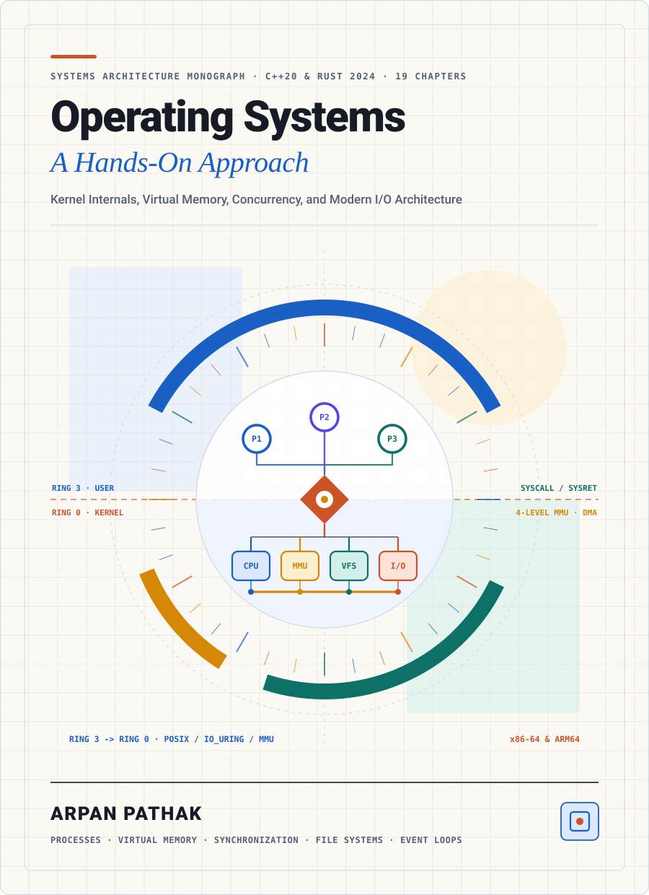
Preface
“There are two ways of constructing a software design: One way is to make it so simple that there are obviously no deficiencies, and the other way is to make it so complicated that there are no obvious deficiencies. The first method is far more difficult.” C.A.R. Hoare, The Emperor’s Old Clothes (1980 Turing Award Lecture)
The Philosophy of the Machine
Most software engineers spend their careers insulated inside runtime environments, garbage collectors, language virtual machines, and cloud abstractions. This insulation is a triumph of software engineering, but it breeds a dangerous illusion: the belief that computation, memory, and bandwidth are boundless, uniform, and isotropic.
In reality, computation is strictly governed by the physics of silicon and microarchitecture:
- CPU cores communicate across shared memory buses arbitrated by cache coherence protocols (MESI/MOESI), where uncoordinated concurrent writes across the same 64-byte cache line trigger catastrophic bus traffic through false sharing.
- Memory access latencies form a steep cliff: from sub-nanosecond L1 cache hits (4 cycles) to tens of nanoseconds for DRAM (hundreds of cycles), to hundreds of microseconds for NVMe storage devices.
- System calls perform hardware privilege transitions (Ring 3 → Ring 0) that serialize pipeline execution, switch execution stacks, and perturb TLB and cache locality, making them orders of magnitude more expensive than ordinary function calls.
The operating system serves as the supervisory software foundation that enforces hardware privilege boundaries, orchestrates virtual memory address translation, multiplexes finite CPU time among contending execution streams, and guarantees fault isolation. Building high-performance, fault-tolerant infrastructure requires understanding how the operating system and underlying hardware collaborate from first principles.
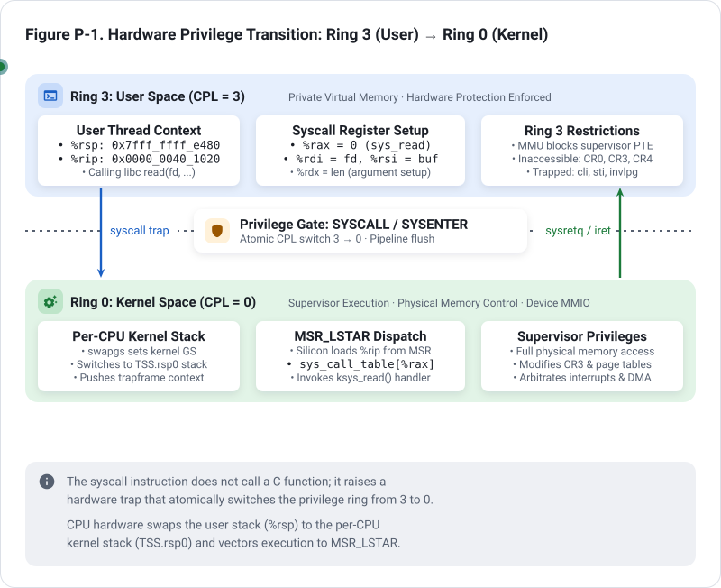
The Dual-Language Paradigm: C++20 and Rust 2024
To truly master systems programming, one must transcend language dogma. This book deliberately pairs ISO C++20 and Rust (2024 edition) across every chapter and reference implementation:
- C++20 provides raw mechanical sympathy: explicit pointers, manual memory layout control, direct access to architectural instructions, unconstrained memory ordering, and direct POSIX system interfaces. It represents the historical and contemporary foundation of kernels, runtime engines, database storage managers, and high-frequency trading infrastructure.
- Rust (2024 edition) introduces mathematical rigor to systems engineering: affine type systems, compile-time data race freedom enforced by
SendandSync, deterministic destruction without exception hazards, and explicit demarcation of unsafe operations via strict invariant proofs.
By implementing every mechanism (from lock-free ring buffers and virtual memory allocators to pipeline orchestrators and kqueue supervisors) in both languages side-by-side, you learn to decouple abstract systems principles from language-specific idiosyncrasies. You will understand both the raw microarchitectural consequences of memory operations and the formal type-theoretic invariants required to prove their soundness.
The Anatomy of a Systems Engineering Interview
Systems, infrastructure, kernel, and performance engineering interviews probe the boundary where software meets the operating system and the physical machine:
- Memory Ordering & Hardware Visibility: Do you understand why sequentially consistent atomics (
seq_cst) incur severe penalties on ARM64 architectures compared to acquire-release semantics (memory_order_acquire/memory_order_release)? - Concurrency Invariants & Pitfalls: Can you explain why a condition variable requires a predicate evaluation loop (
whileinstead ofif), why spurious wakeups occur in OS schedulers, and how to avoid the Thundering Herd penalty? - Kernel Boundaries & Resource Lifecycles: Do you know why a pipeline of child processes deadlocks if the parent fails to close its inherited write descriptor? Why must a
SIGCHLDhandler loop overwaitpidwithWNOHANG? - Virtual Memory & Cache Coherence: Can you derive how multi-level page tables conserve physical DRAM, what triggers a TLB shootdown across CPU sockets, and how allocator metadata alignment prevents internal and external fragmentation?
This text is engineered to equip you with the mental models, architectural proofs, and clean reference implementations to answer these questions with absolute confidence and rigor.
Reading Pathways & Curriculum Structure
The chapters are organized progressively from hardware fundamentals upward into distributed runtime patterns, concluding with intensive interview derivations:

Recommended Study Tracks
Depending on your immediate goals, consider following one of these curated pathways:
- The 48-Hour Interview Track: Focus on Chapter 19 (Interview Problems), supplemented by Chapter 6 (Synchronization), Chapter 7 (Virtual Memory), Chapter 8 (Allocators), and Chapter 13 (I/O Multiplexing).
- The Core Systems Track: Read Chapters 1 through 9 sequentially to build an unbreakable mental foundation of processes, threads, virtual memory translation, and syscall mechanics.
- The Concurrency & Performance Track: Study Chapters 4, 6, 17, 18, and Section 19.4 to master atomics, lock-free algorithms, cache lines, false sharing, and profiling with hardware counters.
Pedagogical Conventions
To maximize signal density and retention, each chapter incorporates standardized visual and typographical conventions:
Note
Key Idea: Highlights core architectural principles, hardware invariants, and critical theoretical theorems.
Tip
Experiment: Suggests concrete, hands-on micro-benchmarks or code modifications to verify kernel behavior on your local machine.
Caution
Common Pitfall: Warns against subtle concurrency hazards, memory leaks, undefined behavior, or interviewer trap questions.
The Verification Covenant
Every line of code in this book is non-fictional. Every listing is integrated into an automated verification harness (code/run_all.sh) that compiles under strict compiler configurations:
- C++: Clang with
-std=c++20 -Wall -Wextra -Wpedanticon Apple Silicon and Linux. - Rust:
rustc 2024edition with zero compiler warnings and zero panicking.unwrap()calls in production execution paths.
All code listings are self-contained, deterministic, and accompanied by microarchitectural safety proofs. Approach the text with curiosity, verify every invariant on your machine, and build from first principles.
Table of Contents & Subject Index
Tip
Interactive Navigation: All chapter titles, section headers, and subject terms below are direct clickable hyperlinks. Click any entry to jump immediately to that topic in the text or generated PDF.
Part I: Complete Navigable Directory
Front Matter
Foundations: Architecture, Processes & Threads
- 1. The Ontological Necessity of the Operating System
- 2. The Architectural Substrate and Execution Constraints
- 3. Process Abstraction and Lifecycle
- 4. Threaded Execution and Concurrency Hazards
- 5. Scheduling Theory and Policy
- 6. Synchronization and Memory Ordering
- 6.1 Mutual Exclusion and Critical Sections
- 6.2 Condition Variables and Predicate-Based Synchronization
- 6.3 Deadlock: Causes and Prevention (Coffman Conditions)
- 6.4 Atomic Compare-And-Swap (
compare_exchangevs.compare_exchange_weak) - 6.5 Hardware Memory Ordering, Store Buffers, and Litmus Tests
- 6.6 Synchronization Beneath the Primitives: Futexes and Seqlocks
Memory, Kernel Boundary & Durability
- 7. Virtual Memory and the Architecture of Address Translation
- 8. Memory Allocation and Management Strategies
- 9. The Kernel Boundary and the Cost of System Calls
- 10. Asynchronous Notifications and Signal Semantics
- 11. Inter-Process Communication (IPC)
- 12. File System Architecture and Durability
Networking, Daemons & Scalable Systems
- 13. I/O Multiplexing and the Event Loop
- 14. Network Protocols and the Socket Interface
- 15. Daemon Lifecycle and Service Supervision
- 16. Virtualization and Containerization
- 17. Multiprocessor Systems and Hardware Accelerators
- 18. Performance Analysis and Observability
Interview Problems & Reference Implementations
- 19. Systems Interview Problems: Derivations and Reference Implementations
- 19.1 Architectural Framework and Problem-Solving Discipline
- 19.2 The Bounded Blocking Queue
- 19.2.1 Concurrency Model and Synchronization Primitives
- 19.2.2 State Invariants and Predicate Verification
- 19.2.3 Reference Implementation (C++20 & Rust 2024)
- 19.2.4 Backing-Store Variants and Building the Ring Buffer by Hand
- 19.2.5 Memory Layout: The
Option<T>Tag, Niche Optimization, andMaybeUninit<T> - 19.2.6 Systems Analysis and Concurrency Interview Follow-Ups
- 19.3 The Free-List Allocator
- 19.4 The Lock-Free Single-Producer Single-Consumer (SPSC) Ring Buffer
- 19.5 Byte Routines:
memmove,strlenandatoi - 19.6 The LRU Cache
- 19.7 The Reader-Writer Lock
- 19.8 The Thread Pool
- 19.9 The Process Pipeline:
fork,execandpipe - 19.10 Bit Manipulation
- 19.11 Linked List Operations
- 19.12 Operating System Fundamentals: Six Technical Derivations
- 19.12.1 Process Isolation vs. Thread Concurrency Topology
- 19.12.2 Context Switch Mechanics and Microarchitectural Overhead
- 19.12.3 System Call Traps and Privilege Boundary Enforcement
- 19.12.4 Synchronization Taxonomy: Mutex, Spinlock, and Semaphore
- 19.12.5 Deadlock Dynamics: Coffman Conditions and Prevention Strategies
- 19.12.6 Virtual Memory Architecture and Page Fault Resolution
Part II: Systems Subject & Keyword Index
A thematic, alphabetical cross-reference linking systems topics directly to their foundational derivation and practical implementation.
A
- Abstraction (Hardware Abstraction Layer): The foundational operating system role mediating between complex physical hardware and uniform software primitives (files, sockets, processes).
- Acquire-Release Semantics: Synchronizes shared memory between threads without the heavy hardware penalty of full sequential consistency fences.
- Address Space Layout: Virtual memory organization across text, data, BSS, heap, memory-mapped regions, and user stack.
- Address Translation (Hand Calculation): Complete step-by-step mathematical walk of a 48-bit canonical virtual address through PML4, PDPT, PD, and PT levels to physical address assembly.
- Numerical Walkthrough & Invariants: §7.2.3
- Anonymous Mapping (
MAP_ANON | MAP_PRIVATE): Kernel allocation of zero-initialized demand pages unbacked by physical disk files. - APIC / IO-APIC & ARM GIC (Interrupt Controllers): Two-tier hardware interrupt routing, Message Signaled Interrupts (MSI-X), and priority arbitration across multiprocessor cores.
- Hardware Routing & EOI: §2.4.1
- Apple Silicon Unified Memory (UMA): Shared physical memory substrate between CPU, GPU, and Neural Engine without PCIe bus serialization.
- Architectural Analysis: §17.3
- Async-Signal-Safety: Functions safe to execute inside asynchronous signal handlers without corrupting thread stacks or deadlocking libc mutexes.
- Atomicity Gap: The structural discrepancy between high-level language expressions (
counter++) and low-level load-modify-store sequences causing lost updates. - Atomics (Memory Models): Load and store instructions providing hardware memory synchronization guarantees.
B
- Bare-Metal Execution: The fundamental architectural limitations (no concurrency, no memory protection, no unified device drivers) of executing directly on raw hardware.
- Architectural Invariants: §1.1
- Bit Manipulation (Branchless): Microarchitectural optimizations utilizing bit smearing and hardware popcount instructions.
- Bounded Blocking Queue: Multi-threaded queue that synchronizes producers and consumers under strict capacity limits.
- Buffered I/O (
BufWriter): Amortizing the overhead of user-to-kernel context transitions via large user-space memory buffers.- System Call Trap Overhead: §9.2
- Bump Allocator (Arena): Extreme high-throughput allocation strategy incrementing an offset pointer within contiguous memory.
- Design & Mathematical Alignment: §8.2
C
- Cache Coherence Protocols (MESI / MOESI): Hardware protocols ensuring cache-line consistency across multi-core systems.
- Cache Lines (64-byte Granularity): The atomic transfer unit between L1/L2/L3 caches and main memory.
- Coffman Deadlock Conditions: The four axiomatic conditions required for a system to enter permanent deadlock.
- Condition Variables: Execution barriers enabling threads to sleep until notified of a state change under a controlling mutex.
- Context Switch Overhead: The microarchitectural penalty of saving CPU registers, swapping page tables, and invalidating pipeline state.
- Copy-on-Write (COW): Memory optimization where physical frames are shared as read-only until mutated by child or parent.
D
- Daemons & Detachment Ritual: Creating autonomous background processes detached from terminals and session leaders.
- Data Races: Undefined behavior occurring when concurrent threads access identical memory without synchronization and at least one is a write.
- Demand Paging: Memory virtualization where physical frames are allocated lazily upon page fault rather than reservation.
- Dentry & Inode Topology: The directory cache and file metadata structures governing VFS storage durability.
- Inode Architecture: §12.2
E - F
- Edge-Triggered vs. Level-Triggered Multiplexing: Notification mechanics for ready file descriptors under high concurrency.
- Event Loops (
kqueue/epoll/poll): Scalable single-threaded I/O engines multiplexing thousands of descriptors. - False Sharing: Severe performance degradation caused by distinct CPU cores mutating independent variables residing on the same cache line.
- File Descriptors: Per-process integer indices referencing open file descriptions and inodes in the kernel.
- Frame Pointer (FP / RBP / x29): Invariant structural anchor for function activation records, enabling debugger backtraces and call frame unwinding.
- Architectural Function: §2.1
- Free-List Allocator: Explicit heap allocator with header metadata, block splitting, and contiguous coalescing.
G - L
- Guard Pages (
PROT_NONE): Virtual memory pages configured with zero permissions to detect stack overflows or buffer out-of-bounds accesses.- Protection Mechanics: §7.3
- Huge Pages: 2 MiB / 1 GiB virtual page translations designed to maximize TLB coverage and eliminate translation latency.
- Hardware TLB Reach: §7.2.4
- Interrupt Descriptor Table (IDT) & Top/Bottom-Half Handlers: Hardware vector dispatch table,
TSS.rsp0trapframe saving,hardirqmasking, andsoftirqdeferred execution. - Inter-Process Communication (IPC): Exchanging state across hardware isolation boundaries via pipes, sockets, and shared memory.
- Isolation (Process Protection): Hardware-enforced boundary preventing cross-process interference and securing kernel memory.
- Lock-Free Programming: Concurrency without mutex barriers, relying on atomic instructions and hardware memory ordering guarantees.
- SPSC Queue Derivation: §19.4
- LRU Cache: High-performance eviction cache pairing an O(1) hash table with a doubly-linked list.
- Zero-Allocation Splice Implementation: §19.6
M - P
- Mechanism versus Policy Separation: Foundational architectural principle decoupling invariant low-level hardware mechanisms from tunable high-level allocation algorithms.
- Memory Fences & Ordering: CPU instructions constraining the reordering of loads and stores across memory buses.
- Theoretical Derivation: §6.5
- Multi-Level Page Tables: Tree-structured hierarchical address translation enabling sparse virtual address spaces without wasting physical RAM.
- Non-Blocking I/O (
O_NONBLOCK): System call semantics allowing asynchronous execution without thread suspension. - NUMA Topologies: Non-Uniform Memory Access architectures where latency depends on memory socket locality.
- Optimization Strategies: §17.1
- Page Map Level 4 (PML4): The root table of the 4-level x86-64 page hierarchy loaded into the CR3 control register.
- Translation Walk: §7.2
- Pipeline Deadlocks: Common concurrency pitfall where unclosed write descriptors prevent readers from observing EOF.
- Descriptor Management & Proof: §19.9.4
- POSIX Standard Interface: Standardized system call boundary unifying process management, file I/O, virtual memory, and IPC across UNIX-like systems.
- Core API Taxonomy: §1.4
- Priority Inversion: Scheduling hazard where a high-priority thread blocks on a resource held by a low-priority thread.
- Priority Inheritance Solutions: §5.4
- Process Control Block (PCB): Kernel data structure maintaining architectural register state, page tables, and file descriptors.
- Program Counter (PC / RIP / PC_EL0): Microarchitectural register holding the linear virtual address of the next instruction to fetch.
R - S
- Reader-Writer Lock: Synchronization primitive permitting concurrent readers while restricting writers to exclusive access.
- Writer-Preference Implementation: §19.7
- Resource Management (Arbitration): Operating system orchestration and time/space multiplexing of CPU cores, memory frames, and I/O bandwidth.
- Ontological Necessity: §1.2
- Shared Memory (
mmap/ POSIXshm): Highest-throughput IPC mechanism bypassing the kernel during data exchange.- Zero-Copy Implementation: §11.2
- Signal Coalescing & Reaping: POSIX signal delivery property requiring non-blocking loops to prevent zombie leaks.
SIGCHLDandwaitpid: §10.3
- Sparse Files: File system structures where unwritten data blocks are unallocated, saving physical storage.
- Block Allocation Mechanics: §12.3
- Spurious Wakeups: Condition variable unblocking without explicit notification caused by kernel scheduler dynamics.
- Systems Nuances: §19.2.6
- Stack Pointer (SP / RSP / SP_EL0): Architectural register tracking the active boundary of the descending call stack.
- Status Flags (FLAGS / RFLAGS / PSTATE): CPU condition codes (ZF, CF, SF, OF) and interrupt mask control flags (IF).
- Condition Evaluation: §2.1
- System Call Boundary: Hardware-supervised privilege gatekeeper transferring control from user mode to kernel mode.
T - Z
- TCP Protocols & Sockets: Reliable, connection-oriented byte streams with flow control and congestion avoidance.
- Socket Interface Mechanics: §14.1
- Thread Pool: Concurrency architecture amortizing thread creation costs across a fixed pool of persistent worker threads.
- Implementation & RAII Shutdown: §19.8
- Thundering Herd Mitigation: Preventing catastrophic CPU contention by waking single threads (
notify_one) rather than all sleeping threads.- Bounded Queue Optimization: §19.2.6
- TLB (Translation Lookaside Buffer): High-speed CPU hardware cache storing recent virtual-to-physical address translations.
- Architecture & Invalidation: §7.2
- Virtual Memory Architecture: Core isolation mechanism presenting processes with private, contiguous address spaces.
- Zombie Processes: Terminated processes awaiting parent retrieval of exit status, retaining a PID table slot.
1. The Ontological Necessity of the Operating System
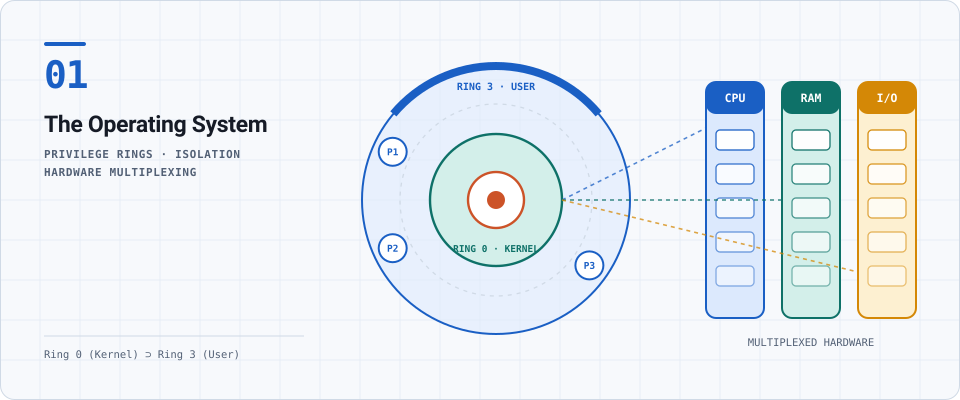
1.1 Architectural Limitations of Bare-Metal Execution
The requirement for an operating system is fundamentally predicated on the inherent architectural limitations of bare-metal execution. In a primitive hardware environment, a single processor core is constrained by a solitary program counter, which effectively precludes multi-program concurrency by capturing the instruction stream. Furthermore, the absence of a supervisory layer leaves the system without mechanisms for memory protection or instruction restriction, rendering any program capable of unmitigated interference with the hardware or other co-resident software. Finally, the lack of unified device drivers necessitates that every application manage its own hardware-specific communication, a process that is both inefficient and prone to catastrophic resource contention.
1.2 Axiomatic Roles: Abstraction, Isolation, and Resource Management
To resolve these deficiencies, the operating system implements three critical roles: abstraction, isolation, and resource management. Through abstraction, the OS mediates between complex hardware interfaces and simplified software objects, such as processes, files, and sockets, thereby decoupling program logic from physical device geometry. This abstraction, however, necessitates isolation; once multiple processes coexist within a managed environment, the OS must enforce strict boundaries to prevent cross-process interference. This enforcement is delegated to the hardware through privilege levels and page tables, ensuring that memory and resource access remain confined to authorized domains. The resulting contention for finite hardware necessitates resource management, where the OS acts as a central arbiter, orchestrating the distribution of CPU time, memory capacity, and I/O bandwidth according to evolving workload policies.

1.3 Mechanism versus Policy Separation
The implementation of these roles relies on the distinction between mechanism and policy. Mechanisms, the low-level primitives provided by the hardware, such as context switching or page table walks, remain constant across architectural iterations, while policies, the logic governing which process to schedule or which page to evict, are tuned to specific system requirements.
1.4 The System Call Boundary and POSIX Standard Interface
The boundary between the kernel (which executes in a privileged mode with unrestricted instruction access) and user-mode applications is mediated through the Portable Operating System Interface (POSIX) system call interface. A system call provides a hardware-supervised, deterministic transfer of control, allowing a program to request kernel services without compromising the integrity of the kernel’s own address space. This transition, while computationally expensive compared to standard function calls, serves as the essential gatekeeper for system security and stability.
Table 1-1. POSIX calls in this book.
| Call | What it does | Chapter |
|---|---|---|
open / read / write / close | access files through descriptors | 12, 13 |
fork / waitpid / execve | create, reap, and replace processes | 3 |
mmap / mprotect / munmap | map memory and change its protection | 7, 11 |
pipe / socketpair | create communication channels | 11 |
poll / kqueue / epoll | wait for readiness on many descriptors | 13 |
sigaction / sigprocmask | install and mask signal handlers | 10 |
bind / listen / accept / connect | establish network connections | 14 |
setsid / umask / chdir | detach a daemon from its terminal | 15 |
Every operating system balances two competing goals: virtualization (giving each program the illusion of a private processor, flat memory, and durable files) and isolation (preventing any faulty or adversarial program from corrupting sibling processes or the kernel). Separating unchanging hardware mechanisms from tunable kernel policies makes both possible.
2. The Architectural Substrate and Execution Constraints
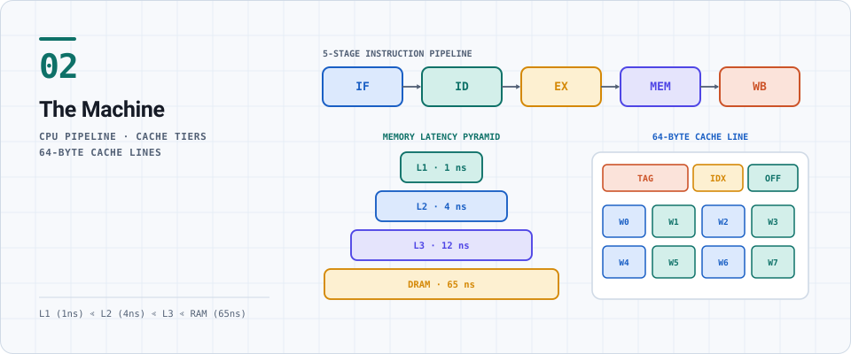
The design and operational behavior of an operating system are fundamentally dictated by the invariant properties of the underlying hardware. These architectural properties define the boundaries of sequential instruction execution, the necessity of virtual memory management, and the hardware mechanisms required to enforce system integrity and asynchronous I/O coordination.
To keep architectural concepts independent of vendor-specific mnemonics, each mechanism in this chapter is presented first in general hardware terms, followed by a consolidated reference mapping across x86-64 and ARM64 (AArch64) in Tables 2-1 and 2-2.
2.1 The Execution Model and the Atomicity Gap
A processor core operates via a continuous fetch-decode-execute cycle. At any discrete clock edge, the architectural state of an executing thread is encapsulated by its on-chip register file. Because registers reside directly within the execution pipeline, register access completes within a single clock cycle (approximately 0.3 nanoseconds), whereas off-chip main memory requires hundreds of cycles. Across contemporary 64-bit architectures, the register file is partitioned into five functional classes:
- Program Counter: Holds the virtual address of the next machine instruction to be fetched from the L1 instruction cache. During sequential execution, the control unit automatically advances the program counter by the length of the decoded instruction; control-flow transfers (branches, procedure calls, system calls, and hardware interrupts) overwrite this register with a new target address.
- Stack Pointer: Points to the active downward-growing boundary of the thread’s call stack in virtual memory. Allocating space for local variables decrements the stack pointer, whereas deallocating a stack frame increments it. Both the System V AMD64 ABI and the ARM64 Procedure Call Standard (AAPCS64) mandate 16-byte stack alignment at procedure call boundaries to satisfy vector load and store alignment requirements.
- Frame Pointer: Anchors the invariant base of the current function’s activation record. Although the stack pointer fluctuates as temporary operands are pushed and popped, the frame pointer remains fixed from function entry until return. Saving the caller’s frame pointer adjacent to the return address creates a singly linked chain of activation records, enabling debuggers and kernel sampling profilers to reconstruct call stacks in
O(depth)pointer dereferences. - Processor Status and Control Flags: Stores arithmetic condition codes (such as zero, carry, sign, and overflow) alongside privileged processor control bits. For operating system kernels, the critical control state is the hardware interrupt mask: clearing the interrupt-enable bit causes the core to defer external asynchronous interrupts while updating sensitive kernel structures.
- General-Purpose Registers: Provide single-cycle operand storage for arithmetic, pointer manipulation, and argument passing (16 general-purpose registers on x86-64; 31 on ARM64). By calling-convention contract, these registers are partitioned into caller-saved (volatile) registers, which a callee may overwrite freely, and callee-saved (non-volatile) registers, whose prior values the callee must preserve before returning.
Table 2-1. Architectural register mapping across x86-64 and ARM64.
| Functional Role | x86-64 Register | ARM64 (AArch64) Register |
|---|---|---|
| Program Counter | RIP | PC |
| Stack Pointer | RSP | SP (SP_EL0 in user mode, SP_EL1 in kernel mode) |
| Frame Pointer | RBP | x29 (FP) |
| Return Address Storage | Pushed onto stack by CALL | Stored in Link Register x30 (LR) by BL |
| Status and Interrupt Mask | RFLAGS (Interrupt Flag IF, bit 9) | PSTATE (Interrupt mask bits DAIF) |
| Integer Argument Registers | RDI, RSI, RDX, RCX, R8, R9 (first 6) | x0 through x7 (first 8) |

2.1.1 The Fetch-Decode-Execute Datapath and Function Activation Records
To sustain high instruction throughput despite memory latency, a superscalar processor organizes execution into four microarchitectural stages:
- Instruction Fetch: Retrieve the next instruction bytes from the L1 instruction cache using the Program Counter.
- Decode and Register Rename: Parse instruction opcodes and map architectural register names onto internal physical registers so independent instructions can execute concurrently out of order without false write hazards.
- Execute and Memory Access: Compute arithmetic operations in the Arithmetic Logic Unit (ALU) or evaluate effective memory addresses, consulting the Translation Lookaside Buffer (TLB) and L1 data cache while buffering uncommitted writes in the core’s hardware store buffer.
- Commit (Retire): Although execution proceeds out of order internally, the reorder buffer retires instructions in strict program order, committing architectural register updates and draining stores to the coherent cache hierarchy. If an instruction faults (for example, on an invalid memory reference or division by zero), all younger speculative instructions are discarded cleanly.
Upon procedure invocation (CALL on x86-64; BL on ARM64), caller and callee cooperate to construct a function activation record (stack frame) in virtual memory (Figure 2-2). The caller places integer parameters in the designated argument registers and records the return address. The callee prologue saves the caller’s frame pointer, anchors its own frame pointer to the base of the new frame, preserves any callee-saved registers it modifies, and decrements the stack pointer to reserve local storage. Upon function return, the epilogue reverses these operations and transfers control back to the saved return address.

2.1.2 Formal Derivation of the Atomicity Gap
Although the reorder buffer preserves sequential semantics within a single core, the processor datapath does not guarantee that a composite high-level language statement executes atomically across multiple cores. This discrepancy between source-level notation and machine-level execution defines the atomicity gap.
Consider a shared 64-bit integer counter incremented concurrently by two processor cores (counter++), with initial value 42. Because arithmetic units operate on core-private registers rather than directly on main memory, the compiler lowers the increment into a three-instruction Read-Modify-Write (RMW) sequence:
// x86-64 Read-Modify-Write // ARM64 Read-Modify-Write
1. mov rax, QWORD PTR [rip + counter] 1. ldr x0, [x1] // Load 42 into core-private register
2. add rax, 1 2. add x0, x0, #1 // Compute 43 in local ALU
3. mov QWORD PTR [rip + counter], rax 3. str x0, [x1] // Store 43 back to coherent cache line
Under concurrent execution, the two cores may interleave these instructions across the memory subsystem:
- Core 0 executes Step 1 and loads
42into its private register. - Core 1 executes Step 1 prior to Core 0’s store, likewise loading
42. - Both cores independently evaluate Step 2 in their local ALUs, producing
43. - Core 0 executes Step 3, storing
43to the shared cache line. - Core 1 executes Step 3, overwriting the same location with
43.
Despite two distinct increments, the final stored value is 43 rather than 44, producing a concurrency anomaly termed a lost update. Eliminating the atomicity gap requires either hardware atomic instructions that maintain exclusive cache-line ownership across the entire Read-Modify-Write cycle (lock xadd on x86-64; ldaddal or load-linked/store-conditional pairs on ARM64) or kernel-coordinated synchronization primitives, examined in Chapters 4 and 6.
2.2 Memory Hierarchy and Locality Dynamics
The memory subsystem is organized as a multi-tiered hierarchy balancing capacity against access latency. Waiting 60 to 100 nanoseconds for an off-chip Dynamic Random-Access Memory (DRAM) read stalls a 3 GHz processor for more than 200 clock cycles. Hardware mitigates this disparity through progressively smaller, lower-latency on-chip Static Random-Access Memory (SRAM) caches:
- Registers: Approximately 0.3 ns (1 cycle), private to each execution pipeline.
- L1 Cache (split instruction and data): Approximately 1 ns (3 to 4 cycles), 32 to 64 KiB private per core.
- L2 Cache: Approximately 3 to 5 ns (10 to 14 cycles), 256 KiB to 4 MiB private per core.
- L3 / System-Level Cache: Approximately 12 to 20 ns (35 to 55 cycles), 8 to 128 MiB shared across cores.
- Main DRAM: Approximately 60 to 100 ns (200+ cycles), gigabytes to terabytes of physical capacity.
The effectiveness of this hierarchy depends directly on two empirical properties of program memory access:
- Temporal Locality: Recently referenced memory addresses (such as loop counters and active stack variables) exhibit a high probability of being referenced again in the near future.
- Spatial Locality: Addresses contiguous to a recently referenced byte (such as sequential array elements) exhibit a high probability of subsequent access.
To exploit spatial locality, the memory subsystem transfers data between DRAM and cache in fixed 64-byte cache lines (128 bytes on certain ARM64 implementations). Sequential traversal over contiguous memory allows hardware stride prefetchers to fetch upcoming lines before demand loads arrive, whereas pointer chasing across scattered heap allocations incurs repeated DRAM stalls.
Maintaining cache coherence at 64-byte granularity introduces the multi-core pathology of false sharing. When Core 0 and Core 1 modify logically independent variables residing within the same 64-byte cache line, the hardware coherence protocol (such as Modified-Exclusive-Shared-Invalid (MESI)) must repeatedly transfer exclusive ownership of the entire line between cores, degrading parallel throughput (measured empirically in Chapter 17).

2.3 Privilege Domains and Boundary Enforcement
System integrity is enforced through the hardware-mediated bifurcation of execution into distinct privilege levels:
- User Mode (
Ring 3on x86-64;EL0on ARM64): The restricted execution domain for application processes. The processor prohibits privileged instructions (such as modifying page-table root registers, altering interrupt masks, or programming device controllers) and confines memory references to virtual pages marked user-accessible. Any violation raises an immediate hardware exception that transfers control to the kernel. - Kernel Mode (
Ring 0on x86-64;EL1on ARM64): The privileged domain in which the operating system kernel executes with unrestricted access to memory-management hardware, timers, interrupt controllers, and I/O interfaces. Contemporary processors additionally define a hypervisor tier (VMX Rooton x86-64;EL2on ARM64, detailed in Chapter 16) to isolate guest kernels.
To reduce the latency of mode transitions, the kernel is commonly mapped into the upper portion of each process’s virtual address space, marked accessible only in kernel privilege mode. While this shared mapping avoids a full page-table replacement on system call entry, it imposes a strict security invariant: the kernel must validate every user-supplied pointer and buffer length before dereferencing it.

2.3.1 Device Communication Mechanisms: MMIO and DMA
Interaction between the processor and external peripheral controllers relies on two complementary hardware mechanisms:
- Memory-Mapped I/O (MMIO): Rather than requiring specialized I/O instructions for every peripheral, the platform reserves dedicated ranges of the physical address space and routes them not to DRAM chips, but to control and status registers inside hardware controllers (storage controllers, network interfaces, and interrupt controllers). When kernel code executes an ordinary store instruction to an MMIO physical address (for example,
0xFEE0_00B0on x86-64), the interconnect delivers that write directly to the target device register. Because user-mode page tables omit MMIO physical ranges, unprivileged processes cannot access device registers directly. - Direct Memory Access (DMA): Transferring bulk storage blocks or network packets via CPU-driven register loads and stores would consume processor cycles proportionally to I/O bandwidth. Modern peripheral controllers therefore incorporate a DMA engine capable of reading and writing physical DRAM directly over the PCIe bus independently of the CPU core. To initiate a transfer, the kernel constructs a descriptor in memory specifying the source, target physical DRAM address, and transfer length, notifies the controller via a single MMIO doorbell write, and schedules other runnable threads on the core. Once the DMA engine finishes writing the requested bytes into DRAM, the peripheral signals completion asynchronously by asserting a hardware interrupt.
2.4 Synchronous Traps and the Asynchronous Interrupt Subsystem
Control transfers from user mode to kernel mode fall into two fundamental classes determined by their causal relationship to the executing instruction stream:
- Synchronous Traps and Exceptions: Events triggered directly by the currently executing instruction and therefore deterministic with respect to the instruction stream. This class comprises intentional system calls (
syscallon x86-64;svc #0on ARM64, Chapter 9), recoverable faults (such as a page fault, where the kernel maps the missing physical frame and restarts the faulting instruction), and unrecoverable exceptions (such as integer division by zero or illegal instruction execution). - Asynchronous Hardware Interrupts: Signals originating outside the processor’s instruction stream, such as a DMA transfer completion from an NVMe controller, packet arrival at a network interface, or expiration of a hardware timer. An asynchronous interrupt may arrive between any two instructions of whatever thread currently occupies the core.
2.4.1 Interrupt Controllers and Routing Topologies (APIC and GICv3)
Early uniprocessor systems multiplexed a small number of physical peripheral interrupt lines through a single programmable interrupt controller wired to one interrupt pin on the processor. Scaling to multi-core servers with high-throughput PCIe devices invalidates that single-wire topology for three structural reasons:
- Pin scarcity and shared-line contention: Physical interrupt wires cannot scale to hundreds of independent device queues; sharing a single line among multiple peripherals forces the kernel to poll every attached driver on each assertion.
- Core affinity and cache locality: Multi-queue network and storage controllers maintain distinct per-core submission and completion queues; directing Queue
kcompletions specifically to Corekpreserves L1/L2 cache locality and eliminates cross-core lock contention. - Inter-processor signaling: Multi-core kernels require a low-latency hardware mechanism by which one core interrupts sibling cores to coordinate TLB invalidations (shootdowns) or scheduler wakeups.
Consequently, modern multi-core interrupt subsystems support four distinct signaling paths: shared legacy peripheral wires, message-based PCIe interrupts, per-core preemption timers, and inter-processor interrupts.
x86-64 Interrupt Architecture (IO-APIC, MSI-X, and Local APIC)
The x86-64 architecture distributes interrupt routing between the platform chipset and a dedicated Local Advanced Programmable Interrupt Controller (Local APIC) integrated onto the die of each CPU core (Figure 2-5).

- Chipset IO-APIC (Legacy Wired Lines): Legacy platform peripherals connect via physical lines to the chipset IO-APIC, which maintains a programmable table of 24 or more Redirection Table Entries (RTEs). During initialization, the kernel programs each RTE to associate physical wire
kwith an 8-bit interrupt vector (32..255; vectors0..31are architecturally reserved for internal processor exceptions) and a destination Local APIC core identifier. - Message Signaled Interrupts (MSI-X): Combining DMA and MMIO (Section 2.3.1) removes physical interrupt wiring for PCIe devices entirely. Because every core’s Local APIC is mapped to a well-known physical MMIO region (
0xFEE0_0000, with the destination core ID encoded in upper address bits), a PCIe controller signals an interrupt by issuing a 4-byte DMA write directly to that MMIO address, encoding the target vector (32..255) in the payload. MSI-X bypasses the chipset IO-APIC, provides up to 2,048 independent vectors per device, eliminates shared-line polling, and maps individual device queues directly to designated cores. Furthermore, PCIe write ordering guarantees that all preceding DMA data writes are globally visible in DRAM before the MSI-X interrupt write reaches the Local APIC. - Per-Core Local APIC Arbitration (
IRR,ISR, andEOI): Each core’s Local APIC aggregates four inputs: routed IO-APIC messages, direct PCIe MSI-X writes, Inter-Processor Interrupts (IPIs) transmitted by peer cores, and local APIC Timer expirations. To arbitrate concurrent arrivals without dropping signals, the Local APIC maintains two 256-bit state registers (one bit per vector0..255):- Interrupt Request Register (
IRR): Records pending vectors received by the core that have not yet begun execution. - In-Service Register (
ISR): Records vectors whose handlers are currently executing on the core. - When the highest-priority pending bit in
IRRoutranks the highest active bit inISR(andRFLAGS.IF == 1), the Local APIC atomically clears the bit inIRR, sets the corresponding bit inISR, and delivers the vector to the core. Upon completing the urgent device handshake, the kernel writes0to the Local APIC End-of-Interrupt (EOI) register, clearing the highest active bit inISRand enabling delivery of subsequent pending vectors.
- Interrupt Request Register (
ARM64 Interrupt Architecture (GICv3 / GICv4)
ARM64 systems implement the identical four signaling paths through the Generic Interrupt Controller (GICv3 / GICv4) architecture (Figure 2-6):

- Distributor (
GICD): Centralizes configuration and routing for chip-wide wired lines, designated Shared Peripheral Interrupts (SPI, IDs32..1019). - Interrupt Translation Service (
ITS): Receives PCIe MSI-X DMA doorbell writes and translates(DeviceID, EventID)tuples via memory-resident tables into Locality-Specific Peripheral Interrupts (LPI, IDs8192+) routed to a designated core. - Per-Core Redistributor (
GICR): Manages per-core arbitration and core-private sources: Software Generated Interrupts (SGI, IDs0..15) for cross-core signaling and Private Peripheral Interrupts (PPI, IDs16..31) for core-local sources such as the ARM Generic Timer. - CPU Interface System Registers: Rather than relying on uncached MMIO reads during interrupt entry, GICv3 exposes each core’s interface through architectural system registers: the kernel reads
ICC_IAR1_EL1to acknowledge the highest-priority pending interrupt ID and writesICC_EOIR1_EL1to signal End of Interrupt.
Table 2-2. Architectural correspondence between x86-64 APIC and ARM64 GICv3/GICv4 interrupt subsystems.
| Interrupt Function | x86-64 (APIC) | ARM64 (GICv3 / GICv4) |
|---|---|---|
| Shared wired peripheral lines | Chipset IO-APIC (RTE -> Vectors 32..255) | Distributor (GICD) -> SPI (IDs 32..1019) |
| PCIe DMA message interrupts | MSI-X write to target Local APIC MMIO | ITS translation -> LPI (IDs 8192+) |
| Per-core preemption timer | Per-core Local APIC Timer | Per-core Redistributor (GICR) PPI (IDs 16..31) |
| Inter-core signaling (TLB flush) | IPI (Inter-Processor Interrupt) | SGI (Software Generated Interrupt, IDs 0..15) |
| End-of-Interrupt completion | Write 0 to Local APIC EOI register | Write acknowledged ID to ICC_EOIR1_EL1 |
2.4.2 Vector Tables, Kernel Stack Switching, and Trapframe Construction
When an interrupt vector is accepted while a core executes in user mode, hardware must perform two operations atomically before fetching the first instruction of the kernel handler: locate the handler entry point and preserve the interrupted thread’s architectural state on trusted kernel memory.
Hardware cannot push the saved register frame onto the interrupted application’s user stack because user-mode code controls the user stack pointer (RSP / SP_EL0); an invalid, unmapped, or kernel-pointing user stack pointer would immediately trigger a nested fault or corrupt kernel memory. Consequently, hardware switches to a pre-allocated, kernel-owned stack prior to saving state (Figure 2-7).

On x86-64, interrupt entry proceeds through four deterministic steps:
- Vector Dispatch via the Interrupt Descriptor Table (
IDT): During system initialization, the kernel populates a 256-entry table of 16-byte descriptors in memory and loads its base address into the privilegedIDTRregister. Upon receiving vectorv, hardware indexesIDT[v]to obtain the 64-bit handler entry address, target privilege level (Ring 0), and gate type (an Interrupt Gate automatically clearsRFLAGS.IF = 0to mask nested external interrupts during entry). - Privilege Transition and Kernel Stack Switch (
TSS.rsp0): Detecting a Ring 3 to Ring 0 elevation, hardware consults the per-core Task State Segment (TSS) and loads the trusted kernel stack pointer fromTSS.rsp0, which the scheduler updates on every context switch to point to the current thread’s dedicated 8 to 16 KiB kernel stack. For critical faults where the regular kernel stack itself may be exhausted (such as a Double Fault#DFor Non-Maskable Interrupt#NMI),IDT[v]selects an isolated emergency stack from the Interrupt Stack Table (TSS.ist[1..7]). - Hardware Return Frame Construction: Hardware pushes a 5-word architectural frame onto the kernel stack consisting of the user Stack Segment (
SS), user Stack Pointer (RSP),RFLAGS, Code Segment (CS), and interrupted Instruction Pointer (RIP). For specific synchronous exceptions (such as page fault#PF), hardware pushes a 6th word encoding the fault Error Code. - Software Trapframe Completion (
struct pt_regs): Execution transfers to the kernel assembly entry stub, which saves the remaining general-purpose registers (RAXthroughR15) onto the kernel stack directly beneath the hardware frame. The resulting contiguous structure constitutes the trapframe (struct pt_regs), allowing higher-level kernel code in C or Rust to execute safely without disturbing the interrupted thread’s register context.
On ARM64, the processor achieves the same isolation through banked exception registers: transitioning from EL0 to EL1 switches the active stack pointer from SP_EL0 to SP_EL1, sets the DAIF interrupt mask bits, captures the interrupted program counter in ELR_EL1, saves processor flags in SPSR_EL1, records exception syndrome metadata in ESR_EL1, and vectors execution into the 128-byte entry offset within the vector table referenced by VBAR_EL1, where the entry stub saves x0 through x30 onto SP_EL1.
2.4.3 Top-Half and Bottom-Half Decomposition and EOI Lifecycle
Execution inside a hardware interrupt handler is governed by two strict operational invariants:
- Non-blocking execution: An interrupt handler executes in interrupt context, borrowing the kernel stack of whichever user thread happened to be active on that core. It possesses no independent process context and must never sleep or block on a sleeping mutex; attempting to acquire a lock already held by the interrupted thread on the same core would induce an immediate self-deadlock.
- Bounded latency: While local interrupts remain masked (
IF == 0) and the vector’s bit remains set in the Local APICISR, the core cannot service equal- or lower-priority interrupts. Prolonged execution inside a masked handler causes missed timer ticks and dropped network or storage completions.
To reconcile low interrupt latency with complex protocol and filesystem processing, modern kernels partition interrupt servicing into two phases (Figure 2-8):

- Top-Half (
hardirq, Interrupts Masked): Executes immediately upon trapframe construction for a duration measured in microseconds. It performs only the minimal hardware-critical operations: reading device status registers, advancing DMA descriptor ring indices, marking a deferred-work indicator in kernel memory, and issuing End of Interrupt (EOI) to the Local APIC (orICC_EOIR1_EL1on ARM64). Writing EOI clears the vector’s active bit inISRso the interrupt controller can deliver subsequent events. - Bottom-Half (
softirq, NAPI, and Workqueues, Interrupts Enabled): Executes after the top-half exits, with hardware interrupts re-enabled (IF == 1) so higher-priority hardware signals can preempt software processing:- Deferred non-blocking processing (
softirqand New API (NAPI)): In Linux, computationally intensive non-blocking tasks such as Transmission Control Protocol / Internet Protocol (TCP/IP) packet processing (NET_RX_SOFTIRQ), block I/O completion (BLOCK_SOFTIRQ), and timer callbacks (TIMER_SOFTIRQ) execute before returning to user mode, or offload to per-CPUksoftirqdkernel threads under sustained load. Under high packet rates, LinuxNAPItransitions a saturated network interface from per-packet interrupts to bounded polling withinNET_RX_SOFTIRQ, amortizing interrupt entry overhead across batches of frames. - Blocking deferred execution (
workqueuesand Threaded Interrupt Requests (IRQs)): Driver work that requires sleeping locks or secondary I/O is enqueued onto schedulable kernel threads (kworkerpools or threadedIRQhandlers), each backed by a full Process Control Block capable of blocking safely.
- Deferred non-blocking processing (
Prior to returning to user mode, the kernel exit path inspects whether the interrupt awakened a higher-priority runnable thread. If preemption is required, the scheduler performs a context switch to that thread; otherwise, the exit stub restores all general-purpose registers from the trapframe and executes iretq (x86-64) or eret (ARM64), atomically restoring the saved instruction pointer, stack pointer, privilege level, and interrupt mask to resume the interrupted thread transparently.
Hardware privilege rings (Ring 3/Ring 0, EL0/EL1) and interrupt dispatch tables (IDT, VBAR_EL1) are what turn a general-purpose processor into a multi-tenant operating system. Without timer interrupts and hardware-enforced traps, a single infinite loop in user code could monopolize the machine indefinitely.
On Linux, inspect /proc/interrupts twice separated by one second (cat /proc/interrupts; sleep 1; cat /proc/interrupts) to observe per-core Local APIC timer ticks (LOC) and NVMe or NIC MSI-X interrupt counters incrementing in real time across physical cores.
Performing blocking allocations (kmalloc(..., GFP_KERNEL)) or acquiring sleeping mutexes inside a top-half hardirq handler deadlocks the core because hardware interrupts are masked and no process context exists to schedule back onto the CPU. Blocking work belongs strictly in bottom-half workqueues or threaded IRQ handlers.
3. Process Abstraction and Lifecycle

A program is a static sequence of instructions; it becomes a process only when the operating system instantiates it into an active execution environment. A process is defined by its execution state, its resource ownership, and its isolated address space.
3.1 The Process Control Block and Address Space Topology
To manage multiple concurrent executions, the kernel maintains a Process Control Block (PCB) for every active process. The PCB serves as the primary vehicle for context switching, storing the process’s unique identifier (PID), its lineage, its current execution state (running, ready, or blocked), and the precise architectural state, including registers and the program counter, required to resume execution. Beyond execution state, the PCB tracks the process’s environmental resources, including its page tables for memory isolation, its file descriptor table, and its signal configuration.
3.1.1 Internal Data Structure of the Process Control Block
In production kernels, the PCB is a large, cache-line-aligned kernel structure allocated from a dedicated slab cache (task_struct_cachep under Linux’s Unqueued Slab Allocator (SLUB), Chapter 8). Rather than embedding every kernel subsystem inline, the PCB holds hot scheduling and context-switch fields directly at the front of the struct and references heavier resource tables through reference-counted pointers (Figure 3-1).
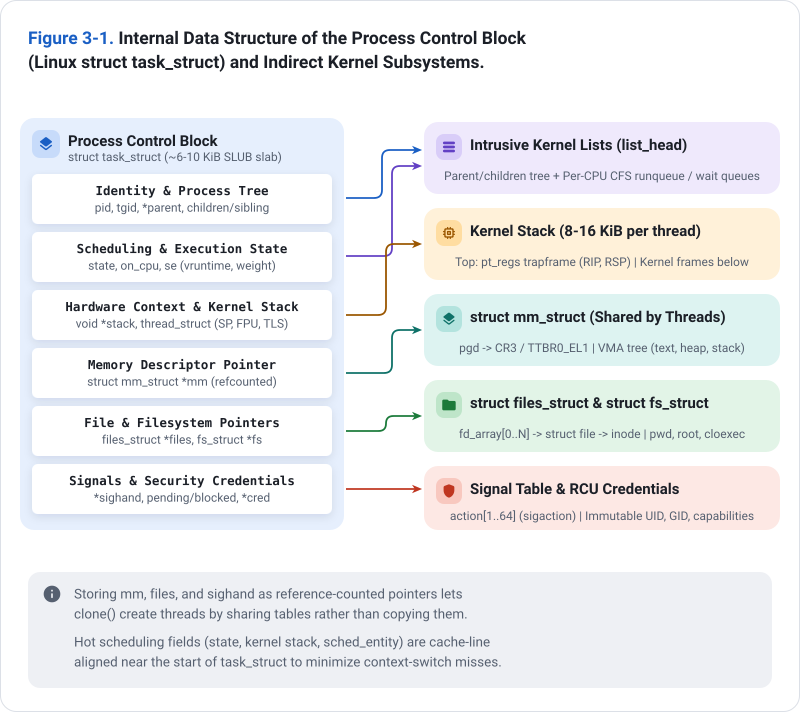
The following simplified C layout captures the six functional groups present in Linux’s struct task_struct (which spans approximately 6 to 10 KiB in modern kernels):
struct pcb {
/* 1. Scheduling and execution state (cache-hot on every context switch) */
volatile unsigned int state; /* TASK_RUNNING, INTERRUPTIBLE, ZOMBIE */
void *kstack; /* Base of 8-16 KiB per-thread kernel stack */
int on_cpu; /* Currently executing CPU core index */
struct sched_entity se; /* CFS vruntime, weight, red-black tree node */
struct list_head run_node; /* Intrusive link into runqueue or wait queue */
/* 2. Identity and process hierarchy */
pid_t pid; /* Unique kernel thread ID (TID) */
pid_t tgid; /* Thread group ID (POSIX PID seen in user space) */
struct pcb *parent; /* Parent process notified by SIGCHLD */
struct list_head children; /* Head of this process's child list */
struct list_head sibling; /* Link into parent->children */
int exit_code; /* Packed exit status retained for waitpid() */
/* 3. Saved hardware execution context */
struct thread_struct thread; /* Kernel SP, callee-saved regs, FPU/SIMD, TLS */
/* 4. Virtual memory descriptor (shared across threads of one process) */
struct mm_struct *mm; /* Page-table root (pgd -> CR3) and VMA tree */
/* 5. File descriptors and filesystem namespace */
struct files_struct *files; /* fd_array[0..N] -> struct file, cloexec mask */
struct fs_struct *fs; /* Current working directory (pwd) and root */
/* 6. Signal dispositions and security credentials */
struct sighand_struct *sighand; /* Signal handler table (action[1..64]) */
sigset_t blocked; /* Currently masked signals (sigprocmask) */
sigset_t pending; /* Signals generated but awaiting delivery */
const struct cred *cred; /* Immutable UID, GID, and capability bitmasks */
};
Each group inside the PCB reflects a specific operating system invariant:
- Scheduling and Execution State (
state,kstack,se): Fields touched on every timer tick and context switch are placed near the beginning of the structure (separated from read-mostly fields by cache-line alignment boundaries to prevent false sharing). Embedding intrusivestruct list_headpointers directly inside the PCB allows a single process to belong simultaneously to the parent-child tree, a scheduler runqueue, or a futex wait queue with zero separate heap node allocations (Section 8.2.2). - Identity and Lineage (
pid,tgid,parent,children,exit_code): On Linux, every kernel-scheduled execution context has its owntask_struct. All threads belonging to the same Portable Operating System Interface (POSIX) process share a common Thread Group Identifier (tgid), which is the value returned bygetpid(), while each thread owns a distinct kernelpid(returned bygettid()). When a child terminates,exit_codepreserves its 8-bit exit status or terminating signal number inside the zombie PCB until the parent reclaims it viawaitpid(). - Hardware Execution Context and Kernel Stack (
kstack,thread): Whenever the CPU traps from user mode into kernel mode on a system call or hardware interrupt, silicon switches to the thread’s private 8 to 16 KiB kernel stack (kstack) and records the user-mode register snapshot (struct pt_regs, Section 2.4.2) at the top of that stack. During an in-kernel context switch (switch_to), the scheduler saves the remaining kernel-mode callee-saved registers, kernel stack pointer, floating-point and Single Instruction, Multiple Data (SIMD) register bank (XMM/YMM/NEON), and Thread-Local Storage base register (FS_BASEon x86-64;TPIDR_EL0on ARM64) insidethread_struct. - Virtual Memory Descriptor (
struct mm_struct *mm): Themm_structholds the physical address of the top-level page directory (pgd, loaded intoCR3orTTBR0_EL1during context switch) alongside the balanced tree of Virtual Memory Areas (vm_area_struct, VMAs) describing every valid segment (text, data, heap,mmapregions, and stack) and its read/write/execute permissions. Storingmmas a reference-counted pointer rather than inline allowsclone(CLONE_VM)to spawn threads that share one address space by incrementingmm_users, whereasfork()allocates a newmm_structwith copy-on-write page-table entries. - File Descriptor Table and Filesystem Context (
*files,*fs):files_structcontains the integer-indexed array mapping process file descriptors (0, 1, 2, ...) to kernelstruct fileopen file descriptions (Section 12.1), together with the per-descriptorclose_on_execbitmask inspected byexecve(). Separatingfs_struct(pwd,root, andumask) enables threads to share a working directory by default while permitting containers to isolate filesystem roots independently. - Signal State and Security Credentials (
*sighand,blocked,pending,*cred): Signal handler dispositions (sighand_struct) are process-wide, whereas the signal mask (blocked) is per-thread so individual threads can control asynchronous delivery independently (Chapter 10). Security credentials (cred: real, effective, and saved User Identifier (UID) and Group Identifier (GID) plus Linux capability sets) are stored as immutable structures replaced via copy-on-write and Read-Copy-Update (RCU), allowing permission checks on everyopen()orkill()system call to execute without locking.
Kernels differ in whether they unify processes and threads into one PCB structure or split resource ownership from execution state (Table 3-1).
Table 3-1. Kernel PCB representation across Linux and macOS/Darwin (XNU).
| PCB Subsystem | Linux (struct task_struct) | macOS / Darwin XNU (proc + task + thread) |
|---|---|---|
| Process identity & POSIX state | task_struct (tgid, parent, children) | BSD layer struct proc (p_pid, p_pptr, p_children) |
| Address space & Mach ports | task_struct->mm (struct mm_struct) | Mach layer struct task (vm_map_t map, IPC port space) |
| Schedulable execution context | task_struct (pid, se, kstack, thread) | Mach layer struct thread (kernel stack, saved registers, runqueue) |
| Open file descriptors | task_struct->files (struct files_struct) | proc->p_fd (struct filedesc) |
| Credentials & signals | task_struct->cred, task_struct->sighand | proc->p_ucred (kauth_cred_t), proc->p_sigacts |
The process’s memory is organized into a structured address space, which provides a consistent view of memory regardless of the underlying physical allocation. This topology typically includes:
- Text Segment: The read-only machine code of the program, which can be shared across multiple processes to conserve physical memory.
- Data and Block Started by Symbol (
BSS) Segments: Regions for initialized and zero-initialized global variables, respectively. - Heap: A dynamically expanding region for runtime memory allocation, growing toward higher addresses.
- Stack: A region that manages function activation records, growing toward lower addresses.
- Kernel Space: A protected region at the apex of the address space, mapped into every process but inaccessible in user mode, facilitating efficient system calls.

Listing 3-1. Printing one address from each region (C++20). (code/ch03/layout.cpp)
// ch03/layout.cpp: the regions of a process address space, observed from inside.
#include <cstdint>
#include <iomanip>
#include <iostream>
#include <unistd.h>
// Initialized global: data segment.
int g_initialized = 42;
// Uninitialized global: BSS segment.
int g_uninitialized;
// Function machine code: text segment.
__attribute__((noinline)) void anchor() { asm volatile(""); }
int main() {
int stack_local = 7; // stack
int* heap = new int(99); // heap
std::cout << "pid " << getpid() << "\n"
<< std::hex << std::uppercase
<< "text (function) : " << reinterpret_cast<uintptr_t>(&anchor) << "\n"
<< "data (initialized) : " << reinterpret_cast<uintptr_t>(&g_initialized) << "\n"
<< "bss (uninitialized) : " << reinterpret_cast<uintptr_t>(&g_uninitialized) << "\n"
<< "heap (new int) : " << reinterpret_cast<uintptr_t>(heap) << "\n"
<< "stack (local) : " << reinterpret_cast<uintptr_t>(&stack_local) << "\n";
delete heap;
}
Output 3-1. One run on the verification machine.
pid 65085
text (function) : 101A225E0
data (initialized) : 101A24000
bss (uninitialized) : 101A24004
heap (new int) : 600000B00040
stack (local) : 7FF7BE4DC1EC
Listing 3-2. The same program in Rust (2024 edition). (code/ch03/layout.rs)
// ch03/layout.rs: the same address-space regions, observed from Rust.
use std::ptr::addr_of;
use std::sync::atomic::AtomicI32;
fn anchor() {}
static G_INITIALIZED: AtomicI32 = AtomicI32::new(42);
static mut G_UNINITIALIZED: i32 = 0;
fn main() {
let stack_local = 7i32; // stack
let heap = Box::new(99i32); // heap
println!(
"text (fn anchor) : {:#x}\n\
data (static atomic) : {:#x}\n\
bss (static mut) : {:#x}\n\
heap (Box<i32>) : {:#x}\n\
stack (local) : {:#x}",
anchor as *const () as usize,
&G_INITIALIZED as *const _ as usize,
addr_of!(G_UNINITIALIZED) as usize,
&*heap as *const i32 as usize,
&stack_local as *const i32 as usize,
);
}Output 3-2.
text (fn anchor) : 0x1032ef960
data (static atomic) : 0x103335bc8
bss (static mut) : 0x103336710
heap (Box<i32>) : 0x600001478000
stack (local) : 0x7ff7bcc0f12c
3.2 Process Creation and the Mechanics of fork
On Unix-like systems, process creation is facilitated through the fork system call, which implements a “copy-on-write” (COW) paradigm. Rather than performing an immediate, computationally expensive duplication of the parent’s entire address space, the kernel initially permits the parent and child to share the same physical pages, marking them as read-only. A private copy is only instantiated when one of the processes attempts a write operation. This mechanism ensures that fork remains highly efficient, particularly when the child intends to immediately replace its image using execve.
A critical nuance of fork involves the inheritance of process state, specifically the buffers within standard I/O libraries. Because fork duplicates the process’s memory, including any unwritten data in user-mode buffers, a child process may inadvertently re-output data that was buffered by the parent prior to the fork. This necessitates explicit synchronization, such as calling fflush before a fork operation, to maintain output integrity.
3.2.1 The Process Creation and Reaping System Call Interface (fork, _exit, waitpid)
Before examining Listings 3-3 and 3-4, it is essential to understand the exact parameter contracts, return conventions, and status encodings of the POSIX process-control primitives:
pid_t fork(void);
pid_t getpid(void);
pid_t getppid(void);
void _exit(int status);
pid_t waitpid(pid_t pid, int *wstatus, int options);
Calling fork() accepts no arguments, yet returns twice on success: once in the parent (returning the child’s positive pid_t > 0) and once in the newly created child (returning 0). When process limits (RLIMIT_NPROC) or physical memory are exhausted, fork() creates no child and returns -1 solely in the parent (EAGAIN or ENOMEM), so callers always branch across all three cases (< 0, == 0, > 0). The query helpers getpid() and getppid() take no arguments and never fail, returning the caller’s own PID and parent PID.
When terminating a forked child that did not invoke execve(), calling _exit(status) rather than the C library exit(status) is essential. Both store only the lowest 8 bits (status & 0xFF) in the zombie PCB, yet exit() runs atexit destructors and flushes duplicated stdio buffers inherited from the parent, causing buffered output to print twice. Because _exit() enters the kernel immediately without flushing user-space buffers, the child explicitly flushes its own stream with fflush(stdout) right before calling _exit().
To collect a terminated child and release its zombie PCB, the parent invokes waitpid(pid, wstatus, options). The pid selector chooses which children match (pid > 0 waits for that exact child; -1 waits for any direct child; 0 waits for any child in the caller’s process group), while options selects blocking (0) or non-blocking polling (WNOHANG, returning 0 immediately if live children remain). The integer written to *wstatus is a packed bitfield rather than the raw exit code; callers decode it through standard <sys/wait.h> macros: WIFEXITED(status) and WEXITSTATUS(status) for normal exits, or WIFSIGNALED(status) and WTERMSIG(status) when terminated by an uncaught signal. On success waitpid() returns the reaped child’s PID, or -1 on error (ECHILD when no matching children exist, or EINTR on signal interruption).

Listing 3-3. fork, waitpid, and the exit status (C++20). (code/ch03/fork.cpp)
// ch03/fork.cpp: one program, two processes.
#include <sys/wait.h>
#include <unistd.h>
#include <cstdio>
int main() {
printf("before fork: pid=%d\n", getpid());
pid_t pid = fork();
if (pid < 0) {
perror("fork");
return 1;
}
if (pid == 0) {
// Child: fork() returned 0 here.
printf("child : pid=%d parent=%d\n", getpid(), getppid());
fflush(stdout); // _exit() skips stdio flushing
_exit(7);
}
// Parent: fork() returned the child's pid here.
int status = 0;
waitpid(pid, &status, 0);
if (WIFEXITED(status)) {
printf("parent: child %d exited with status %d\n", pid, WEXITSTATUS(status));
}
return 0;
}
Output 3-3. The first line is printed twice.
before fork: pid=65087
child : pid=65088 parent=65087
before fork: pid=65087
parent: child 65088 exited with status 7
Listing 3-4. The same sequence in Rust, using the libc crate. (code/ch03/fork.rs)
// ch03/fork.rs: the same fork/wait sequence through Rust's libc bindings.
use std::io::{self, Write};
use std::process::exit;
fn main() {
// SAFETY: POSIX `getpid()` reads the process ID cached or stored in the PCB.
// It requires no memory pointers and is guaranteed by the kernel never to fail.
let pid_before = unsafe { libc::getpid() };
println!("before fork: pid={pid_before}");
// SAFETY: `fork(2)` duplicates the calling process, cloning page table entries
// with Copy-On-Write (COW) protections.
// Crucial Concurrency Invariant: In multi-threaded programs, POSIX `fork()` duplicates
// only the calling thread, leaving any mutex held by sibling threads permanently locked
// in the child (causing immediate deadlock on any subsequent malloc or libc lock acquisition).
// Because this runtime has executed exactly one thread, no internal mutexes are held,
// ensuring the child enters a completely quiescent, safe address space.
let pid = unsafe { libc::fork() };
if pid < 0 {
eprintln!("fork failed");
exit(1);
}
if pid == 0 {
// Child: fork() returned 0 here.
// SAFETY: Direct kernel queries for process identification requiring no memory contracts.
let me = unsafe { libc::getpid() };
let parent = unsafe { libc::getppid() };
println!("child : pid={me} parent={parent}");
let _ = io::stdout().flush(); // _exit() skips stdio flushing
// SAFETY: `_exit(2)` immediately terminates execution without running user-space `atexit`
// handlers or flushing C stdio buffers. This prevents double-flushing data buffers that
// were duplicated across the fork boundary into the child's address space.
unsafe { libc::_exit(7) };
}
// Parent: fork() returned the child's pid here.
let mut status: libc::c_int = 0;
// SAFETY: `status` is a valid, aligned mutable pointer to a stack-allocated integer.
// Passing our child PID guarantees we wait on an existing direct descendant process.
let waited = unsafe { libc::waitpid(pid, &mut status, 0) };
let code = if libc::WIFEXITED(status) {
libc::WEXITSTATUS(status)
} else {
-1
};
println!("parent: child {waited} exited with status {code}");
}Output 3-4.
before fork: pid=65089
child : pid=65090 parent=65089
parent: child 65090 exited with status 7
3.3 Lifecycle Management, State Automaton, and Termination
The operational lifecycle of a process is governed by a formal five-state finite automaton managed by the kernel scheduler and process subsystem, coupled with four primary system call transitions: fork (or clone) for instantiation, execve for binary image replacement, _exit for termination, and waitpid for parent acknowledgment and resource reclamation.
3.3.1 The Five-State Process Lifecycle Automaton
At any instant between creation and final reclamation, a process’s PCB records its exact scheduling disposition across five canonical states:
- New (Embryonic): The parent process has invoked
fork(). The kernel allocates a new Process Control Block (struct task_structon Linux;struct procon Darwin/XNU), assigns a unique Process Identifier (PID), duplicates the parent’s file descriptor table, and clones the parent’s virtual memory areas (vm_area_struct) with copy-on-write (COW) page-table protections. The process does not yet compete for CPU execution until initialization completes and the scheduler admits it into a per-CPU runqueue. - Ready (Runnable): The process possesses all resources required for execution save for an available physical processor core. Its PCB resides in a per-CPU scheduler runqueue (in Linux, both Ready and Running states share the
TASK_RUNNINGdescriptor flag, distinguished by whether the task is currently the activecurrpointer on a CPU runqueue). - Running: The kernel dispatcher has selected the process from the Ready queue, loaded its page table root address into the Memory Management Unit (
MMU) base register (CR3on x86-64;TTBR0_EL1on ARM64), restored its architectural register context (RIP,RSP,RBP,RFLAGS, and GPRs), and returned control to user mode (iretq/eret). - Blocked (Waiting / Sleeping): The running process has issued a system call whose completion depends on an asynchronous external event, such as reading from an empty pipe or network socket, waiting on a contended futex or mutex, or faulting on a disk-backed virtual page. Because busy-waiting in kernel mode would waste processor cycles, the kernel transitions the process out of the CPU runqueue, appends its PCB to a wait queue associated with the target event (
TASK_INTERRUPTIBLEif signals may wake it early, orTASK_UNINTERRUPTIBLEfor critical hardware Direct Memory Access (DMA) waits), and immediately invokes the scheduler (schedule()) to context-switch to another Ready process. When the hardware interrupt or peer thread satisfies the condition, the wakeup handler moves the PCB from the wait queue back to the Ready runqueue. - Zombie (Defunct /
EXIT_ZOMBIE): The process has terminated, either voluntarily by invoking_exit(status)/ returning frommain, or involuntarily via an unhandled fatal signal (SIGSEGV,SIGKILL). Upon entering_exit, the kernel immediately closes all open file descriptors, releases the process’s user-space virtual memory mappings and physical page frames, and notifies the parent process viaSIGCHLD. However, the kernel cannot deallocate the PCB or release the PID slot yet, because the parent process may subsequently query the child’s termination status.
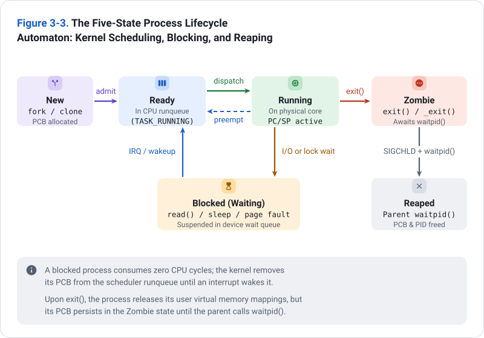
3.3.2 Zombie Reaping, Orphan Reparenting, and execve Mechanics
When a process resides in the Zombie state, it consumes no user-space RAM and executes zero instructions, but it retains its kernel PCB entry and occupies a slot in the global PID allocation bitmap. The process transitions from Zombie to Reaped (Terminated) only when its parent invokes waitpid(pid, &status, options), which copies the 8-bit exit code and termination signal mask out of the zombie’s PCB and finally frees the kernel task_struct and PID.
Two critical lifecycle boundary conditions arise in production systems:
- Zombie Accumulation Leaks: If a long-running parent process spawns child workers and neglects to invoke
waitpid(and does not explicitly set itsSIGCHLDdisposition toSIG_IGN), every terminated child remains permanently trapped in the Zombie state, eventually exhausting the kernel’s maximum process limit (pid_max/RLIMIT_NPROC) and preventing any new processes or threads from spawning across the host. - Orphan Reparenting: If a parent process terminates while one or more of its children are still active, those children become orphans. Because every process requires a parent to reap its eventual zombie PCB, the kernel walks the terminating parent’s child list and reparents all orphaned descendants to the root supervisor process, PID 1 (
launchdon macOS,systemdoriniton Linux), or to the nearest ancestor designated as a subreaper (PR_SET_CHILD_SUBREAPER). PID 1 continuously executes awaitpidloop in its main event cycle, automatically reaping reparented orphans upon their termination.
Finally, the execve(path, argv, envp) system call enables a process to replace its executing program without spawning a new PID. When invoked, the kernel tears down the process’s entire existing user-space virtual address space (text, data, BSS, heap, and stack), parses the target executable binary header (ELF on Linux; Mach-O on macOS), maps the new program segments into fresh page tables, initializes a clean user stack containing the argv argument vector and envp environment strings, resets caught signal handlers to SIG_DFL (because the old handler function pointers no longer exist in the new address space), and jumps to the new binary’s entry point (_start). However, the PID, parent PID, process group, working directory, and all open file descriptors not marked with the close-on-exec flag (FD_CLOEXEC / O_CLOEXEC) persist unaltered across execve, forming the foundation for shell I/O redirection and process supervision.
Splitting process creation into fork() (clone) and execve() (replace) allows a shell to rewire standard descriptors (dup2), drop privileges, and adjust signal masks inside the child after fork() and before execve(), without bloating execve() into a 40-argument system call.
Run Listing 3-3 (code/ch03/fork.cpp) with stdout redirected to a file (./fork > /tmp/out.txt && cat /tmp/out.txt) and then remove fflush(stdout) before fork(). Notice how before fork prints twice because full block buffering retains the line in user-space stdio memory, duplicating it across the fork() boundary.
Calling fork() inside a multi-threaded process duplicates only the calling thread into the child while preserving every user-space mutex in whatever locked state sibling threads held at that instant. Calling malloc() or printf() in the child before execve() can therefore deadlock permanently; invoke strictly async-signal-safe system calls between fork() and execve().
4. Threaded Execution and Concurrency Hazards
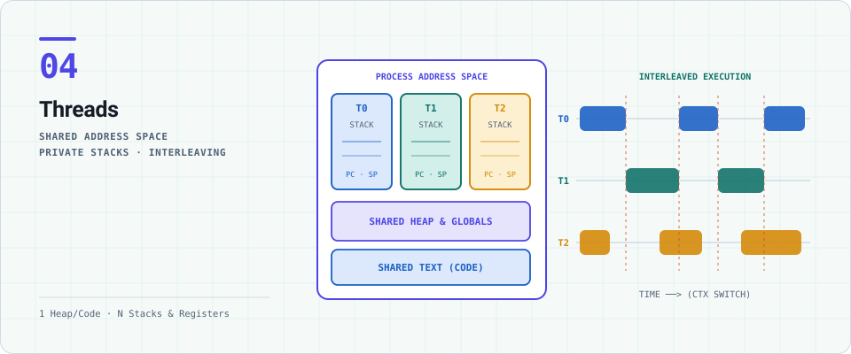
While a process provides a fundamental unit of isolation, it is often insufficient for expressing fine-grained parallelism. To achieve concurrency within a single execution context, a process employs threads, independent sequences of instructions that operate within the same administrative boundaries.
4.1 Shared Address Space and the Loss of Intra-Process Isolation
A thread is characterized by a dual nature: it possesses a private architectural state, including a unique program counter, register set, and stack, yet it operates within the shared address space of its parent process. This architecture allows threads to communicate via shared memory, allowing one thread to observe the updates of another via ordinary loads and stores, without the overhead of inter-process communication (IPC) or expensive system calls.
However, this efficiency comes at a significant cost to safety. While hardware and the kernel provide robust isolation between distinct processes via page tables, no such mechanism exists to isolate threads within a single process. Consequently, the shared memory model exposes the program to data races: conditions where the correctness of a program depends on the non-deterministic interleaving of instructions across multiple threads. When multiple threads concurrently access and modify the same memory location without proper synchronization, the integrity of the data is compromised by the atomicity gaps inherent in the CPU’s execution cycle.

4.2 Atomicity and the Resolution of Data Races
The most fundamental concurrency hazard arises from the decomposition of high-level operations into discrete machine instructions. An operation that appears indivisible in a high-level language, such as an integer increment, typically translates to a sequence of load, modify, and store instructions. In a multi-core environment, if two threads interleave these steps, one thread’s intermediate state may be overwritten by another, resulting in a “lost update.”
To mitigate this, modern processor architectures provide atomic instructions, such as lock xadd on x86 or ldaddal on arm64, which guarantee that a sequence of operations is perceived by the rest of the system as a single, indivisible unit. These instructions ensure that no other core can observe or intervene in the memory location during the operation.
It is critical to distinguish between atomicity and memory ordering. Atomicity refers to the indivisibility of a single operation, ensuring no partial states are observable. Ordering, conversely, governs the visibility and sequence of effects on different memory locations across threads. An operation can be atomic without being ordered, a distinction that is central to the design of high-performance concurrent algorithms and the use of relaxed memory models.

Listing 4-1. Eight threads increment one counter without synchronization (C++20). (code/ch04/race.cpp)
// ch04/race.cpp: eight threads increment one counter without synchronization.
// Each iteration is a read, an add, and a write, forced to memory with volatile.
#include <cstdint>
#include <iostream>
#include <thread>
#include <vector>
int main() {
constexpr int kThreads = 8;
constexpr uint64_t kIters = 20'000'000;
volatile uint64_t counter = 0; // shared, no protection
std::vector<std::thread> workers;
for (int i = 0; i < kThreads; ++i) {
workers.emplace_back([&counter] {
for (uint64_t j = 0; j < kIters; ++j) {
counter = counter + 1; // read-modify-write, not atomic
}
});
}
for (auto& t : workers) t.join();
uint64_t observed = counter;
std::cout << "expected " << (kThreads * kIters)
<< ", observed " << observed << "\n";
}
Output 4-1. One run. The observed value differs from run to run.
expected 160000000, observed 39242198
Listing 4-2. The same race in Rust, written with unsafe. (code/ch04/race.rs)
// ch04/race.rs: the unsynchronized counter in Rust. Reading or writing a
// `static mut` requires an unsafe block; the data race itself is real.
// read_volatile/write_volatile keep each iteration's read and write in memory.
use std::ptr::{addr_of, addr_of_mut, read_volatile, write_volatile};
use std::thread;
static mut COUNTER: u64 = 0;
fn main() -> Result<(), Box<dyn std::error::Error>> {
const THREADS: usize = 8;
const ITERS: u64 = 20_000_000;
let mut handles = Vec::new();
for _ in 0..THREADS {
handles.push(thread::spawn(|| {
let p = addr_of_mut!(COUNTER);
for _ in 0..ITERS {
// Microarchitectural Dynamics:
// An unsynchronized read-modify-write on shared mutable memory (`COUNTER`) violates
// the fundamental atomicity requirement. At the hardware level, this decompiles into
// three distinct micro-operations:
// 1. LOAD [p] -> register
// 2. ADD register, 1
// 3. STORE register -> [p]
// When 8 cores execute this concurrently, core store buffers and cache coherency
// invalidations (MESI/MOESI) interleave unpredictably. Between Step 1 and Step 3,
// another core overwrites [p], leading to lost updates. In Rust, this unsynchronized
// concurrent mutation of a static variable is undefined behavior by definition.
let v = unsafe { read_volatile(p) };
unsafe { write_volatile(p, v + 1) };
}
}));
}
for h in handles {
h.join().map_err(|_| "worker thread panicked")?;
}
// SAFETY: Synchronization Barrier Proof:
// Calling `join()` on all 8 thread handles establishes a strict "happens-before" edge
// between worker thread completion and the parent thread. Because all worker threads
// have fully terminated, no concurrent writers exist, allowing safe inspection of the
// final counter value.
let observed = unsafe { read_volatile(addr_of!(COUNTER)) };
println!("expected {}, observed {observed}", THREADS as u64 * ITERS);
Ok(())
}Output 4-2.
expected 160000000, observed 50144289
Listing 4-3. The counter as a std::atomic (C++20). (code/ch04/race_atomic.cpp)
// ch04/race_atomic.cpp: the same counter with an atomic increment.
#include <atomic>
#include <cstdint>
#include <iostream>
#include <thread>
#include <vector>
int main() {
constexpr int kThreads = 8;
constexpr uint64_t kIters = 5'000'000;
std::atomic<uint64_t> counter{0};
std::vector<std::thread> workers;
for (int i = 0; i < kThreads; ++i) {
workers.emplace_back([&counter] {
for (uint64_t j = 0; j < kIters; ++j) {
counter.fetch_add(1, std::memory_order_relaxed);
}
});
}
for (auto& t : workers) t.join();
std::cout << "expected " << (kThreads * kIters)
<< ", observed " << counter.load() << "\n";
}
Output 4-3. The observed value equals the expected value in every run.
expected 40000000, observed 40000000
Listing 4-4. The atomic counter in Rust. (code/ch04/race_atomic.rs)
// ch04/race_atomic.rs: the same counter with an atomic increment.
use std::sync::atomic::{AtomicU64, Ordering};
use std::thread;
static COUNTER: AtomicU64 = AtomicU64::new(0);
fn main() -> Result<(), Box<dyn std::error::Error>> {
const THREADS: usize = 8;
const ITERS: u64 = 5_000_000;
let mut handles = Vec::new();
for _ in 0..THREADS {
handles.push(thread::spawn(|| {
for _ in 0..ITERS {
// Memory Ordering Proof:
// `Ordering::Relaxed` guarantees hardware-level indivisibility of the Read-Modify-Write
// (`lock xadd` on x86-64; `ldadd` on ARM64) on the single `COUNTER` cache line,
// ensuring total modification order without paying the pipeline-stall cost of memory
// fences (`SeqCst` / `AcqRel`). Because no other memory locations depend on the
// intermediate value of `COUNTER`, relaxed ordering is both necessary and sufficient.
COUNTER.fetch_add(1, Ordering::Relaxed);
}
}));
}
for h in handles {
h.join().map_err(|_| "worker thread panicked")?;
}
// Synchronization Proof: `JoinHandle::join()` provides an acquire-release synchronization barrier
// with each thread's termination, guaranteeing all relaxed `fetch_add` stores are visible here.
println!(
"expected {}, observed {}",
THREADS as u64 * ITERS,
COUNTER.load(Ordering::Relaxed)
);
Ok(())
}Output 4-4.
expected 40000000, observed 40000000
4.3 Thread Lifecycle, State Transitions, and Language-Level Safety
Whereas a process lifecycle revolves around address-space creation (fork), binary replacement (execve), and process-table reaping (waitpid), a thread lifecycle operates entirely within the shared virtual address space of its host process. The operating system kernel schedules threads, not processes, as the fundamental unit of CPU execution, maintaining a Thread Control Block (TCB) for each thread to track its private architectural registers (PC, SP, FP, FLAGS, GPRs), thread-local storage (TLS) base register (FS or GS on x86-64; TPIDR_EL0 on ARM64), signal mask, and kernel scheduling state.
4.3.1 The Thread Lifecycle State Automaton
From creation to memory reclamation, a kernel-scheduled thread (allocated via clone(CLONE_VM | CLONE_FS | CLONE_FILES | CLONE_SIGHAND | CLONE_THREAD, ...) on Linux or bsdthread_create on macOS) transitions across five distinct operational states:
- Spawned (Initialized): The runtime library (
pthread_create,std::thread::spawn) allocates a contiguous user-mode virtual memory region for the thread’s execution stack (typically 2–8 MiB, guarded at its lower boundary by aPROT_NONEguard page to trap stack overflows) alongside its Thread-Local Storage (TLS) block. The kernel initializes a TCB pointing its savedPCto the thread entry trampoline and its savedSPto the top of the newly mapped stack, then admits the TCB into a core’s runqueue. - Runnable (Ready): The thread is eligible for execution and resides in a processor core’s scheduling runqueue, awaiting dispatch.
- Running: The thread is actively executing instructions on a physical CPU core. Because all sibling threads share the same virtual address space, context-switching between two threads of the same process requires saving and restoring only the TCB register file and TLS base pointer; the hardware page table root register (
CR3/TTBR0_EL1) remains unchanged, avoiding costly Translation Lookaside Buffer (TLB) flushes. - Sleeping / Parked (Blocked): The thread has suspended execution waiting for an intra-process synchronization primitive (such as a contended mutex via
futex(FUTEX_WAIT), a condition variablewait, or an I/O readiness event). The kernel removes the TCB from the runqueue and parks it on the synchronization object’s wait queue, where it consumes zero processor cycles until a peer thread invokesfutex(FUTEX_WAKE)or an interrupt handler signals completion. - Terminated and Reclaimed (
joinvs.detach): When the thread’s entry function returns (or invokespthread_exit), the thread ceases execution. How its stack and TCB are reclaimed depends on its detachment contract:- Joinable Threads: By default, a thread is joinable. Upon termination, its user-space stack virtual memory mapping and TCB metadata remain allocated so that another thread can invoke
pthread_join(orJoinHandle::join), which synchronizes on thread completion, extracts the thread’s return value (or panic payload), and unmaps the thread’s stack and TCB. Failing to join or detach a terminated joinable thread leaks its virtual stack mapping and TCB, which is the thread-level equivalent of a zombie process. - Detached Threads: If a thread is detached (
pthread_detach), it relinquishes any synchronization contract with a parent caller; the runtime and kernel automatically unmap its stack and deallocate its TCB immediately upon thread exit.
- Joinable Threads: By default, a thread is joinable. Upon termination, its user-space stack virtual memory mapping and TCB metadata remain allocated so that another thread can invoke
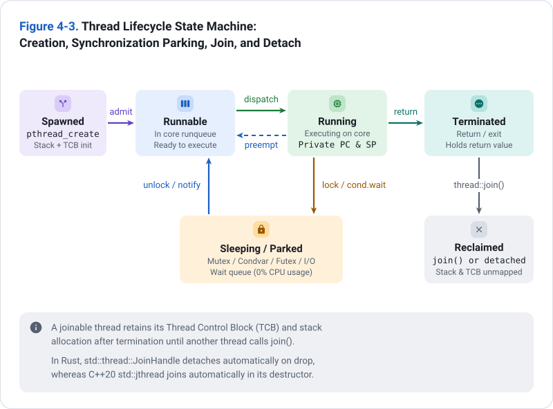
4.3.2 Language-Level Thread Safety: C++20 vs. Rust 2024
Different systems programming languages enforce starkly different invariants across the thread lifecycle boundary:
- C++20 (
std::threadandstd::jthread): In C++11, if astd::threadobject is destroyed while stilljoinable()(neither.join()nor.detach()was called), its destructor immediately invokesstd::terminate(), aborting the entire process to prevent silent stack-reference corruption. C++20 introducedstd::jthread, which adheres to strict Resource Acquisition Is Initialization (RAII) semantics by automatically requesting cooperative cancellation (std::stop_token) and invoking.join()inside its destructor. However, the C++ type system does not prevent threads from capturing raw pointers or references to a caller’s stack frame that may expire before a detached thread finishes, nor does it statically reject unsynchronized concurrent mutations of shared state. - Rust 2024 (
std::thread::spawn,Send, andSync): Rust’sstd::thread::spawnreturns aJoinHandle<T>. Unlike C++std::thread, dropping aJoinHandlein Rust safely detaches the background thread without aborting the process. To guarantee that a detached thread can never access dangling stack pointers from its creator,std::thread::spawnenforces a'staticlifetime bound on its closure (unlessstd::thread::scopeis used, which statically guarantees that all scoped threads are joined before the scope block exits). Furthermore, Rust’s compiler enforces compile-time data-race freedom via two auto-traits:Send: Certifies that ownership of a type may be safely transferred across thread boundaries (precluding thread-pinned types such as non-atomic reference countersRc<T>or raw pointers).Sync: Certifies that a type may be safely referenced concurrently by multiple threads via shared immutable references (T: Syncif and only if&T: Send). Shared mutation across threads is statically rejected unless mediated by types implementing thread-safe interior mutability, such as atomic primitives (AtomicU64) or synchronization guards (Arc<Mutex<T>>).
Listing 4-5. Four threads in one process (C++20). (code/ch04/threads.cpp)
// ch04/threads.cpp: four threads, one process.
#include <iostream>
#include <mutex>
#include <thread>
#include <vector>
int main() {
std::mutex m; // serializes access to std::cout
std::vector<std::thread> workers;
for (int i = 0; i < 4; ++i) {
workers.emplace_back([i, &m] {
std::lock_guard<std::mutex> lock(m);
std::cout << "thread " << i << " running\n";
});
}
for (auto& t : workers) t.join();
std::cout << "all threads joined\n";
}
Output 4-5. The order of the lines differs from run to run.
thread 0 running
thread 3 running
thread 1 running
thread 2 running
all threads joined
Listing 4-6. The same four threads in Rust. (code/ch04/threads.rs)
// ch04/threads.rs: the same four threads in Rust.
use std::thread;
fn main() -> Result<(), Box<dyn std::error::Error>> {
let mut handles = Vec::new();
for i in 0..4 {
handles.push(thread::spawn(move || {
println!("thread {i} running");
}));
}
for h in handles {
h.join().map_err(|_| "worker thread panicked")?;
}
println!("all threads joined");
Ok(())
}Output 4-6.
thread 0 running
thread 1 running
thread 2 running
thread 3 running
all threads joined
Threads share code, heap, and file descriptors through one mm_struct (avoiding CR3 reloads and TLB flushes on context switch), yet each thread owns a private execution stack and register file. That shared-memory speed is precisely what exposes multi-instruction Read-Modify-Write sequences to data races.
Compile Listing 4-1 (code/ch04/race.cpp) with -fsanitize=thread (clang++ -std=c++20 -O2 -fsanitize=thread code/ch04/race.cpp -o /tmp/race && /tmp/race) and observe ThreadSanitizer pinpointing the exact conflicting unsynchronized store instructions across threads. Compare its report against Listing 4-3 (race_atomic.cpp).
Assuming volatile in C or C++ makes a counter thread-safe. volatile prevents compiler register caching (needed for MMIO registers and sig_atomic_t), yet emits plain non-atomic load/add/store instructions that still lose updates across CPU cores; always use std::atomic<T> or Rust’s Atomic* types for cross-thread synchronization.
5. Scheduling Theory and Policy
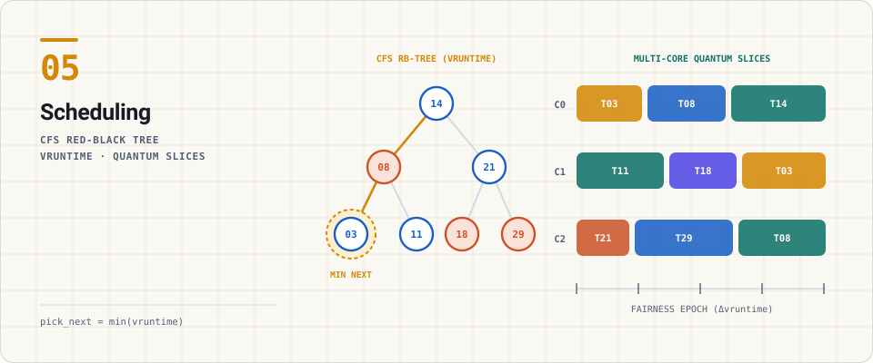
A bare-metal multiprocessor provides a fixed number of physical CPU cores, each capable of advancing a single hardware instruction stream on any clock cycle. When the number of runnable threads exceeds the available core count, the hardware itself has no mechanism to enforce proportional fairness, bounded interactive latency, or priority arbitration. Without supervisory intervention, the first thread dispatched onto a core would retain control of the fetch-decode-execute pipeline until it halted or terminated, starving all other workloads on the machine.
The kernel scheduler resolves this physical contention by time-multiplexing hardware cores across competing execution contexts. Consistent with the architectural principle established in Section 1.3, the scheduling subsystem strictly separates hardware-enforced mechanism from kernel policy:
- Mechanism (Hardware and Dispatch Layer): Periodic hardware timer interrupts (the per-core Local APIC Timer on x86-64 and the ARM Generic Timer on ARM64), architectural trapframe serialization, and context-switch routines that exchange stack pointers (
RSP/SP_EL1), thread-local base registers (FS_BASE/TPIDR_EL0), and page-table roots (CR3/TTBR0_EL1). - Policy (Arbitration Algorithm): The selection rule that evaluates the set of runnable scheduling entities to determine which thread occupies a physical core next, the duration of its execution quantum, and the target core selected to preserve hardware cache locality.
5.1 Scheduling Dynamics and Performance Metrics
The kernel invokes the scheduler at four deterministic state transitions within a thread’s lifecycle: when a running thread blocks voluntarily on an I/O descriptor or synchronization primitive (transitioning to a wait queue), when an external hardware interrupt or lock release awakens a blocked thread (transitioning to a ready queue), when a running thread exits, or when the hardware timer interrupt asserts preemption upon expiration of the thread’s allotted execution quantum.
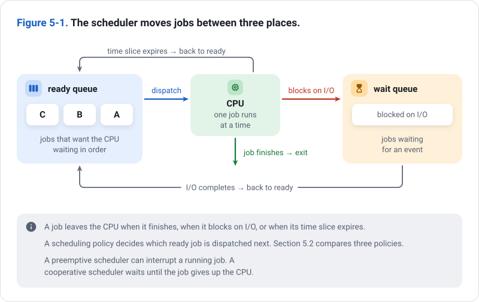
The operational behavior of a scheduling policy is quantified by three primary metrics:
- Turnaround Time (
T_completion - T_arrival): The total elapsed interval from the instant a job enters the ready queue until its final instruction retires. Throughput-oriented batch pipelines and compilation workloads optimize primarily for minimal mean turnaround time. - Wait Time: The cumulative duration a job resides in the ready queue, runnable and awaiting dispatch onto a physical core, excluding productive CPU execution and voluntary I/O wait intervals.
- Response Time (
T_first_run - T_arrival): The latency interval between a job’s arrival (or wakeup from a blocked state) and its initial dispatch onto an execution core. Interactive user interfaces, real-time audio pipelines, and low-latency network RPC services optimize primarily for bounded tail response time.
These metrics represent competing optimization objectives. Minimizing mean turnaround time requires executing short jobs to completion without interruption, which reduces context-switch frequency and preserves cache locality; minimizing response time requires frequent preemption so that newly awakened interactive threads receive processor time within strict latency bounds, even at the cost of increased context-switch overhead and reduced throughput for long-running compute jobs.
5.2 Fundamental Scheduling Policies
Classical scheduling theory establishes three foundational policies that formalize the trade-offs between throughput, fairness, and response latency:
- First-Come, First-Served (FCFS): Dispatches runnable jobs non-preemptively in strict arrival order via a FIFO queue. Although dispatch complexity is O(1), FCFS exhibits the convoy effect: a single compute-intensive task arriving ahead of multiple short interactive tasks monopolizes the processor until completion, inflating both mean turnaround time and response latency for all subsequent arrivals.
- Shortest Job First (SJF) and Shortest Remaining Time First (SRTF): Selects the runnable job possessing the minimum remaining CPU burst duration. For any static arrival set, SJF achieves the provably optimal minimum mean turnaround time. In general-purpose operating systems, however, future execution burst durations cannot be determined a priori without historical estimation, and a sustained stream of short tasks induces indefinite starvation for long-running compute workloads.
- Round-Robin (RR): Enforces preemptive time-slicing by assigning each runnable thread a fixed execution quantum (
q). Upon quantum expiration, the timer interrupt preempts the active thread and appends it to the tail of the ready queue. For N runnable threads, Round-Robin bounds maximum wait latency prior to dispatch at(N - 1) × q. Selection ofqrequires balancing preemption responsiveness against microarchitectural overhead: an excessively small quantum causes context-switch register saves and L1/L2 cache refills to consume a substantial fraction of total core cycles, whereas an excessively large quantum degrades interactive responsiveness toward FCFS behavior.

Listing 5-1. A simulator for FCFS, SJF, and RR (C++20). (code/ch05/sched_sim.cpp)
// ch05/sched_sim.cpp: FCFS, SJF, and round-robin, computed by hand inside a simulator.
#include <algorithm>
#include <deque>
#include <iomanip>
#include <iostream>
#include <string>
#include <vector>
struct Job {
std::string name;
int arrival;
int burst;
};
struct Stats {
int completion;
int turnaround;
int wait;
};
// First-Come, First-Served: run jobs in arrival order, each to completion.
std::vector<Stats> fcfs(const std::vector<Job>& jobs) {
std::vector<Stats> out;
int t = 0;
for (const Job& j : jobs) {
t = std::max(t, j.arrival) + j.burst;
out.push_back({t, t - j.arrival, t - j.arrival - j.burst});
}
return out;
}
// Shortest Job First: the order in which SJF runs jobs that arrive together.
// Running this order with fcfs() gives the SJF schedule.
std::vector<Job> shortest_first(std::vector<Job> jobs) {
std::stable_sort(jobs.begin(), jobs.end(),
[](const Job& a, const Job& b) { return a.burst < b.burst; });
return jobs;
}
// Round-Robin: rotate through a ready queue in fixed time slices.
std::vector<Stats> rr(const std::vector<Job>& jobs, int quantum) {
std::deque<int> ready;
std::vector<int> remaining(jobs.size());
std::vector<int> completion(jobs.size());
for (size_t i = 0; i < jobs.size(); ++i) {
remaining[i] = jobs[i].burst;
ready.push_back(static_cast<int>(i));
}
int t = 0;
while (!ready.empty()) {
int i = ready.front();
ready.pop_front();
int run = std::min(quantum, remaining[i]);
t += run;
remaining[i] -= run;
if (remaining[i] == 0) {
completion[i] = t;
} else {
ready.push_back(i);
}
}
std::vector<Stats> out;
for (size_t i = 0; i < jobs.size(); ++i) {
out.push_back({completion[i], completion[i] - jobs[i].arrival,
completion[i] - jobs[i].arrival - jobs[i].burst});
}
return out;
}
void report(const std::string& title, const std::vector<Job>& jobs,
const std::vector<Stats>& stats) {
double avg_turnaround = 0, avg_wait = 0;
std::cout << title << "\n";
std::cout << " job completion turnaround wait\n";
for (size_t i = 0; i < jobs.size(); ++i) {
std::cout << " " << jobs[i].name << " "
<< std::setw(6) << stats[i].completion << " "
<< std::setw(6) << stats[i].turnaround << " "
<< std::setw(6) << stats[i].wait << "\n";
avg_turnaround += stats[i].turnaround;
avg_wait += stats[i].wait;
}
avg_turnaround /= jobs.size();
avg_wait /= jobs.size();
std::cout << " average turnaround " << avg_turnaround
<< ", average wait " << avg_wait << "\n\n";
}
int main() {
const std::vector<Job> jobs = {
{"A", 0, 10},
{"B", 0, 5},
{"C", 0, 5},
};
report("FCFS (arrival order)", jobs, fcfs(jobs));
const std::vector<Job> by_burst = shortest_first(jobs);
report("SJF (shortest first)", by_burst, fcfs(by_burst));
report("RR (quantum 5)", jobs, rr(jobs, 5));
}
Output 5-1. The completion times agree with Figure 5-2.
FCFS (arrival order)
job completion turnaround wait
A 10 10 0
B 15 15 10
C 20 20 15
average turnaround 15, average wait 8.33333
SJF (shortest first)
job completion turnaround wait
B 5 5 0
C 10 10 5
A 20 20 10
average turnaround 11.6667, average wait 5
RR (quantum 5)
job completion turnaround wait
A 20 20 10
B 10 10 5
C 15 15 10
average turnaround 15, average wait 8.33333
Listing 5-2. The same simulator in Rust. (code/ch05/sched_sim.rs)
// ch05/sched_sim.rs: the same three policies, simulated in Rust.
use std::collections::VecDeque;
#[derive(Clone)]
struct Job {
name: &'static str,
arrival: i32,
burst: i32,
}
#[derive(Clone, Copy)]
struct Stats {
completion: i32,
turnaround: i32,
wait: i32,
}
// First-Come, First-Served: run jobs in arrival order, each to completion.
fn fcfs(jobs: &[Job]) -> Vec<Stats> {
let mut out = Vec::new();
let mut t = 0;
for j in jobs {
t = t.max(j.arrival) + j.burst;
out.push(Stats {
completion: t,
turnaround: t - j.arrival,
wait: t - j.arrival - j.burst,
});
}
out
}
// Shortest Job First: the order in which SJF runs jobs that arrive together.
// Running this order with fcfs() gives the SJF schedule.
fn shortest_first(jobs: &[Job]) -> Vec<Job> {
let mut sorted = jobs.to_vec();
sorted.sort_by_key(|j| j.burst);
sorted
}
// Round-Robin: rotate through a ready queue in fixed time slices.
fn rr(jobs: &[Job], quantum: i32) -> Vec<Stats> {
let mut ready: VecDeque<usize> = VecDeque::new();
let mut remaining: Vec<i32> = jobs.iter().map(|j| j.burst).collect();
let mut completion = vec![0; jobs.len()];
for i in 0..jobs.len() {
ready.push_back(i);
}
let mut t = 0;
while let Some(i) = ready.pop_front() {
let run = quantum.min(remaining[i]);
t += run;
remaining[i] -= run;
if remaining[i] == 0 {
completion[i] = t;
} else {
ready.push_back(i);
}
}
(0..jobs.len())
.map(|i| Stats {
completion: completion[i],
turnaround: completion[i] - jobs[i].arrival,
wait: completion[i] - jobs[i].arrival - jobs[i].burst,
})
.collect()
}
fn report(title: &str, jobs: &[Job], stats: &[Stats]) {
let avg_turnaround: f64 =
stats.iter().map(|s| s.turnaround as f64).sum::<f64>() / stats.len() as f64;
let avg_wait: f64 =
stats.iter().map(|s| s.wait as f64).sum::<f64>() / stats.len() as f64;
println!("{title}");
println!(" job completion turnaround wait");
for (i, j) in jobs.iter().enumerate() {
println!(
" {} {:6} {:6} {:6}",
j.name, stats[i].completion, stats[i].turnaround, stats[i].wait
);
}
println!(" average turnaround {avg_turnaround:.2}, average wait {avg_wait:.2}\n");
}
fn main() {
let jobs = [
Job { name: "A", arrival: 0, burst: 10 },
Job { name: "B", arrival: 0, burst: 5 },
Job { name: "C", arrival: 0, burst: 5 },
];
report("FCFS (arrival order)", &jobs, &fcfs(&jobs));
let by_burst = shortest_first(&jobs);
report("SJF (shortest first)", &by_burst, &fcfs(&by_burst));
report("RR (quantum 5)", &jobs, &rr(&jobs, 5));
}Output 5-2.
FCFS (arrival order)
job completion turnaround wait
A 10 10 0
B 15 15 10
C 20 20 15
average turnaround 15.00, average wait 8.33
SJF (shortest first)
job completion turnaround wait
B 5 5 0
C 10 10 5
A 20 20 10
average turnaround 11.67, average wait 5.00
RR (quantum 5)
job completion turnaround wait
A 20 20 10
B 10 10 5
C 15 15 10
average turnaround 15.00, average wait 8.33
5.3 Proportional-Share Scheduling: Linux CFS and EEVDF
Historical Unix schedulers employed Multi-Level Feedback Queues (MLFQ), partitioning runnable threads across discrete priority levels and demoting threads that exhausted full execution quanta while retaining I/O-bound interactive threads at elevated priorities. While effective in practice, heuristic MLFQ policies depend on empirically tuned priority-decay constants and permit adversarial workloads to preserve artificially high priority by relinquishing the processor immediately prior to quantum expiration.
To establish a rigorous mathematical model for processor allocation, Linux replaced discrete feedback queues with proportional-share scheduling, implemented initially by the Completely Fair Scheduler (CFS) and superseded in Linux 6.6 by EEVDF (Earliest Eligible Virtual Deadline First).
5.3.1 Virtual Runtime (vruntime) Accounting
CFS models an idealized fluid-flow processor capable of executing N equal-priority runnable tasks concurrently, allocating exactly 1 / N of the physical execution rate to each task at every instant. Because a physical core executes only one thread at any clock cycle, the kernel tracks each task’s cumulative weighted CPU consumption in a monotonically increasing 64-bit nanosecond counter termed virtual runtime (vruntime).
When task i executes for an actual physical duration Δexec_i, the scheduler increments its virtual runtime in inverse proportion to its priority weight weight_i:
Δvruntime_i = Δexec_i × (weight_0 / weight_i)
In this formulation, weight_0 = 1,024 represents the baseline weight corresponding to POSIX priority nice = 0. Linux maps the forty integer nice values (-20 highest priority to +19 lowest priority) onto a geometric weight table in which each unit decrement in nice increases CPU share by approximately 10% (a weight ratio of approximately 1.25 per step).
To illustrate the arithmetic directly, consider three runnable threads, Task A (nice = -10, weight = 9,548), Task B (nice = 0, weight = 1,024), and Task C (nice = +10, weight = 110), each executing for an identical physical duration of 4.00 ms:
| Task | Nice Level | CFS Weight | Physical Execution (Δexec) | Virtual Runtime Increment (Δvruntime) | Scheduling Effect |
|---|---|---|---|---|---|
| Task A | -10 (High) | 9,548 | 4.00 ms | 4.00 × (1024 / 9548) = +0.43 ms | Advances ~9.3× slower than wall time; remains nearest rb_leftmost |
| Task B | 0 (Default) | 1,024 | 4.00 ms | 4.00 × (1024 / 1024) = +4.00 ms | Advances at a 1:1 ratio with physical wall-clock execution |
| Task C | +10 (Batch) | 110 | 4.00 ms | 4.00 × (1024 / 110) = +37.24 ms | Advances ~9.3× faster than wall time; migrates to the right subtree |
This weighted accounting enforces starvation freedom without ad hoc priority-boost timers. Every physical cycle consumed by Task A strictly increases its vruntime, guaranteeing eventual dispatch of Task B and Task C, while Task A’s attenuated virtual clock rate allocates each runnable thread a long-term CPU share proportional to weight_i / Σ weight_j.
5.3.2 Red-Black Tree Runqueue and the Transition to EEVDF
To identify the runnable entity with the minimum vruntime efficiently under high thread counts, each per-CPU runqueue organizes its runnable scheduling entities in a self-balancing Red-Black Tree keyed strictly by vruntime:
- O(1) Selection (
rb_leftmost): The runqueue caches a direct pointer (rb_leftmost) referencing the leftmost node in the tree, corresponding to the runnable thread with the minimumvruntime. Selecting the next thread for dispatch executes in constant O(1) time. - O(log N) Insertion and Removal: Enqueueing a newly awakened thread or re-inserting a preempted thread requires logarithmic O(log N) time relative to the core’s local runnable count N. To prevent a thread that slept for an extended duration from monopolizing the processor upon wakeup with an outdated
vruntime, the kernel clamps its initialvruntimeagainst the runqueue’s monotonic floor (min_vruntime). - Minimum Execution Granularity (
min_granularity): Preempting the active thread upon every microsecond shift invruntimewould induce excessive context-switch overhead and L1/L2 cache thrashing. CFS enforces a minimum execution interval (sysctl_sched_min_granularity, typically 0.75–3.0 ms) prior to involuntary preemption. - EEVDF (Earliest Eligible Virtual Deadline First): Under pure CFS, equal-weight tasks received identical dispatch priority irrespective of whether a task required a 0.5 ms interactive wakeup or a 20 ms batch slice. Linux 6.6 adopted EEVDF, augmenting each scheduling entity with two formal parameters:
- Eligibility (
lag >= 0): A task is eligible for dispatch only when its accumulated virtual runtime does not exceed the weighted mean virtual runtime of the runqueue. - Virtual Deadline (
d_i = vruntime_i + slice_i / weight_i): Among all eligible tasks, EEVDF selects the entity with the earliest virtual deadline. Latency-sensitive threads configured with short request slices (slice_i) obtain earlier virtual deadlines and preempt long-slice compute tasks deterministically while preserving long-term proportional CPU share.
- Eligibility (
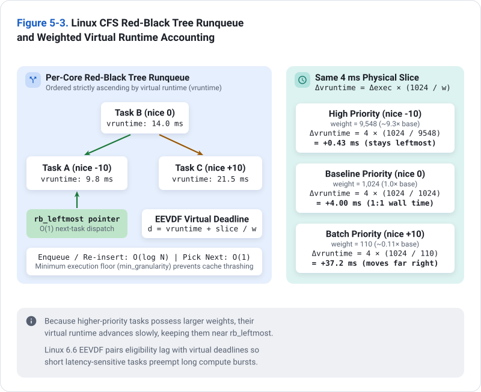
5.4 Priority Inversion and Priority Inheritance Protocols
In priority-preemptive scheduling environments (including real-time Linux SCHED_FIFO/SCHED_RR, Darwin/XNU audio and compositor subsystems, and embedded avionics kernels), strict priority preemption combined with mutual exclusion locks introduces a critical liveness pathology termed unbounded priority inversion.
Consider three threads sharing a single execution core: a high-priority real-time thread THigh, a medium-priority compute-bound thread TMed, and a low-priority thread TLow that shares mutex M with THigh. The failure evolves across four sequential steps:
- T = 0 ms: TLow executes, acquires mutex M, and enters its critical section.
- T = 2 ms: THigh becomes runnable upon an interrupt. Because prio(THigh) > prio(TLow), the scheduler preempts TLow and dispatches THigh. THigh invokes
lock(M), observes that M is held by TLow, and blocks on M’s wait queue. - T = 3 ms: TMed becomes runnable. Although TMed does not reference mutex M, THigh is blocked and prio(TMed) > prio(TLow); consequently, the scheduler dispatches TMed ahead of TLow.
- Unbounded Blocking: TMed, along with any subsequently arriving medium-priority threads, preempts TLow indefinitely. Because TLow receives zero CPU cycles to complete its critical section and invoke
unlock(M), THigh experiences unbounded blocking latency induced by lower-priority work. This exact interaction produced repeated watchdog resets on the 1997 Mars Pathfinder spacecraft when medium-priority communications tasks preempted a low-priority meteorological task holding a shared bus mutex required by the high-priority bus management task.

Production kernels mitigate unbounded priority inversion through two synchronization protocols enforced within mutex acquisition:
- Priority Inheritance Protocol (
PTHREAD_PRIO_INHERIT, LinuxFUTEX_LOCK_PI, Darwinos_unfair_lock): When THigh blocks on mutex M owned by TLow, the kernel elevates TLow’s effective scheduling priority to max(eff_prio(TLow), prio(THigh)). Executing at THigh’s priority, TLow immediately preempts TMed, completes its critical section, and releases M. Uponunlock(M), the kernel restores TLow’s base priority and dispatches THigh. Priority inheritance propagates transitively across nested lock-ownership chains. - Priority Ceiling Protocol (
PTHREAD_PRIO_PROTECT): Each mutex M is assigned a static ceiling priority equal to the maximum priority of any thread permitted to acquire M. Immediately upon locking M, the acquiring thread is elevated to M’s ceiling priority. This protocol prevents both unbounded priority inversion and circular-wait deadlocks, at the cost of requiring complete static knowledge of lock acquisition sets prior to deployment.
Unbounded priority inversion arises when a medium-priority thread indirectly blocks a high-priority waiter by preempting the low-priority owner of a shared mutex. Priority inheritance restores bounded blocking latency by temporarily elevating the lock owner’s effective priority to match the highest-priority blocked waiter until unlock().
5.5 Multi-Core Work Stealing, Cache Affinity, and NUMA Domains
In symmetric multiprocessing (SMP) and Non-Uniform Memory Access (NUMA) architectures, maintaining a single global ready queue creates a severe serialization bottleneck: every context switch, wakeup, and timer tick must acquire a single global runqueue spinlock, saturating inter-core cache coherence interconnects.
Modern kernels resolve this contention by partitioning scheduling state into per-CPU runqueues managed by a topology-aware load balancer:
- Cache Affinity: While a thread executes on Core 2, its active working set populates Core 2’s private L1/L2 caches and TLBs. Dispatching that thread back onto Core 2 following a brief blocking interval eliminates cold cache refills and cross-core Modified-Exclusive-Shared-Invalid (
MESI) coherence invalidations. Schedulers enforce soft affinity automatically by biasing wakeups toward the thread’s previous core, while providing explicit pinning interfaces (sched_setaffinity) for hard affinity in deterministic latency-critical deployments. - Work-Stealing Load Balancing: Partitioned runqueues permit transient imbalance in which one core holds multiple queued threads while a sibling core becomes idle. Upon emptying its local runqueue, or at periodic load-balancing ticks, an idle core invokes work stealing, migrating a cache-cold runnable thread from an overloaded sibling runqueue.
- Hierarchical Scheduling Domains and NUMA Awareness: The kernel encodes physical hardware topology as a hierarchy of scheduling domains:
- Simultaneous Multithreading (
SMT) / Hyperthread Siblings: Hardware threads sharing a physical core and L1/L2 caches (minimal migration cost). - Core / Last-Level Cache (LLC) Domain: Distinct cores sharing a unified L3 cache (moderate migration cost limited to L1/L2 warm-up).
- NUMA Socket Domain: Independent processor sockets connected across inter-socket links (Intel Ultra Path Interconnect (
UPI), AMD Infinity Fabric) with local Dynamic Random-Access Memory (DRAM) controllers. Migrating a thread across NUMA boundaries decouples it from its locally allocated physicalDRAMpages, increasing remote memory latency by 30–100%. Load balancers therefore equalize queue depth within an LLC domain first and migrate threads across NUMA nodes only when load imbalance exceeds the remote-memory access penalty.
- Simultaneous Multithreading (
Modify Listing 5-1 (code/ch05/sched_sim.cpp) to add one long-running 500 ms CPU-bound job at t = 0 ahead of five 5 ms interactive jobs. Compare the average response time under First-Come, First-Served (FCFS) versus Round-Robin (RR) with a 10 ms quantum to observe the convoy effect directly.
Treating nice values or thread priorities as hard real-time guarantees. Under proportional-share schedulers (CFS / EEVDF), a low-priority background thread still receives non-zero CPU share, and priority inversion can stall a high-priority thread indefinitely unless priority inheritance is enabled on the contended mutex.
6. Synchronization and Memory Ordering
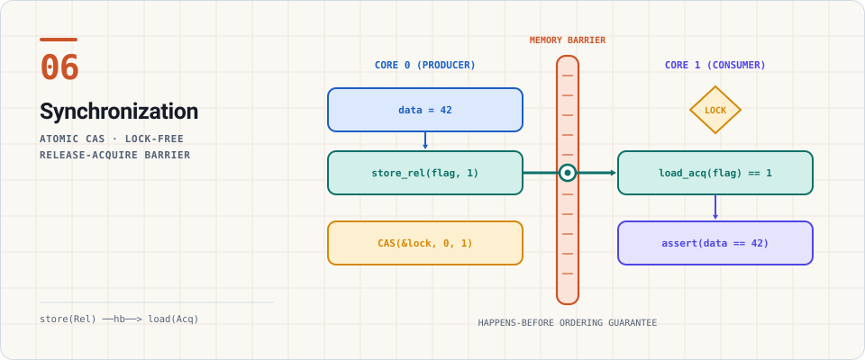
As seen in Chapters 2 and 4, a non-atomic Read-Modify-Write expression (counter++) decomposes into three discrete machine instructions (load, increment, and store), creating an atomicity gap through which concurrent threads lose updates. Single-word atomic instructions eliminate lost updates on isolated scalar variables. Systems software, however, routinely mutates composite data structures (linked lists, circular buffers, page-table hierarchies, file descriptor tables, and allocator free lists) whose structural invariants span multiple machine words and cache lines.
Preserving data integrity across concurrent threads requires enforcing two orthogonal properties:
- Mutual Exclusion and Predicate Coordination: Serializing multi-instruction critical sections and suspending threads passively when a required logical precondition is unsatisfied.
- Memory Ordering and Cross-Core Visibility: Constraining compiler instruction reordering and per-core hardware store buffers so that writes committed prior to a synchronization point become deterministically visible to peer cores observing that synchronization point.
6.1 Mutual Exclusion and Critical Sections
A mutex (mutual exclusion lock) enforces an exclusive ownership invariant: at most one thread may execute within the protected critical section at any instant. When a thread invokes lock() on a mutex currently owned by another thread, the synchronization runtime parks the contending thread in a kernel wait queue, allowing the physical core to execute other runnable threads rather than spinning idly.
The selection between atomic instructions and mutexes is governed by critical-section granularity and static safety guarantees:
- Atomic Instructions operate directly in user mode (
Ring 3/EL0, ~5–20 ns uncontended) and are appropriate for isolated counters, state flags, bitmasks, and lock-free single-producer/single-consumer ring indices. - Mutexes guard multi-object invariants of arbitrary complexity. In C++,
std::mutexis declared independently of the variables it protects, relying on developer discipline to ensure every access acquires the lock. In Rust,Mutex<T>encapsulates the protected payloadTinside the lock type itself: the type system enforces at compile time thatTis accessible solely through an activeMutexGuard<'_, T>, whoseDropimplementation releases the lock deterministically upon scope exit or stack unwinding.

Listing 6-1. The shared counter, protected by a mutex (C++20). (code/ch06/mutex_counter.cpp)
// ch06/mutex_counter.cpp: the counter from chapter 4, now guarded by a mutex.
#include <cstdint>
#include <iostream>
#include <mutex>
#include <thread>
#include <vector>
int main() {
constexpr int kThreads = 8;
constexpr uint64_t kIters = 5'000'000;
uint64_t counter = 0;
std::mutex m;
std::vector<std::thread> workers;
for (int i = 0; i < kThreads; ++i) {
workers.emplace_back([&] {
for (uint64_t j = 0; j < kIters; ++j) {
std::lock_guard<std::mutex> lock(m);
++counter;
}
});
}
for (auto& t : workers) t.join();
std::cout << "expected " << (kThreads * kIters)
<< ", observed " << counter << "\n";
}
Output 6-1. The observed value equals the expected value in every run.
expected 40000000, observed 40000000
Listing 6-2. The same counter in Rust. (code/ch06/mutex_counter.rs)
// ch06/mutex_counter.rs: the same guarded counter in Rust.
use std::sync::{Arc, Mutex};
use std::thread;
fn main() -> Result<(), Box<dyn std::error::Error>> {
const THREADS: usize = 8;
const ITERS: u64 = 5_000_000;
let counter = Arc::new(Mutex::new(0u64));
let mut handles = Vec::new();
for _ in 0..THREADS {
let c = Arc::clone(&counter);
handles.push(thread::spawn(move || {
for _ in 0..ITERS {
if let Ok(mut guard) = c.lock() {
*guard += 1;
}
}
}));
}
for h in handles {
h.join().map_err(|_| "worker thread panicked")?;
}
let guard = counter.lock().map_err(|_| "mutex poisoned")?;
println!(
"expected {}, observed {}",
THREADS as u64 * ITERS,
*guard
);
Ok(())
}Output 6-2.
expected 40000000, observed 40000000
6.2 Condition Variables and Predicate-Based Synchronization
Mutexes enforce mutual exclusion, yet they provide no mechanism for suspending execution until a shared logical state (a predicate) becomes true (for example, awaiting non-empty occupancy or available buffer capacity in a bounded queue). Repeatedly acquiring a mutex, testing the predicate, and releasing the mutex in a polling loop wastes CPU cycles and saturates the cache coherence bus.
A condition variable resolves predicate waiting by pairing an internal wait queue with an associated mutex. Invoking wait(lock) performs two state transitions as a single atomic operation:
- Releases the held mutex
M. - Enqueues the calling thread onto the condition variable’s sleep queue.
Atomicity across these two steps eliminates the lost-wakeup hazard. If releasing M and entering the sleep queue were separate, interruptible steps, a consumer could observe an empty queue and unlock M; prior to the consumer entering the wait queue, a producer could acquire M, append an item, invoke notify_one() on an empty wait queue, and unlock M. The consumer would subsequently enter the wait queue and remain blocked indefinitely despite an unread item residing in the buffer. Atomic unlock-and-sleep ensures that no peer thread can acquire M until the caller is already enrolled on the wait queue.
Every condition-variable wait must be enclosed within a while (!predicate) loop (or Rust’s Condvar::wait_while), never a single if (!predicate) branch. Two distinct mechanisms invalidate a non-looping check:
- Spurious Wakeups: Portable Operating System Interface (
POSIX) (pthread_cond_wait) and operating system kernels permit a waiting thread to return fromwaitwithout a corresponding notification event. - Post-Wakeup State Interception: Returning from a condition wait moves the thread from the condition variable queue to the mutex acquisition queue rather than granting immediate ownership. An intervening thread may acquire the mutex first and invalidate the predicate before the awakened thread obtains lock ownership.
Listing 6-3. A bounded buffer with two producers and two consumers (C++20). (code/ch06/prodcons.cpp)
// ch06/prodcons.cpp: a bounded buffer shared by two producers and two consumers.
#include <condition_variable>
#include <cstdint>
#include <iostream>
#include <mutex>
#include <thread>
#include <vector>
int main() {
constexpr int kCapacity = 8;
constexpr int kProducers = 2;
constexpr int kConsumers = 2;
constexpr uint64_t kItemsPerProducer = 100'000;
int buf[kCapacity];
int head = 0, tail = 0, count = 0;
std::mutex m;
std::condition_variable not_full, not_empty;
std::vector<std::thread> producers, consumers;
std::vector<uint64_t> produced_sum(kProducers, 0);
std::vector<uint64_t> consumed_sum(kConsumers, 0);
for (int p = 0; p < kProducers; ++p) {
producers.emplace_back([&, p] {
uint64_t first = p * kItemsPerProducer + 1;
for (uint64_t v = first; v < first + kItemsPerProducer; ++v) {
std::unique_lock<std::mutex> lock(m);
not_full.wait(lock, [&] { return count < kCapacity; });
buf[tail] = static_cast<int>(v); // fits: v <= 200000
tail = (tail + 1) % kCapacity;
++count;
produced_sum[p] += v;
not_empty.notify_one();
}
});
}
for (int c = 0; c < kConsumers; ++c) {
consumers.emplace_back([&, c] {
uint64_t local = 0;
constexpr uint64_t kItemsPerConsumer = kProducers * kItemsPerProducer / kConsumers;
for (uint64_t done = 0; done < kItemsPerConsumer; ++done) {
std::unique_lock<std::mutex> lock(m);
not_empty.wait(lock, [&] { return count > 0; });
int v = buf[head];
head = (head + 1) % kCapacity;
--count;
local += v;
not_full.notify_one();
}
consumed_sum[c] = local;
});
}
for (auto& t : producers) t.join();
for (auto& t : consumers) t.join();
uint64_t expected =
(kProducers * kItemsPerProducer) * (kProducers * kItemsPerProducer + 1) / 2;
uint64_t produced = 0, consumed = 0;
for (uint64_t s : produced_sum) produced += s;
for (uint64_t s : consumed_sum) consumed += s;
std::cout << "produced sum " << produced << "\n"
<< "consumed sum " << consumed << "\n"
<< "expected " << expected << "\n"
<< "match " << (produced == consumed && consumed == expected
? "yes"
: "NO")
<< "\n";
}
Output 6-3. The three sums are equal.
produced sum 20000100000
consumed sum 20000100000
expected 20000100000
match yes
Listing 6-4. The same buffer in Rust, with Mutex and Condvar. (code/ch06/prodcons.rs)
// ch06/prodcons.rs: the same bounded buffer with Mutex + Condvar.
use std::collections::VecDeque;
use std::sync::{Arc, Condvar, Mutex};
use std::thread;
const CAPACITY: usize = 8;
const PRODUCERS: usize = 2;
const CONSUMERS: usize = 2;
const ITEMS_PER_PRODUCER: u64 = 100_000;
type BufferResult<T> = Result<T, &'static str>;
const POISONED: &str = "a thread panicked while it held the buffer mutex";
const PANICKED: &str = "a worker thread panicked";
struct Buffer {
q: VecDeque<u64>,
capacity: usize,
}
impl Buffer {
fn is_full(&self) -> bool {
self.q.len() == self.capacity
}
fn is_empty(&self) -> bool {
self.q.is_empty()
}
}
fn main() -> BufferResult<()> {
let buffer = Buffer {
q: VecDeque::new(),
capacity: CAPACITY,
};
let buf = Arc::new((Mutex::new(buffer), Condvar::new()));
let mut producers = Vec::new();
let mut consumers = Vec::new();
for p in 0..PRODUCERS {
let b = Arc::clone(&buf);
producers.push(thread::spawn(move || -> BufferResult<u64> {
let (lock, cv) = &*b;
let first = p as u64 * ITEMS_PER_PRODUCER + 1;
let mut sum = 0u64;
for v in first..first + ITEMS_PER_PRODUCER {
let g = lock
.lock()
.map_err(|_| POISONED)?;
let mut g = cv
.wait_while(g, |buffer| buffer.is_full())
.map_err(|_| POISONED)?;
g.q.push_back(v);
sum += v;
cv.notify_all();
}
Ok(sum)
}));
}
for _ in 0..CONSUMERS {
let b = Arc::clone(&buf);
consumers.push(thread::spawn(move || -> BufferResult<u64> {
let (lock, cv) = &*b;
let mut sum = 0u64;
let total = PRODUCERS as u64 * ITEMS_PER_PRODUCER;
for _ in 0..total / CONSUMERS as u64 {
let g = lock
.lock()
.map_err(|_| POISONED)?;
let mut g = cv
.wait_while(g, |buffer| buffer.is_empty())
.map_err(|_| POISONED)?;
sum += g
.q
.pop_front()
.ok_or("the buffer was empty after the wait")?;
cv.notify_all();
}
Ok(sum)
}));
}
let mut produced = 0;
let mut consumed = 0;
for handle in producers {
let sum = handle
.join()
.map_err(|_| PANICKED)?;
produced += sum?;
}
for handle in consumers {
let sum = handle
.join()
.map_err(|_| PANICKED)?;
consumed += sum?;
}
let total = PRODUCERS as u64 * ITEMS_PER_PRODUCER;
let expected = total * (total + 1) / 2;
println!("produced sum {produced}");
println!("consumed sum {consumed}");
println!("expected {expected}");
let all_equal = produced == consumed && consumed == expected;
let verdict = if all_equal { "yes" } else { "NO" };
println!("match {verdict}");
Ok(())
}Output 6-4.
produced sum 20000100000
consumed sum 20000100000
expected 20000100000
match yes
6.3 Deadlock: Causes and Prevention
A deadlock occurs when a set of threads enters permanent suspension because every member of the set holds at least one exclusive resource while waiting indefinitely for a resource owned by another member of the same set. Coffman’s theorem establishes that deadlock occurs if and only if four necessary conditions hold simultaneously:
| Coffman Condition | Formal Definition | Engineering Prevention Mechanism |
|---|---|---|
| 1. Mutual Exclusion | At least one resource is held in non-shareable exclusive mode | Substitute lock-free atomics, immutable snapshots, or Seqlocks where applicable |
| 2. Hold and Wait | A thread retains ownership of one lock while blocking to acquire another | Acquire lock sets atomically (std::scoped_lock(a, b)) or release held locks upon try_lock failure |
| 3. No Preemption | The kernel cannot forcibly revoke a held mutex from its owning thread | Implement cooperative backoff protocols using non-blocking try_lock() |
| 4. Circular Wait | A directed cycle exists in the resource wait-for graph (T1 → B, T2 → A) | Enforce a strict global acquisition hierarchy (for example, ascending lock address order &a < &b) |
Negating any single Coffman condition provably precludes deadlock. Production kernels (such as Linux’s lockdep lock-order validator) rely primarily on enforcing a strict global lock acquisition hierarchy to eliminate circular wait statically and dynamically.

Listing 6-5. A deliberate deadlock caused by inverted lock acquisition order (C++20). (code/ch06/deadlock.cpp)
// ch06/deadlock.cpp: two workers, two mutexes, opposite acquisition order.
// This program is expected to hang; the harness kills it and records the outcome.
#include <chrono>
#include <iostream>
#include <mutex>
#include <thread>
int main() {
std::mutex a, b;
std::thread t1([&] {
std::lock_guard<std::mutex> la(a);
std::cout << "worker 1 holds A\n" << std::flush;
std::this_thread::sleep_for(std::chrono::milliseconds(50));
std::lock_guard<std::mutex> lb(b); // waits for B, held by worker 2
std::cout << "worker 1 got A and B\n" << std::flush;
});
std::thread t2([&] {
std::lock_guard<std::mutex> lb(b);
std::cout << "worker 2 holds B\n" << std::flush;
std::this_thread::sleep_for(std::chrono::milliseconds(50));
std::lock_guard<std::mutex> la(a); // waits for A, held by worker 1
std::cout << "worker 2 got B and A\n" << std::flush;
});
t1.join();
t2.join();
std::cout << "finished without deadlock\n";
}
Output 6-5. Each worker acquires its first mutex and blocks indefinitely on the second.
worker 1 holds A
worker 2 holds B
harness: process still alive after 1 s - deadlocked (killed)
Listing 6-6. The same deliberate deadlock in Rust. (code/ch06/deadlock.rs)
// ch06/deadlock.rs: two workers, two mutexes, opposite acquisition order.
// This program is expected to hang; the harness terminates it and records the outcome.
use std::io::{self, Write};
use std::sync::{Arc, Mutex};
use std::thread;
use std::time::Duration;
fn main() {
let a = Arc::new(Mutex::new(()));
let b = Arc::new(Mutex::new(()));
let t1 = {
let a = Arc::clone(&a);
let b = Arc::clone(&b);
thread::spawn(move || {
let _la = a.lock().expect("mutex A poisoned");
println!("worker 1 holds A");
let _ = io::stdout().flush();
thread::sleep(Duration::from_millis(50));
let _lb = b.lock().expect("mutex B poisoned"); // waits for B, held by worker 2
println!("worker 1 got A and B");
let _ = io::stdout().flush();
})
};
let t2 = {
let a = Arc::clone(&a);
let b = Arc::clone(&b);
thread::spawn(move || {
let _lb = b.lock().expect("mutex B poisoned");
println!("worker 2 holds B");
let _ = io::stdout().flush();
thread::sleep(Duration::from_millis(50));
let _la = a.lock().expect("mutex A poisoned"); // waits for A, held by worker 1
println!("worker 2 got B and A");
let _ = io::stdout().flush();
})
};
let _ = t1.join();
let _ = t2.join();
println!("finished without deadlock");
}Output 6-6.
worker 1 holds A
worker 2 holds B
harness: process still alive after 1 s - deadlocked (killed)
Where a global lock hierarchy cannot be established statically, breaking Hold and Wait via non-blocking try_lock() eliminates the deadlock cycle. When Worker 2 holds Mutex B and a.try_lock() fails, Worker 2 immediately releases Mutex B, pauses briefly to mitigate livelock, and retries acquisition.
Listing 6-7. Deadlock elimination using try_lock backoff (C++20). (code/ch06/trylock.cpp)
// ch06/trylock.cpp: the same two workers, but worker 2 backs off instead of blocking.
#include <chrono>
#include <iostream>
#include <mutex>
#include <thread>
int main() {
std::mutex a, b;
std::thread t1([&] {
std::lock_guard<std::mutex> la(a);
std::cout << "worker 1 holds A\n" << std::flush;
std::this_thread::sleep_for(std::chrono::milliseconds(50));
std::lock_guard<std::mutex> lb(b);
std::cout << "worker 1 got A and B\n" << std::flush;
});
std::thread t2([&] {
for (;;) {
{
std::lock_guard<std::mutex> lb(b);
std::cout << "worker 2 holds B, tries A\n" << std::flush;
if (a.try_lock()) {
std::cout << "worker 2 got B and A\n" << std::flush;
a.unlock();
break;
}
}
std::this_thread::sleep_for(std::chrono::milliseconds(5));
}
});
t1.join();
t2.join();
std::cout << "finished without deadlock\n";
}
Output 6-7. Worker 2 backs off until Worker 1 completes, and both threads finish.
worker 2 holds B, tries A
worker 1 holds A
worker 2 holds B, tries A
worker 2 holds B, tries A
worker 2 holds B, tries A
worker 2 holds B, tries A
worker 2 holds B, tries A
worker 2 holds B, tries A
worker 2 holds B, tries A
worker 2 holds B, tries A
worker 2 holds B, tries A
worker 1 got A and B
worker 2 holds B, tries A
worker 2 got B and A
finished without deadlock
Listing 6-8. The same try_lock backoff protocol in Rust. (code/ch06/trylock.rs)
// ch06/trylock.rs: the same two workers, but worker 2 backs off instead of blocking.
use std::io::{self, Write};
use std::sync::{Arc, Mutex};
use std::thread;
use std::time::Duration;
fn main() {
let a = Arc::new(Mutex::new(()));
let b = Arc::new(Mutex::new(()));
let t1 = {
let a = Arc::clone(&a);
let b = Arc::clone(&b);
thread::spawn(move || {
let _la = a.lock().expect("mutex A poisoned");
println!("worker 1 holds A");
let _ = io::stdout().flush();
thread::sleep(Duration::from_millis(50));
let _lb = b.lock().expect("mutex B poisoned");
println!("worker 1 got A and B");
let _ = io::stdout().flush();
})
};
let t2 = {
let a = Arc::clone(&a);
let b = Arc::clone(&b);
thread::spawn(move || {
loop {
{
let _lb = b.lock().expect("mutex B poisoned");
println!("worker 2 holds B, tries A");
let _ = io::stdout().flush();
if let Ok(_la) = a.try_lock() {
println!("worker 2 got B and A");
let _ = io::stdout().flush();
break;
}
}
thread::sleep(Duration::from_millis(5));
}
})
};
t1.join().expect("worker 1 panicked");
t2.join().expect("worker 2 panicked");
println!("finished without deadlock");
}Output 6-8.
worker 1 holds A
worker 2 holds B, tries A
worker 2 holds B, tries A
worker 2 holds B, tries A
worker 2 holds B, tries A
worker 2 holds B, tries A
worker 2 holds B, tries A
worker 2 holds B, tries A
worker 2 holds B, tries A
worker 2 holds B, tries A
worker 2 holds B, tries A
worker 1 got A and B
worker 2 holds B, tries A
worker 2 got B and A
finished without deadlock
6.4 Atomic Compare-And-Swap (compare_exchange vs. compare_exchange_weak)
Lock-free data structures, spinlocks, atomic reference counters (std::shared_ptr and Rust’s Arc), and uncontended mutex fast paths are built upon a single universal read-modify-write primitive: Compare-And-Swap (CAS). Both C++20 and Rust expose two variants on atomic types: strong (compare_exchange_strong / compare_exchange) and weak (compare_exchange_weak).
6.4.1 Semantics of the Atomic Read-Modify-Write
Consider maintaining a shared atomic maximum (max_val) updated concurrently by multiple threads without a mutex. Evaluating if (candidate > max_val) max_val = candidate; is unsound: a peer thread may raise max_val to a higher value between the load and the store, causing the first thread to overwrite a strictly larger maximum with a stale candidate.
Compare-And-Swap closes this race by executing the equality check and conditional write as a single indivisible hardware transaction:
// Indivisible hardware semantics of CAS(addr, expected, desired):
atomic {
current = *addr;
if (current == expected) {
*addr = desired;
return Success(current);
} else {
expected = current; // reload current memory state for caller retry
return Failure(current);
}
}
Because failure automatically returns the current value stored at addr, arbitrary lock-free state transitions (such as computing a maximum, claiming a slot index, or updating a linked-list head pointer) are structured as a deterministic read-compute-CAS retry loop:
- Load the current atomic word into a thread-local variable
prev. - Compute the proposed
desiredvalue solely in local registers. - Execute
compare_exchange_weak(prev, desired, success_order, failure_order). - On success, the update committed atomically; on failure, another core mutated the word concurrently, so the loop reloads
prevand recomputesdesiredagainst the updated state.
6.4.2 Hardware Realization: x86-64 LOCK CMPXCHG vs. ARM64 LL/SC
The coexistence of strong (compare_exchange) and weak (compare_exchange_weak) primitives reflects a fundamental microarchitectural divergence between x86-64 CISC cores and ARM64 / RISC-V cores:
// x86-64 Single-Instruction CAS // ARM64 Load-Linked / Store-Conditional (LL/SC)
mov rax, r_expected 1: ldxr x0, [x_addr] // Load & set Exclusive Monitor
lock cmpxchg QWORD PTR [r_addr], r_desired cmp x0, x_expected // Verify equality
// ZF=1 on commit; ZF=0 loads [r_addr]->rax b.ne 2f // Mismatch: exit without store
stxr w1, x_desired, [x_addr] // Store if Monitor intact
cbnz w1, 1b // Internal retry loop (STRONG only)
2:
- x86-64 (
LOCK CMPXCHG): The processor executes the comparison and conditional store within a single micro-coded instruction while holding the target 64-byte cache line exclusively in the MESI Modified (M) state. Whenever*addr == expected, the store commits deterministically; spurious failures do not occur. - ARM64 / RISC-V (Load-Linked / Store-Conditional,
LDXR/STXR): RISC architectures split the atomic update into two distinct instructions coordinated by a hardware Exclusive Reservation Monitor associated with the target cache line (64 bytes on standard ARM64 cores; 128 bytes on Apple Silicon M-series cores):LDXR(Load-Exclusive Register) reads the target word and marks the cache line as exclusively reserved by the local core.STXR(Store-Exclusive Register) commitsdesiredonly if the local core’s exclusive reservation remained undisturbed sinceLDXR, returning a status flag (0for commit,1for abort).
- Spurious Failure Mechanics on LL/SC Hardware: Between
LDXRandSTXR, any hardware event that invalidates the cache-line reservation clears the Exclusive Monitor, including an asynchronous timer interrupt, a thread preemption, or a sibling core writing to an unrelated variable occupying the same 64-byte or 128-byte cache line (false sharing). Consequently,STXRmay abort and report failure even though*addrremains equal toexpected.

This hardware divergence establishes an unambiguous engineering guideline:
- Use
compare_exchange_weakinside retry loops: Because the enclosing loop already handles retry upon failure, emitting a singleLDXR/STXRpair avoids the redundant nested retry branch generated by strong CAS. (ARMv8.1 Large System Extensions,LSE, add a single-instructionCASALopcode that reduces contention overhead, yetcompare_exchange_weakremains portable and optimal across all targets). - Use
compare_exchange(strong) for single-attempt calls outside a loop: In routines such astry_lock()or uncontended mutex fast paths, a spurious LL/SC abort would produce a false negative and unnecessarily divert execution onto a slow kernel path.
Both CAS primitives accept two ordering arguments: (success_order, failure_order). Because a failed CAS neither modifies shared memory nor acquires resource ownership, specifying Relaxed for failure_order avoids unnecessary memory-barrier overhead on rejected iterations.
6.5 Hardware Memory Ordering, Store Buffers, and Litmus Tests
Atomicity guarantees that a single memory word is never observed in a torn, partially written state. Atomicity alone, however, provides no guarantee regarding the relative order in which reads and writes to distinct memory addresses become observable across separate CPU cores.
6.5.1 Microarchitectural Origins of Memory Reordering
Observable reordering of memory operations originates at two distinct layers of the execution stack:
- Compiler Optimization: Optimizing compilers (
clang -O2,rustc -O) assume single-threaded sequential semantics for non-atomic objects. Unless constrained by explicit atomic memory orderings, the compiler may reorder independent loads and stores, eliminate redundant memory reads, or cache values in registers across loop iterations. - Per-Core Hardware Store Buffers and Weakly Ordered Pipelines: Even when machine code emits store and load instructions in strict source order, modern out-of-order processors decouple core execution from cache-coherence latency through private microarchitectural queues:
- Per-Core FIFO Store Buffer: When Core 0 executes a store (
x = 1), stalling the pipeline for 40–100 cycles while awaiting MESI invalidation acknowledgments from sibling cores severely degrades instruction throughput. Core 0 instead enqueues(addr: x, val: 1)in its private Store Buffer and proceeds immediately to subsequent instructions. Core 0’s own loads snoop its Store Buffer via store forwarding, preserving single-threaded program semantics; sibling cores, however, cannot observex = 1until the buffer drains to the coherent L1 cache. - x86-64 TSO vs. ARM64 Weak Ordering: x86-64 enforces Total Store Order (TSO), preserving
Store-Store,Load-Load, andLoad-Storeorder in silicon while permittingStore-Loadreordering via the Store Buffer. Weakly ordered architectures such as ARM64 (Apple Silicon, AWS Graviton) permit all four instruction reorderings (Load-Load,Load-Store,Store-Store, andStore-Load) unless constrained by explicit ordering opcodes (LDAR,STLR,DMB ISH).
- Per-Core FIFO Store Buffer: When Core 0 executes a store (
6.5.2 Hardware Litmus Tests: Store Buffering vs. Message Passing
Concurrent memory models are verified using minimal two-thread specifications termed litmus tests. Two canonical litmus tests define the exact operational boundaries separating Relaxed, Release/Acquire, and SeqCst.
Litmus Test 1: Store Buffering (SB): Store-Load Reordering Under TSO
Assume coherent memory initially holds x = 0 and y = 0. Core 0 and Core 1 execute concurrently:
// Core 0 // Core 1
1. x.store(1, ordering); 1. y.store(1, ordering);
2. r1 = y.load(ordering); 2. r2 = x.load(ordering);
Under sequential interleaving, one store must commit first, guaranteeing that at least one core observes 1. On physical hardware executing with Relaxed or Release/Acquire, however, both cores may finish with r1 == 0 && r2 == 0:
- Core 0 buffers
x = 1in its private Store Buffer and immediately executesload(y), reading0from the coherent cache before Core 1’s buffer drains. - Simultaneously, Core 1 buffers
y = 1in its private Store Buffer and immediately executesload(x), reading0from the coherent cache before Core 0’s buffer drains. - Neither
ReleasenorAcquireprohibits this outcome: aReleasestore prevents prior operations from floating below it, and anAcquireload prevents subsequent operations from floating above it; neither forbids a subsequent load (y.load) from executing ahead of a prior store (x.store). - Resolution (
SeqCst): SpecifyingSeqCstinstructs the processor to drain its Store Buffer (XCHG/MFENCEon x86-64;STLRpaired withLDARon ARM64) before issuing the subsequent load, establishing a single global total order across all cores in whichr1 == 0 && r2 == 0is strictly precluded.
Litmus Test 2: Message Passing (MP): Acquire-Release Synchronization
Assume coherent memory initially holds payload = 0 and ready = false. Core 0 initializes a data payload and publishes a readiness flag; Core 1 waits for the flag and inspects the payload:
// Producer (Core 0) // Consumer (Core 1)
1. payload = 0xCAFE; 1. while (!ready.load(Acquire)) {}
2. ready.store(true, Release); 2. assert(payload == 0xCAFE);
- Architecture-Dependent Failure Under
Relaxed: ReplacingReleaseandAcquirewithRelaxedconstitutes a data race in both C++20 and Rust. Because x86-64 TSO hardware preservesStore-StoreandLoad-Loadorder implicitly, a defectiveRelaxedimplementation frequently passes empirical testing on x86-64 hosts. On weakly ordered ARM64 processors, however, hardware may reorder the two stores on Core 0 or the two loads on Core 1, causing Core 1 to observeready == truewhile reading stalepayload == 0. - Formal Happens-Before Guarantee (
Release/Acquire):Releaseonready.store(true)guarantees that all memory writes sequenced prior to the store (payload = 0xCAFE) become globally visible beforeready = trueenters the coherence domain (compiled toSTLRon ARM64).Acquireonready.load()guarantees that no memory read sequenced after the load (read(payload)) executes prior to observingready(compiled toLDARon ARM64).- When Core 1’s
Acquireload observes thetruevalue written by Core 0’sReleasestore, the two operations establish a synchronizes-with edge, inducing a transitive happens-before relationship that guarantees Core 1 observespayload == 0xCAFEacross all architectures.

6.5.3 Complete Reference Table of C++20 and Rust 2024 Memory Orderings
| Ordering | Formal Visibility Contract | x86-64 Machine Code | ARM64 Machine Code | Canonical Engineering Usage |
|---|---|---|---|---|
Relaxed | Single-word atomicity only; zero cross-address ordering | MOV / LOCK XADD | LDR / STR | Telemetry counters, unique ID allocation (fetch_add), failed CAS branch |
Release (stores) | Prior reads/writes cannot float below this store | Plain MOV (TSO) | STLR | mutex.unlock(), publishing a payload flag, committing SPSC ring tail |
Acquire (loads) | Subsequent reads/writes cannot float above this load | Plain MOV (TSO) | LDAR | mutex.lock(), polling a readiness flag, inspecting SPSC ring head |
AcqRel (RMW) | Both Acquire (on read) and Release (on write) | Implicit in LOCK | LDAXR/STLXR or CASAL | Atomic reference-count decrements (Arc::drop), MPMC queue slot claims |
SeqCst | Global total order across all SeqCst ops; drains Store Buffers | XCHG / MFENCE | STLR + LDAR / DMB ISH | Multi-variable Dekker mutual exclusion, Store-Buffering litmus invariants |
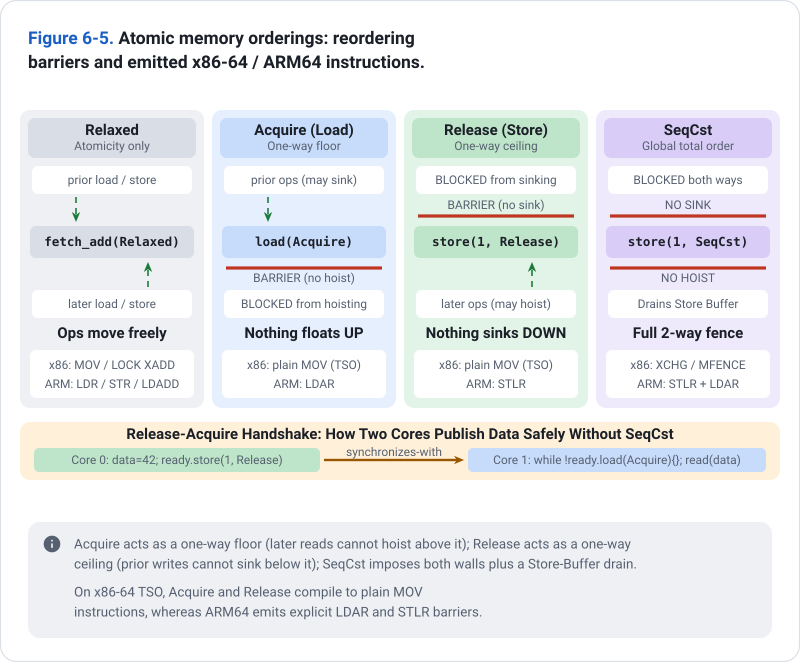
6.6 Synchronization Beneath the Primitives: Futexes and Seqlocks
Production operating systems combine user-mode atomic CAS instructions with kernel wait queues to achieve sub-10-nanosecond uncontended locking while avoiding CPU waste under contention.
6.6.1 Fast Userspace Mutexes (futex on Linux / __ulock on Darwin)
Executing a kernel system call upon every lock() and unlock() invocation would impose a 300–1,000 ns privilege-transition penalty on every critical section, whereas pure user-mode spinlocks waste processor cycles whenever contention persists beyond a few nanoseconds.
Contemporary mutex implementations (std::mutex, pthread_mutex_t, and Rust’s std::sync::Mutex) resolve this trade-off through a hybrid Ring 3 / Ring 0 architecture built upon Linux’s futex (Fast Userspace Mutex) or Darwin/macOS’s __ulock_wait / __ulock_wake. The lock state is encoded in a single 32-bit atomic word possessing three discrete states:
- State
0(Unlocked): No thread holds the mutex. - State
1(Locked, Uncontended): One thread owns the mutex; zero threads are parked in the kernel wait queue. - State
2(Locked, Contended): One thread owns the mutex, and one or more contending threads are parked (or entering the wait path) in Ring 0.
The protocol bifurcates into two execution paths:
- Uncontended Fast Path (Ring 3 Only, ~5 ns, Zero System Calls):
lock()executes a single strongcompare_exchange(0, 1, Acquire, Relaxed). When the mutex is unlocked (0), ownership transfers immediately in user mode without crossing the kernel boundary.unlock()executesswap(0, Release). When the previous state is1(confirming no waiting threads exist),unlock()returns directly in Ring 3 with zero system calls.
- Contended Slow Path (Ring 0 Parking and Lost-Wakeup Prevention):
- When Thread B invokes
lock()against a held mutex (state1or2), its fast-path CAS fails. - Thread B atomically swaps the lock word to
2viaswap(2, Acquire), recording the presence of a contender. Ifswap(2)returns0, Thread A released the mutex concurrently and Thread B immediately acquires ownership. - Otherwise, Thread B issues the system call
futex(&state, FUTEX_WAIT, 2). - Within Ring 0, the kernel hashes the address
&stateto a wait-queue hash bucket, acquires the bucket spinlock, and atomically re-verifies*(&state) == 2prior to removing Thread B from the CPU runqueue. If Thread A invokedunlock()and stored0during the interval between Thread B’s user-mode check and its kernel entry, the kernel detects*(&state) != 2, aborts the sleep immediately withEAGAIN, and returns Thread B to Ring 3 to re-attempt acquisition, eliminating the lost-wakeup race. - When Thread A invokes
unlock()and itsswap(0, Release)returns2, Thread A invokesfutex(&state, FUTEX_WAKE, 1), transitioning one parked TCB from the hash-bucket wait queue back onto a runnable core runqueue.
- When Thread B invokes

6.6.2 Sequence Locks (Seqlock) for Read-Mostly Kernel Data
Certain kernel data structures, such as the monotonic clock calibration parameters exported to user processes via the Linux vDSO / vvar page (Chapter 9), experience millions of concurrent reads per second across dozens of cores but infrequent single-writer updates. Standard reader-writer locks (RwLock) degrade severely under this access profile because every reader must execute an atomic increment and decrement on a shared reader_count word, forcing the MESI coherence protocol to bounce the cache line into Exclusive/Modified state across every reading core.
A Sequence Lock (Seqlock) eliminates all reader-side writes to shared memory by pairing the protected payload fields with an atomic 64-bit sequence counter (seq) initialized to 0 (even):
- Writer Protocol (Single Writer):
- Increments
seqfrom an even value2kto the odd value2k + 1withReleaseordering, indicating an active mutation window. - Stores the updated payload fields (
ticks,scaled_ns). - Increments
seqto the next even value2k + 2withReleaseordering, publishing the consistent snapshot.
- Increments
- Reader Protocol (Zero Shared Memory Writes):
- Loads
s1 = seq.load(Acquire). Ifs1is odd ((s1 & 1) != 0), a writer is actively mutating the structure; the reader retries immediately. - Copies the payload fields into thread-local registers using atomic
Relaxedloads (satisfying C++20 and Rust data-race freedom rules even if a writer overlaps the read). - Executes an
Acquirememory fence (std::atomic_thread_fence(memory_order_acquire)/fence(Ordering::Acquire)) so that payload loads cannot be reordered past the closing sequence verification, then loadss2 = seq.load(Relaxed). - Snapshot Verification: If
s1 == s2, no write commenced or completed during the read interval, proving that the local copy represents an untorn, consistent snapshot. Ifs1 != s2, a write overlapped the read; the reader discards the local copy and repeats the loop.
- Loads
Because readers issue exclusively read transactions, all processor cores simultaneously retain the Seqlock cache line in the MESI Shared (S) state, achieving linear multi-core read throughput with zero coherence invalidation traffic while writers never block behind active readers.

Listing 6-9. compare_exchange_weak CAS loop, Acquire-Release message passing, and a lock-free Seqlock (C++20). (code/ch06/cas_ordering.cpp)
// ch06/cas_ordering.cpp: compare_exchange_weak CAS loop, Acquire-Release
// message passing, and a lock-free Seqlock snapshot reader/writer.
#include <atomic>
#include <cstdint>
#include <iostream>
#include <thread>
#include <vector>
// 1. Atomic Compare-And-Swap (CAS) maximum accumulator using compare_exchange_weak.
static void update_max(std::atomic<uint64_t>& max_val, uint64_t candidate) {
uint64_t prev = max_val.load(std::memory_order_relaxed);
while (candidate > prev &&
!max_val.compare_exchange_weak(prev, candidate,
std::memory_order_release,
std::memory_order_relaxed)) {
// On failure (or spurious LL/SC clear on ARM64), prev is reloaded
// with the current value of max_val automatically.
}
}
// 2. Lock-free Seqlock for read-mostly telemetry coordinates.
struct TelemetrySnapshot {
uint64_t ticks;
uint64_t scaled_ns;
};
class Seqlock {
public:
void write(TelemetrySnapshot next) {
uint64_t s = seq_.load(std::memory_order_relaxed);
seq_.store(s + 1, std::memory_order_release); // odd: write in progress
std::atomic_signal_fence(std::memory_order_acq_rel);
slot_ticks_.store(next.ticks, std::memory_order_relaxed);
slot_ns_.store(next.scaled_ns, std::memory_order_relaxed);
seq_.store(s + 2, std::memory_order_release); // even: coherent snapshot
}
TelemetrySnapshot read() const {
for (;;) {
uint64_t s1 = seq_.load(std::memory_order_acquire);
if ((s1 & 1u) != 0) continue; // writer active; retry
uint64_t t = slot_ticks_.load(std::memory_order_relaxed);
uint64_t ns = slot_ns_.load(std::memory_order_relaxed);
std::atomic_thread_fence(std::memory_order_acquire);
uint64_t s2 = seq_.load(std::memory_order_relaxed);
if (s1 == s2) return {t, ns};
}
}
private:
std::atomic<uint64_t> seq_{0};
std::atomic<uint64_t> slot_ticks_{0};
std::atomic<uint64_t> slot_ns_{0};
};
int main() {
// Part A: CAS loop across 4 threads.
std::atomic<uint64_t> peak{0};
std::vector<std::thread> workers;
for (uint64_t id = 1; id <= 4; ++id) {
workers.emplace_back([&peak, id] {
for (uint64_t step = 1; step <= 25'000; ++step) {
update_max(peak, id * step);
}
});
}
for (auto& w : workers) w.join();
// Part B: Acquire-Release message passing.
uint64_t payload = 0;
std::atomic<bool> ready{false};
uint64_t observed_payload = 0;
std::thread producer([&] {
payload = 0xCAFE'BABE'2026ULL;
ready.store(true, std::memory_order_release);
});
std::thread consumer([&] {
while (!ready.load(std::memory_order_acquire)) {}
observed_payload = payload;
});
producer.join();
consumer.join();
// Part C: Seqlock invariant verification (scaled_ns == ticks * 10).
Seqlock clock_lock;
std::atomic<bool> done{false};
uint64_t torn_reads = 0;
std::thread writer([&] {
for (uint64_t i = 1; i <= 50'000; ++i) {
clock_lock.write({i, i * 10});
}
done.store(true, std::memory_order_release);
});
std::thread reader([&] {
while (!done.load(std::memory_order_acquire)) {
TelemetrySnapshot snap = clock_lock.read();
if (snap.scaled_ns != snap.ticks * 10) ++torn_reads;
}
});
writer.join();
reader.join();
std::cout << "cas peak value : " << peak.load() << "\n"
<< "acq-rel payload : 0x" << std::hex << observed_payload << std::dec << "\n"
<< "seqlock torn : " << torn_reads << "\n";
}
Output 6-9. Peak CAS convergence, verified Acquire-Release visibility, and zero torn Seqlock reads.
cas peak value : 100000
acq-rel payload : 0xcafebabe2026
seqlock torn : 0
Listing 6-10. The same CAS loop, Acquire-Release handoff, and Seqlock in Rust. (code/ch06/cas_ordering.rs)
// ch06/cas_ordering.rs: compare_exchange_weak CAS loop, Acquire-Release
// message passing, and a lock-free Seqlock snapshot reader/writer.
use std::sync::atomic::{AtomicBool, AtomicU64, Ordering, compiler_fence, fence};
use std::thread;
fn update_max(max_val: &AtomicU64, candidate: u64) {
let mut prev = max_val.load(Ordering::Relaxed);
while candidate > prev {
match max_val.compare_exchange_weak(
prev,
candidate,
Ordering::Release,
Ordering::Relaxed,
) {
Ok(_) => break,
Err(actual) => prev = actual,
}
}
}
struct Seqlock {
seq: AtomicU64,
slot_ticks: AtomicU64,
slot_ns: AtomicU64,
}
impl Seqlock {
const fn new() -> Self {
Self {
seq: AtomicU64::new(0),
slot_ticks: AtomicU64::new(0),
slot_ns: AtomicU64::new(0),
}
}
fn write(&self, ticks: u64, scaled_ns: u64) {
let s = self.seq.load(Ordering::Relaxed);
self.seq.store(s + 1, Ordering::Release);
compiler_fence(Ordering::AcqRel);
self.slot_ticks.store(ticks, Ordering::Relaxed);
self.slot_ns.store(scaled_ns, Ordering::Relaxed);
self.seq.store(s + 2, Ordering::Release);
}
fn read(&self) -> (u64, u64) {
loop {
let s1 = self.seq.load(Ordering::Acquire);
if (s1 & 1) != 0 {
continue;
}
let t = self.slot_ticks.load(Ordering::Relaxed);
let ns = self.slot_ns.load(Ordering::Relaxed);
fence(Ordering::Acquire);
let s2 = self.seq.load(Ordering::Relaxed);
if s1 == s2 {
return (t, ns);
}
}
}
}
fn main() {
let peak = AtomicU64::new(0);
thread::scope(|s| {
for id in 1..=4_u64 {
let peak_ref = &peak;
s.spawn(move || {
for step in 1..=25_000_u64 {
update_max(peak_ref, id * step);
}
});
}
});
let payload = AtomicU64::new(0);
let ready = AtomicBool::new(false);
let mut observed_payload = 0_u64;
thread::scope(|s| {
s.spawn(|| {
payload.store(0xCAFE_BABE_2026, Ordering::Relaxed);
ready.store(true, Ordering::Release);
});
s.spawn(|| {
while !ready.load(Ordering::Acquire) {}
observed_payload = payload.load(Ordering::Relaxed);
});
});
let clock_lock = Seqlock::new();
let done = AtomicBool::new(false);
let mut torn_reads = 0_u64;
thread::scope(|s| {
s.spawn(|| {
for i in 1..=50_000_u64 {
clock_lock.write(i, i * 10);
}
done.store(true, Ordering::Release);
});
s.spawn(|| {
while !done.load(Ordering::Acquire) {
let (ticks, scaled_ns) = clock_lock.read();
if scaled_ns != ticks * 10 {
torn_reads += 1;
}
}
});
});
println!("cas peak value : {}", peak.load(Ordering::Relaxed));
println!("acq-rel payload : 0x{observed_payload:x}");
println!("seqlock torn : {torn_reads}");
}Output 6-10.
cas peak value : 100000
acq-rel payload : 0xcafebabe2026
seqlock torn : 0
Production synchronization integrates three architectural layers: compare_exchange_weak drives lock-free retry loops and uncontended Ring 3 fast paths (~5 ns), Release/Acquire barriers enforce cross-core visibility across private Store Buffers without SeqCst pipeline drains, and futex / __ulock parks contended threads in Ring 0 only when exclusive ownership fails.
In Listing 6-9 (code/ch06/cas_ordering.cpp), weaken the producer’s memory_order_release store and consumer’s memory_order_acquire load to memory_order_relaxed on an ARM64 machine (Apple Silicon or AWS Graviton) and run 10 million iterations to observe weakly ordered hardware reordering payload stores past the ready flag.
7. Virtual Memory and the Architecture of Address Translation
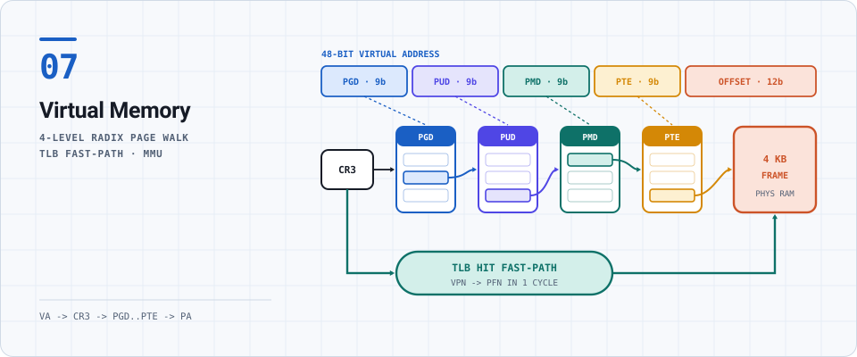
Virtual memory provides a layer of indirection between a process’s perceived address space and the machine’s physical memory. Without this indirection, processes executing directly against physical main memory (Dynamic Random-Access Memory) would share a single flat namespace: any process could read or overwrite the memory of any other process or the kernel itself, programs would have to be relocated to non-overlapping physical ranges before loading, and allocating contiguous physical regions for growing heaps and stacks would rapidly fragment main memory into unusable gaps.
To resolve these constraints while maintaining native execution speed, the operating system and processor implement address translation around three architectural objectives: transparency, so each process perceives a private, contiguous linear address space starting at a predictable base regardless of where its bytes reside in physical memory; efficiency, so translation neither adds prohibitive latency to instruction execution nor consumes excessive physical memory for metadata; and protection, so a process cannot read, modify, or execute memory outside its authorized domain. By partitioning both the virtual address space into fixed-size pages and physical memory into fixed-size frames of identical width, the operating system achieves granular hardware-enforced isolation, demand-driven resource allocation, and zero-copy memory sharing.
7.1 Page-Based Abstraction and Isolation
The fundamental mechanism of virtual memory is the page table, a per-process data structure maintained by the kernel and consulted by the processor’s Memory Management Unit to map virtual pages (identified by a Virtual Page Number) to physical frames (identified by a Physical Frame Number). Because every virtual page has the exact same size as every physical frame (4,096 bytes on x86-64; 4,096 or 16,384 bytes on ARM64), any virtual page can be placed in any available physical frame in main memory without external fragmentation. This mapping allows the operating system to present a contiguous, linear address space to a program even when the underlying physical frames are scattered arbitrarily across physical memory (Figure 7-1).
Beyond translating frame locations, each Page Table Entry (PTE) embeds hardware permission bits that govern the allowed operations (Read, Write, Execute, and User/Supervisor privilege) for that page. This architecture enforces three foundational guarantees in silicon. First, it enforces process and kernel isolation: a process can reference only the physical frames explicitly mapped with user-accessible permissions (User/Supervisor = 1) in its own page table. Because a process has no valid mapping to sibling processes’ frames, and because kernel pages mapped in the upper address space are marked supervisor-only (User/Supervisor = 0), cross-process interference and unauthorized kernel access trigger an immediate hardware exception before any memory state is altered. Second, it enables demand-driven allocation: virtual address reservation is decoupled from physical frame allocation, so pages that a process has reserved but not yet touched (such as Page 5 in Figure 7-1) remain marked non-present (Present = 0) in the page table and consume zero physical memory until the first access triggers a page fault. Third, it supports controlled sharing and copy-on-write: multiple processes can map their virtual pages to the same physical frames with read-only permissions (Read/Write = 0), enabling shared libraries (libc) and fork() copy-on-write (Section 3.2) to avoid physical memory duplication until a store instruction occurs.

7.2 Hierarchical Translation and the TLB
Consistent with the separation of mechanism and policy established in Section 1.3, virtual memory divides responsibility between the hardware Memory Management Unit (MMU) and the operating system kernel. The kernel manages policy: it allocates physical frames for page tables, programs Page Table Entry (PTE) mappings, and resolves page-fault exceptions. The MMU implements the translation mechanism: on every instruction fetch, load, or store, hardware translates the Virtual Address (VA) into a Physical Address (PA) without invoking the operating system.
7.2.1 Address Decomposition and Hardware Translation
For a machine with an n-bit virtual address space and fixed-size pages of 2k bytes, the MMU partitions every VA into two contiguous bit fields (Figure 7-2):
- Virtual Page Number (
VPN, upper n − k bits): Identifies which virtual page contains the referenced byte (VPN = VA >> k). - Page Offset (lower k bits): Identifies the byte’s exact displacement within that page (
Offset = VA & ((1 << k) - 1)).
Because every virtual page and every physical frame share the exact same byte width (2k bytes) and align on 2k-byte boundaries, relocating a page to any physical frame adds an integer multiple of 2k to its base address, leaving all bit positions below k mathematically invariant. The Page Offset bits therefore pass wire-for-wire from the VA into the PA without modification. On standard x86-64 hardware with 4 KiB (212-byte) pages and 48-bit virtual addresses, bits [47:12] form the 36-bit VPN and bits [11:0] form the 12-bit Page Offset.
During a memory reference, the MMU extracts the VPN and queries the Translation Lookaside Buffer (TLB), a small, core-private associative cache of recent VPN → PFN mappings. On a TLB hit, hardware retrieves the corresponding 40-bit Physical Frame Number (PFN) and verifies the cached permission bits (Present (P), Read/Write (R/W), User/Supervisor (U/S), and No-Execute (NX)) in approximately 0.5 to 1 clock cycle. On a TLB miss, the hardware page-table walker traverses the active process’s page table starting from the root physical base address stored in Control Register 3 (CR3) on x86-64 (or Translation Table Base Register 0 (TTBR0_EL1) and Translation Table Base Register 1 (TTBR1_EL1) on ARM64), caches the resulting leaf PTE in the TLB, and concatenates the PFN with the unmodified 12-bit Page Offset to form the physical bus address:
PA = (PFN << 12) | Offset
7.2.2 Multi-Level Radix Page Tables and Canonical Addressing
On 64-bit architectures, representing the page table as a single flat array is infeasible. A 48-bit virtual address space (248 bytes = 256 TiB) partitioned into 4 KiB (212-byte) pages contains 248 / 212 = 236 (68.7 billion) virtual pages. At 8 bytes per 64-bit PTE, a flat lookup table would consume 236 × 8 bytes = 512 GiB of contiguous physical Dynamic Random-Access Memory (DRAM) per process, regardless of how few pages the process actually maps.
To bound metadata overhead while preserving deterministic hardware lookup depth, the kernel organizes the page table as a sparse, four-level hierarchical radix tree (extended to five levels on processors supporting 57-bit virtual addressing). Each level partitions the address space by a factor of 512: a Level 4 Page Map Level 4 (PML4) entry governs 512 GiB, a Level 3 Page Directory Pointer Table (PDPT) entry governs 1 GiB, a Level 2 Page Directory (PD) entry governs 2 MiB, and a Level 1 Page Table (PT) leaf entry maps a single 4 KiB page (Figure 7-3). Because the hardware walker aborts immediately upon encountering a non-present entry (P = 0), the kernel omits entire unmapped 512 GiB, 1 GiB, or 2 MiB subtrees and allocates physical frames solely for nodes covering active virtual regions. Table 7-1 consolidates the architectural terminology across x86-64, ARM64, and the Linux kernel.
Table 7-1. Architectural terminology in virtual-memory address translation.
| Concept | x86-64 | ARM64 | Linux Kernel | Role in Hardware Translation |
|---|---|---|---|---|
| Translation Unit | Memory Management Unit (MMU) | Memory Management Unit (MMU) | Hardware substrate | Translates VA to PA and enforces permissions on every memory access |
| Addresses | Virtual Address (VA) / Physical Address (PA) | Virtual Address (VA) / Physical Address (PA) | unsigned long / phys_addr_t | Software virtual pointer versus physical memory bus address |
| Block Numbers | Virtual Page Number (VPN) / Physical Frame Number (PFN) | Virtual Page Number (VPN) / Output Address (OA) | Page Frame Number (PFN) (PA >> 12) | Upper address bits identifying a 4 KiB virtual page or physical frame |
| Root Register | Control Register 3 (CR3) | Translation Table Base Register (TTBR0_EL1 / TTBR1_EL1) | mm_struct->pgd | Privileged register holding the physical base address of the root table |
| Level 4 (Root) | Page Map Level 4 (PML4) | Level 0 Translation Table | Page Global Directory (PGD) | Indexed by bits [47:39]; 512 entries, 512 GiB per entry |
| Level 3 | Page Directory Pointer Table (PDPT) | Level 1 Translation Table | Page Upper Directory (PUD) | Indexed by bits [38:30]; 1 GiB per entry (or 1 GiB huge page) |
| Level 2 | Page Directory (PD) | Level 2 Translation Table | Page Middle Directory (PMD) | Indexed by bits [29:21]; 2 MiB per entry (or 2 MiB huge page) |
| Level 1 (Leaf) | Page Table (PT) | Level 3 Translation Table | Page Table Entry (PTE) Table | Indexed by bits [20:12]; maps one 4 KiB page to a physical frame |
| Translation Cache | Translation Lookaside Buffer (TLB) | Translation Lookaside Buffer (TLB) | Hardware TLB | Core-private associative cache of VPN → PFN mappings (~0.5–1 cycle hit) |
| Address-Space Tag | Process-Context Identifier (PCID, 12-bit) | Address Space Identifier (ASID, 8- or 16-bit) | mm->context.id | Tags TLB entries by address space to avoid flushes on context switch |

Two architectural invariants govern the structure of a 64-bit VA before the radix walk begins (Figure 7-4):
- Canonical Address Form (bits
[63:48]): Because 4-level paging translates only bits[47:0], hardware prohibits software from storing arbitrary tags in the unused upper 16 bits, preserving forward compatibility with 5-level paging (57-bitVA). Bits[63:48]must be an exact sign-extension (replication) of bit 47. When bit 47 is0, bits[63:48]must equal0x0000, defining the 128 TiB User Canonical Space (0x0000_0000_0000_0000to0x0000_7FFF_FFFF_FFFF). When bit 47 is1, bits[63:48]must equal0xFFFF, defining the 128 TiB Kernel Canonical Space (0xFFFF_8000_0000_0000to0xFFFF_FFFF_FFFF_FFFF). Any pointer whose upper 16 bits fall into the Non-Canonical Hole raises an immediate General Protection Fault (#GP(0)) before any table walk begins. - The
9-9-9-9-12Radix Geometry (bits[47:0]): Addressing 4,096 = 212 bytes within a 4 KiB frame requires a 12-bit Page Offset (bits [11:0]). Each page-table node occupies exactly one 4 KiB physical frame, and each 64-bitPTEoccupies 8 bytes (23 bytes), yielding 4,096 / 8 = 512 = 29 entries per table. Indexing 512 entries (0to511) requires an unsigned 9-bit index at each of the four radix levels (4 × 9 + 12 = 48 bits). This 9-bit radix width is the exact fan-out that packs one complete table node into one 4 KiB frame with zero internal fragmentation. Extending translation to all 64 bits with 9-bit levels would require 6 levels, increasing everyTLBmiss to 6 dependent memory reads (and up to 36 reads under nested virtualization, Chapter 16), which is why hardware stops at 48 bits (or 57 bits on 5-level systems).

7.2.3 Worked 4-Level Address Translation Walkthrough
Consider the 64-bit user-space virtual address VA = 0x0000_7FFF_ABCD_EF01 (a stack address near the top of the user canonical range) under a page-table hierarchy rooted at CR3 = 0x0000_0000_1000_0000.
Stage 1: Canonicality Verification and Bitwise Index Extraction
The hexadecimal digit covering bits [47:44] is 7 (0111₂), so bit 47 is 0 and bits [63:48] are 0x0000, confirming a valid user canonical address. Because 12 bits equal three 4-bit hexadecimal digits, the Page Offset is read directly from the trailing three hex digits (0xF01 = 3,841). By contrast, because 9 does not divide evenly by 4, each 9-bit table index straddles hex-nibble boundaries (visible directly in the bit cells of Figure 7-4). Shifting and masking the upper 36-bit VPN (0x7FFF_ABCDE) into four 9-bit indices (& 0x1FF) yields:
Hex Nibble: 7 F F F _ A B C D _ E F 0 1
4-Bit Binary: 0111 1111 1111 1111 1010 1011 1100 1101 1110 1111 0000 0001
Bit Position: ^47 ^0
PML4 Index (L4, bits [47:39]): (VA >> 39) & 0x1FF = 0_1111_1111_2 = 0x0FF = 255
PDPT Index (L3, bits [38:30]): (VA >> 30) & 0x1FF = 1_1111_1110_2 = 0x1FE = 510
PD Index (L2, bits [29:21]): (VA >> 21) & 0x1FF = 1_0101_1110_2 = 0x15E = 350
PT Index (L1, bits [20:12]): (VA >> 12) & 0x1FF = 0_1101_1111_2 = 0x0DF = 223
Page Offset (bits [11:0]) : VA & 0xFFF = 1111_0000_0001_2 = 0xF01 = 3,841
Stage 2: Four-Level Physical Memory Walk from CR3
At each radix level, the hardware walker locates the target 8-byte entry inside the current 4 KiB table frame using:
Entry_PA = Table_Base_PA + (Index × 8)
Two properties of 4 KiB alignment simplify this arithmetic in silicon. First, every 4 KiB-aligned Table_Base_PA ends in twelve zero bits (0x...000). Since Index ranges from 0 to 511, Index × 8 ranges from 0x000 to 0xFF8, fitting entirely within those trailing three hex digits without carry propagation. Second, because the next table’s physical base address also ends in twelve zero bits, each 64-bit entry packs status and permission flags into bits [11:0] (plus bit 63 for NX) and stores the 40-bit PFN in bits [51:12]. After validating the permission bits at each level, the MMU applies the mask Entry & 0x000F_FFFF_FFFF_F000 to recover the next table’s 4 KiB-aligned physical base address (Table 7-2 and Figure 7-5).
Table 7-2. Four-level hardware page-table walk for VA = 0x0000_7FFF_ABCD_EF01 (CR3 = 0x1000_0000).
| Hop | Level & Span | Table Base PA | Index | Byte Offset (Idx × 8) | Entry PA Read | 64-Bit Entry Value | Flags & Hardware Check | Next Base (Entry & 0x000F_FFFF_FFFF_F000) |
|---|---|---|---|---|---|---|---|---|
| 1 | L4: PML4 (512 GiB) | 0x1000_0000 | 255 (0x0FF) | 0x7F8 | 0x1000_07F8 | 0x0000_0000_2040_0007 | 0x007 (P=1, R/W=1, U/S=1) | L3 Base: 0x0000_0000_2040_0000 |
| 2 | L3: PDPT (1 GiB) | 0x2040_0000 | 510 (0x1FE) | 0xFF0 | 0x2040_0FF0 | 0x0000_0000_3080_0007 | 0x007 (PS=0, not 1 GiB) | L2 Base: 0x0000_0000_3080_0000 |
| 3 | L2: PD (2 MiB) | 0x3080_0000 | 350 (0x15E) | 0xAF0 | 0x3080_0AF0 | 0x0000_0000_40C0_0007 | 0x007 (PS=0, not 2 MiB) | L1 Base: 0x0000_0000_40C0_0000 |
| 4 | L1: PT (4 KiB) | 0x40C0_0000 | 223 (0x0DF) | 0x6F8 | 0x40C0_06F8 | 0x8000_0000_8A42_0067 | 0x067 + NX=1 (P, R/W, U/S, A, D = 1) | Frame Base: 0x0000_0000_8A42_0000 |
Effective access permissions are the logical intersection across all four levels: clearing U/S or R/W in an upper directory entry restricts the entire subtree beneath it. At Hops 2 and 3, the Page Size (PS) bit is 0, directing the walker to descend to the next level rather than terminating early on a huge page.
Stage 3: Leaf PTE Decoding and Physical Address Assembly
Hop 4 returns the leaf entry PTE = 0x8000_0000_8A42_0067. Unlike the intermediate directory entries (0x...0007), the leaf PTE records hardware-updated activity bits (Accessed (A = 1) and Dirty (D = 1), contributing 0x60 to the low byte 0x67) and sets bit 63 (No-Execute, NX = 1, leading hex digit 8) to enforce non-executable stack data (Table 7-3 and Figure 7-5).
Table 7-3. Architectural bit breakdown of leaf entry PTE = 0x8000_0000_8A42_0067.
| Bits | Field (Full Form & Symbol) | Value | Hardware & Kernel Semantics |
|---|---|---|---|
| 0 | Present (P) | 1 (0x001) | Frame resides in physical memory. If 0, hardware aborts the walk, latches the faulting VA into Control Register 2 (CR2), and raises a Page Fault (#PF, Vector 14). |
| 1 | Read/Write (R/W) | 1 (0x002) | Stores permitted. Cleared to 0 on shared pages during fork() Copy-on-Write (COW) (Section 3.2) so the first write traps to the kernel. |
| 2 | User/Supervisor (U/S) | 1 (0x004) | Accessible from user mode (Ring 3 on x86-64; Exception Level 0 (EL0) on ARM64). Kernel mappings set U/S = 0. |
| 4:3 | Page-Level Cache Disable (PCD) / Page-Level Write-Through (PWT) | 00 | Hardware cache policy (00 = write-back cacheable DRAM; set for uncached Memory-Mapped Input/Output (MMIO) device registers). |
| 5 | Accessed (A) | 1 (0x020) | Set atomically by the MMU on any read or write; scanned and cleared by the kernel page-reclamation daemon to approximate Least Recently Used (LRU) eviction. |
| 6 | Dirty (D) | 1 (0x040) | Set atomically by the MMU on a store instruction; signals that a modified file-backed page must be written back before eviction. |
| 7 | Page Attribute Table (PAT) / Page Size (PS) | 0 | Selects memory-type caching attributes in leaf PTEs; in PD (L2) or PDPT (L3) entries, PS = 1 maps a 2 MiB or 1 GiB huge page directly. |
| 8 | Global (G) | 0 | When 1 (used on shared kernel mappings), preserves the TLB entry across CR3 reloads on context switch. |
| 11:9 | Available for Operating System Use (AVL) | 000 | Ignored by hardware; available for kernel software metadata (for example, swap or copy-on-write markers). |
| 51:12 | Physical Frame Number (PFN) | 0x000_8A420 | 40-bit frame index. Masking PTE & 0x000F_FFFF_FFFF_F000 yields the 4 KiB-aligned frame base 0x0000_0000_8A42_0000. |
| 62:52 | Ignored / Protection Key (Ign / PK) | 0x000 | Ignored / Memory Protection Key (PKU) domain tag when hardware protection keys are enabled. |
| 63 | No-Execute (NX) | 1 (0x8000...) | Hardware Write XOR Execute (W^X) enforcement. Blocks instruction fetches from this stack page in silicon. |
Combining the masked 4 KiB frame base with the unmodified 12-bit Page Offset (0xF01) yields the final physical address:
PA = (PTE & 0x000F_FFFF_FFFF_F000) | (VA & 0x0000_0000_0000_0FFF)
= 0x0000_0000_8A42_0000 | 0x0000_0000_0000_0F01
= 0x0000_0000_8A42_0F01
The MMU inserts VPN 0x7FFF_ABCDE → PFN 0x8A420 into the core’s TLB and issues the memory request for 0x0000_0000_8A42_0F01 to the Level 1 data cache. Subsequent accesses to any byte within 0x0000_7FFF_ABCD_E000 to 0x0000_7FFF_ABCD_EFFF hit in the TLB in a single cycle without walking the page table.

7.2.4 The Translation Lookaside Buffer, Huge Pages, and Shootdowns
Without a TLB, every memory instruction would incur five physical memory accesses: four dependent 8-byte reads across PML4 → PDPT → PD → PT, followed by the data access itself. Even when all four table entries reside in the L1 or L2 data cache, chaining four dependent loads adds roughly 8 to 15 ns; when they miss to DRAM, a single translation stall exceeds 300 ns. The TLB amortizes this cost to ~0.5 to 1 cycle on a hit, and three microarchitectural properties govern its behavior under production workloads (Figure 7-6):
- TLB Reach and Huge Pages (2 MiB / 1 GiB): Single-cycle associative lookup constrains a Level 1 Data Translation Lookaside Buffer (
L1 dTLB) to ~64 entries, backed by a Level 2 Shared Translation Lookaside Buffer (L2 STLB) of 1,024 to 2,048 entries. The total memory span mapped without misses is theTLBreach (Entries × Page Size). With 4 KiB pages, a 64-entryL1 dTLBcovers 256 KiB and a 1,536-entryL2 STLBcovers only 6 MiB. Once an application’s random-access working set exceedsL2 STLBreach, translation misses surge and latency climbs steeply (measured empirically in Listings 7-5 and 7-6). Mapping large arenas with 2 MiB Huge Pages (MAP_HUGETLBorMADV_HUGEPAGE) setsPS = 1in the L2PDentry, terminating the walk one level early and merging bits[20:12]with[11:0]into a 21-bit offset (221 = 2 MiB). The same 1,536-entryL2 STLBthen covers 3 GiB (512× reach) with a 3-level walk. SettingPS = 1in an L3PDPTentry creates a 1 GiB Huge Page (30-bit offset, 2-level walk, 1.5 TiB reach). - Address Space Tagging (
PCID/ASID): Because identical virtual addresses in distinct processes map to different physical frames, legacy x86 processors flushed all non-globalTLBentries on everyCR3reload during a context switch. Modern processors tag eachTLBentry with a 12-bit Process-Context Identifier (PCID) on x86-64 or an 8- or 16-bit Address Space Identifier (ASID) on ARM64. A lookup hits only when bothVPNand the active process tag match, preserving cached translations across context switches and across Kernel Page-Table Isolation (KPTI)CR3switches on every system call. - Cross-Core
TLBShootdowns: Unlike the L1, L2, and L3 data caches, which hardware keeps coherent via cache-coherency protocols (Section 2.2),TLBs are not coherent across processor cores. When a thread unmaps a page (munmap) or restricts permissions (mprotect) in a multi-threaded process, sibling cores may retain stale translations in their localTLBs. The kernel must update thePTEin memory, invalidate its local entry (invlpgon x86-64;tlbion ARM64), and issue synchronous Inter-Processor Interrupts (IPIs) to every core running that address space, stalling those cores until all acknowledgements arrive. This cross-core synchronization cost is a primary reason high-performance memory allocators (Chapter 8) pool and reusemmaparenas rather than returning pages viamunmap()on every deallocation.

7.3 Fault Handling and Memory Management Strategies
While TLB hits and hardware page-table walks execute autonomously in silicon, the kernel enters the virtual-memory datapath when the MMU raises a Page Fault (#PF) exception. Upon encountering a PTE with P = 0 or a permission violation (R/W, U/S, or NX), hardware latches the faulting VA into Control Register 2 (CR2) (or the Fault Address Register (FAR_EL1) on ARM64), pushes an architectural error code encoding the access type and cause onto the kernel stack, and transfers control to the kernel’s page-fault handler (Figure 7-7).
A single load instruction can therefore traverse a six-order-of-magnitude latency hierarchy without any change to application code: ~0.5 ns on an L1 dTLB hit, ~10 to 300 ns on a hardware 4-level page walk, ~1 to 3 µs on a kernel minor page fault, and ~50 µs to 10 ms on a storage-backed major page fault. To classify a #PF, the kernel searches the process’s balanced tree of Virtual Memory Areas (VMA, vm_area_struct in current->mm, Section 3.1.1), which records every valid virtual interval and its logical permissions:
- Zero-Fill Allocation (Minor Fault): The faulting
VAlies inside a valid anonymousVMA(MAP_PRIVATE | MAP_ANON, such as heap or stack) whosePTEhasP = 0. The kernel allocates a free 4 KiB frame, zeroes it to prevent cross-process data leakage, writes thePTEwithP = 1, and restarts the faulting instruction with zero storage Input/Output (I/O). - Demand Paging (Major Fault): The faulting
VAlies inside a file-backedVMAwhose page is not resident inDRAM. The kernel allocates a frame in the page cache, schedules a storage read, blocks the thread untilI/Ocompletes, maps the frame (P = 1), and restarts the instruction. - Copy-on-Write (
COW): Afterfork()(Section 3.2), parent and child share frames marked read-only (R/W = 0) in theirPTEs while theirVMAs allow writes (VM_WRITE). A store traps onR/W = 0; the kernel allocates a fresh 4 KiB frame, copies the page contents, updates the writing process’sPTEwithR/W = 1, and resumes execution. - Protection Violation: The faulting
VAfalls outside every registeredVMA(for example, a null-pointer dereference) or violates theVMA’s logical permissions (writing to read-only text or touching aPROT_NONEguard page). The kernel delivers a synchronous fatal signal: Segmentation Violation (SIGSEGV) on Linux, or Bus Error (SIGBUS) on macOS.
Separating virtual address reservation from hardware PTE permissions enables guard pages: virtual pages mapped with mprotect(addr, page_size, PROT_NONE) at the end of thread stacks or allocator regions to trap overflows immediately in silicon before adjacent memory is corrupted. Likewise, mapping files with mmap exposes kernel page-cache frames directly in the process’s virtual address space, eliminating the system-call and buffer-copying overhead of explicit read(2) calls.
7.3.1 The mmap and mprotect System Call Interface
The parameters of mmap(addr, length, prot, flags, fd, offset) and mprotect(addr, length, prot) map directly onto the page-table and VMA structures described in Sections 7.2 and 7.3:
- Address Hint (
addr) and Length (length): Passingnullptr(ptr::null_mut()in Rust) lets the kernel choose an unused, page-aligned virtual base address (4,096bytes on x86-64;16,384bytes on Apple Silicon ARM64). The kernel roundslengthupward to an exact multiple of the hardware page size. - Protection Bitmask (
prot): Sets the hardware permission bits in each mapped leafPTE.PROT_READenables loads,PROT_WRITEsetsR/W = 1while retainingNX = 1, andPROT_NONErevokes all permissions to establish a guard page while keeping the virtual range reserved. - Visibility and Backing Flags (
flags):MAP_PRIVATEcreates a private copy-on-write mapping whose modifications never propagate to the backing file;MAP_SHAREDshares physical frames across processes (Chapter 11) and flushes writes back to file-backed storage. CombiningMAP_PRIVATE | MAP_ANON(MAP_ANONYMOUSon Linux) allocates demand-zeroed anonymous memory unbacked by any file, for which the Portable Operating System Interface (POSIX) standard requiresfd = -1andoffset = 0. - Error Contract and Reclamation: On failure,
mmapreturnsMAP_FAILED((void*)-1) rather thannullptrand setserrno. Callers must verifymapped != MAP_FAILEDbefore dereferencing the region and release mappings withmunmap(addr, length).
Listing 7-1. Page size, page alignment, and a guard page (C++20). (code/ch07/pagesize.cpp)
// ch07/pagesize.cpp: Queries hardware page size, maps three contiguous virtual pages,
// and converts the middle page into an inaccessible guard page via mprotect(PROT_NONE).
#include <sys/mman.h>
#include <unistd.h>
#include <csignal>
#include <csetjmp>
#include <cstdio>
static sigjmp_buf g_recovery_env;
static volatile void* g_fault_address = nullptr;
// Signal handler invoked by the kernel when the MMU raises a page protection fault.
static void on_protection_fault(int, siginfo_t* sig_info, void*) {
g_fault_address = sig_info->si_addr; // Exact virtual address that triggered the fault
siglongjmp(g_recovery_env, 1); // Resume execution cleanly in main()
}
int main() {
// Query the hardware virtual-memory page granularity (4,096 B on x86-64; 16,384 B on Apple Silicon).
long page_size = sysconf(_SC_PAGESIZE);
printf("page size: %ld bytes\n", page_size);
// Map three contiguous anonymous virtual pages with read/write permissions.
// The kernel guarantees the returned base address is aligned to `page_size`.
char* mapped_region = static_cast<char*>(
mmap(nullptr, 3 * page_size, PROT_READ | PROT_WRITE, MAP_PRIVATE | MAP_ANON, -1, 0));
if (mapped_region == MAP_FAILED) {
perror("mmap");
return 1;
}
printf("region: %p (page-aligned by construction)\n", static_cast<void*>(mapped_region));
// Write one byte into Page 0, Page 1, and Page 2 (triggering demand-zero physical frame allocation).
mapped_region[0] = 'a';
mapped_region[page_size] = 'b';
mapped_region[2 * page_size] = 'c';
// Convert Page 1 (the middle page) into a guard page by stripping all PTE permissions (PROT_NONE).
if (mprotect(mapped_region + page_size, page_size, PROT_NONE) != 0) {
perror("mprotect");
return 1;
}
struct sigaction signal_action {};
signal_action.sa_sigaction = on_protection_fault;
signal_action.sa_flags = SA_SIGINFO; // Deliver siginfo_t containing the faulting virtual address
sigemptyset(&signal_action.sa_mask);
// Linux delivers SIGSEGV for PTE permission faults; macOS/Darwin delivers SIGBUS.
sigaction(SIGSEGV, &signal_action, nullptr);
sigaction(SIGBUS, &signal_action, nullptr);
if (sigsetjmp(g_recovery_env, 1) == 0) {
mapped_region[page_size] = 'x'; // Triggers hardware page protection fault on Page 1
printf("write succeeded (unexpected)\n");
} else {
printf("fault on write to %p\n", g_fault_address);
printf("fault address is the guard page: %s\n",
g_fault_address == static_cast<void*>(mapped_region + page_size) ? "yes" : "no");
}
// Neighboring Page 0 and Page 2 retain their permissions and data intact.
printf("neighbors still readable: %c %c\n", mapped_region[0], mapped_region[2 * page_size]);
munmap(mapped_region, 3 * page_size);
}
Output 7-1. The fault occurs on the protected page.
page size: 4096 bytes
region: 0x10b4dd000 (page-aligned by construction)
fault on write to 0x10b4de000
fault address is the guard page: yes
neighbors still readable: a c
Listing 7-2. Mapping and protecting pages in Rust, using the libc crate. (code/ch07/pagesize.rs)
// ch07/pagesize.rs: Queries hardware page size, maps three contiguous virtual pages,
// and strips permissions from the middle guard page via mprotect(PROT_NONE).
use std::process::exit;
use std::ptr;
fn main() {
// SAFETY: `_SC_PAGESIZE` is a read-only POSIX configuration constant returning
// the CPU MMU's native page granularity (4,096 B on x86-64; 16,384 B on Apple Silicon).
let page_size = unsafe { libc::sysconf(libc::_SC_PAGESIZE) as usize };
println!("page size: {page_size} bytes");
// SAFETY: Anonymous private mapping (`MAP_PRIVATE | MAP_ANON`) of `3 * page_size` bytes.
// Checking `mapped_region != MAP_FAILED` guarantees a valid page-aligned virtual range.
let mapped_region = unsafe {
libc::mmap(
ptr::null_mut(),
3 * page_size,
libc::PROT_READ | libc::PROT_WRITE,
libc::MAP_PRIVATE | libc::MAP_ANON,
-1,
0,
)
};
if mapped_region == libc::MAP_FAILED {
eprintln!("mmap failed");
exit(1);
}
println!("region: {mapped_region:p} (page-aligned by construction)");
unsafe {
// SAFETY: `mapped_region` spans 3 writable pages starting at a page-aligned address.
// Writing to offsets 0, `page_size`, and `2 * page_size` touches Page 0, Page 1, and Page 2.
ptr::write(mapped_region.cast::<u8>(), b'a');
ptr::write(mapped_region.cast::<u8>().add(page_size), b'b');
ptr::write(mapped_region.cast::<u8>().add(2 * page_size), b'c');
// Convert Page 1 (middle page) into a guard page by setting PTE permissions to PROT_NONE.
// SAFETY: `mapped_region + page_size` is page-aligned and lies strictly within the mapping.
let mprotect_status = libc::mprotect(
mapped_region.cast::<u8>().add(page_size) as *mut libc::c_void,
page_size,
libc::PROT_NONE,
);
println!("mprotect(middle page, PROT_NONE): status={mprotect_status}");
// SAFETY: Unmaps the exact base address and length returned by `mmap`.
libc::munmap(mapped_region, 3 * page_size);
}
}Output 7-2.
page size: 4096 bytes
region: 0x1086e2000 (page-aligned by construction)
mprotect(middle page, PROT_NONE): status=0
Listing 7-3. Reading one file with read(2) and with mmap (C++20). (code/ch07/mmap_file.cpp)
// ch07/mmap_file.cpp: Compares counting bytes via read(2) (kernel-to-user copy)
// against reading directly through an mmap(2) virtual memory mapping.
#include <fcntl.h>
#include <sys/mman.h>
#include <sys/stat.h>
#include <unistd.h>
#include <cstdio>
#include <vector>
int main() {
const char* file_path = "/tmp/osbook_mmap_demo.txt";
constexpr size_t kFileBytes = 4 * 1024 * 1024; // 4 MiB test file
constexpr size_t kLineBytes = 64; // 63 'a' characters + '\n'
// Step 1: Create and populate the 4 MiB file (65,536 lines of 64 bytes).
int file_fd = open(file_path, O_CREAT | O_RDWR | O_TRUNC, 0644);
if (file_fd < 0) {
perror("open");
return 1;
}
std::vector<char> line_buffer(kLineBytes, 'a');
line_buffer[kLineBytes - 1] = '\n';
for (size_t byte_offset = 0; byte_offset < kFileBytes; byte_offset += kLineBytes) {
write(file_fd, line_buffer.data(), kLineBytes);
}
fsync(file_fd);
// Step 2: Count 'a' bytes via read(2), which copies data from the kernel page cache
// into our user-space `read_buffer` on every system call.
lseek(file_fd, 0, SEEK_SET);
long count_via_read = 0;
char read_buffer[8192];
ssize_t bytes_read = 0;
while ((bytes_read = read(file_fd, read_buffer, sizeof read_buffer)) > 0) {
for (ssize_t index = 0; index < bytes_read; ++index) {
if (read_buffer[index] == 'a') ++count_via_read;
}
}
// Step 3: Map the file directly into our virtual address space via mmap(2).
// Hardware page faults map the kernel page cache frames directly into user PTEs.
char* mapped_file = static_cast<char*>(
mmap(nullptr, kFileBytes, PROT_READ, MAP_PRIVATE, file_fd, 0));
if (mapped_file == MAP_FAILED) {
perror("mmap");
return 1;
}
long count_via_mmap = 0;
for (size_t index = 0; index < kFileBytes; ++index) {
if (mapped_file[index] == 'a') ++count_via_mmap;
}
struct stat file_stat {};
fstat(file_fd, &file_stat);
printf("file size : %lld bytes\n", static_cast<long long>(file_stat.st_size));
printf("read(2) : %ld 'a' characters\n", count_via_read);
printf("mmap : %ld 'a' characters\n", count_via_mmap);
printf("match : %s\n", count_via_read == count_via_mmap ? "yes" : "NO");
munmap(mapped_file, kFileBytes);
close(file_fd);
unlink(file_path);
}
Output 7-3. Both methods count 4,128,768 characters.
file size : 4194304 bytes
read(2) : 4128768 'a' characters
mmap : 4128768 'a' characters
match : yes
Listing 7-4. The same file-mapping comparison in Rust, using the libc crate. (code/ch07/mmap_file.rs)
// ch07/mmap_file.rs: Compares counting bytes via read(2) (kernel-to-user copy)
// against reading directly through an mmap(2) virtual memory mapping.
extern crate libc;
use std::ptr;
use std::slice;
const FILE_BYTES: usize = 4 * 1024 * 1024; // 4 MiB test file
const LINE_BYTES: usize = 64; // 63 'a' characters + '\n'
fn main() {
let file_path = b"/tmp/osbook_mmap_demo_rs.txt\0";
// SAFETY: `file_path` is a NUL-terminated path; mode 0o644 creates a readable/writable file.
let file_fd = unsafe {
libc::open(
file_path.as_ptr() as *const libc::c_char,
libc::O_CREAT | libc::O_RDWR | libc::O_TRUNC,
0o644 as libc::c_uint,
)
};
assert!(file_fd >= 0, "open failed");
let mut line_buffer = [b'a'; LINE_BYTES];
line_buffer[LINE_BYTES - 1] = b'\n';
for _ in (0..FILE_BYTES).step_by(LINE_BYTES) {
// SAFETY: `file_fd` is open for writing and `line_buffer` provides `LINE_BYTES` valid bytes.
let bytes_written = unsafe {
libc::write(file_fd, line_buffer.as_ptr() as *const libc::c_void, LINE_BYTES)
};
assert_eq!(bytes_written, LINE_BYTES as isize);
}
// SAFETY: `file_fd` is an open file descriptor; sync data and rewind offset to byte 0.
unsafe {
libc::fsync(file_fd);
libc::lseek(file_fd, 0, libc::SEEK_SET);
}
// Step 2: Count 'a' bytes via read(2) (copies from kernel page cache into user buffer).
let mut count_via_read: usize = 0;
let mut read_buffer = [0_u8; 8192];
loop {
// SAFETY: `file_fd` is readable and `read_buffer` provides 8,192 writable bytes.
let bytes_read = unsafe {
libc::read(
file_fd,
read_buffer.as_mut_ptr() as *mut libc::c_void,
read_buffer.len(),
)
};
if bytes_read <= 0 {
break;
}
count_via_read += read_buffer[..bytes_read as usize]
.iter()
.filter(|&&byte| byte == b'a')
.count();
}
// Step 3: Map the file directly into virtual memory (no explicit user-buffer copy).
// SAFETY: Read-only private mapping of `FILE_BYTES` backed by `file_fd`.
let mapped_ptr = unsafe {
libc::mmap(
ptr::null_mut(),
FILE_BYTES,
libc::PROT_READ,
libc::MAP_PRIVATE,
file_fd,
0,
)
};
assert_ne!(mapped_ptr, libc::MAP_FAILED, "mmap failed");
// SAFETY: `mapped_ptr` is verified valid and remains read-only and mapped until `munmap`.
let mapped_slice = unsafe { slice::from_raw_parts(mapped_ptr as *const u8, FILE_BYTES) };
let count_via_mmap = mapped_slice.iter().filter(|&&byte| byte == b'a').count();
println!("file size : {FILE_BYTES} bytes");
println!("read(2) : {count_via_read} 'a' characters");
println!("mmap : {count_via_mmap} 'a' characters");
println!(
"match : {}",
if count_via_read == count_via_mmap { "yes" } else { "NO" }
);
// SAFETY: Unmaps the exact mapping, closes `file_fd`, and removes the temporary file.
unsafe {
libc::munmap(mapped_ptr, FILE_BYTES);
libc::close(file_fd);
libc::unlink(file_path.as_ptr() as *const libc::c_char);
}
}Output 7-4.
file size : 4194304 bytes
read(2) : 4128768 'a' characters
mmap : 4128768 'a' characters
match : yes
Listing 7-5. One access per page, for a growing number of pages (C++20). (code/ch07/tlb.cpp)
// ch07/tlb.cpp: Measures per-access latency while sweeping the working set upward,
// stepping by one full hardware page per access so latency cliffs reveal TLB capacity.
#include <sys/mman.h>
#include <unistd.h>
#include <chrono>
#include <cstdint>
#include <cstdio>
static double measure_ns_per_access(size_t working_set_bytes, uint64_t total_accesses) {
const size_t page_size = static_cast<size_t>(sysconf(_SC_PAGESIZE));
char* region = static_cast<char*>(
mmap(nullptr, working_set_bytes, PROT_READ | PROT_WRITE,
MAP_PRIVATE | MAP_ANON, -1, 0));
if (region == MAP_FAILED) return -1.0;
const size_t page_count = working_set_bytes / page_size;
// Pre-fault every page once so page-allocation traps do not distort TLB timings.
for (size_t page_index = 0; page_index < page_count; ++page_index) {
region[page_index * page_size] = 1;
}
uint64_t checksum = 0;
size_t page_index = 0;
auto start_time = std::chrono::steady_clock::now();
for (uint64_t step = 0; step < total_accesses; ++step) {
checksum += static_cast<uint8_t>(region[page_index * page_size]);
if (++page_index == page_count) page_index = 0;
}
auto end_time = std::chrono::steady_clock::now();
double ns_per_access =
std::chrono::duration<double, std::nano>(end_time - start_time).count() / total_accesses;
printf(" %9zu bytes %7zu pages %6.1f ns per access (checksum %llu)\n",
working_set_bytes, page_count, ns_per_access,
static_cast<unsigned long long>(checksum));
munmap(region, working_set_bytes);
return ns_per_access;
}
int main() {
constexpr uint64_t kTotalAccesses = 4'000'000;
printf("one access per page, %llu accesses per working-set size\n\n",
static_cast<unsigned long long>(kTotalAccesses));
for (size_t bytes : {
size_t{4} * 1024, size_t{64} * 1024, size_t{256} * 1024,
size_t{1} << 20, size_t{4} << 20, size_t{16} << 20,
size_t{64} << 20, size_t{256} << 20,
}) {
measure_ns_per_access(bytes, kTotalAccesses);
}
}
Output 7-5. One run on the verification machine.
one access per page, 4000000 accesses per working-set size
4096 bytes 1 pages 1.7 ns per access (checksum 4000000)
65536 bytes 16 pages 1.7 ns per access (checksum 4000000)
262144 bytes 64 pages 1.8 ns per access (checksum 4000000)
1048576 bytes 256 pages 2.5 ns per access (checksum 4000000)
4194304 bytes 1024 pages 4.7 ns per access (checksum 4000000)
16777216 bytes 4096 pages 8.9 ns per access (checksum 4000000)
67108864 bytes 16384 pages 10.6 ns per access (checksum 4000000)
268435456 bytes 65536 pages 13.4 ns per access (checksum 4000000)
Listing 7-6. The same Translation Lookaside Buffer working-set sweep in Rust. (code/ch07/tlb.rs)
// ch07/tlb.rs: Measures per-access latency while sweeping the working set upward,
// stepping by one full hardware page per access so latency cliffs reveal TLB capacity.
extern crate libc;
use std::ptr;
use std::slice;
use std::time::Instant;
fn measure_ns_per_access(working_set_bytes: usize, total_accesses: u64) {
// SAFETY: `_SC_PAGESIZE` queries the read-only OS hardware page granularity.
let page_size = unsafe { libc::sysconf(libc::_SC_PAGESIZE) } as usize;
// SAFETY: Anonymous private mapping of `working_set_bytes`; validated against `MAP_FAILED`.
let region_ptr = unsafe {
libc::mmap(
ptr::null_mut(),
working_set_bytes,
libc::PROT_READ | libc::PROT_WRITE,
libc::MAP_PRIVATE | libc::MAP_ANON,
-1,
0,
)
};
assert_ne!(region_ptr, libc::MAP_FAILED, "mmap failed");
// SAFETY: `region_ptr` is an exclusively owned, zero-initialized mapping valid until `munmap`.
let mapped_bytes =
unsafe { slice::from_raw_parts_mut(region_ptr as *mut u8, working_set_bytes) };
let page_count = working_set_bytes / page_size;
// Pre-fault every page once so page-allocation traps do not distort TLB timings.
for page_index in 0..page_count {
mapped_bytes[page_index * page_size] = 1;
}
let mut checksum: u64 = 0;
let mut page_index: usize = 0;
let start_time = Instant::now();
for _ in 0..total_accesses {
checksum += u64::from(mapped_bytes[page_index * page_size]);
page_index += 1;
if page_index == page_count {
page_index = 0;
}
}
let ns_per_access = start_time.elapsed().as_nanos() as f64 / total_accesses as f64;
println!(
" {working_set_bytes:9} bytes {page_count:7} pages {ns_per_access:6.1} ns per access (checksum {checksum})"
);
// SAFETY: `mapped_bytes` is no longer referenced; unmaps the exact mapping from `mmap`.
unsafe {
libc::munmap(region_ptr, working_set_bytes);
}
}
fn main() {
const TOTAL_ACCESSES: u64 = 4_000_000;
println!("one access per page, {TOTAL_ACCESSES} accesses per working-set size\n");
for &working_set_bytes in &[
4 * 1024,
64 * 1024,
256 * 1024,
1 << 20,
4 << 20,
16 << 20,
64 << 20,
256 << 20,
] {
measure_ns_per_access(working_set_bytes, TOTAL_ACCESSES);
}
}Output 7-6.
one access per page, 4000000 accesses per working-set size
4096 bytes 1 pages 1.8 ns per access (checksum 4000000)
65536 bytes 16 pages 1.9 ns per access (checksum 4000000)
262144 bytes 64 pages 1.9 ns per access (checksum 4000000)
1048576 bytes 256 pages 2.1 ns per access (checksum 4000000)
4194304 bytes 1024 pages 4.0 ns per access (checksum 4000000)
16777216 bytes 4096 pages 11.4 ns per access (checksum 4000000)
67108864 bytes 16384 pages 11.3 ns per access (checksum 4000000)
268435456 bytes 65536 pages 13.3 ns per access (checksum 4000000)
Virtual memory is a hardware-software co-design: the kernel defines policy by populating sparse 4-level radix page tables and servicing #PF faults lazily, while the MMU and TLB execute translation in ~1 cycle on the fast path, keeping the 12-bit page offset invariant under 4 KiB frame relocation.
Run Listing 7-5 (code/ch07/tlb.cpp) on a local machine and inspect where per-access latency steps upward sharply (at ~64 pages for L1 dTLB overflow and ~1,024 to 4,096 pages for L2 STLB overflow). On Linux, add madvise(buf, size, MADV_HUGEPAGE) after mmap() to observe 2 MiB huge pages flattening the 16 MiB to 256 MiB cliff.
Checking mmap() failure against nullptr instead of MAP_FAILED ((void*)-1). A failed mmap() returns (void*)-1, which evaluates as truthy in C and C++, causing the very next memory dereference to trigger an immediate SIGSEGV at address 0xFFFF_FFFF_FFFF_FFFF.
8. Memory Allocation and Management Strategies

The operating system virtual-memory subsystem manages physical RAM at coarse page granularity (typically 4 KiB on x86-64 and 16 KiB on Apple Silicon ARM64). Application software, however, dynamically allocates and deallocates millions of objects ranging from 16-byte linked-list nodes to multi-megabyte buffers with heterogeneous lifetimes. Issuing a kernel system call (mmap or brk) for every small object would impose prohibitive privilege-transition latency and waste nearly an entire 4 KiB page for a 24-byte struct.
A user-space memory allocator bridges this granularity gap. It acquires large, contiguous virtual memory regions (termed arenas) from the operating system in bulk via mmap, subdivides those regions internally in Ring 3 according to alignment and reuse policies, and returns unneeded memory to the kernel only at coarse page boundaries.
8.1 The Allocator Interface and Efficiency Constraints
A functional allocator provides two primary primitives: alloc(n), which returns an aligned address for n bytes of memory, and free(p), which returns a previously allocated block to the allocator for future reuse. The primary efficiency constraint is the high cost of system calls; therefore, an allocator must minimize its interaction with the kernel by requesting large regions and managing the lifecycle of these regions internally.
Allocators are distinguished by three architectural decisions: the placement strategy for new objects, the metadata utilized for block tracking, and the mechanism for reclaimed block reuse.
8.1.1 Requesting Raw Arenas from the Kernel (mmap)
The low-level allocators in Sections 8.2.3 and 8.3 acquire their backing memory (an arena) directly from the kernel via the Portable Operating System Interface (POSIX) mmap system call rather than calling malloc:
mmap(nullptr, capacity_bytes, PROT_READ | PROT_WRITE, MAP_PRIVATE | MAP_ANON, -1, 0)
Passing nullptr (ptr::null_mut() in Rust) lets the kernel select a page-aligned virtual base address, while capacity_bytes is rounded upward to whole hardware pages. Setting PROT_READ | PROT_WRITE programs each leaf Page Table Entry (PTE) for readable, writable, non-executable (NX = 1) memory, and MAP_PRIVATE | MAP_ANON allocates private, zero-initialized anonymous memory unbacked by any file (for which POSIX requires fd = -1 and offset = 0, as detailed in Section 7.3.1). On failure mmap returns MAP_FAILED ((void*)-1); when the arena is destroyed, munmap(arena_base, arena_capacity) returns its physical frames to the operating system.
8.1.2 Hardware Alignment and Bitwise Rounding
Before subdividing an arena into individual objects, an allocator must enforce memory alignment. Modern 64-bit processors transfer data between caches and registers in aligned 8-byte words, 16-byte Single Instruction, Multiple Data (SIMD) vectors, and 64-byte cache lines. A type requiring alignment A (always a power of two: 1, 2, 4, 8, 16, or 64 bytes) must start at an address divisible by A (address % A == 0); unaligned accesses split across cache-line boundaries, break single-line hardware atomicity, or trigger hardware alignment faults (#AC / SIGBUS). Both the System V AMD64 Application Binary Interface (ABI) and ARM64 AAPCS64 therefore require 16-byte alignment for general-purpose heap allocations.
Given a current cursor next_offset and a power-of-two alignment A = 2^k, the smallest multiple of A greater than or equal to next_offset is computed in two instructions:
aligned_offset = (next_offset + A - 1) & ~(A - 1)
Because A = 2^k, A - 1 has k trailing binary 1 bits, and ~(A - 1) clears those lowest k bits. Adding A - 1 advances any misaligned offset into the next multiple of A while leaving already-aligned offsets unchanged. Tracing three sequential allocations starting from next_offset = 0 illustrates how alignment padding arises:
alloc(8, align=8): Offset0is already 8-byte aligned ((0 + 7) & ~7 = 0). Occupies bytes0..7, advancingnext_offsetto8.alloc(3, align=8): Offset8is already 8-byte aligned ((8 + 7) & ~7 = 8). Occupies bytes8..10, advancingnext_offsetto11.alloc(16, align=16): Offset11is not a multiple of 16. Rounding up yields(11 + 15) & ~15 = 26 & ~15 = 16. Bytes11..15(5 bytes) are skipped as alignment padding so the 16-byte block begins cleanly at offset16(bytes16..31), advancingnext_offsetto32.
8.2 Arena Allocation: From Safe Index Pools to Raw Bump Allocators
An arena groups objects with identical lifetimes (such as request-scoped records in a web server, frame state in a renderer, or nodes in a syntax tree) into a single contiguous region and reclaims all of them simultaneously. Rather than introducing raw pointer arithmetic immediately, arena allocation is developed here in three progressive stages: a minimal append-only index pool requiring zero raw pointers, a generational arena with an intrusive free list supporting O(1) individual deletion and stale-handle detection, and finally a raw mmap-backed bump allocator.
8.2.1 Level 1: The Safe Index Arena (Zero unsafe)
When all arena-resident nodes share a single homogeneous type T (such as abstract syntax tree nodes, graph vertices, or linked-list entries), raw memory management is unnecessary. Placing every node inside one contiguous array (std::vector<T> in C++20 or Vec<T> in Rust 2024) wrapped in a minimal Arena<T> and linking nodes via copyable integer handles (Id) yields four immediate engineering benefits:
- Memory safety without
unsafe: Indices remain valid even when the backing array reallocates to grow, eliminating dangling pointers and self-referential borrow-checker conflicts. - Cache-line locality: Nodes allocated sequentially occupy adjacent bytes in L1/L2 caches, removing the pointer-chasing stalls characteristic of per-node
malloc/Box::newtrees. - Zero-cost bulk reclamation:
reset()callsclear(), reclaiming all nodes in O(1) while retaining the backing capacity for the next request or frame. - Production adoption: Compilers (including
rustcand LLVM), query planners, and Entity Component Systems (ECS) rely heavily on index-addressed arenas for cyclic graphs and syntax trees.
Listing 8-1. Level 1 arena: a safe, contiguous index pool allocating a 10,000-node list (C++20). (code/ch08/index_arena.cpp)
// ch08/index_arena.cpp: Level 1 arena: a minimal, zero-raw-pointer index pool.
// Nodes live contiguously inside one std::vector<T> and link via copyable Id handles.
#include <cassert>
#include <cstddef>
#include <cstdio>
#include <optional>
#include <utility>
#include <vector>
struct Id {
size_t index;
};
template <typename T>
class Arena {
public:
Id alloc(T value) {
items_.push_back(std::move(value));
return Id{items_.size() - 1};
}
const T& get(Id id) const { return items_[id.index]; }
size_t len() const { return items_.size(); }
void reset() { items_.clear(); } // Reclaims all nodes while keeping capacity
private:
std::vector<T> items_;
};
struct Node {
int value;
std::optional<Id> next;
};
int main() {
Arena<Node> arena;
std::optional<Id> head = std::nullopt;
for (int i = 0; i < 10'000; ++i) {
head = arena.alloc(Node{i, head});
}
long long sum = 0;
size_t visited = 0;
std::optional<Id> cursor = head;
while (cursor.has_value()) {
const Node& node = arena.get(*cursor);
sum += node.value;
++visited;
cursor = node.next;
}
assert(visited == 10'000);
assert(sum == 49'995'000);
printf("index arena: %zu nodes allocated, sum = %lld (verified)\n", arena.len(), sum);
arena.reset();
assert(arena.len() == 0);
printf("after reset: %zu nodes\n", arena.len());
}
Output 8-1. Verification of 10,000 contiguous arena nodes and O(1) bulk reset.
index arena: 10000 nodes allocated, sum = 49995000 (verified)
after reset: 0 nodes
Listing 8-2. The same zero-unsafe index arena in Rust. (code/ch08/index_arena.rs)
// ch08/index_arena.rs: Level 1 arena: a minimal, zero-unsafe index pool.
// Nodes live contiguously inside one Vec<T> and link via copyable Id(usize) handles.
struct Arena<T> {
items: Vec<T>,
}
#[derive(Clone, Copy, Debug, PartialEq, Eq)]
struct Id(usize);
impl<T> Arena<T> {
fn new() -> Self {
Self { items: Vec::new() }
}
fn alloc(&mut self, value: T) -> Id {
self.items.push(value);
Id(self.items.len() - 1)
}
fn get(&self, id: Id) -> &T {
&self.items[id.0]
}
fn len(&self) -> usize {
self.items.len()
}
// Reclaims all nodes in O(1) while retaining the backing capacity for reuse.
fn reset(&mut self) {
self.items.clear();
}
}
struct Node {
value: i64,
next: Option<Id>,
}
fn main() {
let mut arena = Arena::new();
let mut head: Option<Id> = None;
for i in 0..10_000_i64 {
head = Some(arena.alloc(Node { value: i, next: head }));
}
let mut sum = 0_i64;
let mut visited = 0_usize;
let mut cursor = head;
while let Some(id) = cursor {
let node = arena.get(id);
sum += node.value;
visited += 1;
cursor = node.next;
}
assert_eq!(visited, 10_000);
assert_eq!(sum, 49_995_000);
println!("index arena: {} nodes allocated, sum = {sum} (verified)", arena.len());
arena.reset();
assert_eq!(arena.len(), 0);
println!("after reset: {} nodes", arena.len());
}Output 8-2.
index arena: 10000 nodes allocated, sum = 49995000 (verified)
after reset: 0 nodes
8.2.2 Level 2: The Generational Arena with an Intrusive Free List (Zero unsafe)
The Level 1 Arena<T> in Listing 8-2 supports O(1) bulk reset(), yet it cannot reclaim individual removed objects without leaking their slots. Supporting individual deletion brings two subtle systems design questions to the foreground:
- Why avoid textbook
LinkedList<T>while still using an intrusive free list? A textbook pointer-based linked list (such asstd::collections::LinkedList) calls the global heap allocator once per node, scattering nodes across Dynamic Random-Access Memory (DRAM) and causing a cache miss on every pointer hop. By contrast, an intrusive free list inside an arena allocates zero separate nodes: each empty slot inside the contiguousVec<Slot<T>>storesEntry::Free { next_free: Option<u32> }, and the arena holds a singlefree_head: Option<u32>pointing to the most recently freed index. Inserting popsfree_headin O(1); removing pushes the freed index ontofree_headin O(1).- How this compares to the Linux kernel: Linux itself combines both halves of this insight. Its primary kernel object allocator (Unqueued Slab Allocator (
SLUB)) manages contiguous arenas (slabs) of fixed-size objects with an intrusive free list threaded directly through empty slots. Meanwhile, Linux’s intrusivestruct list_headembedsprev/nextpointers directly inside kernel objects such astask_struct(allocating zero wrapper nodes), giving kernel code three capabilities a growableVeccannot match: O(1) self-unlinking given an existing pointer to the object, simultaneous membership of one object in multiple lists (runqueue, parent’s children list, and a wait queue), and stable physical addresses that never relocate.
- How this compares to the Linux kernel: Linux itself combines both halves of this insight. Its primary kernel object allocator (Unqueued Slab Allocator (
- The hidden hazard of plain indices: stale handles (logical use-after-free / ABA problem):
Replacing raw pointers with
usizeindices eliminates segfaults and undefined behavior, yet an index is still a pointer the borrow checker cannot track. Suppose slot0holds"alpha", someone keeps a copy ofId(0), slot0is freed onto the free list, and"gamma"is inserted into recycled slot0. Dereferencing the staleId(0)will not crash; it will return"gamma"without error, trading memory corruption for undetected logical corruption.- The solution (generational indices): Pair every slot index with a generation counter (
Handle { index: u32, generation: u32 }), and store a matchinggeneration: u32inside eachSlot<T>. Every time a slot is freed, itsgenerationincrements by 1. On everyget()orremove(), the arena verifiesslot.generation == handle.generation; any stale handle from an earlier lifetime fails the check immediately and returnsNone(nullptrin C++). Production Rust crates such asslotmapandgenerational-arenause this exact design. (Note: in long-running processes where a hot slot might recycle2^32times, production implementations use 64-bit generations or retire saturated slots to prevent wraparound collisions.)
- The solution (generational indices): Pair every slot index with a generation counter (
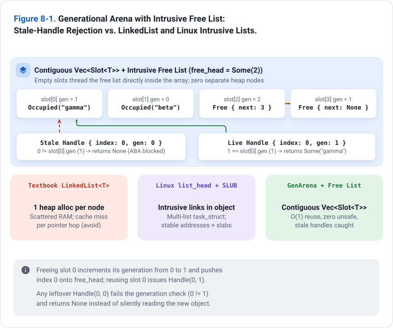
Listing 8-3. Level 2 arena: a generational arena with an intrusive free list (C++20). (code/ch08/gen_arena.cpp)
// ch08/gen_arena.cpp: Level 2 arena: a generational arena with an intrusive
// free list threaded through empty slots (C++20 counterpart to gen_arena.rs).
//
// Each Handle pairs a slot index with a generation counter. Freeing a slot
// increments its generation, so stale handles return nullptr instead of
// silently aliasing a newer object occupying the recycled slot.
#include <cassert>
#include <cstdint>
#include <cstdio>
#include <optional>
#include <string>
#include <utility>
#include <vector>
struct Handle {
uint32_t index;
uint32_t generation;
bool operator==(const Handle&) const = default;
};
template <typename T>
class GenArena {
public:
// Inserts `value` into a recycled slot in O(1), or appends a fresh slot.
Handle insert(T value) {
if (auto index = pop_free_slot()) {
Slot& slot = slots_[*index];
slot.value.emplace(std::move(value));
slot.next_free.reset();
return Handle{*index, slot.generation};
}
uint32_t index = static_cast<uint32_t>(slots_.size());
slots_.push_back(Slot{0, std::move(value), std::nullopt});
return Handle{index, 0};
}
// Looks up `handle` in O(1), returning nullptr if the handle is stale or freed.
const T* get(Handle handle) const {
if (handle.index >= slots_.size()) {
return nullptr;
}
const Slot& slot = slots_[handle.index];
if (slot.generation != handle.generation || !slot.value.has_value()) {
return nullptr;
}
return &(*slot.value);
}
// Frees `handle` in O(1), bumps its slot generation, and pushes it onto `free_head_`.
std::optional<T> remove(Handle handle) {
if (handle.index >= slots_.size()) {
return std::nullopt;
}
Slot& slot = slots_[handle.index];
// Reject stale handles and double-removes before touching the free list.
if (slot.generation != handle.generation || !slot.value.has_value()) {
return std::nullopt;
}
// Move the live object out and thread this slot onto the intrusive free list.
std::optional<T> extracted = std::move(slot.value);
slot.value.reset();
slot.next_free = free_head_;
// Advance generation so every existing copy of `handle` becomes permanently stale.
slot.generation += 1;
free_head_ = handle.index;
return extracted;
}
size_t slot_count() const { return slots_.size(); }
private:
// Production allocators overlay `value` and `next_free` inside a std::variant
// or union (as Rust's `enum Entry<T>` does) so free links consume zero extra bytes.
struct Slot {
uint32_t generation;
std::optional<T> value;
std::optional<uint32_t> next_free;
};
std::optional<uint32_t> pop_free_slot() {
if (!free_head_.has_value()) {
return std::nullopt;
}
uint32_t index = *free_head_;
free_head_ = slots_[index].next_free;
return index;
}
std::vector<Slot> slots_;
std::optional<uint32_t> free_head_ = std::nullopt;
};
int main() {
GenArena<std::string> arena;
// 1. Insert two objects into fresh slots 0 and 1 (both at generation 0).
Handle alpha = arena.insert("alpha");
Handle beta = arena.insert("beta");
assert((alpha == Handle{0, 0}));
assert((beta == Handle{1, 0}));
// 2. Remove `alpha`; slot 0 bumps to generation 1 and joins `free_head_`.
std::optional<std::string> removed = arena.remove(alpha);
assert(removed.has_value() && *removed == "alpha");
assert(!arena.remove(alpha).has_value()); // Double-remove safely ignored
// 3. Insert `gamma`; O(1) reuse of slot 0 without growing the backing vector.
Handle gamma = arena.insert("gamma");
assert((gamma == Handle{0, 1}));
assert(arena.slot_count() == 2);
// 4. Stale `alpha` handle (index 0, gen 0) is rejected instead of returning "gamma".
assert(arena.get(alpha) == nullptr);
assert(arena.get(gamma) != nullptr && *arena.get(gamma) == "gamma");
assert(arena.get(beta) != nullptr && *arena.get(beta) == "beta");
printf("reused slot %u at generation %u (backing vector slots = %zu)\n",
gamma.index, gamma.generation, arena.slot_count());
printf("stale handle (idx=0, gen=0) -> %s (ABA prevented)\n",
arena.get(alpha) == nullptr ? "nullptr" : arena.get(alpha)->c_str());
printf("live handle (idx=0, gen=1) -> \"%s\"\n", arena.get(gamma)->c_str());
}
Output 8-3. O(1) slot recycling and deterministic rejection of stale handles.
reused slot 0 at generation 1 (backing vector slots = 2)
stale handle (idx=0, gen=0) -> nullptr (ABA prevented)
live handle (idx=0, gen=1) -> "gamma"
Listing 8-4. The same zero-unsafe generational arena with intrusive free list in Rust. (code/ch08/gen_arena.rs)
// ch08/gen_arena.rs: Level 2 arena: a zero-unsafe generational arena with an
// intrusive free list threaded directly through empty slots.
//
// Each handle pairs a slot index with a generation counter. Freeing a slot
// increments its generation, so stale handles return None instead of silently
// reading a newer object that reused the same slot.
#[derive(Clone, Copy, Debug, PartialEq, Eq)]
struct Handle {
index: u32,
generation: u32,
}
enum Entry<T> {
Occupied(T),
Free { next_free: Option<u32> },
}
impl<T> Entry<T> {
fn into_value(self) -> Option<T> {
match self {
Entry::Occupied(value) => Some(value),
Entry::Free { .. } => None,
}
}
}
struct Slot<T> {
generation: u32,
entry: Entry<T>,
}
impl<T> Slot<T> {
fn is_occupied(&self) -> bool {
matches!(self.entry, Entry::Occupied(_))
}
}
struct GenArena<T> {
slots: Vec<Slot<T>>,
free_head: Option<u32>,
}
impl<T> GenArena<T> {
fn new() -> Self {
Self {
slots: Vec::new(),
free_head: None,
}
}
// Pops the head index from the intrusive free list, if any freed slot exists.
fn pop_free_slot(&mut self) -> Option<u32> {
let index = self.free_head?;
if let Entry::Free { next_free } = self.slots[index as usize].entry {
self.free_head = next_free;
}
Some(index)
}
// Inserts `value` into a recycled slot in O(1), or appends a fresh slot.
fn insert(&mut self, value: T) -> Handle {
if let Some(index) = self.pop_free_slot() {
let slot = &mut self.slots[index as usize];
slot.entry = Entry::Occupied(value);
return Handle {
index,
generation: slot.generation,
};
}
let index = self.slots.len() as u32;
self.slots.push(Slot {
generation: 0,
entry: Entry::Occupied(value),
});
Handle {
index,
generation: 0,
}
}
// Looks up `handle` in O(1), rejecting stale handles whose generation mismatches.
fn get(&self, handle: Handle) -> Option<&T> {
let slot = self.slots.get(handle.index as usize)?;
if slot.generation != handle.generation {
return None;
}
match &slot.entry {
Entry::Occupied(value) => Some(value),
Entry::Free { .. } => None,
}
}
// Frees `handle` in O(1), advances its slot's generation, and pushes it onto `free_head`.
fn remove(&mut self, handle: Handle) -> Option<T> {
let slot = self.slots.get_mut(handle.index as usize)?;
// Reject stale handles and double-removes before modifying the free list.
if slot.generation != handle.generation || !slot.is_occupied() {
return None;
}
// Thread this slot onto the front of the intrusive free list.
let next_free = self.free_head;
let old_entry = std::mem::replace(&mut slot.entry, Entry::Free { next_free });
// Bump generation so every existing copy of `handle` becomes permanently stale.
slot.generation = slot.generation.wrapping_add(1);
self.free_head = Some(handle.index);
old_entry.into_value()
}
fn slot_count(&self) -> usize {
self.slots.len()
}
}
fn main() {
let mut arena = GenArena::new();
// 1. Insert two objects into fresh slots 0 and 1 (both at generation 0).
let alpha = arena.insert(String::from("alpha"));
let beta = arena.insert(String::from("beta"));
assert_eq!(alpha, Handle { index: 0, generation: 0 });
assert_eq!(beta, Handle { index: 1, generation: 0 });
// 2. Remove `alpha`; slot 0 increments to generation 1 and joins `free_head`.
let removed = arena.remove(alpha);
assert_eq!(removed.as_deref(), Some("alpha"));
assert_eq!(arena.remove(alpha), None); // Double-remove safely ignored
// 3. Insert `gamma`; O(1) reuse of slot 0 without growing the backing Vec.
let gamma = arena.insert(String::from("gamma"));
assert_eq!(gamma, Handle { index: 0, generation: 1 });
assert_eq!(arena.slot_count(), 2);
// 4. Stale `alpha` handle (index 0, gen 0) is rejected instead of returning "gamma".
assert_eq!(arena.get(alpha), None);
assert_eq!(arena.get(gamma).map(String::as_str), Some("gamma"));
assert_eq!(arena.get(beta).map(String::as_str), Some("beta"));
println!("reused slot {} at generation {} (backing vec slots = {})",
gamma.index, gamma.generation, arena.slot_count());
println!("stale handle (idx=0, gen=0) -> {:?} (ABA prevented)", arena.get(alpha));
println!("live handle (idx=0, gen=1) -> {:?}", arena.get(gamma));
}Output 8-4.
reused slot 0 at generation 1 (backing vec slots = 2)
stale handle (idx=0, gen=0) -> None (ABA prevented)
live handle (idx=0, gen=1) -> Some("gamma")
8.2.3 Level 3: The Raw Byte Bump Allocator (mmap-Backed)
When an arena must store heterogeneous types of varying sizes and alignments, or return direct typed references rather than integer handles, the allocator operates over a raw byte buffer. A bump allocator maintains a single monotonic offset (next_offset) within its contiguous virtual region. Allocation rounds next_offset upward to the requested alignment, verifies sufficient remaining space (aligned_offset + requested_bytes <= arena_capacity), and advances next_offset by the requested size.
The computational complexity of allocation in a bump allocator is O(1), consisting of only a few arithmetic operations with zero per-object metadata overhead. This speed is traded for coarse reclamation: individual objects cannot be freed, and reset() rewinds next_offset = 0 to reclaim the entire arena at once.

Listing 8-5. Level 3 arena: an mmap-backed bump allocator with explicit alignment rounding (C++20). (code/ch08/bump.cpp)
// ch08/bump.cpp: A linear bump (arena) allocator with explicit power-of-two alignment.
// Allocations advance a single monotonic offset; individual objects cannot be freed,
// and reset() reclaims the entire arena in O(1) time.
#include <sys/mman.h>
#include <unistd.h>
#include <cassert>
#include <cstdint>
#include <cstdio>
struct BumpAllocator {
uint8_t* arena_base; // Page-aligned start address returned by mmap()
size_t arena_capacity; // Total size of the virtual mapping in bytes
size_t next_offset; // Byte offset of the next unallocated byte
static BumpAllocator create(size_t capacity_bytes) {
// Request a private, zero-initialized anonymous virtual memory region from the kernel.
// Passing nullptr lets the kernel choose the virtual base address; fd = -1 and offset = 0
// are required by POSIX when mapping anonymous (non-file-backed) memory.
void* mapped = mmap(nullptr, capacity_bytes, PROT_READ | PROT_WRITE,
MAP_PRIVATE | MAP_ANON, -1, 0);
if (mapped == MAP_FAILED) {
perror("mmap");
return {nullptr, 0, 0};
}
return {static_cast<uint8_t*>(mapped), capacity_bytes, 0};
}
// Allocates `requested_bytes` aligned upward to a power-of-two `alignment` boundary.
void* alloc(size_t requested_bytes, size_t alignment) {
// Round `next_offset` up to the smallest multiple of `alignment` >= `next_offset`.
// Example: next_offset = 11, alignment = 16:
// (11 + 15) & ~15 = 26 & 0xFFFF...FFF0 = 16 (inserts 5 bytes of padding: 11..15).
size_t aligned_offset = (next_offset + alignment - 1) & ~(alignment - 1);
if (aligned_offset + requested_bytes > arena_capacity) {
return nullptr; // Arena exhausted
}
next_offset = aligned_offset + requested_bytes;
return arena_base + aligned_offset;
}
// Reclaims all allocations simultaneously by rewinding the bump pointer to zero.
void reset() { next_offset = 0; }
// Returns the entire virtual memory mapping to the operating system.
void destroy() { munmap(arena_base, arena_capacity); }
};
int main() {
BumpAllocator allocator = BumpAllocator::create(64 * 1024);
printf("arena: %p, %zu bytes\n\n",
static_cast<void*>(allocator.arena_base), allocator.arena_capacity);
// 1. Offset 0 is already 8-byte aligned -> occupies bytes [0, 8), next_offset becomes 8.
void* first_block = allocator.alloc(8, 8);
// 2. Offset 8 is already 8-byte aligned -> occupies bytes [8, 11), next_offset becomes 11.
void* small_block = allocator.alloc(3, 8);
// 3. Offset 11 is NOT 16-byte aligned -> inserts 5 bytes of padding [11, 16),
// then allocates 16 bytes at [16, 32), advancing next_offset to 32.
void* aligned_block = allocator.alloc(16, 16);
assert(first_block == allocator.arena_base);
assert(small_block == allocator.arena_base + 8);
assert(aligned_block == allocator.arena_base + 16);
assert(allocator.next_offset == 32);
printf("alloc(8, align=8) -> %p (offset 0, bytes 0..7)\n", first_block);
printf("alloc(3, align=8) -> %p (offset 8, bytes 8..10)\n", small_block);
printf("alloc(16, align=16) -> %p (offset 16, bytes 16..31 after 5B padding)\n", aligned_block);
printf("next_offset -> %zu\n\n", allocator.next_offset);
// Resetting rewinds next_offset to 0 so the arena can be reused immediately.
allocator.reset();
void* reused_block = allocator.alloc(8, 8);
assert(reused_block == first_block);
printf("after reset, alloc(8, align=8) -> %p (reuses offset 0: yes)\n", reused_block);
allocator.destroy();
}
Output 8-5. Three allocations demonstrating 5 bytes of alignment padding, followed by an O(1) reset.
arena: 0x10b85a000, 65536 bytes
alloc(8, align=8) -> 0x10b85a000 (offset 0, bytes 0..7)
alloc(3, align=8) -> 0x10b85a008 (offset 8, bytes 8..10)
alloc(16, align=16) -> 0x10b85a010 (offset 16, bytes 16..31 after 5B padding)
next_offset -> 32
after reset, alloc(8, align=8) -> 0x10b85a000 (reuses offset 0: yes)
Listing 8-6. The same mmap-backed bump allocator in Rust. (code/ch08/bump.rs)
// ch08/bump.rs: A linear bump (arena) allocator with explicit power-of-two alignment.
use std::error::Error;
use std::io;
use std::ptr;
struct BumpAllocator {
arena_base: *mut u8, // Page-aligned start address returned by mmap()
arena_capacity: usize, // Total size of the virtual mapping in bytes
next_offset: usize, // Byte offset of the next unallocated byte
}
impl BumpAllocator {
fn create(capacity_bytes: usize) -> io::Result<BumpAllocator> {
// SAFETY: `libc::mmap` with `MAP_PRIVATE | MAP_ANON` allocates a fresh,
// zero-initialized anonymous virtual memory region of `capacity_bytes`.
// Checking `mapped != libc::MAP_FAILED` guarantees a valid page-aligned base pointer.
unsafe {
let mapped = libc::mmap(
ptr::null_mut(),
capacity_bytes,
libc::PROT_READ | libc::PROT_WRITE,
libc::MAP_PRIVATE | libc::MAP_ANON,
-1,
0,
);
if mapped == libc::MAP_FAILED {
return Err(io::Error::last_os_error());
}
Ok(BumpAllocator {
arena_base: mapped.cast::<u8>(),
arena_capacity: capacity_bytes,
next_offset: 0,
})
}
}
// Allocates `requested_bytes` aligned upward to a power-of-two `alignment` boundary.
fn alloc(&mut self, requested_bytes: usize, alignment: usize) -> Option<*mut u8> {
// Round `next_offset` up to the smallest multiple of `alignment` >= `next_offset`.
// Example: next_offset = 11, alignment = 16:
// (11 + 15) & !15 = 26 & !15 = 16 (inserts 5 bytes of padding: 11..15).
let aligned_offset = (self.next_offset + alignment - 1) & !(alignment - 1);
if aligned_offset + requested_bytes > self.arena_capacity {
return None;
}
self.next_offset = aligned_offset + requested_bytes;
// SAFETY: The bounds check `aligned_offset + requested_bytes <= self.arena_capacity`
// proves that `arena_base.add(aligned_offset)` remains strictly within the mapped arena.
Some(unsafe { self.arena_base.add(aligned_offset) })
}
// Reclaims all allocations simultaneously by rewinding the bump pointer to zero.
fn reset(&mut self) {
self.next_offset = 0;
}
}
impl Drop for BumpAllocator {
fn drop(&mut self) {
// SAFETY: `arena_base` and `arena_capacity` match the exact arguments from `mmap`.
unsafe { libc::munmap(self.arena_base.cast::<libc::c_void>(), self.arena_capacity) };
}
}
fn main() -> Result<(), Box<dyn Error>> {
let mut allocator = BumpAllocator::create(64 * 1024)?;
println!("arena: {:p}, {} bytes\n", allocator.arena_base, allocator.arena_capacity);
// 1. Offset 0 is already 8-byte aligned -> occupies bytes [0, 8), next_offset becomes 8.
let first_block = allocator.alloc(8, 8).ok_or("arena exhausted on first_block")?;
// 2. Offset 8 is already 8-byte aligned -> occupies bytes [8, 11), next_offset becomes 11.
let small_block = allocator.alloc(3, 8).ok_or("arena exhausted on small_block")?;
// 3. Offset 11 is NOT 16-byte aligned -> inserts 5 bytes of padding [11, 16),
// then allocates 16 bytes at [16, 32), advancing next_offset to 32.
let aligned_block = allocator.alloc(16, 16).ok_or("arena exhausted on aligned_block")?;
assert_eq!(first_block, allocator.arena_base);
assert_eq!(small_block as usize - allocator.arena_base as usize, 8);
assert_eq!(aligned_block as usize - allocator.arena_base as usize, 16);
assert_eq!(allocator.next_offset, 32);
println!("alloc(8, align=8) -> {first_block:p} (offset 0, bytes 0..7)");
println!("alloc(3, align=8) -> {small_block:p} (offset 8, bytes 8..10)");
println!("alloc(16, align=16) -> {aligned_block:p} (offset 16, bytes 16..31 after 5B padding)");
println!("next_offset -> {}\n", allocator.next_offset);
// Resetting rewinds next_offset to 0 so the arena can be reused immediately.
allocator.reset();
let reused_block = allocator.alloc(8, 8).ok_or("arena exhausted after reset")?;
assert_eq!(reused_block, first_block);
println!("after reset, alloc(8, align=8) -> {reused_block:p} (reuses offset 0: yes)");
Ok(())
}Output 8-6.
arena: 0x102252000, 65536 bytes
alloc(8, align=8) -> 0x102252000 (offset 0, bytes 0..7)
alloc(3, align=8) -> 0x102252008 (offset 8, bytes 8..10)
alloc(16, align=16) -> 0x102252010 (offset 16, bytes 16..31 after 5B padding)
next_offset -> 32
after reset, alloc(8, align=8) -> 0x102252000 (reuses offset 0: yes)
Extending a raw byte bump allocator into a production typed Rust arena (such as bumpalo) introduces three subtle language and memory-model invariants:
- Shared-borrow allocation (
&selfto&'arena mut T): In Listing 8-6,alloc(&mut self, ...)requires exclusive access to the allocator, preventing callers from holding multiple live references returned by the same arena simultaneously. Production arenas wrap the bump cursor in interior mutability (Cell<*mut u8>) soalloc<T>(&self, value: T) -> &mut Taccepts&self. Every returned reference carries the lifetime of&self, enabling arbitrary cross-referencing graphs while the borrow checker statically forbids any reference from outliving the arena; becauseCellis neitherSendnorSync, single-threaded ownership is enforced at compile time. - Pointer provenance: Storing the active cursor as a typed raw pointer (
*mut u8) and computing alignment viaptr::align_offsetandptr::add, rather than casting pointers tousizeintegers and back, preserves strict pointer provenance under Rust’s Stacked/Tree Borrows models and verifies cleanly under Miri. - Destructor omission: Rewinding or unmapping a raw bump arena reclaims the backing bytes without executing per-object destructors (
Dropin Rust,~T()in C++). Placing heap-owning types such asVecorStringinside a raw bump arena leaks their secondary heap allocations unless the arena records an explicit drop-function list (as intyped-arena) or restricts stored values to plain data and arena-scoped references.
8.2.4 Backing Store Trade-Off: Global-Allocator Chunks (malloc / std::alloc) vs. Direct mmap
Listings 8-5 and 8-6 call mmap directly to expose the exact OS boundary. In production systems, however, choosing between acquiring chunks from the global allocator (malloc / std::alloc) and mapping virtual memory directly with mmap depends on workload geometry:
| Dimension | Global-Allocator Chunks (malloc / std::alloc, e.g., 64 KiB) | Direct mmap Virtual Reservation (MAP_NORESERVE) |
|---|---|---|
| Syscall & page-fault overhead | Amortized; small chunks (64 KiB) are served from warm, already-faulted user-space arenas with zero kernel traps. | Each new mmap invokes a kernel trap and triggers minor page faults upon first write to every freshly mapped page. |
| Contiguity & oversized requests | Requires a chunk list (Vec<(NonNull<u8>, Layout)>) and a cold grow() path; leaves tail waste at chunk boundaries. | Single contiguous virtual range (e.g., 64 GiB reserved, committed lazily on demand); no chunk list and no relocation. |
Reclamation on reset() | Rewinding a chunked arena retains committed RAM in user space until the arena itself is dropped. | madvise(base, used, MADV_DONTNEED) returns physical frames to the kernel while keeping the virtual range mapped and zeroed on reuse. |
| Hardware page control | Controlled indirectly by the global allocator. | Direct access to huge pages (MAP_HUGETLB / MADV_HUGEPAGE) and hardware guard pages (mprotect(..., PROT_NONE)). |
| Portability & tooling | Fully portable across POSIX and Windows; automatically checked by AddressSanitizer, Valgrind, and Miri. | OS-specific (mmap vs. VirtualAlloc(MEM_RESERVE)); may fail under strict overcommit (vm.overcommit_memory=2) and requires manual ASan poisoning. |
As a general rule, application-level arenas such as bumpalo allocate geometrically growing chunks (starting around 64 KiB) from malloc or std::alloc, avoiding syscall overhead and preserving sanitizer visibility. Direct mmap reserve-then-commit arenas are reserved for systems requiring single-span address stability, explicit huge-page or guard-page control, or immediate OS frame reclamation, most notably database buffer pools, JIT code heaps, and game-engine frame allocators.
8.3 Explicit Management: Free-List Allocation
To support the independent deallocation of individual objects, an allocator must track the size and ownership state of each allocated region. A free-list allocator accomplishes this by embedding an in-band BlockHeader immediately preceding every user payload in memory:
[ BlockHeader (24 bytes): payload_bytes | is_free | next_block ] [ User Payload (payload_bytes) ]
^ ^
header pointer pointer returned to caller
This layout establishes two direct pointer-arithmetic invariants:
- On
alloc(): After finding a suitable freeBlockHeader* current, the allocator advances past the 24-byte header (current + 1in C++ pointer arithmetic, orcurrent.cast::<u8>().add(HEADER_BYTES)in Rust) and returns that payload address to the caller. - On
free(user_payload_ptr): Because the caller supplies only the payload pointer, the allocator subtractssizeof(BlockHeader)(24 bytes) fromuser_payload_ptrto recover the hiddenBlockHeader, readspayload_bytes, and setsis_free = true.
8.3.1 First-Fit Search, Splitting, and Coalescing
The allocator’s performance and fragmentation profile are governed by three policies:
- Allocation Policy (First-Fit): Starting at
head_block,alloc(requested_bytes)traverses the block list in address order and selects the first block satisfyingis_free && payload_bytes >= requested_bytes. - Splitting (Suppressing Internal Fragmentation): When a chosen free block is significantly larger than
requested_bytes(for example, satisfyingalloc(150)inside a 200-byte hole), handing out all 200 bytes wastes 50 bytes of internal fragmentation. Wheneverleftover_bytes = payload_bytes - requested_bytes >= sizeof(BlockHeader) + MIN_SPLIT_PAYLOAD(24 + 16 = 40bytes), the allocator writes a newBlockHeaderimmediately after the 150-byte payload, carving a reusable free block of200 - 150 - 24 = 26bytes and linking it into the list. - Coalescing (Eliminating External Fragmentation): Freeing adjacent blocks without merging them shatters the arena into small, unusable holes, causing external fragmentation. Upon
free(),coalesce_adjacent_free_blocks()verifies physical contiguity (neighbor == current + sizeof(BlockHeader) + current->payload_bytes) and merges consecutive free blocks into a single unified region, reclaiming both the neighbor’s payload and its redundant 24-byte header (150 + 24 + 26 = 200bytes restored).
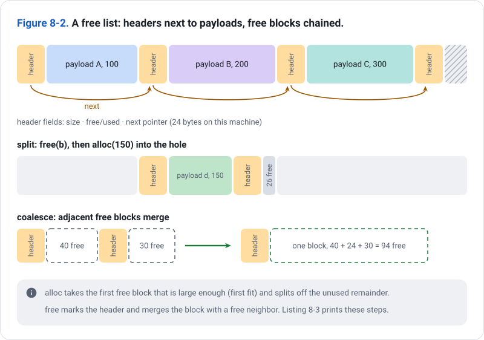
Listing 8-7. A first-fit free-list allocator with splitting and coalescing (C++20). (code/ch08/free_list.cpp)
// ch08/free_list.cpp: First-fit free-list allocator with in-band headers,
// block splitting, and adjacent free-block coalescing.
// Written with flat control flow (early returns and small helpers) to keep logic clear.
#include <sys/mman.h>
#include <unistd.h>
#include <cassert>
#include <cstdint>
#include <cstdio>
// Metadata stored immediately before every user payload (24 bytes on 64-bit systems).
struct BlockHeader {
size_t payload_bytes; // Usable payload bytes immediately following this header
bool is_free; // true = available; false = owned by caller
BlockHeader* next_block; // Next block in physical address order inside the arena
};
constexpr size_t kMinSplitPayload = 16;
struct FreeListHeap {
uint8_t* arena_base;
size_t arena_capacity;
BlockHeader* head_block;
static FreeListHeap create(size_t capacity_bytes) {
void* mapped = mmap(nullptr, capacity_bytes, PROT_READ | PROT_WRITE,
MAP_PRIVATE | MAP_ANON, -1, 0);
if (mapped == MAP_FAILED) {
perror("mmap");
return {nullptr, 0, nullptr};
}
auto* initial_header = static_cast<BlockHeader*>(mapped);
initial_header->payload_bytes = capacity_bytes - sizeof(BlockHeader);
initial_header->is_free = true;
initial_header->next_block = nullptr;
return {static_cast<uint8_t*>(mapped), capacity_bytes, initial_header};
}
// Splits `block` if the leftover space fits both a new BlockHeader and >= 16 payload bytes.
static void split_if_large_enough(BlockHeader* block, size_t requested_bytes) {
size_t leftover_bytes = block->payload_bytes - requested_bytes;
if (leftover_bytes < sizeof(BlockHeader) + kMinSplitPayload) {
return;
}
// `block + 1` steps past the 24-byte header to the first byte of the user payload.
uint8_t* payload_start = reinterpret_cast<uint8_t*>(block + 1);
auto* split_header = reinterpret_cast<BlockHeader*>(payload_start + requested_bytes);
split_header->payload_bytes = leftover_bytes - sizeof(BlockHeader);
split_header->is_free = true;
split_header->next_block = block->next_block;
block->payload_bytes = requested_bytes;
block->next_block = split_header;
}
// Returns true when `current` and `neighbor` are both free and physically contiguous.
static bool can_coalesce(const BlockHeader* current, const BlockHeader* neighbor) {
if (!current->is_free || !neighbor->is_free) return false;
const uint8_t* current_end =
reinterpret_cast<const uint8_t*>(current + 1) + current->payload_bytes;
return reinterpret_cast<const uint8_t*>(neighbor) == current_end;
}
// First-fit allocation: returns a payload pointer or nullptr if no free block fits.
void* alloc(size_t requested_bytes) {
for (BlockHeader* current = head_block; current != nullptr; current = current->next_block) {
if (!current->is_free || current->payload_bytes < requested_bytes) {
continue;
}
split_if_large_enough(current, requested_bytes);
current->is_free = false;
return reinterpret_cast<uint8_t*>(current + 1);
}
return nullptr;
}
// Releases a payload pointer and merges any physically adjacent free blocks.
void free(void* user_payload_ptr) {
// Step backward by sizeof(BlockHeader) (24 bytes) to recover the hidden header.
auto* header = reinterpret_cast<BlockHeader*>(
static_cast<uint8_t*>(user_payload_ptr) - sizeof(BlockHeader));
header->is_free = true;
coalesce_adjacent_free_blocks();
}
void coalesce_adjacent_free_blocks() {
BlockHeader* current = head_block;
while (current != nullptr && current->next_block != nullptr) {
BlockHeader* neighbor = current->next_block;
if (!can_coalesce(current, neighbor)) {
current = neighbor;
continue;
}
// Absorb both the neighbor's payload and its redundant 24-byte header.
current->payload_bytes += sizeof(BlockHeader) + neighbor->payload_bytes;
current->next_block = neighbor->next_block;
}
}
void dump_block_map() const {
printf(" block map:\n");
int block_index = 0;
for (BlockHeader* current = head_block; current != nullptr;
current = current->next_block, ++block_index) {
size_t byte_offset =
static_cast<size_t>(reinterpret_cast<uint8_t*>(current) - arena_base);
printf(" [%d] offset %zu payload %zu %s\n",
block_index, byte_offset, current->payload_bytes,
current->is_free ? "free" : "used");
}
}
void destroy() { munmap(arena_base, arena_capacity); }
};
int main() {
FreeListHeap heap = FreeListHeap::create(256 * 1024);
printf("arena: %p, %zu bytes, header %zu bytes\n\n",
static_cast<void*>(heap.arena_base), heap.arena_capacity, sizeof(BlockHeader));
void* block_a = heap.alloc(100);
void* block_b = heap.alloc(200);
void* block_c = heap.alloc(300);
printf("after alloc(100), alloc(200), alloc(300):\n");
heap.dump_block_map();
heap.free(block_b);
printf("\nafter free(block_b):\n");
heap.dump_block_map();
void* block_d = heap.alloc(150);
assert(block_d == block_b);
printf("\nafter alloc(150) into block_b's hole:\n");
heap.dump_block_map();
printf("block_d reuses block_b's address: yes\n");
heap.free(block_a);
heap.free(block_d);
heap.free(block_c);
assert(heap.head_block->is_free && heap.head_block->next_block == nullptr);
printf("\nafter freeing all blocks (coalesced back to 1 free block):\n");
heap.dump_block_map();
heap.destroy();
}
Output 8-7. The block map after initial allocations, free, split reuse, and full coalescing.
arena: 0x108a18000, 262144 bytes, header 24 bytes
after alloc(100), alloc(200), alloc(300):
block map:
[0] offset 0 payload 100 used
[1] offset 124 payload 200 used
[2] offset 348 payload 300 used
[3] offset 672 payload 261448 free
after free(block_b):
block map:
[0] offset 0 payload 100 used
[1] offset 124 payload 200 free
[2] offset 348 payload 300 used
[3] offset 672 payload 261448 free
after alloc(150) into block_b's hole:
block map:
[0] offset 0 payload 100 used
[1] offset 124 payload 150 used
[2] offset 298 payload 26 free
[3] offset 348 payload 300 used
[4] offset 672 payload 261448 free
block_d reuses block_b's address: yes
after freeing all blocks (coalesced back to 1 free block):
block map:
[0] offset 0 payload 262120 free
Listing 8-8. The same free-list allocator in Rust. (code/ch08/free_list.rs)
// ch08/free_list.rs: First-fit free-list allocator with in-band headers,
// block splitting, and adjacent free-block coalescing in Rust.
// Written with flat control flow (early returns and small helpers) to keep logic clear.
use std::error::Error;
use std::io;
use std::ptr;
#[derive(Clone, Copy)]
struct BlockHeader {
payload_bytes: usize,
is_free: bool,
next_block: *mut BlockHeader,
}
const HEADER_BYTES: usize = std::mem::size_of::<BlockHeader>();
const MIN_SPLIT_PAYLOAD: usize = 16;
struct FreeListHeap {
arena_base: *mut u8,
arena_capacity: usize,
head_block: *mut BlockHeader,
}
impl FreeListHeap {
fn create(capacity_bytes: usize) -> io::Result<FreeListHeap> {
// SAFETY: `mmap` allocates a page-aligned, zero-initialized anonymous region.
// After verifying `mapped != MAP_FAILED`, we initialize a single root BlockHeader at offset 0.
unsafe {
let mapped = libc::mmap(
ptr::null_mut(),
capacity_bytes,
libc::PROT_READ | libc::PROT_WRITE,
libc::MAP_PRIVATE | libc::MAP_ANON,
-1,
0,
);
if mapped == libc::MAP_FAILED {
return Err(io::Error::last_os_error());
}
let initial_header = mapped.cast::<BlockHeader>();
ptr::write(
initial_header,
BlockHeader {
payload_bytes: capacity_bytes - HEADER_BYTES,
is_free: true,
next_block: ptr::null_mut(),
},
);
Ok(FreeListHeap {
arena_base: mapped.cast::<u8>(),
arena_capacity: capacity_bytes,
head_block: initial_header,
})
}
}
// Splits `block` if leftover bytes fit a new BlockHeader plus >= MIN_SPLIT_PAYLOAD bytes.
// SAFETY: Caller guarantees `block` is a valid initialized header with `payload_bytes >= requested_bytes`.
unsafe fn split_if_large_enough(block: *mut BlockHeader, requested_bytes: usize) {
let leftover_bytes = unsafe { (*block).payload_bytes - requested_bytes };
if leftover_bytes < HEADER_BYTES + MIN_SPLIT_PAYLOAD {
return;
}
// SAFETY: `HEADER_BYTES + requested_bytes` lies strictly inside `block`'s payload span.
unsafe {
let split_header = block
.cast::<u8>()
.add(HEADER_BYTES + requested_bytes)
.cast::<BlockHeader>();
ptr::write(
split_header,
BlockHeader {
payload_bytes: leftover_bytes - HEADER_BYTES,
is_free: true,
next_block: (*block).next_block,
},
);
(*block).payload_bytes = requested_bytes;
(*block).next_block = split_header;
}
}
// Returns true when `current` and `neighbor` are both free and physically contiguous.
// SAFETY: Caller guarantees both pointers refer to valid initialized headers inside the arena.
unsafe fn can_coalesce(current: *const BlockHeader, neighbor: *const BlockHeader) -> bool {
unsafe {
if !(*current).is_free || !(*neighbor).is_free {
return false;
}
let current_end = current
.cast::<u8>()
.add(HEADER_BYTES + (*current).payload_bytes);
neighbor.cast::<u8>() == current_end
}
}
// First-fit allocation: scans the block chain with flat guard clauses.
fn alloc(&mut self, requested_bytes: usize) -> Option<*mut u8> {
let mut current = self.head_block;
while !current.is_null() {
// SAFETY: Every pointer in the intrusive list is an initialized in-bounds BlockHeader.
unsafe {
if !(*current).is_free || (*current).payload_bytes < requested_bytes {
current = (*current).next_block;
continue;
}
Self::split_if_large_enough(current, requested_bytes);
(*current).is_free = false;
return Some(current.cast::<u8>().add(HEADER_BYTES));
}
}
None
}
// Releases a payload pointer and merges any physically adjacent free blocks.
fn free(&mut self, user_payload_ptr: *mut u8) {
// SAFETY: `user_payload_ptr` was returned by `alloc()` at `header + HEADER_BYTES`.
unsafe {
let header = user_payload_ptr.sub(HEADER_BYTES).cast::<BlockHeader>();
(*header).is_free = true;
}
self.coalesce_adjacent_free_blocks();
}
fn coalesce_adjacent_free_blocks(&mut self) {
let mut current = self.head_block;
// SAFETY: `current` and `neighbor` are valid initialized headers within the arena.
unsafe {
while !current.is_null() && !(*current).next_block.is_null() {
let neighbor = (*current).next_block;
if !Self::can_coalesce(current, neighbor) {
current = neighbor;
continue;
}
// Absorb both the neighbor's payload and its redundant 24-byte header.
(*current).payload_bytes += HEADER_BYTES + (*neighbor).payload_bytes;
(*current).next_block = (*neighbor).next_block;
}
}
}
fn dump_block_map(&self) {
println!(" block map:");
let mut current = self.head_block;
let mut block_index = 0;
// SAFETY: Read-only traversal of the validated intrusive header list.
unsafe {
while !current.is_null() {
let byte_offset = current.cast::<u8>() as usize - self.arena_base as usize;
println!(
" [{block_index}] offset {byte_offset} payload {} {}",
(*current).payload_bytes,
if (*current).is_free { "free" } else { "used" }
);
current = (*current).next_block;
block_index += 1;
}
}
}
}
impl Drop for FreeListHeap {
fn drop(&mut self) {
// SAFETY: Unmaps the exact virtual region created in `create()`.
unsafe { libc::munmap(self.arena_base.cast::<libc::c_void>(), self.arena_capacity) };
}
}
fn main() -> Result<(), Box<dyn Error>> {
let mut heap = FreeListHeap::create(256 * 1024)?;
println!(
"arena: {:p}, {} bytes, header {} bytes\n",
heap.arena_base, heap.arena_capacity, HEADER_BYTES
);
let block_a = heap.alloc(100).ok_or("heap exhausted on block_a")?;
let block_b = heap.alloc(200).ok_or("heap exhausted on block_b")?;
let block_c = heap.alloc(300).ok_or("heap exhausted on block_c")?;
println!("after alloc(100), alloc(200), alloc(300):");
heap.dump_block_map();
heap.free(block_b);
println!("\nafter free(block_b):");
heap.dump_block_map();
let block_d = heap.alloc(150).ok_or("heap exhausted on block_d")?;
assert_eq!(block_d, block_b);
println!("\nafter alloc(150) into block_b's hole:");
heap.dump_block_map();
println!("block_d reuses block_b's address: yes");
heap.free(block_a);
heap.free(block_d);
heap.free(block_c);
// SAFETY: `head_block` is always a valid initialized header spanning the coalesced arena.
unsafe {
assert!((*heap.head_block).is_free && (*heap.head_block).next_block.is_null());
}
println!("\nafter freeing all blocks (coalesced back to 1 free block):");
heap.dump_block_map();
Ok(())
}Output 8-8.
arena: 0x11009c000, 262144 bytes, header 24 bytes
after alloc(100), alloc(200), alloc(300):
block map:
[0] offset 0 payload 100 used
[1] offset 124 payload 200 used
[2] offset 348 payload 300 used
[3] offset 672 payload 261448 free
after free(block_b):
block map:
[0] offset 0 payload 100 used
[1] offset 124 payload 200 free
[2] offset 348 payload 300 used
[3] offset 672 payload 261448 free
after alloc(150) into block_b's hole:
block map:
[0] offset 0 payload 100 used
[1] offset 124 payload 150 used
[2] offset 298 payload 26 free
[3] offset 348 payload 300 used
[4] offset 672 payload 261448 free
block_d reuses block_b's address: yes
after freeing all blocks (coalesced back to 1 free block):
block map:
[0] offset 0 payload 262120 free
8.4 Production Allocator Architecture: Boundary Tags, Size Classes, and mmap
The educational free-list allocator in Listing 8-7 demonstrates core mechanics, yet exhibits three bottlenecks under multi-threaded production workloads: O(N) linear free-list search, O(N) coalescing traversal, and global lock contention across cores. Production allocators (jemalloc, tcmalloc, mimalloc, and glibc ptmalloc2) eliminate these bottlenecks through a three-tier hierarchy.
8.4.1 Knuth’s Boundary Tags for O(1) Bidirectional Coalescing
In Listing 8-7, coalescing a freed block with its preceding physical neighbor required scanning the list from head_block in O(N) time because each header links only forward. Donald Knuth’s Boundary Tag architecture eliminates linear scanning by replicating the 8-byte block descriptor (payload_bytes | allocated_bit, exploiting the fact that 16-byte aligned sizes leave the lowest 4 bits zero) as both a Header before the payload and a Footer immediately after the payload:
- Forward Coalescing (O(1)): Add
current->sizetocurrentto inspect the next physical block’s Header directly. - Backward Coalescing (O(1)): Step backward 8 bytes prior to
current’s Header to read the previous physical block’s Footer. When the footer’s allocated bit is0, subtract its encoded size to jump directly to the predecessor’s Header and merge in constant time.
8.4.2 Segregated Size Classes and Per-Thread Caches (tcache)
Rather than searching a heterogeneous list of arbitrary block sizes under a single global mutex, production allocators partition small allocations into segregated size classes (discrete fixed-size bins such as 16 B, 32 B, 48 B, 64 B, …, 4 KiB). Each bin manages a homogeneous slab of identically sized slots, eliminating external fragmentation within a size class and reducing allocation and deallocation to O(1) stack pop and push operations.
To eliminate multi-core lock contention, each thread maintains a private thread-local cache (tcache) storing pre-allocated slots for every small size class. The vast majority of small malloc() and free() calls complete in Ring 3 against thread-private cache lines with zero atomic operations and zero mutex acquisitions, contacting central arenas only when a thread-local bin empties or overflows.
8.4.3 The brk / Arena vs. mmap Allocation Threshold (M_MMAP_THRESHOLD)
Sub-allocating small objects out of persistent arenas amortizes system-call overhead, whereas placing a multi-megabyte temporary buffer inside a shared arena risks retaining large physical memory spans if a single tiny allocation remains live near the end of the arena. Production allocators enforce a size threshold (M_MMAP_THRESHOLD, typically 128 KiB):
- Allocations
< 128 KiB: Served from per-threadtcachebins and central size-class arenas backed by persistentmmap/brkspans. - Allocations
≥ 128 KiB: Routed directly to standalone kernelmmap(MAP_PRIVATE | MAP_ANON)mappings. Uponfree(), the allocator invokesmunmap()immediately, returning the physical frames directly to the operating system kernel.

Memory allocators reconcile kernel page granularity with fine-grained object lifetimes: safe index pools and raw bump allocators trade individual deallocation for O(1) bulk resets, free-list allocators enforce splitting and coalescing via in-band headers, and production allocators achieve lock-free O(1) scaling via per-thread size-class caches, Knuth boundary tags, and direct mmap above 128 KiB.
In Listing 8-4 (code/ch08/gen_arena.rs), comment out the slot.generation += 1 increment inside remove() and re-run. Observe how the stale alpha handle returns "gamma" without error from the recycled slot instead of None, demonstrating the logical ABA hazard of plain integer indices.
Returning unaligned pointers from a custom bump or free-list allocator. Omitting power-of-two rounding ((offset + A - 1) & ~(A - 1)) violates the 16-byte ABI alignment invariant, triggering undefined behavior in C++ and Rust and hardware alignment faults (SIGBUS) on strict SIMD vector loads.
9. The Kernel Boundary and the Cost of System Calls
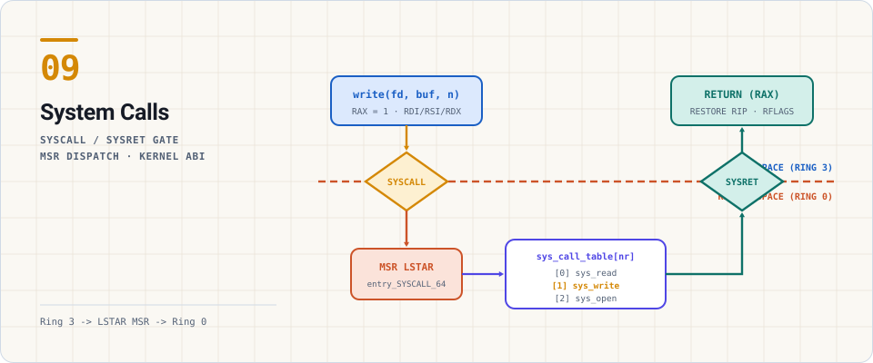
The system call represents the formal interface between user-mode application logic and the privileged operations of the operating system. It serves as the single, controlled gateway through which a process requests services, such as file Input/Output (I/O), process management, or network communication, that require hardware access or kernel-level authority.
9.1 The Mechanics of the System Call Interface
A system call is initiated via a specialized trap instruction executed by a user-mode C library wrapper (syscall on x86-64; svc #0 on ARM64). Unlike an ordinary function call, which pushes a return address onto the user stack and branches within the same privilege ring, a system call must cross the hardware isolation boundary separating Ring 3 (User Mode) from Ring 0 (Kernel Mode). The wrapper places a numeric system call identifier into a designated register (rax on x86-64 Linux; x8 on ARM64 Linux; x16 on Apple Silicon Darwin) and loads up to six arguments into fixed argument registers (rdi, rsi, rdx, r10, r8, r9 on x86-64; x0 through x5 on ARM64) before executing the trap instruction.
Upon executing the trap, the processor saves the user program counter and processor flags, elevates the Current Privilege Level (CPL) to kernel mode, switches the stack pointer to the thread’s private kernel stack (TSS.rsp0 or per-CPU kernel stack), and jumps to the kernel’s registered system call entry vector (MSR_LSTAR on x86-64; VBAR_EL1 on ARM64). The kernel indexes into its system call dispatch table (sys_call_table) using the provided identifier, executes the handler, places the result into the return register, and restores user mode via sysret or eret (Figure 9-1).
Two architectural invariants govern every crossing of this boundary. First, the kernel enforces untrusted user pointer validation: every incoming argument, including system call numbers, buffer addresses, and byte counts, is treated as potentially adversarial. Before reading or writing a user buffer, the kernel verifies that the virtual address range lies strictly below the user/kernel canonical boundary and accesses it through fault-safe copy helpers (copy_from_user and copy_to_user) so a malformed pointer returns EFAULT rather than crashing the kernel. Second, the raw Application Binary Interface (ABI) follows a strict error-return convention (errno): on Linux, a kernel handler returning a value in [-4095, -1] signals failure, with the negated value encoding the Portable Operating System Interface (POSIX) error number. The C library wrapper intercepts negative kernel returns, stores the positive error code in the thread-local variable errno, and returns -1 to application code. Checking the return value before inspecting errno is mandatory because successful system calls do not clear a stale errno from an earlier failure.

9.1.1 Why Benchmarking Uses getppid(), Not getpid()
Measuring the pure cost of a privilege transition requires invoking a minimal system call that performs almost no work inside the kernel. A natural candidate would appear to be getpid(), yet on several platforms (including macOS/Darwin and historical glibc releases) the C library caches the Process Identifier (PID) in user-space memory after the first invocation, invalidating the cache only across fork(). Calling getpid() in a tight loop would therefore measure a user-mode memory load rather than a kernel trap.
Similarly, on Linux, high-frequency queries such as clock_gettime() and gettimeofday() bypass the trap path entirely via the Virtual Dynamic Shared Object (vDSO), a read-only kernel page mapped directly into every process’s virtual address space so user code reads calibrated hardware clock counters without entering Ring 0. By contrast, getppid() cannot safely be cached in user space because the parent process may terminate asynchronously and cause the kernel to reparent the caller to PID 1. Every call to getppid() must therefore execute a genuine user-to-kernel-to-user transition.
9.2 Performance Implications and Optimization via Buffering
Why is a bare getppid() call roughly two orders of magnitude slower than an ordinary user-mode function call (~100 to 300 nanoseconds versus ~1 nanosecond)? A single syscall instruction triggers a cascade of microarchitectural work: flushing speculative instructions, switching privilege levels and stacks, saving general-purpose registers, enforcing security mitigations such as Kernel Page-Table Isolation (KPTI) (which switches CR3 page tables on Meltdown-affected processors to unmap kernel memory during user execution), and polluting Level 1 instruction caches and branch-predictor tables.
To amortize this privilege-transition penalty across high-volume I/O workloads, runtime libraries employ user-space buffering. Rather than issuing a write(2) system call for every 17-byte log line, a buffered stream (C’s FILE* with fwrite, C++’s std::ostream, or Rust’s BufWriter) appends small writes into a contiguous user-space buffer (for example, 64 KiB). Only when the buffer fills, or when the caller explicitly invokes fflush() or flush(), does the library issue a single large write(2) system call to transfer all 64 KiB into the kernel at once (Figure 9-2).
Buffering trades immediate visibility for throughput. Bytes residing in a user-space buffer are invisible to the kernel and to other processes; if the process terminates abruptly via Kill Signal (SIGKILL), _exit(), or a segmentation fault prior to flushing, buffered data is discarded without ever reaching the kernel. Mixing raw file-descriptor writes (write(fd, ...)) with buffered library writes (fwrite(..., f)) on the same underlying descriptor also produces reordered output unless the user buffer is flushed before switching interfaces.
9.2.1 The POSIX Descriptor I/O Interface (open, write, close, setvbuf)
Listings 9-3 and 9-4 compare unbuffered kernel writes against 64 KiB user-space buffering using four standard POSIX and C interfaces:
int open(const char *pathname, int flags, ... /* mode_t mode */);
ssize_t write(int fd, const void *buf, size_t count);
int close(int fd);
int setvbuf(FILE *stream, char *buf, int mode, size_t size);
Calling open(pathname, flags, [mode]) resolves pathname in the virtual filesystem, allocates an open file description in the kernel, and installs a reference to it in the lowest unused slot of the calling process’s file descriptor table. Listings 9-3 and 9-4 open /dev/null, a virtual character device whose kernel driver immediately discards every written byte and returns success, isolating pure system-call overhead from storage latency. The flags bitmask combines one access mode (O_RDONLY, O_WRONLY, or O_RDWR) with optional creation or status flags (O_CREAT, O_TRUNC, O_APPEND, O_CLOEXEC); an octal permission mode (such as 0644) is required only when O_CREAT is set. On success, open() returns a non-negative integer file descriptor (fd >= 0); on failure, it returns -1 with errno set (ENOENT, EACCES, or EMFILE).
Calling write(fd, buf, count) requests that the kernel transfer up to count bytes starting at user address buf to the resource referenced by fd. It returns a signed byte count (ssize_t, 0 <= n <= count) or -1 on error (EINTR if interrupted by a signal, EAGAIN on a full non-blocking descriptor, EPIPE on a closed pipe or socket, or ENOSPC when storage is exhausted). Because POSIX permits short writes (transferring fewer than count bytes without error on pipes, sockets, or interrupted writes), production code wraps raw write() calls in a loop advancing the buffer slice until all bytes are accepted, as shown in Listing 9-4.
When the resource is no longer needed, close(fd) releases the descriptor slot and decrements the kernel open file description’s reference count, returning 0 on success or -1 on error (EBADF or delayed EIO). To control user-space buffering on a C FILE* stream before any I/O occurs, setvbuf(stream, buf, mode, size) configures the buffering policy: passing buf = nullptr allocates an internal buffer of size bytes (64 * 1024), while mode selects full buffering (_IOFBF), line buffering (_IOLBF), or unbuffered mode (_IONBF), returning 0 on success.
Listing 9-1. A system call compared with a function call (C++20). (code/ch09/syscall_cost.cpp)
// ch09/syscall_cost.cpp: compare a system call with a plain function call.
#include <unistd.h>
#include <chrono>
#include <cstdint>
#include <cstdio>
__attribute__((noinline)) int plain_fn(int x) { return x + 1; }
int main() {
constexpr uint64_t kN = 5'000'000;
// Plain function calls: nothing leaves user mode.
uint64_t acc = 0;
auto t0 = std::chrono::steady_clock::now();
for (uint64_t i = 0; i < kN; ++i) {
acc += static_cast<uint64_t>(plain_fn(static_cast<int>(acc & 0xff)));
}
auto t1 = std::chrono::steady_clock::now();
double fn_ns =
std::chrono::duration<double, std::nano>(t1 - t0).count() / kN;
// System calls: each one traps into the kernel and back. We use getppid(),
// not getpid(): on macOS libc caches getpid() after the first call, so a
// getpid() loop would measure a library lookup, not a trap.
pid_t pid = 0;
auto t2 = std::chrono::steady_clock::now();
for (uint64_t i = 0; i < kN; ++i) {
pid = getppid();
}
auto t3 = std::chrono::steady_clock::now();
double sys_ns =
std::chrono::duration<double, std::nano>(t3 - t2).count() / kN;
printf("plain function call : %7.1f ns\n", fn_ns);
printf("getppid() system call: %7.1f ns\n", sys_ns);
printf("ratio : %7.1fx\n", sys_ns / fn_ns);
printf("(parent pid %d, checksum %llu)\n", pid,
static_cast<unsigned long long>(acc));
}
Output 9-1. One run on the verification machine.
plain function call : 2.1 ns
getppid() system call: 586.8 ns
ratio : 277.2x
(parent pid 63901, checksum 1279998207)
Listing 9-2. The same comparison in Rust. (code/ch09/syscall_cost.rs)
// ch09/syscall_cost.rs: the same comparison in Rust.
use std::hint::black_box;
use std::time::Instant;
#[inline(never)]
fn plain_fn(x: i32) -> i32 {
x + 1
}
fn main() {
const N: u64 = 5_000_000;
// Plain function calls: nothing leaves user mode.
let mut acc: u64 = 0;
let t0 = Instant::now();
for _ in 0..N {
acc += plain_fn(black_box((acc & 0xff) as i32)) as u64;
}
let fn_ns = t0.elapsed().as_nanos() as f64 / N as f64;
// System calls: each one traps into the kernel and back. We use getppid(),
// not getpid(): on macOS libc caches getpid() after the first call, so a
// getpid() loop would measure a library lookup, not a trap.
let mut ppid: libc::pid_t = 0;
let t1 = Instant::now();
for _ in 0..N {
// SAFETY: POSIX `getppid()` executes a pure user-to-kernel mode switch (ring 3 -> ring 0).
// It requires no memory pointers and cannot fail or corrupt process state.
// We measure `getppid()` rather than `getpid()` because modern macOS libSystem caches
// `getpid()` in user-space TLS after the initial call, which would measure a simple
// memory load rather than a full CPU hardware trap and context transition.
ppid = unsafe { libc::getppid() };
}
let sys_ns = t1.elapsed().as_nanos() as f64 / N as f64;
println!("plain function call : {fn_ns:7.1} ns");
println!("getppid() system call: {sys_ns:7.1} ns");
println!("ratio : {:7.1}x", sys_ns / fn_ns);
println!("(parent pid {ppid}, checksum {acc})");
}Output 9-2.
plain function call : 1.8 ns
getppid() system call: 582.7 ns
ratio : 327.7x
(parent pid 63901, checksum 1279998207)

Listing 9-3. 200,000 small writes, unbuffered and buffered (C++20). (code/ch09/write_buffered.cpp)
// ch09/write_buffered.cpp: many small writes, buffered and unbuffered.
#include <fcntl.h>
#include <unistd.h>
#include <chrono>
#include <cstdio>
int main() {
constexpr int kN = 200'000;
const char msg[] = "0123456789abcdef\n"; // 17 bytes
int fd = open("/dev/null", O_WRONLY);
if (fd < 0) {
perror("open");
return 1;
}
// Unbuffered: one write(2) system call per iteration.
auto t0 = std::chrono::steady_clock::now();
for (int i = 0; i < kN; ++i) {
write(fd, msg, sizeof msg - 1);
}
auto t1 = std::chrono::steady_clock::now();
double raw_ms = std::chrono::duration<double, std::milli>(t1 - t0).count();
// Buffered: stdio accumulates in a 64 KiB buffer, then flushes once.
FILE* f = fopen("/dev/null", "w");
setvbuf(f, nullptr, _IOFBF, 64 * 1024);
auto t2 = std::chrono::steady_clock::now();
for (int i = 0; i < kN; ++i) {
fwrite(msg, 1, sizeof msg - 1, f);
}
fflush(f);
auto t3 = std::chrono::steady_clock::now();
double buf_ms = std::chrono::duration<double, std::milli>(t3 - t2).count();
printf("write(2) into /dev/null, %d x 17 bytes : %7.1f ms\n", kN, raw_ms);
printf("fwrite buffered, %d x 17 bytes : %7.1f ms\n", kN, buf_ms);
close(fd);
fclose(f);
}
Output 9-3.
write(2) into /dev/null, 200000 x 17 bytes : 274.3 ms
fwrite buffered, 200000 x 17 bytes : 12.0 ms
Listing 9-4. The same comparison in Rust, with write(2) and BufWriter. (code/ch09/write_buffered.rs)
// ch09/write_buffered.rs: the same comparison with raw write(2) and BufWriter.
use std::fs::File;
use std::io::{BufWriter, Write};
use std::time::Instant;
const N: usize = 200_000;
const MSG: &[u8] = b"0123456789abcdef\n"; // 17 bytes
fn main() -> std::io::Result<()> {
// SAFETY: The path string literal is static, null-terminated, and safely cast
// to a C-compatible pointer. `O_WRONLY` is a valid POSIX file flag.
let fd = unsafe {
libc::open(b"/dev/null\0".as_ptr() as *const libc::c_char, libc::O_WRONLY)
};
if fd < 0 {
eprintln!("open failed");
std::process::exit(1);
}
// Unbuffered: one write(2) system call per iteration.
let t0 = Instant::now();
for _ in 0..N {
let mut written = 0usize;
while written < MSG.len() {
// SAFETY:
// 1. `fd` is verified valid and open for writing.
// 2. `MSG[written..]` references initialized, static read-only memory.
// 3. Length `MSG.len() - written` accurately describes the remaining slice,
// preventing out-of-bounds kernel memory reads.
let n = unsafe {
libc::write(
fd,
MSG[written..].as_ptr() as *const libc::c_void,
MSG.len() - written,
)
};
if n <= 0 {
break;
}
written += n as usize;
}
}
let raw_ms = t0.elapsed().as_secs_f64() * 1000.0;
// Buffered: BufWriter accumulates in a 64 KiB buffer, then flushes once.
let f = File::create("/dev/null")?;
let mut w = BufWriter::with_capacity(64 * 1024, f);
let t1 = Instant::now();
for _ in 0..N {
w.write_all(MSG)?;
}
w.flush()?;
let buf_ms = t1.elapsed().as_secs_f64() * 1000.0;
println!("write(2) into /dev/null, {N} x 17 bytes : {raw_ms:7.1} ms");
println!("BufWriter, {N} x 17 bytes : {buf_ms:7.1} ms");
// SAFETY: `fd` is a valid open file descriptor returned by `open()`. Closing it releases
// the kernel file description ref-count and frees the file descriptor table entry.
unsafe { libc::close(fd) };
Ok(())
}Output 9-4.
write(2) into /dev/null, 200000 x 17 bytes : 276.0 ms
BufWriter, 200000 x 17 bytes : 0.6 ms
Crossing the Ring 3 to Ring 0 privilege boundary costs roughly 100× more than an ordinary function call. High-throughput systems software amortizes this cost by batching small operations into large user-space buffers (64 KiB BufWriter), bypassing traps via vDSO, or submitting batches through shared-memory rings (io_uring).
Modify Listing 9-3 (code/ch09/write_buffered.cpp) to sweep the buffer size passed to setvbuf() across 256, 4,096, 65,536, and 1,048,576 bytes. Observe how wall-clock time drops steeply up to 64 KiB (as syscall count falls 256×) and then plateaus once user-space memcpy dominates.
Inspecting errno without first verifying that the system call returned -1. Successful POSIX calls never clear errno, so reading errno after a successful write() or open() surfaces a stale error code left behind by an unrelated earlier library call.
10. Asynchronous Notifications and Signal Semantics
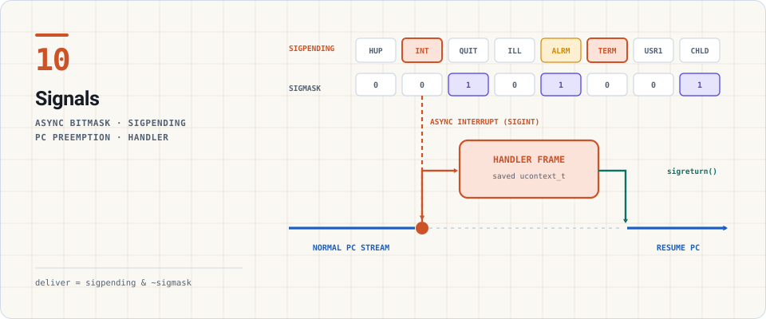
A signal serves as the primary mechanism for asynchronous notification within a process, acting as the software analogue to a hardware interrupt. Generated by hardware exceptions (Segmentation Violation (SIGSEGV), Floating-Point Exception (SIGFPE)), terminal controls (Interrupt (SIGINT), Terminal Stop (SIGTSTP)), child lifecycle events (Child Status Changed (SIGCHLD)), or explicit inter-process signaling (User-Defined Signal 1 (SIGUSR1), Terminate (SIGTERM)), a signal compels the kernel to suspend the target thread’s normal instruction stream and divert execution to a designated disposition.
10.1 The Signal Lifecycle: Generation, Pending, and Delivery
The lifecycle of every standard Portable Operating System Interface (POSIX) signal progresses through three ordered phases (Figure 10-1):
- Generation: An event occurs and the kernel sets the bit corresponding to that signal number inside the target process’s (or thread’s) pending bitmask. Because standard signals (
1through31) are represented by a single bit per signal rather than a queue (Figure 10-2), pending signals coalesce: if fiveSIGCHLDorSIGUSR1signals arrive while the signal is blocked or before the process is scheduled, the pending bitmask records only a single1bit, and the handler runs once upon delivery. - Masking (Blocking): Each thread maintains its own signal mask (blocked set), a bitmask listing signals temporarily deferred. While a signal’s bit is set in the mask, the signal remains recorded in the pending set without interrupting execution. Kill (
SIGKILL, 9) and Stop (SIGSTOP, 19) can never be caught, blocked, or ignored, guaranteeing that the kernel and system administrator retain unconditional process control. - Delivery: Whenever the kernel prepares to transition a thread back from Ring 0 to Ring 3 (at the end of a system call or timer interrupt), it computes
deliverable = pending & ~blocked(Figure 10-2). If any bit is set, the kernel clears that bit inpending, constructs a synthetic signal frame on the thread’s user stack saving the interrupted register context, and redirects the user program counter to the registered disposition (either a default kernel action such as termination or core dump, ignore, or a user-supplied signal handler). When the handler returns, a trampoline invokessigreturn(2)to restore the interrupted registers and resume normal execution.


10.2 Constraints on Asynchronous Execution and Async-Signal-Safety
Signals introduce a subtle and often underestimated concurrency hazard: asynchronous re-entrancy on a single thread. Even in a strictly single-threaded program with zero mutexes, a signal handler can preempt main-line code between any two machine instructions while sharing the exact same address space and call stack. If the interrupted thread was halfway through updating malloc’s internal free-list pointers or holding a stdio buffer lock inside printf, and the signal handler invokes malloc or printf on that same thread, the thread immediately self-deadlocks or corrupts heap metadata.
POSIX therefore defines a strict allowlist of async-signal-safe functions (documented in signal-safety(7)) that are guaranteed safe to invoke from a handler because they are re-entrant or issue raw kernel traps directly without acquiring user-space locks. Allowed operations include write(2), waitpid(2), _exit(2), and lock-free atomic stores; forbidden operations include malloc, free, printf, std::mutex::lock, and pthread_mutex_lock.
Production systems software eliminates re-entrancy hazards by keeping signal handlers minimal. In C and C++, a handler stores a flag into a global variable declared volatile sig_atomic_t, where sig_atomic_t guarantees indivisible single-instruction loads and stores and volatile prevents the compiler from caching the variable in a register across loop iterations. In Rust, a handler stores into a static AtomicBool or AtomicI32 with Ordering::Relaxed (or Release/Acquire when publishing state). Any handler that invokes a fallible system call such as waitpid() must also save errno on entry and restore it before returning so interrupted main-line code never observes a clobbered error code. High-concurrency daemons often go one step further, blocking signals in all threads and converting them into synchronous event-loop notifications via signalfd on Linux, EVFILT_SIGNAL in kqueue, or a self-pipe write(2).
10.2.1 The Signal Configuration Interface (sigaction, sigprocmask, raise)
Older Unix code used signal(2), whose semantics diverged dangerously across operating systems (resetting handlers to SIG_DFL after a single delivery on System V while keeping them installed on Berkeley Software Distribution (BSD) kernels). Modern systems programming exclusively uses sigaction(2), which exposes every delivery property explicitly through struct sigaction:
struct sigaction {
void (*sa_handler)(int); // Simple handler, SIG_DFL, or SIG_IGN
void (*sa_sigaction)(int, siginfo_t *, void *); // Extended handler when SA_SIGINFO is set
sigset_t sa_mask; // Extra signals blocked while handler runs
int sa_flags; // Bitmask of delivery behavior flags
};
int sigaction(int signum, const struct sigaction *act, struct sigaction *oldact);
int sigemptyset(sigset_t *set);
int sigaddset(sigset_t *set, int signum);
int sigprocmask(int how, const sigset_t *set, sigset_t *oldset);
int raise(int sig);
Inside struct sigaction, sa_handler registers either a user callback void handler(int sig) or the sentinels SIG_DFL (default kernel action) and SIG_IGN (ignore); setting SA_SIGINFO in sa_flags selects the three-argument sa_sigaction callback instead (both fields typically share a C union, so callers populate only one). The sa_mask field specifies additional signals blocked while the handler runs (by default, the kernel also blocks the delivered signal itself unless SA_NODEFER is set); callers must always initialize sa_mask with sigemptyset(&sa.sa_mask) so uninitialized stack bytes do not block arbitrary signals. Useful sa_flags include SA_RESTART (automatically restarting slow blocking calls such as read, write, or waitpid instead of failing with EINTR) and SA_NOCLDSTOP (suppressing SIGCHLD on job-control stops and resumes).
Calling sigaction(signum, act, oldact) atomically installs act for signum (any signal except SIGKILL and SIGSTOP) and optionally saves the prior disposition into *oldact, returning 0 on success or -1 on error (EINVAL, EFAULT). Because the bit layout of sigset_t varies across kernels (64 bits on Linux; 32 bits on Darwin/BSD), callers construct masks exclusively with sigemptyset(&set) and sigaddset(&set, signum). Updating the calling thread’s blocked mask is performed atomically via sigprocmask(how, set, oldset) (or pthread_sigmask in multi-threaded programs), where how is SIG_BLOCK (mask |= *set), SIG_UNBLOCK (mask &= ~(*set)), or SIG_SETMASK (mask = *set), and oldset captures the prior mask for later restoration. If SIG_UNBLOCK exposes a signal waiting in the pending bitmask, the kernel delivers at least one pending unblocked signal before sigprocmask() returns to user space. Finally, raise(sig) delivers sig to the calling thread itself (equivalent to kill(getpid(), sig) in a single-threaded process).
Listing 10-1. Blocking, sending, and unblocking a signal (C++20). (code/ch10/signals.cpp)
// ch10/signals.cpp: block a signal, watch it stay pending, then deliver it.
#include <csignal>
#include <unistd.h>
#include <cstdio>
static volatile sig_atomic_t g_got_usr1 = 0;
static volatile sig_atomic_t g_got_int = 0;
static void on_usr1(int) { g_got_usr1 = 1; }
static void on_int(int) { g_got_int = 1; }
int main() {
struct sigaction sa {};
sa.sa_handler = on_usr1;
sigemptyset(&sa.sa_mask);
sigaction(SIGUSR1, &sa, nullptr);
sa.sa_handler = on_int;
sigaction(SIGINT, &sa, nullptr);
// Block SIGUSR1, send it to ourselves, and observe that it stays pending.
sigset_t set, oldset;
sigemptyset(&set);
sigaddset(&set, SIGUSR1);
sigprocmask(SIG_BLOCK, &set, &oldset);
raise(SIGUSR1); // queued, not delivered
printf("after raise while blocked: handled=%d\n", static_cast<int>(g_got_usr1));
sigprocmask(SIG_UNBLOCK, &set, nullptr); // delivery happens here
printf("after unblock: handled=%d\n", static_cast<int>(g_got_usr1));
raise(SIGINT); // delivered immediately
printf("after SIGINT: handled=%d\n", static_cast<int>(g_got_int));
sigprocmask(SIG_SETMASK, &oldset, nullptr);
}
Output 10-1. The handler runs only after the signal is unblocked.
after raise while blocked: handled=0
after unblock: handled=1
after SIGINT: handled=1
Listing 10-2. The same steps in Rust, using the libc crate. (code/ch10/signals.rs)
// ch10/signals.rs: the same block-then-deliver sequence in Rust.
use std::mem;
use std::ptr;
use std::sync::atomic::{AtomicBool, Ordering};
static GOT_USR1: AtomicBool = AtomicBool::new(false);
static GOT_INT: AtomicBool = AtomicBool::new(false);
extern "C" fn on_usr1(_: libc::c_int) {
GOT_USR1.store(true, Ordering::Relaxed);
}
extern "C" fn on_int(_: libc::c_int) {
GOT_INT.store(true, Ordering::Relaxed);
}
fn main() {
// SAFETY:
// 1. Asynchronous Execution Safety: Signal handlers preempt execution on the same thread stack.
// Our signal callbacks (`on_usr1`, `on_int`) strictly perform atomic store operations
// (`AtomicBool::store`), which compile to lock-free instructions and are POSIX async-signal-safe.
// 2. Struct Validity: `sa` is zero-initialized and configured with an empty signal mask.
// 3. Mask Consistency: `sigprocmask` safely alternates the thread's signal disposition
// between blocked and unblocked states using valid stack-allocated `sigset_t` bitmasks.
unsafe {
let mut sa: libc::sigaction = mem::zeroed();
sa.sa_sigaction = on_usr1 as *const () as usize;
libc::sigemptyset(&mut sa.sa_mask);
libc::sigaction(libc::SIGUSR1, &sa, ptr::null_mut());
sa.sa_sigaction = on_int as *const () as usize;
libc::sigaction(libc::SIGINT, &sa, ptr::null_mut());
// Block SIGUSR1, send it to ourselves, and observe that it stays pending.
let mut set: libc::sigset_t = mem::zeroed();
let mut oldset: libc::sigset_t = mem::zeroed();
libc::sigemptyset(&mut set);
libc::sigaddset(&mut set, libc::SIGUSR1);
libc::sigprocmask(libc::SIG_BLOCK, &set, &mut oldset);
libc::raise(libc::SIGUSR1); // queued, not delivered
println!(
"after raise while blocked: handled={}",
GOT_USR1.load(Ordering::Relaxed)
);
libc::sigprocmask(libc::SIG_UNBLOCK, &set, ptr::null_mut()); // delivery here
println!("after unblock: handled={}", GOT_USR1.load(Ordering::Relaxed));
libc::raise(libc::SIGINT); // delivered immediately
println!("after SIGINT: handled={}", GOT_INT.load(Ordering::Relaxed));
libc::sigprocmask(libc::SIG_SETMASK, &oldset, ptr::null_mut());
}
}Output 10-2.
after raise while blocked: handled=false
after unblock: handled=true
after SIGINT: handled=true
10.3 Process Lifecycle Synchronization: SIGCHLD and Reaping
Whenever a child process terminates, the kernel retains its zombie Process Control Block (PCB) (Chapter 3) and generates SIGCHLD for the parent process. By default, SIGCHLD is ignored, requiring the parent to call waitpid() synchronously. Installing a SIGCHLD handler allows an event-driven server or supervisor to reap terminated children asynchronously without blocking its main loop.
Two signal properties dictate the exact shape of every correct SIGCHLD handler. First, because standard pending signals coalesce into a single bit, if three worker children exit while the parent is inside the handler or briefly unscheduled, the kernel delivers only one SIGCHLD. Calling waitpid() once per handler invocation would permanently leak two zombies. The handler must therefore drain all terminated children in a non-blocking loop (while (waitpid(-1, &status, WNOHANG) > 0)), reaping every zombie’s Process Identifier (PID) until waitpid() returns 0 (live children remain) or -1 with errno = ECHILD (no children remain). Second, setting sa.sa_flags = SA_RESTART ensures that an asynchronous SIGCHLD arriving while the parent is blocked inside accept(), read(), or sleep() resumes the interrupted call transparently rather than surfacing spurious EINTR errors.
In Listings 10-3 and 10-4, the parent first spawns child c1 without a handler and reaps it explicitly via blocking waitpid(c1, &status, 0). After flushing stdout so c2 does not inherit buffered output across fork(), the parent installs on_sigchld with SA_RESTART and spawns c2. When c2 exits, on_sigchld reaps it immediately; the subsequent waitpid(c2, &status, WNOHANG) in main() therefore returns -1 (ECHILD), confirming that no zombie remains.
Listing 10-3. Reaping one child directly and one child in a handler (C++20). (code/ch10/sigchld.cpp)
// ch10/sigchld.cpp: reaping by hand versus reaping by a SIGCHLD handler.
#include <sys/wait.h>
#include <unistd.h>
#include <csignal>
#include <cstdio>
static void on_sigchld(int) {
int status;
while (waitpid(-1, &status, WNOHANG) > 0) {
// reap one exited child per iteration
}
}
int main() {
// Child 1: the parent reaps it by hand.
pid_t c1 = fork();
if (c1 == 0) {
printf("child %d: exiting\n", getpid());
fflush(stdout);
_exit(0);
}
sleep(1); // c1 sits unreaped (a zombie) during this second
int status = 0;
pid_t r = waitpid(c1, &status, 0);
printf("parent reaped child %d by hand, status %d\n", r, WEXITSTATUS(status));
fflush(stdout); // flush before the next fork: the child inherits the buffer
// Child 2: a SIGCHLD handler reaps it.
struct sigaction sa {};
sa.sa_handler = on_sigchld;
sigemptyset(&sa.sa_mask);
sa.sa_flags = SA_RESTART;
sigaction(SIGCHLD, &sa, nullptr);
pid_t c2 = fork();
if (c2 == 0) {
printf("child %d: exiting\n", getpid());
fflush(stdout);
_exit(0);
}
sleep(1); // the pending SIGCHLD is delivered; the handler reaps c2
r = waitpid(c2, &status, WNOHANG);
printf("after handler: waitpid(WNOHANG) -> %d (-1 = already reaped)\n", r);
}
Output 10-3. The second child has already been reaped when the main program calls waitpid.
child 65134: exiting
parent reaped child 65134 by hand, status 0
child 65135: exiting
after handler: waitpid(WNOHANG) -> -1 (-1 = already reaped)
Listing 10-4. The same SIGCHLD reaping sequence in Rust. (code/ch10/sigchld.rs)
// ch10/sigchld.rs: reaping by hand versus reaping by a SIGCHLD handler.
extern crate libc;
use std::io::{self, Write};
use std::mem::MaybeUninit;
use std::ptr;
extern "C" fn on_sigchld(_sig: libc::c_int) {
let mut status: libc::c_int = 0;
// SAFETY: `waitpid` with `WNOHANG` is async-signal-safe per POSIX.1-2008.
while unsafe { libc::waitpid(-1, &mut status, libc::WNOHANG) } > 0 {}
}
fn main() {
let _ = io::stdout().flush();
// SAFETY: Flushing stdio before `fork()` avoids duplicate user-space buffer flushes.
let c1 = unsafe { libc::fork() };
assert!(c1 >= 0, "fork failed");
if c1 == 0 {
// SAFETY: `getpid()` and `_exit(0)` are safe in the child process.
unsafe {
println!("child {}: exiting", libc::getpid());
let _ = io::stdout().flush();
libc::_exit(0);
}
}
// SAFETY: `sleep` and `waitpid` synchronize with child `c1`.
unsafe {
libc::sleep(1);
let mut status: libc::c_int = 0;
let reaped = libc::waitpid(c1, &mut status, 0);
let code = (status >> 8) & 0xff;
println!("parent reaped child {reaped} by hand, status {code}");
let _ = io::stdout().flush();
}
// Install async-signal-safe SIGCHLD handler.
// SAFETY: `sigaction` struct is zero-initialized and populated with a valid
// `extern "C"` handler function pointer and empty signal mask.
unsafe {
let mut sa = MaybeUninit::<libc::sigaction>::zeroed().assume_init();
sa.sa_sigaction = on_sigchld as *const () as usize;
libc::sigemptyset(&mut sa.sa_mask);
sa.sa_flags = libc::SA_RESTART;
libc::sigaction(libc::SIGCHLD, &sa, ptr::null_mut());
}
// SAFETY: Stdio is flushed; child exits immediately via `_exit(0)`.
let c2 = unsafe { libc::fork() };
assert!(c2 >= 0, "fork failed");
if c2 == 0 {
// SAFETY: Child prints its PID, flushes stdout, and terminates immediately.
unsafe {
println!("child {}: exiting", libc::getpid());
let _ = io::stdout().flush();
libc::_exit(0);
}
}
// SAFETY: `sleep(1)` is interrupted/resumed once SIGCHLD arrives; subsequent
// non-blocking `waitpid` confirms the handler already reaped `c2`.
unsafe {
libc::sleep(1);
let mut status: libc::c_int = 0;
let r = libc::waitpid(c2, &mut status, libc::WNOHANG);
println!("after handler: waitpid(WNOHANG) -> {r} (-1 = already reaped)");
}
}Output 10-4.
child 65137: exiting
parent reaped child 65137 by hand, status 0
child 65138: exiting
after handler: waitpid(WNOHANG) -> -1 (-1 = already reaped)
Standard POSIX signals (1..31) are single-bit flags (deliverable = pending & ~blocked), not queues. Repeated arrivals coalesce into one delivery, and handlers preempt main-line execution mid-instruction on the same stack, limiting handlers to async-signal-safe primitives.
In Listing 10-3 (code/ch10/sigchld.cpp), spawn five children simultaneously after installing on_sigchld and replace the while (waitpid(-1, &status, WNOHANG) > 0) loop with a single waitpid() call. Inspect ps while the parent sleeps to observe leaked zombie processes caused by SIGCHLD coalescing.
Calling printf(), malloc(), free(), or std::mutex::lock() inside a signal handler. If the signal interrupts the thread while it already holds the allocator or stdio lock, the handler immediately self-deadlocks the entire process.
11. Inter-Process Communication (IPC)

While threads within a single process share an address space and coordinate directly through memory and synchronization primitives, processes are isolated by hardware page tables. Inter-Process Communication (IPC) provides controlled kernel-mediated channels through which isolated processes exchange data and synchronize execution without sacrificing memory protection.
11.1 Unidirectional Byte Streams: Pipes
A pipe is a unidirectional, kernel-resident ring buffer (typically 64 KiB on Linux and 16 to 64 KiB on macOS) exposed to user space as a pair of ordinary file descriptors. Because file descriptors are inherited across fork(), a parent process can create a pipe before forking and establish an immediate communication channel with its child (Figure 11-1).
11.1.1 The pipe System Call Interface and Stream Semantics
int pipe(int pipefd[2]);
ssize_t read(int fd, void *buf, size_t count);
ssize_t write(int fd, const void *buf, size_t count);
int close(int fd);
Calling pipe(pipefd) allocates a single kernel pipe buffer and populates pipefd with two newly opened file descriptors: pipefd[0] is the read end (writing to it fails with EBADF), and pipefd[1] is the write end (reading from it fails with EBADF). It returns 0 on success or -1 on failure (EMFILE, ENFILE, or EFAULT).
On the read end, read(fd, buf, count) copies up to count available bytes from the kernel ring buffer into buf, returning immediately with 1 <= n <= count whenever data is present. If the buffer is empty and at least one open write descriptor still exists, read() blocks until data arrives or all writers close; once zero open write descriptors remain system-wide, read() returns 0, signaling End-of-File (EOF). On the write end, write(fd, buf, count) copies bytes into the ring buffer, blocking when the buffer is full. The Portable Operating System Interface (POSIX) standard guarantees that writes of at most PIPE_BUF bytes (minimum 512 bytes; 4,096 bytes on Linux and macOS) are atomic, preventing concurrent writers from interleaving bytes mid-write. If zero open read descriptors remain, the kernel refuses the write, delivers Broken Pipe (SIGPIPE) (whose default action terminates the process), and returns -1 with errno = EPIPE if SIGPIPE is caught or ignored.
Three operational invariants prevent classic pipe bugs. First, both parent and child must close their unused ends immediately after fork(): because fork() duplicates both descriptors, the reference count on each end becomes 2; if the parent forgets to close pipefd[1], the writer reference count never drops to zero even after the child exits, causing the parent’s read() to block forever instead of observing EOF. Second, multi-kilobyte workloads must loop over partial read() and write() transfers. Third, because pipes are First-In, First-Out (FIFO) raw byte streams that do not preserve write boundaries (two consecutive 10-byte writes may be returned by one 20-byte read()), structured protocols must layer explicit message framing such as a length prefix or newline delimiter.

Listing 11-1. One pipe, one fork, and one message (C++20). (code/ch11/pipe.cpp)
// ch11/pipe.cpp: one pipe, one fork, one message from child to parent.
#include <sys/wait.h>
#include <unistd.h>
#include <cstdio>
#include <cstring>
int main() {
int fds[2];
if (pipe(fds) != 0) {
perror("pipe");
return 1;
}
pid_t pid = fork();
if (pid == 0) {
close(fds[0]); // child keeps the write end
const char* msg = "hello from child";
write(fds[1], msg, strlen(msg));
close(fds[1]);
_exit(0);
}
close(fds[1]); // parent keeps the read end
char buf[64] = {};
ssize_t n = read(fds[0], buf, sizeof buf - 1);
waitpid(pid, nullptr, 0);
printf("parent read %zd bytes: \"%s\"\n", n, buf);
}
Output 11-1.
parent read 16 bytes: "hello from child"
Listing 11-2. The same program in Rust. (code/ch11/pipe.rs)
// ch11/pipe.rs: the same pipe between parent and child in Rust.
use std::error::Error;
use std::io;
use std::ptr;
use std::str;
fn main() -> Result<(), Box<dyn Error>> {
let mut fds = [0; 2];
// SAFETY:
// 1. `pipe(2)` receives a valid mutable pointer to an array of two `c_int`s.
// 2. Concurrency Safety: Process is single-threaded at `fork()`, ensuring child inherits
// an uncorrupted address space.
// 3. Pipe Lifecycle Proof: The pipe inode ref-count is incremented upon `fork()`.
// The child closes its unused read end (`fds[0]`), while the parent closes its unused write
// end (`fds[1]`). When the child terminates, its write end is closed, reducing the writer
// ref-count to zero. This allows the parent's `read(2)` to encounter EOF (0 bytes) rather
// than hanging forever in an unblocked sleep.
unsafe {
if libc::pipe(fds.as_mut_ptr()) != 0 {
return Err(io::Error::last_os_error().into());
}
let pid = libc::fork();
if pid < 0 {
return Err(io::Error::last_os_error().into());
}
if pid == 0 {
libc::close(fds[0]); // child keeps the write end
let msg = b"hello from child";
libc::write(fds[1], msg.as_ptr() as *const libc::c_void, msg.len());
libc::close(fds[1]);
libc::_exit(0);
}
libc::close(fds[1]); // parent keeps the read end
let mut buf = [0u8; 64];
let n = libc::read(fds[0], buf.as_mut_ptr() as *mut libc::c_void, buf.len() - 1);
libc::waitpid(pid, ptr::null_mut(), 0);
if n < 0 {
return Err(io::Error::last_os_error().into());
}
let s = str::from_utf8(&buf[..n as usize])?;
println!("parent read {n} bytes: \"{s}\"");
}
Ok(())
}Output 11-2.
parent read 16 bytes: "hello from child"
11.2 Zero-Copy Communication: Shared Memory
Every byte transmitted through a pipe or socket traverses the kernel twice: once via copy_from_user into the kernel ring buffer during write(), and a second time via copy_to_user into the receiver’s buffer during read(). For high-throughput workloads such as database buffer pools, video pipelines, and telemetry rings, shared memory eliminates both copies by mapping the exact same physical Random-Access Memory (RAM) frames into the page tables of multiple processes simultaneously (Figure 11-2). Once mapped, stores executed by one process become visible to peer processes at hardware cache-coherency speeds with zero system calls.
11.2.1 MAP_SHARED Mappings and Process-Shared Mutex Attributes
Removing kernel buffering shifts synchronization and failure-recovery responsibility entirely onto the application: concurrent processes mutating a shared region face the exact same read-modify-write atomicity gap as threads (Chapter 4), and if a peer crashes while holding a shared lock without PTHREAD_MUTEX_ROBUST recovery, sibling processes can hang indefinitely. Listings 11-3 and 11-4 place both a pthread_mutex_t and a 64-bit counter inside one shared virtual page:
void *mmap(void *addr, size_t length, int prot, int flags, int fd, off_t offset);
int pthread_mutexattr_init(pthread_mutexattr_t *attr);
int pthread_mutexattr_setpshared(pthread_mutexattr_t *attr, int pshared);
int pthread_mutex_init(pthread_mutex_t *mutex, const pthread_mutexattr_t *attr);
int pthread_mutex_destroy(pthread_mutex_t *mutex);
Both MAP_SHARED | MAP_ANON and MAP_PRIVATE | MAP_ANON allocate zero-initialized anonymous memory (fd = -1, offset = 0, prot = PROT_READ | PROT_WRITE), but they diverge across fork(). Under MAP_PRIVATE, the kernel marks both parent and child Page Table Entries (PTEs) read-only and performs Copy-on-Write (COW) on the first store, splitting them onto isolated frames. Under MAP_SHARED, both processes’ PTEs continue pointing to the identical writable physical frame, establishing true zero-copy shared memory. (For unrelated processes lacking a fork() ancestor, POSIX provides shm_open() plus ftruncate() to obtain a shared descriptor passed as fd to mmap().)
By default, a pthread_mutex_t initialized with nullptr attributes uses PTHREAD_PROCESS_PRIVATE, allowing the runtime to key its futex wait queue strictly on the calling process’s virtual address (FUTEX_PRIVATE_FLAG on Linux). Locking a private mutex across distinct processes produces undefined behavior because their wait queues do not match. Calling pthread_mutexattr_init(&attr) followed by pthread_mutexattr_setpshared(&attr, PTHREAD_PROCESS_SHARED) configures pthread_mutex_init(&s->mu, &attr) to hash futex wait queues on the underlying physical memory object. Each pthread_* function returns 0 on success or a positive POSIX error code directly (without setting errno). Once waitpid() confirms the child has exited, the parent invokes pthread_mutex_destroy(&s->mu) and munmap(s, sizeof(Shared)).

Listing 11-3. A counter in shared memory, protected by a process-shared mutex (C++20). (code/ch11/shm_counter.cpp)
// ch11/shm_counter.cpp: a counter in shared memory, guarded by a
// process-shared mutex. Parent and child each add half a million.
#include <sys/mman.h>
#include <sys/wait.h>
#include <unistd.h>
#include <pthread.h>
#include <cstdint>
#include <cstdio>
struct Shared {
pthread_mutex_t mu;
uint64_t counter;
};
int main() {
constexpr uint64_t kIters = 500'000;
Shared* s = static_cast<Shared*>(mmap(nullptr, sizeof(Shared),
PROT_READ | PROT_WRITE,
MAP_SHARED | MAP_ANON, -1, 0));
if (s == MAP_FAILED) {
perror("mmap");
return 1;
}
pthread_mutexattr_t attr;
pthread_mutexattr_init(&attr);
pthread_mutexattr_setpshared(&attr, PTHREAD_PROCESS_SHARED);
pthread_mutex_init(&s->mu, &attr);
s->counter = 0;
pid_t pid = fork();
if (pid == 0) {
for (uint64_t i = 0; i < kIters; ++i) {
pthread_mutex_lock(&s->mu);
++s->counter;
pthread_mutex_unlock(&s->mu);
}
_exit(0);
}
for (uint64_t i = 0; i < kIters; ++i) {
pthread_mutex_lock(&s->mu);
++s->counter;
pthread_mutex_unlock(&s->mu);
}
waitpid(pid, nullptr, 0);
printf("expected %llu, observed %llu\n",
static_cast<unsigned long long>(2 * kIters),
static_cast<unsigned long long>(s->counter));
pthread_mutex_destroy(&s->mu);
munmap(s, sizeof(Shared));
}
Output 11-3. The counter reaches exactly 1,000,000.
expected 1000000, observed 1000000
Listing 11-4. The same process-shared mutex counter in Rust. (code/ch11/shm_counter.rs)
// ch11/shm_counter.rs: a counter in shared memory, guarded by a
// process-shared mutex. Parent and child each add half a million.
extern crate libc;
use std::mem::{MaybeUninit, size_of};
use std::ptr;
#[repr(C)]
struct Shared {
mu: libc::pthread_mutex_t,
counter: u64,
}
fn main() {
const ITERS: u64 = 500_000;
// SAFETY: `MAP_SHARED | MAP_ANON` allocates page-aligned shared physical memory
// inherited across `fork()`. Checked against `MAP_FAILED` before dereferencing.
let raw = unsafe {
libc::mmap(
ptr::null_mut(),
size_of::<Shared>(),
libc::PROT_READ | libc::PROT_WRITE,
libc::MAP_SHARED | libc::MAP_ANON,
-1,
0,
)
};
assert_ne!(raw, libc::MAP_FAILED, "mmap failed");
let s = raw as *mut Shared;
// SAFETY: `s` points to writable page-aligned memory of at least `size_of::<Shared>()`.
// Configuring `PTHREAD_PROCESS_SHARED` permits synchronization across forked processes.
unsafe {
let mut attr = MaybeUninit::<libc::pthread_mutexattr_t>::zeroed().assume_init();
libc::pthread_mutexattr_init(&mut attr);
libc::pthread_mutexattr_setpshared(&mut attr, libc::PTHREAD_PROCESS_SHARED);
libc::pthread_mutex_init(ptr::addr_of_mut!((*s).mu), &attr);
libc::pthread_mutexattr_destroy(&mut attr);
ptr::addr_of_mut!((*s).counter).write(0);
}
// SAFETY: Shared mutex and counter are initialized before `fork()`.
let pid = unsafe { libc::fork() };
assert!(pid >= 0, "fork failed");
if pid == 0 {
// SAFETY: All accesses to `(*s).counter` occur while holding the process-shared
// pthread mutex `(*s).mu`, preventing data races between parent and child.
unsafe {
for _ in 0..ITERS {
libc::pthread_mutex_lock(ptr::addr_of_mut!((*s).mu));
let cur = ptr::addr_of!((*s).counter).read();
ptr::addr_of_mut!((*s).counter).write(cur + 1);
libc::pthread_mutex_unlock(ptr::addr_of_mut!((*s).mu));
}
libc::_exit(0);
}
}
// SAFETY: Parent increments `(*s).counter` under the same process-shared mutex,
// waits for child termination via `waitpid`, and then cleans up the shared mapping.
unsafe {
for _ in 0..ITERS {
libc::pthread_mutex_lock(ptr::addr_of_mut!((*s).mu));
let cur = ptr::addr_of!((*s).counter).read();
ptr::addr_of_mut!((*s).counter).write(cur + 1);
libc::pthread_mutex_unlock(ptr::addr_of_mut!((*s).mu));
}
libc::waitpid(pid, ptr::null_mut(), 0);
let observed = ptr::addr_of!((*s).counter).read();
println!("expected {}, observed {observed}", 2 * ITERS);
libc::pthread_mutex_destroy(ptr::addr_of_mut!((*s).mu));
libc::munmap(raw, size_of::<Shared>());
}
}Output 11-4.
expected 1000000, observed 1000000
11.3 Bidirectional Channels: Socket Pairs
A pipe supports data flow in only one direction; implementing request-response communication with pipes requires two separate pipes and careful descriptor management to avoid deadlock. A socket pair provides a single full-duplex (bidirectional) local channel between related processes, backed by two independent kernel send/receive buffers so both peers can transmit and receive simultaneously.
11.3.1 The socketpair System Call Interface
int socketpair(int domain, int type, int protocol, int sv[2]);
Calling socketpair(AF_UNIX, SOCK_STREAM, 0, sv) creates a pre-connected pair of symmetric local descriptors in sv[0] and sv[1], returning 0 on success or -1 on error (EAFNOSUPPORT, EOPNOTSUPP, EMFILE, EFAULT). The AF_UNIX (AF_LOCAL) domain routes traffic strictly through local kernel memory without Internet Protocol (IP) headers, checksums, or network interfaces, while SOCK_STREAM delivers a reliable, ordered byte stream analogous to a Transmission Control Protocol (TCP) connection (passing SOCK_DGRAM or SOCK_SEQPACKET preserves explicit message boundaries; protocol = 0 selects the domain default). Unlike pipe(), either endpoint can both read and write: after fork(), the child closes sv[0] and keeps sv[1], while the parent closes sv[1] and keeps sv[0]. Beyond byte streams, AF_UNIX socket pairs can transfer live open file descriptors across process boundaries via sendmsg() and recvmsg() with SCM_RIGHTS ancillary control messages, enabling privilege-separated browser and sandbox architectures where a broker process opens files on behalf of an untrusted worker.
Listing 11-5. A two-way channel between parent and child (C++20). (code/ch11/socketpair.cpp)
// ch11/socketpair.cpp: a socketpair: one bidirectional channel, two directions.
#include <sys/socket.h>
#include <sys/wait.h>
#include <unistd.h>
#include <cstdio>
#include <cstring>
int main() {
int sv[2];
if (socketpair(AF_UNIX, SOCK_STREAM, 0, sv) != 0) {
perror("socketpair");
return 1;
}
pid_t pid = fork();
if (pid == 0) {
close(sv[0]);
const char* msg = "ping from child";
write(sv[1], msg, strlen(msg));
char buf[64] = {};
read(sv[1], buf, sizeof buf - 1);
printf("child received: \"%s\"\n", buf);
fflush(stdout);
_exit(0);
}
close(sv[1]);
char buf[64] = {};
read(sv[0], buf, sizeof buf - 1);
printf("parent received: \"%s\"\n", buf);
const char* reply = "pong from parent";
write(sv[0], reply, strlen(reply));
waitpid(pid, nullptr, 0);
}
Output 11-5. Each process sends one message and receives the other.
child received: "pong from parent"
parent received: "ping from child"
Listing 11-6. The same bidirectional socketpair in Rust. (code/ch11/socketpair.rs)
// ch11/socketpair.rs: a socketpair: one bidirectional channel, two directions.
extern crate libc;
use std::io::{self, Write};
use std::ptr;
use std::str;
fn main() {
let mut sv = [0 as libc::c_int; 2];
// SAFETY: `sv` is a valid 2-element `c_int` array populated by `socketpair`.
let rc = unsafe { libc::socketpair(libc::AF_UNIX, libc::SOCK_STREAM, 0, sv.as_mut_ptr()) };
assert_eq!(rc, 0, "socketpair failed");
let _ = io::stdout().flush();
// SAFETY: Stdio is flushed prior to `fork()`.
let pid = unsafe { libc::fork() };
assert!(pid >= 0, "fork failed");
if pid == 0 {
// SAFETY: Child closes parent descriptor `sv[0]`, exchanges messages on `sv[1]`,
// flushes output, and terminates via `_exit(0)`.
unsafe {
libc::close(sv[0]);
let msg = b"ping from child";
libc::write(sv[1], msg.as_ptr() as *const libc::c_void, msg.len());
let mut buf = [0_u8; 64];
let n = libc::read(sv[1], buf.as_mut_ptr() as *mut libc::c_void, buf.len() - 1);
let text = str::from_utf8(&buf[..n.max(0) as usize]).unwrap_or("");
println!("child received: \"{text}\"");
let _ = io::stdout().flush();
libc::close(sv[1]);
libc::_exit(0);
}
}
// SAFETY: Parent closes child descriptor `sv[1]`, reads request from `sv[0]`,
// writes reply, and reaps the child process.
unsafe {
libc::close(sv[1]);
let mut buf = [0_u8; 64];
let n = libc::read(sv[0], buf.as_mut_ptr() as *mut libc::c_void, buf.len() - 1);
let text = str::from_utf8(&buf[..n.max(0) as usize]).unwrap_or("");
println!("parent received: \"{text}\"");
let reply = b"pong from parent";
libc::write(sv[0], reply.as_ptr() as *const libc::c_void, reply.len());
libc::close(sv[0]);
libc::waitpid(pid, ptr::null_mut(), 0);
}
}Output 11-6.
parent received: "ping from child"
child received: "pong from parent"
11.4 Comparative Analysis of IPC Mechanisms
Selecting an IPC mechanism balances kernel-managed synchronization and backpressure against zero-copy throughput:
| Mechanism | Directionality | Data Copying | Synchronization | Typical Use Case |
|---|---|---|---|---|
Pipe (pipe) | Unidirectional | Two copies per transfer | Kernel-managed (blocking and FIFO ordering) | Shell pipelines, streaming parent/child stdout redirection |
Shared Memory (mmap(MAP_SHARED)) | Bidirectional | Zero copies (shared physical frames) | Application-managed (PTHREAD_PROCESS_SHARED mutexes or atomics) | High-throughput ring buffers, database buffer pools, telemetry |
Socket Pair (socketpair(AF_UNIX)) | Full-duplex bidirectional | Two copies per transfer | Kernel-managed (blocking, ordering, SCM_RIGHTS fd passing) | Worker Remote Procedure Call (RPC) channels, privilege-separated sandboxes |
Pipes and socket pairs are preferred whenever kernel-managed blocking, EOF detection, and poll/kqueue readiness integration simplify system architecture. Shared memory is reserved for latency-critical or bandwidth-bound data planes where eliminating kernel copies justifies explicit cross-process locking and memory-ordering discipline.
Pipes and Unix domain sockets trade two kernel buffer copies per transfer for built-in backpressure, EOF lifecycle signaling, and poll/kqueue integration. MAP_SHARED shared memory eliminates every kernel copy by aliasing physical frames across page tables, shifting synchronization and crash recovery onto user space.
In Listing 11-1 (code/ch11/pipe.cpp), comment out close(fds[1]) in the parent process and run the binary. Observe that the parent’s read() blocks indefinitely even after the child exits because the parent itself still holds an open write reference, preventing EOF.
Placing a default-initialized pthread_mutex_t (without PTHREAD_PROCESS_SHARED) inside MAP_SHARED memory. Default mutexes use process-private futex keys (FUTEX_PRIVATE_FLAG), causing cross-process lock acquisitions to hash into separate wait queues and produce undefined behavior.
12. File System Architecture and Durability

A file system provides a persistent, named abstraction for data stored on a block device. It organizes storage into structured entities, files and directories, and manages the mapping between human-readable hierarchical paths and physical disk blocks while surviving power loss and abrupt system crashes.
12.1 The File Descriptor and the Open File Description
The kernel mediates every file operation through three distinct layers of indirection:
- Per-Process File Descriptor Table: Maps a small non-negative integer (
fd, such as3) inside the process’s Process Control Block (PCB) to a pointer in the system-wide open file table, along with per-descriptor flags such asFD_CLOEXEC. - System-Wide Open File Description: A kernel object created by each call to
open()that stores the current byte offset, access mode (O_RDONLY,O_WRONLY,O_RDWR), status flags (O_APPEND,O_NONBLOCK), a reference count, and a pointer to the target inode. - In-Memory Inode (
vnode/struct inode): Represents the underlying file itself (size, permissions, timestamps, link count, and physical block map), shared across all processes opening that file.
This three-level design explains why descriptors duplicated via dup() / dup2() or inherited across fork() point to the same open file description and therefore share a single synchronized byte offset, whereas two independent calls to open() on the same pathname allocate separate open file descriptions with independent offsets referencing the same underlying inode.
12.1.1 The POSIX File System Call Interface (open, lseek, fstat, ftruncate, fsync, unlink)
Listings 12-1 through 12-4 exercise the core Portable Operating System Interface (POSIX) file-manipulation system calls:
int open(const char *pathname, int flags, mode_t mode);
off_t lseek(int fd, off_t offset, int whence);
int fstat(int fd, struct stat *statbuf);
int ftruncate(int fd, off_t length);
int fsync(int fd);
int unlink(const char *pathname);
Calling open(pathname, flags, mode) opens or creates a file and returns the lowest unused file descriptor (>= 0), or -1 on error (ENOENT, EACCES, EEXIST, EMFILE). The flags bitmask combines an access mode (O_RDWR) with creation and state flags (O_CREAT creates a missing file; O_TRUNC resets an existing regular file to zero bytes). When O_CREAT creates a file, the octal mode (such as 0644: owner rw-, group r--, other r--) is masked against the process’s umask (mode & ~umask). Repositioning the open file description’s byte offset without transferring data is performed by lseek(fd, offset, whence), where whence selects the reference origin: SEEK_SET (from byte 0), SEEK_CUR (relative to the current cursor), or SEEK_END (relative to end-of-file). Seeking past end-of-file is legal in POSIX and allocates zero storage until a subsequent write() creates a sparse hole.
To inspect authoritative inode metadata, fstat(fd, statbuf) populates struct stat (returning 0 on success or -1 on EBADF / EFAULT): st_ino holds the unique inode number, st_size records the logical byte length (including sparse holes), st_blocks reports actual allocated physical storage in 512-byte units regardless of the filesystem’s native 4 KiB block size (st_blocks * 512 bytes), st_blksize indicates the preferred Input/Output (I/O) transfer size, and st_mode / st_nlink record file type, permission bits, and hard-link count. Resizing a file’s logical length (st_size) is performed by ftruncate(fd, length), which discards trailing blocks when shrinking or creates a zero-reading sparse extension when growing.
Durability and reclamation rely on fsync(fd) and unlink(pathname). Invoking fsync(fd) flushes all modified data pages and inode metadata associated with fd from the kernel’s volatile page cache down to stable non-volatile storage, blocking until the storage controller acknowledges completion. Calling unlink(pathname) removes the directory entry naming pathname and decrements st_nlink; the kernel reclaims the inode and its data blocks only when both st_nlink == 0 and zero open file descriptions reference the inode, allowing an already-open file to remain readable and writable even after being unlinked.
Listing 12-1. open, write, lseek, read, and stat (C++20). (code/ch12/files.cpp)
// ch12/files.cpp: open, write, seek, read, stat: the syscall layer of a file system.
#include <fcntl.h>
#include <sys/stat.h>
#include <unistd.h>
#include <cstdio>
#include <cstring>
int main() {
const char* path = "/tmp/osbook_files.txt";
int fd = open(path, O_CREAT | O_RDWR | O_TRUNC, 0644);
if (fd < 0) {
perror("open");
return 1;
}
const char* line = "operating systems\n"; // 18 bytes
write(fd, line, strlen(line));
write(fd, line, strlen(line));
// The file offset is a per-open-description cursor.
printf("offset after two writes: %lld\n",
static_cast<long long>(lseek(fd, 0, SEEK_CUR)));
lseek(fd, 0, SEEK_SET);
char buf[64] = {};
ssize_t n = read(fd, buf, sizeof buf - 1);
printf("read back %zd bytes:\n%s", n, buf);
struct stat st {};
fstat(fd, &st);
printf("inode %llu, size %lld bytes, %lld blocks\n",
static_cast<unsigned long long>(st.st_ino),
static_cast<long long>(st.st_size),
static_cast<long long>(st.st_blocks));
fsync(fd);
close(fd);
unlink(path);
}
Output 12-1. A file of 36 bytes and its metadata.
offset after two writes: 36
read back 36 bytes:
operating systems
operating systems
inode 11420117, size 36 bytes, 8 blocks
Listing 12-2. The same operations with the Rust standard library. (code/ch12/files.rs)
// ch12/files.rs: the same file operations through the Rust standard library.
use std::fs::OpenOptions;
use std::io::{Read, Seek, SeekFrom, Write};
use std::os::unix::fs::MetadataExt;
fn main() -> std::io::Result<()> {
let path = "/tmp/osbook_files_rs.txt";
let mut f = OpenOptions::new()
.create(true)
.read(true)
.write(true)
.truncate(true)
.open(path)?;
let line = b"operating systems\n"; // 18 bytes
f.write_all(line)?;
f.write_all(line)?;
// The file offset is a per-open-description cursor.
println!("offset after two writes: {}", f.stream_position()?);
f.seek(SeekFrom::Start(0))?;
let mut buf = [0u8; 64];
let n = f.read(&mut buf)?;
println!(
"read back {n} bytes:\n{}",
String::from_utf8_lossy(&buf[..n])
);
let meta = f.metadata()?;
println!(
"inode {}, size {} bytes, {} blocks",
meta.ino(),
meta.len(),
meta.blocks()
);
f.sync_all()?;
drop(f);
std::fs::remove_file(path)?;
Ok(())
}Output 12-2.
offset after two writes: 36
read back 36 bytes:
operating systems
operating systems
inode 11420119, size 36 bytes, 8 blocks
12.2 On-Disk Organization and Inode-Based Mapping
A classic Unix file system partitions a block device into fixed-size blocks (commonly 4 KiB) organized into four structural regions (Figure 12-1): the Superblock (global geometry, block size, inode/block counts, and mount state), Allocation Bitmaps (compact bit arrays tracking free and allocated inodes and data blocks), the Inode Table (on-disk inode records indexed directly by st_ino), and Data Blocks (file payloads and directory tables).
An inode is the authoritative descriptor for a file, recording its type, permissions, owner User Identifier (UID) and Group Identifier (GID), logical size, timestamps, hard-link count, and block-pointer table. An inode never stores the file’s name; names reside exclusively inside directories, which map (filename -> inode_number) pairs. Decoupling names from inodes makes hard links straightforward: multiple directory entries reference the same st_ino, incrementing st_nlink. To balance O(1) lookup for small files with multi-terabyte capacity for large files, classic inodes maintain twelve direct block pointers followed by single, double, and triple indirect pointer trees (Figure 12-2). Modern filesystems such as Linux ext4, Extended File System (XFS), and Apple File System (APFS) generalize pointer trees into extent trees recording contiguous (logical_offset, physical_start, length) ranges.


12.3 Sparse Files and the Mechanics of Durability
File systems avoid wasting physical storage on large zero-filled regions through sparse files. When a process seeks forward across an unwritten interval (writing 4 KiB at byte 0, calling lseek(fd, 4 * 1024 * 1024, SEEK_SET), writing 4 KiB at 4 MiB, and calling ftruncate(fd, 8 * 1024 * 1024)), the file system leaves the intermediate block pointers or extent entries unmapped. As Output 12-3 confirms, st_size reports the full 8 MiB logical span while st_blocks * 512 consumes only 8 KiB of physical storage. Whenever a process reads from an unmapped hole, the kernel synthesizes zero bytes directly in memory without touching the disk. Virtual-machine disk images, core dumps, and database files rely heavily on sparse allocation.
The crash-consistency problem explains why durability is one of the hardest problems in operating systems. Appending a single 4 KiB block to an existing file requires updating three separate on-disk structures: the new data block, the data-allocation bitmap, and the file’s inode. Because storage controllers reorder writes for performance and power can fail between any two block writes, an unprotected update can leave the filesystem pointing an inode at garbage bytes, leaking an allocated block forever, or cross-linking two files to the same block.
Modern systems solve structural consistency and application durability through three coordinated mechanisms (Figure 12-3):
- Deferred writeback on
write(): Returning fromwrite()confirms only that user bytes were copied into the kernel’s volatile Random-Access Memory (RAM) page cache. On sudden power loss, dirty page-cache pages vanish. - File and directory
fsync(): Invokingfsync(fd)flushes the file’s dirty data blocks and inode metadata onto stable media. For a newly created or renamed file, however, callingfsync(fd)alone is insufficient: the parent directory entry linking the filename to the new inode may still reside solely in the page cache. Crash-safe atomic file replacement therefore follows a strict four-step protocol: write to a temporary sibling file,fsync()the temporary file, atomicallyrename()it over the target path, andfsync()the parent directory descriptor. - Write-ahead journaling versus application durability: Metadata journaling (used by
ext4,XFS, and New Technology File System (NTFS)) writes structural metadata transitions into a sequential write-ahead journal before checkpointing them in place, ensuring the filesystem mounts consistently after a crash without a fullfsckscan. Journaling protects filesystem structure, not un-fsynced application buffers; withoutfsync(), recently written user data can still be lost on power failure.

Listing 12-3. A file with a logical size of 8 MiB and 8 KiB of storage (C++20). (code/ch12/sparse.cpp)
// ch12/sparse.cpp: a sparse file: two small islands, a hole between them.
#include <fcntl.h>
#include <sys/stat.h>
#include <unistd.h>
#include <cstdio>
#include <cstring>
int main() {
const char* path = "/tmp/osbook_sparse.txt";
constexpr off_t kEnd = 8 * 1024 * 1024; // logical size: 8 MiB
int fd = open(path, O_CREAT | O_RDWR | O_TRUNC, 0644);
if (fd < 0) {
perror("open");
return 1;
}
char island[4096];
memset(island, 'a', sizeof island);
write(fd, island, sizeof island); // bytes 0..4096
lseek(fd, 4 * 1024 * 1024, SEEK_SET); // jump to 4 MiB
write(fd, island, sizeof island); // bytes 4M..4M+4096
ftruncate(fd, kEnd); // extend to 8 MiB
struct stat st {};
fstat(fd, &st);
printf("logical size : %lld bytes\n", static_cast<long long>(st.st_size));
printf("blocks used : %lld x 512 bytes = %lld bytes\n",
static_cast<long long>(st.st_blocks),
static_cast<long long>(st.st_blocks) * 512);
// Read the hole: the file system supplies zeros.
lseek(fd, 2 * 1024 * 1024, SEEK_SET);
char probe[16];
ssize_t n = read(fd, probe, sizeof probe);
bool all_zero = true;
for (ssize_t i = 0; i < n; ++i) {
if (probe[i] != 0) all_zero = false;
}
printf("hole at 2 MiB reads back %zd bytes, all zero: %s\n", n,
all_zero ? "yes" : "no");
close(fd);
unlink(path);
}
Output 12-3. The logical size is about 1,000 times the allocated storage.
logical size : 8388608 bytes
blocks used : 16 x 512 bytes = 8192 bytes
hole at 2 MiB reads back 16 bytes, all zero: yes
Listing 12-4. The same sparse file in Rust. (code/ch12/sparse.rs)
// ch12/sparse.rs: the same sparse-file experiment in Rust.
use std::fs::OpenOptions;
use std::io::{Read, Seek, SeekFrom, Write};
use std::os::unix::fs::MetadataExt;
fn main() -> std::io::Result<()> {
let path = "/tmp/osbook_sparse_rs.txt";
let mut f = OpenOptions::new()
.create(true)
.read(true)
.write(true)
.truncate(true)
.open(path)?;
let island = [b'a'; 4096];
f.write_all(&island)?; // bytes 0..4096
f.seek(SeekFrom::Start(4 * 1024 * 1024))?; // jump to 4 MiB
f.write_all(&island)?; // bytes 4M..4M+4096
f.set_len(8 * 1024 * 1024)?; // extend to 8 MiB
let meta = f.metadata()?;
println!("logical size : {} bytes", meta.len());
println!(
"blocks used : {} x 512 bytes = {} bytes",
meta.blocks(),
meta.blocks() * 512
);
// Read the hole: the file system supplies zeros.
f.seek(SeekFrom::Start(2 * 1024 * 1024))?;
let mut probe = [1u8; 16];
let n = f.read(&mut probe)?;
let all_zero = probe.iter().all(|&b| b == 0);
println!(
"hole at 2 MiB reads back {n} bytes, all zero: {}",
if all_zero { "yes" } else { "no" }
);
drop(f);
std::fs::remove_file(path)?;
Ok(())
}Output 12-4.
logical size : 8388608 bytes
blocks used : 16 x 512 bytes = 8192 bytes
hole at 2 MiB reads back 16 bytes, all zero: yes
Decoupling directory entries (names) from inodes (metadata and block pointers) enables hard links, atomic rename(), and open-but-unlinked temporary files. Meanwhile, write() only populates the volatile page cache; only fsync() on both the file and its parent directory crosses the power-loss durability boundary.
Run Listing 12-3 (code/ch12/sparse.cpp) and inspect the created file with ls -lh versus du -h before unlink(). Notice that ls -lh reports the 8 MiB logical st_size, while du -h reports only 8 KiB of physical blocks allocated on disk.
Calling fsync(tmp_fd) and rename(tmp, target) without calling fsync(parent_dir_fd) afterward. On sudden power loss, the file’s data blocks may reach disk while the updated parent directory entry vanishes from the page cache, reverting or losing the newly renamed file.
13. I/O Multiplexing and the Event Loop
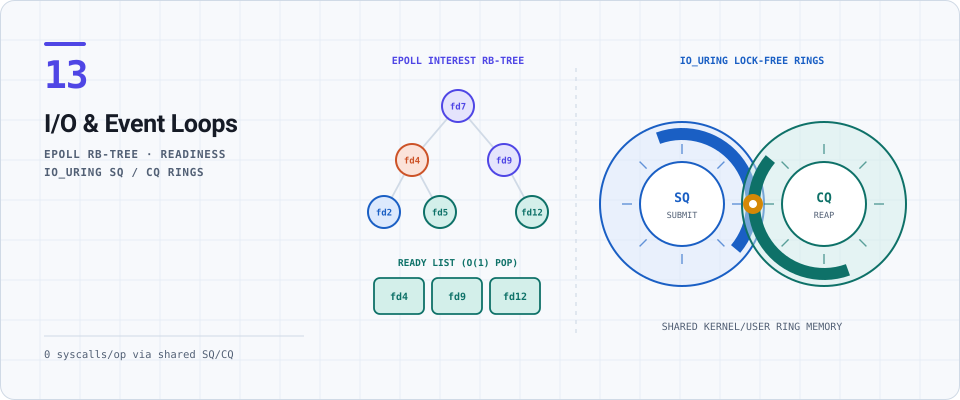
The central engineering challenge of high-concurrency network servers, historically framed as the C10K problem, is sustaining tens of thousands of simultaneous client connections when the vast majority remain idle waiting for network packets at any given instant. Choosing between a thread-per-connection architecture and an event-driven Input/Output (I/O) multiplexing loop directly governs memory consumption, cache locality, and scheduler overhead.
13.1 The Scalability Limits of Thread-Per-Connection
Assigning one operating-system thread to every accepted Transmission Control Protocol (TCP) connection allows handlers to be written as straightforward sequential blocking code (read(), process, write()). While intuitive for low-concurrency services, this model encounters three scaling ceilings as connection counts grow into the tens of thousands. First, every thread reserves a dedicated user-space stack (commonly 1 to 8 MiB of virtual space and tens of kilobytes of resident pages) plus a kernel stack (8 to 16 KiB) and scheduling metadata. Second, waking thousands of threads across bursts of short packets triggers frequent scheduler invocations, register-state saves, Level 1/Level 2 cache eviction, and Translation Lookaside Buffer (TLB) pressure. Third, sharing mutable session tables or metrics across thousands of concurrent threads introduces heavy lock contention.
13.2 Event-Driven Architecture and I/O Multiplexing
An event-driven server decouples connection count from thread count by running a single-threaded (or one-thread-per-core) event loop over an I/O multiplexing system call (poll, Linux epoll, or Berkeley Software Distribution (BSD) / Darwin kqueue). Rather than blocking a dedicated thread on one socket, the loop registers every active file descriptor with the kernel and sleeps once until any descriptor becomes ready (Figure 13-1):
- Wait (Observation): The loop invokes
poll()(orepoll_wait()/kevent()), suspending the thread until one or more monitored sockets transition to a ready state (an incomingTCPconnection waiting on the listening socket, readable bytes in a client receive buffer, or an error/hangup) or a timeout expires. - Dispatch: The loop inspects the ready descriptors reported by the kernel and routes each event to its connection state machine.
- Non-blocking Execution: Each handler consumes or emits available bytes and returns promptly to the loop. Because one thread services all connections, a blocking disk read or expensive computation inside a handler stalls every other client until it returns; production event loops offload blocking work to dedicated thread pools.

13.2.1 Socket Setup, struct sockaddr_in, and the poll(2) System Call Interface
Listings 13-1 through 13-4 build a complete single-threaded TCP echo server and client using the BSD socket Application Programming Interface (API) paired with poll(2):
struct sockaddr_in {
sa_family_t sin_family; // Address family: AF_INET (IPv4)
in_port_t sin_port; // 16-bit TCP/UDP port in network byte order (htons)
struct in_addr sin_addr; // 32-bit IPv4 address in network byte order (htonl)
unsigned char sin_zero[8];// Zero padding to match generic struct sockaddr size
};
struct pollfd {
int fd; // File descriptor to monitor (negative entries are ignored)
short events; // Input bitmask: events the application asks the kernel to watch
short revents; // Output bitmask: events the kernel detected on return
};
int socket(int domain, int type, int protocol);
int setsockopt(int sockfd, int level, int optname, const void *optval, socklen_t optlen);
int bind(int sockfd, const struct sockaddr *addr, socklen_t addrlen);
int listen(int sockfd, int backlog);
int accept(int sockfd, struct sockaddr *addr, socklen_t *addrlen);
int connect(int sockfd, const struct sockaddr *addr, socklen_t addrlen);
int poll(struct pollfd *fds, nfds_t nfds, int timeout);
Internet protocols transmit multi-byte integers in big-endian network byte order, whereas x86-64 and ARM64 processors are little-endian. Calling htons(45678) (“host to network short”, 16-bit) and htonl(INADDR_LOOPBACK) (“host to network long”, 32-bit, converting 127.0.0.1 = 0x7F000001) converts fields inside struct sockaddr_in into wire order before passing the struct to the kernel. Because bind(), connect(), and accept() serve Internet Protocol Version 4 (IPv4, sockaddr_in), Internet Protocol Version 6 (IPv6, sockaddr_in6), and Unix domain (sockaddr_un) addresses through a single C interface, callers cast the concrete pointer to struct sockaddr * and pass its exact byte length in addrlen.
To establish a listening server, socket(AF_INET, SOCK_STREAM, 0) allocates an unbound IPv4 TCP endpoint (fd >= 0, or -1 on EMFILE/EAFNOSUPPORT). Calling setsockopt(ls, SOL_SOCKET, SO_REUSEADDR, &one, sizeof one) allows immediate server restarts even when prior connections linger in TCP TIME_WAIT state (preventing EADDRINUSE). Next, bind(ls, addr, addrlen) attaches the local Internet Protocol (IP) address and port, and listen(ls, backlog) converts ls into a passive listener whose completed-connection queue is bounded by backlog (8 in Listing 13-1). Each call to accept(ls, addr, addrlen) dequeues one completed client connection and returns a new, distinct connected file descriptor (c >= 0), leaving ls open for future clients. On the client side (Listing 13-2), connect(fd, addr, addrlen) initiates the TCP three-way handshake (Synchronize (SYN), Synchronize-Acknowledge (SYN-ACK), Acknowledge (ACK)), returning 0 once established or -1 (ECONNREFUSED, ETIMEDOUT).
The poll(fds, nfds, timeout) system call monitors an array of nfds struct pollfd entries simultaneously. Before each call, the application sets fds[i].fd and fds[i].events (typically POLLIN to detect readable client bytes, peer End-of-File (EOF), or a queued connection on ls). The timeout parameter specifies the maximum wait in milliseconds (1000 ms in Listing 13-1; -1 blocks indefinitely; 0 returns immediately). On return, the kernel populates fds[i].revents with observed flags (POLLIN, POLLOUT, and output-only POLLHUP, POLLERR, or POLLNVAL) and returns the count of ready entries (> 0), 0 on timeout, or -1 on error (EINTR, ENOMEM). When POLLIN fires on a client socket and read() returns 0, the peer has closed its write half (TCP Finish (FIN)), so the server closes the descriptor and removes it from fds.
Listing 13-1. An echo server with one thread and poll (C++20). (code/ch13/poll_echo_server.cpp)
// ch13/poll_echo_server.cpp: one thread, several clients, poll(2).
// Serves two clients, then exits; the harness starts it and runs two clients.
#include <arpa/inet.h>
#include <netinet/in.h>
#include <poll.h>
#include <sys/socket.h>
#include <unistd.h>
#include <cstdio>
#include <vector>
int main() {
int ls = socket(AF_INET, SOCK_STREAM, 0);
if (ls < 0) {
perror("socket");
return 1;
}
int one = 1;
setsockopt(ls, SOL_SOCKET, SO_REUSEADDR, &one, sizeof one);
sockaddr_in addr{};
addr.sin_family = AF_INET;
addr.sin_port = htons(45678);
addr.sin_addr.s_addr = htonl(INADDR_LOOPBACK);
if (bind(ls, reinterpret_cast<sockaddr*>(&addr), sizeof addr) != 0) {
perror("bind");
return 1;
}
listen(ls, 8);
printf("listening on 127.0.0.1:45678\n");
std::vector<pollfd> fds{{ls, POLLIN, 0}};
int clients_served = 0;
while (clients_served < 2) {
int rc = poll(fds.data(), fds.size(), 1000);
if (rc < 0) {
perror("poll");
return 1;
}
for (size_t i = 0; i < fds.size(); ++i) {
if (!(fds[i].revents & POLLIN)) continue;
if (fds[i].fd == ls) {
int c = accept(ls, nullptr, nullptr);
printf("accepted fd %d\n", c);
fds.push_back({c, POLLIN, 0});
} else {
char buf[256];
ssize_t n = read(fds[i].fd, buf, sizeof buf - 1);
if (n <= 0) {
printf("client fd %d closed\n", fds[i].fd);
close(fds[i].fd);
fds.erase(fds.begin() + i);
--i;
++clients_served;
} else {
buf[n] = 0;
printf("echoing %zd bytes to fd %d\n", n, fds[i].fd);
write(fds[i].fd, buf, n);
}
}
}
}
printf("served 2 clients, exiting\n");
close(ls);
}
Listing 13-2. The C++20 echo client. (code/ch13/echo_client.cpp)
// ch13/echo_client.cpp: connect, send three messages, verify the echoes.
#include <arpa/inet.h>
#include <netinet/in.h>
#include <sys/socket.h>
#include <unistd.h>
#include <cstdio>
#include <cstring>
int main() {
int fd = socket(AF_INET, SOCK_STREAM, 0);
if (fd < 0) {
perror("socket");
return 1;
}
sockaddr_in addr{};
addr.sin_family = AF_INET;
addr.sin_port = htons(45678);
addr.sin_addr.s_addr = htonl(INADDR_LOOPBACK);
if (connect(fd, reinterpret_cast<sockaddr*>(&addr), sizeof addr) != 0) {
perror("connect");
return 1;
}
const char* msgs[] = {"one", "two", "three"};
for (const char* m : msgs) {
write(fd, m, strlen(m));
char buf[64] = {};
read(fd, buf, sizeof buf - 1);
printf("sent \"%s\", got \"%s\" (%s)\n", m, buf,
strcmp(m, buf) == 0 ? "ok" : "MISMATCH");
}
close(fd);
}
Output 13-1. The log of the C++20 server.
listening on 127.0.0.1:45678
accepted fd 4
echoing 3 bytes to fd 4
echoing 3 bytes to fd 4
echoing 5 bytes to fd 4
client fd 4 closed
accepted fd 4
echoing 3 bytes to fd 4
echoing 3 bytes to fd 4
echoing 5 bytes to fd 4
client fd 4 closed
served 2 clients, exiting
Output 13-2. The first C++20 client run. The second run prints the same lines.
sent "one", got "one" (ok)
sent "two", got "two" (ok)
sent "three", got "three" (ok)
Listing 13-3. The same single-threaded poll echo server in Rust. (code/ch13/poll_echo_server.rs)
// ch13/poll_echo_server.rs: one thread, several clients, poll(2) in Rust.
extern crate libc;
use std::io::{Read, Write};
use std::net::TcpListener;
use std::os::fd::AsRawFd;
fn main() {
let listener = TcpListener::bind("127.0.0.1:45679").expect("bind failed");
println!("listening on 127.0.0.1:45679");
let listen_fd = listener.as_raw_fd();
let mut fds = vec![libc::pollfd {
fd: listen_fd,
events: libc::POLLIN,
revents: 0,
}];
let mut streams = Vec::new();
let mut clients_served = 0;
while clients_served < 2 {
// SAFETY: `fds` is a valid contiguous `Vec<libc::pollfd>` whose descriptors
// are owned by `listener` and `streams` for the duration of the loop.
let rc = unsafe { libc::poll(fds.as_mut_ptr(), fds.len() as libc::nfds_t, 1000) };
assert!(rc >= 0, "poll failed");
if (fds[0].revents & libc::POLLIN) != 0 {
let (stream, _) = listener.accept().expect("accept failed");
let cfd = stream.as_raw_fd();
println!("accepted fd {cfd}");
fds.push(libc::pollfd {
fd: cfd,
events: libc::POLLIN,
revents: 0,
});
streams.push(stream);
}
let mut i = 0;
while i < streams.len() {
if (fds[i + 1].revents & libc::POLLIN) != 0 {
let cfd = fds[i + 1].fd;
let mut buf = [0_u8; 256];
let n = streams[i].read(&mut buf).unwrap_or(0);
if n == 0 {
println!("client fd {cfd} closed");
streams.remove(i);
fds.remove(i + 1);
clients_served += 1;
continue;
}
println!("echoing {n} bytes to fd {cfd}");
streams[i].write_all(&buf[..n]).expect("write failed");
}
i += 1;
}
}
println!("served 2 clients, exiting");
}Listing 13-4. The Rust echo client. (code/ch13/echo_client.rs)
// ch13/echo_client.rs: connect, send three messages, verify the echoes.
use std::io::{Read, Write};
use std::net::TcpStream;
fn main() {
let mut stream = TcpStream::connect("127.0.0.1:45679").expect("connect failed");
for msg in ["one", "two", "three"] {
stream.write_all(msg.as_bytes()).expect("write failed");
let mut buf = [0_u8; 64];
let n = stream.read(&mut buf).expect("read failed");
let got = std::str::from_utf8(&buf[..n]).unwrap_or("");
let status = if got == msg { "ok" } else { "MISMATCH" };
println!("sent \"{msg}\", got \"{got}\" ({status})");
}
}Output 13-3. The log of the Rust poll server.
listening on 127.0.0.1:45679
accepted fd 4
echoing 3 bytes to fd 4
echoing 3 bytes to fd 4
echoing 5 bytes to fd 4
client fd 4 closed
accepted fd 4
echoing 3 bytes to fd 4
echoing 3 bytes to fd 4
echoing 5 bytes to fd 4
client fd 4 closed
served 2 clients, exiting
Output 13-4. The first Rust client run.
sent "one", got "one" (ok)
sent "two", got "two" (ok)
sent "three", got "three" (ok)
13.3 Complexity and Evolution of Multiplexing Primitives (select, poll, epoll, kqueue)
The scalability of an event loop depends directly on how the kernel tracks the monitored descriptor set across calls (Figure 13-2):
| Primitive | Platform | Descriptor Limit | Per-Wait Complexity | Kernel Registration Model |
|---|---|---|---|---|
select | Portable Operating System Interface (POSIX) | Fixed FD_SETSIZE (typically 1024) | O(max_fd) | Stateless; copies full bitmasks on every call |
poll | POSIX | Unbounded (dynamic pollfd[]) | O(N) | Stateless; copies and scans full fds array on every call |
epoll | Linux | Unbounded | O(K) ready events | Stateful kernel red-black tree (epoll_ctl) + O(1) ready list (epoll_wait) |
kqueue | macOS / BSD | Unbounded | O(K) ready events | Stateful kernel event table (kevent) unifying sockets, timers, files, and processes |
Both select and poll are stateless: on every iteration of the event loop, user space copies the entire array of N descriptors into Ring 0, the kernel walks all N descriptors to attach wait-queue callbacks, and user space scans all N entries again on return to locate the K active sockets. When N = 50,000 connections and only K = 10 are active, O(N) scanning dominates execution time.
Modern kernels eliminate this linear scan via stateful interest sets (epoll on Linux, kqueue on Darwin/BSD). The application registers each socket once upon accept(); when packets arrive, the network interrupt handler appends that socket directly onto a kernel ready queue, reducing event retrieval from O(N) to O(K). Event loops also choose between level-triggered readiness (default in poll and epoll, which notifies on every wait while unread bytes remain) and edge-triggered readiness (EPOLLET, which notifies once on state transition and requires draining the non-blocking socket until EAGAIN). On Linux 5.1+, io_uring extends this architecture from readiness notification to asynchronous completion, sharing submission and completion ring buffers in memory between user space and the kernel to execute batched network and storage operations with minimal system calls. Production runtimes including Nginx, Envoy, Node.js (libuv), and Rust’s Tokio are built atop these O(K) interfaces.
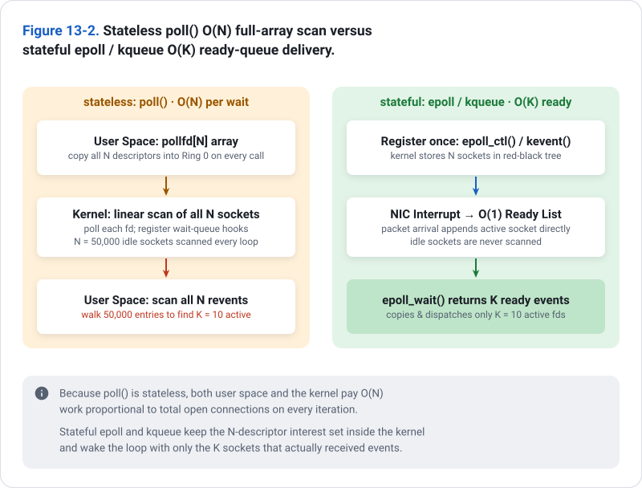
Listing 13-5. Contrast: a thread-per-connection echo server and client (Rust). (code/ch13/thread_echo.rs)
// ch13/thread_echo.rs: a thread-per-connection echo server plus its client,
// both in one process, written with the Rust standard library only.
use std::io::{Read, Write};
use std::net::{TcpListener, TcpStream};
use std::thread;
fn handle(mut s: TcpStream, id: usize) {
let mut buf = [0u8; 256];
loop {
match s.read(&mut buf) {
Ok(0) => break, // peer closed
Ok(n) => {
if let Err(e) = s.write_all(&buf[..n]) {
eprintln!("thread {id}: {e}");
break;
}
println!("thread {id} echoed {n} bytes");
}
Err(e) => {
eprintln!("thread {id}: {e}");
break;
}
}
}
}
fn main() -> Result<(), Box<dyn std::error::Error>> {
let listener = TcpListener::bind("127.0.0.1:45679")?;
println!("listening on 127.0.0.1:45679");
let server = thread::spawn(move || {
let mut id = 0;
for stream in listener.incoming() {
match stream {
Ok(s) => {
id += 1;
println!("accepted client {id}");
thread::spawn(move || handle(s, id));
}
Err(e) => {
eprintln!("accept: {e}");
break;
}
}
if id >= 2 {
break;
}
}
});
for c in 0..2 {
let mut s = TcpStream::connect("127.0.0.1:45679")?;
for m in ["alpha", "beta", "gamma"] {
s.write_all(m.as_bytes())?;
let mut buf = [0u8; 64];
let n = s.read(&mut buf)?;
let got = String::from_utf8_lossy(&buf[..n]);
println!("client {c} sent \"{m}\", got \"{got}\" (ok={})", got == m);
}
}
server.join().map_err(|_| "server thread panicked")?;
println!("done");
Ok(())
}Output 13-5.
listening on 127.0.0.1:45679
accepted client 1
thread 1 echoed 5 bytes
client 0 sent "alpha", got "alpha" (ok=true)
thread 1 echoed 4 bytes
client 0 sent "beta", got "beta" (ok=true)
thread 1 echoed 5 bytes
client 0 sent "gamma", got "gamma" (ok=true)
accepted client 2
thread 2 echoed 5 bytes
client 1 sent "alpha", got "alpha" (ok=true)
thread 2 echoed 4 bytes
client 1 sent "beta", got "beta" (ok=true)
thread 2 echoed 5 bytes
client 1 sent "gamma", got "gamma" (ok=true)
done
Event-driven servers scale to tens of thousands of idle connections by replacing per-connection thread stacks with one kernel readiness queue. Stateful epoll and kqueue reduce wait complexity from O(N) total connections (poll) to O(K) active connections.
In Listing 13-1 (code/ch13/poll_echo_server.cpp), comment out the setsockopt(..., SO_REUSEADDR, ...) call, connect a client, terminate the server with Ctrl-C, and immediately restart it. Observe bind() failing with EADDRINUSE while the prior socket lingers in TCP TIME_WAIT.
Executing a blocking disk read, synchronous DNS lookup, or heavy CPU loop inside a single-threaded event-loop callback. Because one thread multiplexes every socket, a 50 ms blocking call stalls tail latency across all sibling connections simultaneously; offload blocking work to a worker pool.
14. Network Protocols and the Socket Interface
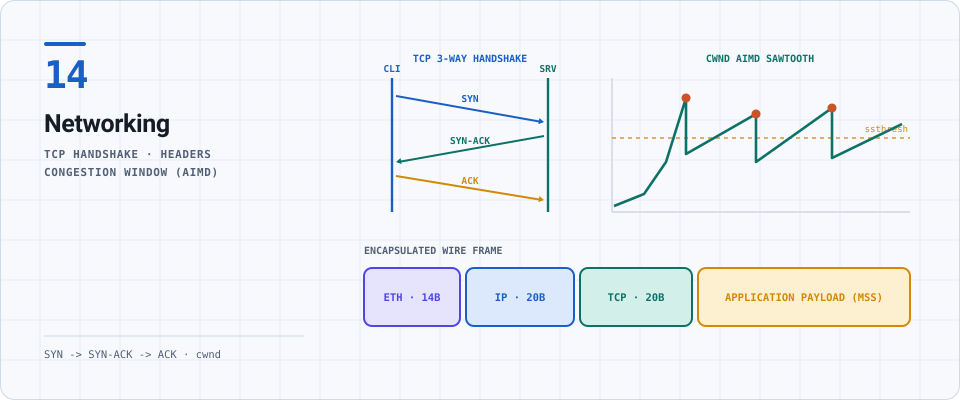
Network communication is abstracted through the Berkeley Software Distribution (BSD) socket interface, which exposes transport protocols through ordinary file descriptors while letting applications choose between fundamentally different delivery contracts: reliable, ordered byte streams (Transmission Control Protocol (TCP)) and connectionless, boundary-preserving datagrams (User Datagram Protocol (UDP)).
14.1 The Transmission Control Protocol (TCP): Reliable Byte Streams
TCP provides a connection-oriented, reliable, full-duplex byte stream over an inherently unreliable packet-switched Internet Protocol (IP) network that can drop, duplicate, reorder, or corrupt packets. TCP enforces reliability through cumulative byte sequence numbers, receiver Acknowledgments (ACKs), retransmission timers, sliding-window flow control (preventing a fast sender from overflowing a slow receiver’s kernel buffer), and congestion control (adapting transmission rate to bottleneck link capacity).
Every TCP connection traverses two control phases around its data transfer (Figure 14-1). During the Three-Way Handshake, the client transmits a Synchronize (SYN) segment carrying an initial sequence number, the server replies with SYN-ACK, and the client returns ACK; only after this round trip completes do connect() and accept() succeed. During Graceful Teardown, each direction closes independently via Finish (FIN) and ACK segments (half-close), allowing in-flight data to drain cleanly. The endpoint performing the active close then enters TIME_WAIT for twice the maximum segment lifetime (typically 30 to 120 seconds) for two subtle reasons: to ensure its final ACK can be retransmitted if lost, and to prevent delayed duplicate packets from an old connection from being misinterpreted by a newly opened connection reusing the same (IP, port) four-tuple.
Because TCP treats transmitted data as an unstructured sequence of bytes, it never preserves write() boundaries: three 10-byte writes may arrive as a single 30-byte read() or thirty 1-byte reads. Every application protocol layered over TCP (including Hypertext Transfer Protocol (HTTP), Transport Layer Security (TLS), gRPC Remote Procedure Calls (gRPC), and the PostgreSQL wire protocol) must therefore define explicit framing such as length prefixes or delimiters.

14.2 The User Datagram Protocol (UDP): Unreliable Message Delivery
UDP strips away connection state, handshakes, retransmissions, and ordering guarantees, adding only an 8-byte header (source port, destination port, length, and checksum) atop raw IP packets. Each UDP datagram is routed independently and may arrive out of order, arrive duplicated, or vanish in transit without notification.
This minimal contract yields two defining engineering properties. First, it eliminates handshake latency and head-of-line blocking: transmitting the first payload incurs zero setup round trips, and losing one packet never stalls subsequent packets waiting behind it. Real-time voice and video pipelines, Domain Name System (DNS) resolvers, telemetry collectors, and modern Quick UDP Internet Connections (QUIC) transports (powering HTTP/3) build directly on UDP. Second, UDP enforces strict message-boundary preservation: one sendto() call produces one discrete datagram delivered atomically by one recvfrom() call.
14.2.1 The Connectionless Datagram System Call Interface (sendto, recvfrom)
Because a UDP socket (socket(AF_INET, SOCK_DGRAM, 0)) maintains no fixed peer connection, every transmission and reception carries its endpoint address explicitly:
ssize_t sendto(int sockfd, const void *buf, size_t len, int flags,
const struct sockaddr *dest_addr, socklen_t addrlen);
ssize_t recvfrom(int sockfd, void *buf, size_t len, int flags,
struct sockaddr *src_addr, socklen_t *addrlen);
In both calls, sockfd is a SOCK_DGRAM descriptor (calling bind() assigns a fixed local port such as 45680 in Listing 14-1, whereas an unbound sender automatically receives an ephemeral port), buf and len specify the payload buffer, and flags controls per-call behavior (0 for standard blocking Input/Output (I/O), MSG_DONTWAIT for non-blocking execution, or MSG_PEEK to inspect a queued datagram without dequeuing it). In sendto(), dest_addr points to the target struct sockaddr_in (or sockaddr_in6) and addrlen is passed by value (sizeof addr). In recvfrom(), src_addr and addrlen are output parameters receiving the sender’s address, so addrlen is passed by pointer (socklen_t *) as a value-result argument: the caller initializes *addrlen to the buffer capacity before the call, and the kernel overwrites it with the actual length written (passing nullptr, nullptr discards the sender’s address).
Both functions return the signed byte count transferred (ssize_t >= 0), or -1 on error (EMSGSIZE if a datagram exceeds the link’s Maximum Transmission Unit (MTU) limit, EAGAIN on non-blocking empty receive, or EINTR). Unlike TCP read(), which leaves unread bytes queued for the next call, if an arriving UDP datagram exceeds the len buffer supplied to recvfrom(), the kernel copies the first len bytes and discards the remaining tail without signaling an error.
Listing 14-1. Sending and receiving one datagram (C++20). (code/ch14/udp.cpp)
// ch14/udp.cpp: a datagram sent to the loopback address and read back.
#include <arpa/inet.h>
#include <netinet/in.h>
#include <sys/socket.h>
#include <unistd.h>
#include <cstdio>
#include <cstring>
int main() {
int fd = socket(AF_INET, SOCK_DGRAM, 0);
if (fd < 0) {
perror("socket");
return 1;
}
sockaddr_in addr{};
addr.sin_family = AF_INET;
addr.sin_port = htons(45680);
addr.sin_addr.s_addr = htonl(INADDR_LOOPBACK);
if (bind(fd, reinterpret_cast<sockaddr*>(&addr), sizeof addr) != 0) {
perror("bind");
return 1;
}
const char* msg = "datagram";
socklen_t len = sizeof addr;
sendto(fd, msg, strlen(msg), 0, reinterpret_cast<sockaddr*>(&addr), len);
char buf[64] = {};
ssize_t n = recvfrom(fd, buf, sizeof buf - 1, 0, nullptr, nullptr);
printf("sent %zu bytes, received %zd bytes: \"%s\"\n", strlen(msg), n, buf);
close(fd);
}
Output 14-1. One datagram of 8 bytes.
sent 8 bytes, received 8 bytes: "datagram"
Listing 14-2. The same exchange with std::net::UdpSocket (Rust). (code/ch14/udp.rs)
// ch14/udp.rs: the same datagram round trip with std::net::UdpSocket.
use std::net::UdpSocket;
fn main() -> std::io::Result<()> {
let s = UdpSocket::bind("127.0.0.1:45681")?;
let msg = b"datagram";
s.send_to(msg, "127.0.0.1:45681")?;
let mut buf = [0u8; 64];
let (n, from) = s.recv_from(&mut buf)?;
println!(
"sent {} bytes, received {n} bytes from {from}: \"{}\"",
msg.len(),
String::from_utf8_lossy(&buf[..n])
);
Ok(())
}Output 14-2.
sent 8 bytes, received 8 bytes from 127.0.0.1:45681: "datagram"
14.3 Name Resolution and Addressing
Applications operate on human-readable hostnames ("localhost", "api.example.com") and service names ("https", "443"), whereas connect() and bind() require binary Internet Protocol Version 4 (IPv4, sockaddr_in) or Internet Protocol Version 6 (IPv6, sockaddr_in6) structures. Modern Portable Operating System Interface (POSIX) software replaces legacy IPv4-only functions (gethostbyname) with the re-entrant, protocol-independent resolver getaddrinfo(3).
14.3.1 Protocol-Independent Resolution (getaddrinfo, freeaddrinfo, inet_ntop)
struct addrinfo {
int ai_flags; // Input options (e.g., AI_PASSIVE, AI_NUMERICHOST)
int ai_family; // AF_UNSPEC (IPv4 or IPv6), AF_INET, or AF_INET6
int ai_socktype; // SOCK_STREAM (TCP), SOCK_DGRAM (UDP), or 0 (any)
int ai_protocol; // Protocol number or 0 (any matching protocol)
socklen_t ai_addrlen; // Byte length of the socket address in ai_addr
struct sockaddr *ai_addr; // Pointer to populated sockaddr_in or sockaddr_in6
char *ai_canonname; // Canonical hostname (when AI_CANONNAME requested)
struct addrinfo *ai_next; // Next candidate in the singly-linked result list
};
int getaddrinfo(const char *node, const char *service,
const struct addrinfo *hints, struct addrinfo **res);
void freeaddrinfo(struct addrinfo *res);
const char *gai_strerror(int errcode);
const char *inet_ntop(int af, const void *src, char *dst, socklen_t size);
Callers zero-initialize a struct addrinfo hints{} and populate only the constraints they require: ai_family = AF_UNSPEC accepts both IPv4 and IPv6, ai_socktype = SOCK_STREAM restricts results to TCP endpoints so each address is not duplicated for UDP, and ai_flags = AI_PASSIVE with node = nullptr yields wildcard server listen addresses (0.0.0.0 and ::). Calling getaddrinfo(node, service, hints, res) queries /etc/hosts and configured DNS resolvers, allocates a heap-resident singly-linked list of candidate struct addrinfo nodes in *res, and returns 0 on success. Unlike raw system calls, failures return a dedicated non-zero resolver code (EAI_NONAME, EAI_AGAIN, EAI_MEMORY) that callers decode with gai_strerror(rc) rather than perror().
Because a hostname commonly resolves to both IPv6 (::1) and IPv4 (127.0.0.1) endpoints, callers traverse the linked list via ai->ai_next, inspect ai->ai_family to cast ai->ai_addr safely to sockaddr_in * or sockaddr_in6 *, and release the entire list with freeaddrinfo(list). To format a binary network-order address into text, inet_ntop(af, src, dst, size) (“network to presentation”) writes a null-terminated string into dst; sizing dst to INET6_ADDRSTRLEN (46 bytes) guarantees sufficient capacity for both IPv4 dotted-quad and full IPv6 colon-hex strings.
Listing 14-3. The addresses that getaddrinfo returns for “localhost” (C++20). (code/ch14/getaddrinfo.cpp)
// ch14/getaddrinfo.cpp: resolve a name and inspect what the resolver returns.
#include <arpa/inet.h>
#include <netdb.h>
#include <netinet/in.h>
#include <cstdio>
int main() {
addrinfo hints{};
hints.ai_family = AF_UNSPEC;
hints.ai_socktype = SOCK_STREAM;
addrinfo* list = nullptr;
int rc = getaddrinfo("localhost", nullptr, &hints, &list);
if (rc != 0) {
printf("getaddrinfo: %s\n", gai_strerror(rc));
return 1;
}
int i = 0;
for (addrinfo* ai = list; ai != nullptr; ai = ai->ai_next, ++i) {
char host[INET6_ADDRSTRLEN] = {};
const void* src = nullptr;
if (ai->ai_family == AF_INET) {
src = &reinterpret_cast<sockaddr_in*>(ai->ai_addr)->sin_addr;
} else if (ai->ai_family == AF_INET6) {
src = &reinterpret_cast<sockaddr_in6*>(ai->ai_addr)->sin6_addr;
}
inet_ntop(ai->ai_family, src, host, sizeof host);
printf("[%d] family=%s addr=%s socktype=%s\n", i,
ai->ai_family == AF_INET ? "IPv4" : "IPv6", host,
ai->ai_socktype == SOCK_STREAM ? "stream" : "other");
}
freeaddrinfo(list);
}
Output 14-3. One IPv6 address and one IPv4 address.
[0] family=IPv6 addr=::1 socktype=stream
[1] family=IPv4 addr=127.0.0.1 socktype=stream
Listing 14-4. The same lookup in Rust, with to_socket_addrs. (code/ch14/to_socket_addrs.rs)
// ch14/to_socket_addrs.rs: the Rust equivalent of getaddrinfo.
use std::net::ToSocketAddrs;
fn main() -> std::io::Result<()> {
for (i, addr) in ("localhost", 45682).to_socket_addrs()?.enumerate() {
println!("[{i}] {addr}");
}
Ok(())
}Output 14-4.
[0] [::1]:45682
[1] 127.0.0.1:45682
TCP delivers a reliable, ordered byte stream with zero message-boundary preservation; UDP delivers discrete, boundary-preserving datagrams with zero reliability or ordering guarantees. Every protocol above TCP must therefore frame its own messages, while protocols above UDP (such as QUIC) implement custom reliability without head-of-line blocking.
In Listing 14-1 (code/ch14/udp.cpp), shrink the receiver buffer char buf[4] while sending the 8-byte "ping-udp" payload. Observe recvfrom() returning 4 bytes and discarding the remaining 4 bytes without returning an error, contrasting sharply with TCP stream buffering.
Assuming a single read() on a TCP socket returns one complete application message or forgetting to call freeaddrinfo() after getaddrinfo(). Under network fragmentation or kernel coalescing, a single TCP read() may return half a header or three concatenated messages.
15. Daemon Lifecycle and Service Supervision
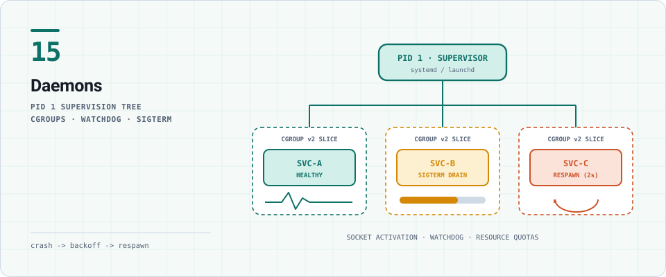
A daemon is a specialized process designed for long-running background execution, decoupled from any interactive terminal. While traditional daemons implement explicit detachment rituals to sever ties with their launching shell, modern operating systems have evolved toward a supervision-based model where central init systems (such as launchd on macOS and Darwin, or systemd on Linux) manage the lifecycle, socket activation, resource boundaries, and fault recovery of background services.
15.1 The Ritual of Detachment
To transition from a terminal-bound process to a fully independent daemon in a standalone environment, a program undergoes four ordered stages designed to sever every kernel linkage to the launching session and controlling terminal (Figures 15-1 and 15-2):
- Session Decoupling (First Fork): The process invokes
fork(), and the parent immediately calls_exit(0), returning control to the launching shell. The child is reparented to Process Identifier (PID)1and is guaranteed not to be a process group leader because its newPIDdiffers from its inherited Process Group Identifier (PGID). - Session Leadership (
setsid): The child invokessetsid()to create a new session (Session Identifier (SID)) and process group with itself as leader, detaching completely from its original controlling terminal so terminal signals (Signal Hangup (SIGHUP) on logout, Signal Interrupt (SIGINT) on Ctrl-C) can never reach it. - Terminal Prevention (Second Fork): Because the Portable Operating System Interface (
POSIX) standard permits a session leader without a controlling terminal to acquire one inadvertently if it callsopen()on a Teletype (TTY) device withoutO_NOCTTY, a secondfork()exits the session leader so the grandchild daemon is never a session leader and can never acquire a controlling terminal. - Environment Sanitization: The grandchild restricts default file permissions via
umask(), moves its working directory to/viachdir("/")so it cannot pin a mounted volume against unmounting, redirects descriptors0,1, and2(stdin,stdout,stderr) to/dev/nullor a log file viadup2(), and writes itsPIDinto a pidfile.
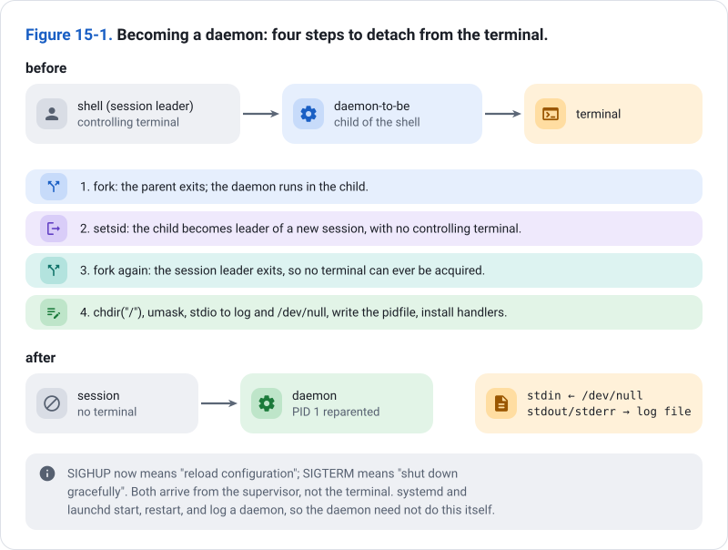
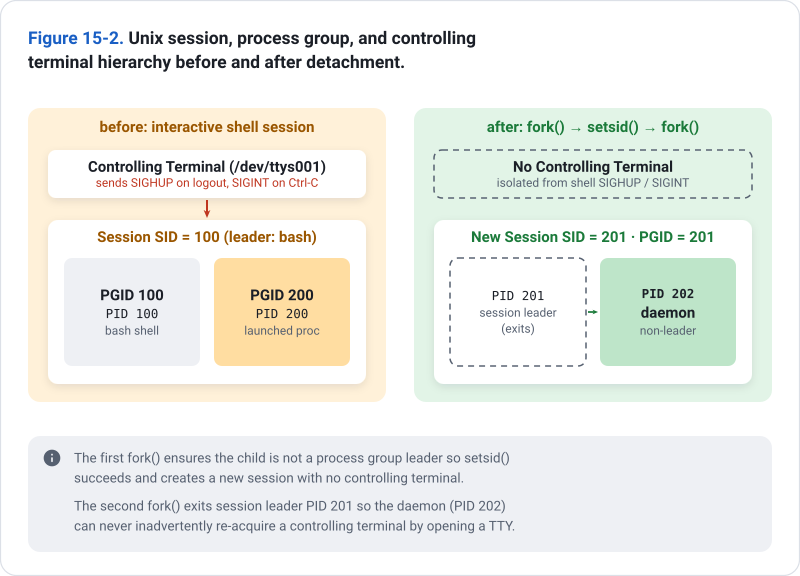
15.1.1 The Detachment System Call Interface (setsid, umask, chdir, dup2)
Listings 15-1 and 15-2 invoke four specialized environment-control system calls alongside fork(), open(), and sigaction():
pid_t setsid(void);
mode_t umask(mode_t mask);
int chdir(const char *path);
int dup2(int oldfd, int newfd);
Calling setsid() creates a new session and process group whose SID and PGID both equal the caller’s PID, stripping any controlling terminal association and returning the new SID (> 0). If the caller is already a process group leader, setsid() fails with EPERM, which is why the first fork() must precede it. Calling umask(mask) sets the file-mode creation mask and returns the prior mask (never failing); whenever the daemon creates a file via open(..., mode), the kernel clears bits set in umask (mode & ~umask), so octal 0027 (0o027 in Rust) clears group-write and all world permissions. Calling chdir("/") moves the working directory to the root mount (0 on success, -1 on ENOENT/EACCES) so the daemon never blocks administrative umount operations. Finally, dup2(oldfd, newfd) atomically closes newfd if open and duplicates oldfd onto slot newfd; in Listing 15-1, redirecting STDOUT_FILENO (1) and STDERR_FILENO (2) to the log file and STDIN_FILENO (0) to /dev/null ensures library reads observe immediate End-of-File (EOF) while log output lands cleanly on disk.
15.2 Signal-Driven Management and the Lifecycle Interface
The primary administrative interface for a standalone daemon consists of signals paired with its pidfile:
SIGHUP(Signal Hangup): Conventionally repurposed to instruct the daemon to reload configuration files and rotate log handles without dropping active connections.- Signal Terminate (
SIGTERM): Requests a graceful shutdown. The handler sets an atomic stop flag (g_stop = 1/STOP.store(true, Ordering::Relaxed)), allowing the main loop to finish in-flight work, flush logs, callunlink(pidfile), and exit cleanly. - Kill Signal (
SIGKILL): Forcibly terminates the process immediately in kernel mode when a daemon fails to exit within the supervisor’s grace period afterSIGTERM.
Listing 15-1. A daemon from start to shutdown (C++20). (code/ch15/daemon.cpp)
// ch15/daemon.cpp: a complete daemon lifecycle in C++.
// double fork, setsid, redirected stdio, pidfile, signal-driven shutdown.
#include <fcntl.h>
#include <sys/stat.h>
#include <sys/types.h>
#include <unistd.h>
#include <csignal>
#include <cstdio>
static volatile sig_atomic_t g_reload = 0;
static volatile sig_atomic_t g_stop = 0;
static void on_hup(int) { g_reload = 1; }
static void on_term(int) { g_stop = 1; }
int main() {
const char* pidfile = "/tmp/osbook_daemon.pid";
const char* logfile = "/tmp/osbook_daemon.log";
pid_t pid = fork();
if (pid < 0) return 1;
if (pid > 0) _exit(0); // first parent exits
setsid(); // new session: no controlling terminal
pid = fork();
if (pid > 0) _exit(0); // session leader exits; terminal cannot return
umask(0027);
chdir("/");
// stdout/stderr to the log, stdin from /dev/null.
int fd = open(logfile, O_CREAT | O_WRONLY | O_APPEND, 0644);
if (fd < 0) return 1;
dup2(fd, STDOUT_FILENO);
dup2(fd, STDERR_FILENO);
close(fd);
int devnull = open("/dev/null", O_RDONLY);
dup2(devnull, STDIN_FILENO);
close(devnull);
FILE* pf = fopen(pidfile, "w");
if (pf == nullptr) return 1;
fprintf(pf, "%d\n", getpid());
fclose(pf);
struct sigaction sa {};
sa.sa_handler = on_hup;
sigemptyset(&sa.sa_mask);
sigaction(SIGHUP, &sa, nullptr);
sa.sa_handler = on_term;
sigaction(SIGTERM, &sa, nullptr);
printf("daemon %d started\n", getpid());
fflush(stdout);
int ticks = 0;
while (!g_stop) {
sleep(1);
++ticks;
printf("tick %d\n", ticks);
fflush(stdout);
if (g_reload) {
g_reload = 0;
printf("reload requested\n");
fflush(stdout);
}
}
printf("stopping after %d ticks\n", ticks);
unlink(pidfile);
return 0;
}
Output 15-1. The C++ daemon.
harness: daemon running with pid 65182
harness: process alive: yes
harness: sent SIGHUP
harness: sent SIGTERM
harness: pidfile removed after SIGTERM: yes
--- daemon log ---
daemon 65182 started
tick 1
reload requested
tick 2
tick 3
stopping after 3 ticks
Listing 15-2. The same daemon in Rust. (code/ch15/daemon.rs)
// ch15/daemon.rs: the same lifecycle in Rust: double fork, setsid, pidfile,
// and signal-driven shutdown through libc.
use std::fs::{self, OpenOptions};
use std::io::{self, Write};
use std::mem;
use std::process;
use std::ptr;
use std::sync::atomic::{AtomicBool, Ordering};
use std::thread;
use std::time::Duration;
static RELOAD: AtomicBool = AtomicBool::new(false);
static STOP: AtomicBool = AtomicBool::new(false);
extern "C" fn on_hup(_: libc::c_int) {
RELOAD.store(true, Ordering::Relaxed);
}
extern "C" fn on_term(_: libc::c_int) {
STOP.store(true, Ordering::Relaxed);
}
fn main() -> io::Result<()> {
// SAFETY: Classic UNIX Daemonization Invariants:
// 1. First `fork()`: Creates an asynchronous background child and terminates the parent,
// guaranteeing the child is not a process group leader.
// 2. `setsid()`: Creates a new session and process group with no controlling terminal (tty).
// 3. Second `fork()`: Exits the session leader, ensuring the grandchild daemon can never
// subsequently acquire a controlling terminal, even if it opens a tty device.
// 4. `umask(0o027)`: Restricts default file creation modes (no permissions for other, no write for group).
// 5. `chdir("/")`: Unmounts the current working directory, preventing the daemon from pinning a mounted filesystem.
unsafe {
let pid = libc::fork();
if pid < 0 {
process::exit(1);
}
if pid > 0 {
libc::_exit(0); // first parent exits
}
libc::setsid(); // new session: no controlling terminal
let pid = libc::fork();
if pid > 0 {
libc::_exit(0); // session leader exits; terminal cannot return
}
libc::umask(0o027);
libc::chdir(b"/\0".as_ptr() as *const libc::c_char);
}
let pidfile = "/tmp/osbook_daemon_rs.pid";
let logfile = "/tmp/osbook_daemon_rs.log";
{
let mut pf = OpenOptions::new()
.create(true)
.write(true)
.truncate(true)
.open(pidfile)?;
writeln!(pf, "{}", process::id())?;
}
let mut log = OpenOptions::new().create(true).append(true).open(logfile)?;
// SAFETY: Registers signal handlers `on_hup` and `on_term` which strictly store to `AtomicBool`
// flags with `Ordering::Relaxed`. Atomic stores compile to single store instructions on x86/ARM,
// fulfilling the strict POSIX async-signal-safety specification.
unsafe {
let mut sa: libc::sigaction = mem::zeroed();
sa.sa_sigaction = on_hup as *const () as usize;
libc::sigemptyset(&mut sa.sa_mask);
libc::sigaction(libc::SIGHUP, &sa, ptr::null_mut());
sa.sa_sigaction = on_term as *const () as usize;
libc::sigaction(libc::SIGTERM, &sa, ptr::null_mut());
}
writeln!(log, "daemon {} started", process::id())?;
log.flush()?;
let mut ticks = 0;
while !STOP.load(Ordering::Relaxed) {
thread::sleep(Duration::from_secs(1));
ticks += 1;
writeln!(log, "tick {ticks}")?;
log.flush()?;
if RELOAD.swap(false, Ordering::Relaxed) {
writeln!(log, "reload requested")?;
log.flush()?;
}
}
writeln!(log, "stopping after {ticks} ticks")?;
fs::remove_file(pidfile)?;
Ok(())
}Output 15-2. The Rust daemon.
harness: daemon running with pid 65196
harness: process alive: yes
harness: sent SIGHUP
harness: sent SIGTERM
harness: pidfile removed after SIGTERM: yes
--- daemon log ---
daemon 65196 started
tick 1
reload requested
tick 2
stopping after 2 ticks
A daemon’s interface is three artifacts: a pidfile that names it, a log that records it, and signal handlers that steer it. In standalone systems, the double-fork ritual is plumbing; the signal-driven lifecycle is the true contract.
15.3 Service Supervision and On-Demand Activation: launchd and systemd
In modern production environments (particularly cloud server operating systems and Apple platforms), the manual detachment ritual is replaced by centralized service supervision. Central supervisors, such as Apple’s launchd and Linux’s systemd, operate as PID 1, managing daemons as direct child processes.
15.3.1 The Foreground Daemon Model
Supervised services run in the foreground: they do not call fork() or setsid(), do not manage their own pidfiles, and do not redirect standard Input/Output (I/O) to /dev/null. If a daemon double-forks under a supervisor, it severs parentage, causing the supervisor to believe the service terminated prematurely. Retaining direct parentage allows the supervisor to track the true PID, observe exact exit codes, enforce memory and CPU limits via control groups or task policies, and aggregate logs written directly to stdout and stderr.
15.3.2 Socket-Based On-Demand Activation
A major architectural innovation pioneered by Apple’s launchd (and adopted by systemd) is socket activation. Traditional init scripts enforce fragile boot-order dependency chains: a logging daemon must start before a database daemon, which must start before an application server. Under socket activation, the supervisor creates and binds the listening sockets (Unix domain sockets or Transmission Control Protocol (TCP) ports) before the daemon launches. When a client connects, the kernel queues the incoming connection on the bound socket; the supervisor detects readiness, spawns the daemon on demand, and hands the pre-bound listening descriptor directly to the child (typically descriptor 3 or via launch_activate_socket()), letting the daemon call accept() immediately with zero startup race conditions.
15.4 Asynchronous Fault Detection and Process Monitoring via kqueue
In distributed infrastructure and cloud platforms, daemons frequently act as local supervisors that manage worker processes, telemetry sidecars, and hardware accelerators. A supervisor must detect worker crashes and hardware faults instantaneously.
15.4.1 The Limits of Signal-Based Monitoring (SIGCHLD)
Traditional Unix process monitoring relies on Child Status Changed (SIGCHLD) and waitpid(). In complex event-driven supervisors, signal-based monitoring imposes two constraints: standard POSIX signals coalesce when multiple children exit simultaneously (requiring non-blocking waitpid(-1, &status, WNOHANG) drain loops), and async-signal-safety restrictions prohibit allocating memory or acquiring standard mutexes inside the handler, forcing a self-pipe wakeup trick to notify the main loop.
15.4.2 Event-Driven Supervision with EVFILT_PROC and the struct kevent Interface
On Apple Darwin and Berkeley Software Distribution (BSD) kernels, kqueue unifies socket readiness, timers, filesystem changes, and process lifecycle monitoring inside one stateful kernel event queue. Rather than installing a signal handler, a supervisor registers an EVFILT_PROC filter directly on a child PID and receives termination notifications synchronously inside its main event loop:
struct kevent {
uintptr_t ident; // Identifier for this event (e.g., fd, signal number, or child PID)
int16_t filter; // Kernel event subsystem (EVFILT_READ, EVFILT_TIMER, EVFILT_PROC)
uint16_t flags; // Registration action flags (EV_ADD, EV_ENABLE, EV_DELETE, EV_ONESHOT)
uint32_t fflags; // Filter-specific sub-flags (for EVFILT_PROC: NOTE_EXIT, NOTE_FORK)
intptr_t data; // Filter-specific payload (readable bytes, or exit status metadata)
void *udata; // Opaque user-space context pointer returned untouched by the kernel
};
int kqueue(void);
void EV_SET(struct kevent *kev, uintptr_t ident, int16_t filter, uint16_t flags,
uint32_t fflags, intptr_t data, void *udata);
int kevent(int kq, const struct kevent *changelist, int nchanges,
struct kevent *eventlist, int nevents, const struct timespec *timeout);
Calling kqueue() allocates an empty kernel event queue and returns a descriptor (kq >= 0, or -1 on EMFILE/ENOMEM) that is not inherited across fork(). The helper macro EV_SET(&change, pid, EVFILT_PROC, EV_ADD | EV_ENABLE, NOTE_EXIT, 0, nullptr) populates a struct kevent targeting child ident = pid under the EVFILT_PROC process-lifecycle filter, activating NOTE_EXIT notification (with optional opaque udata pointer for O(1) dispatch back to a supervisor’s worker record).
The single kevent() system call performs both registration and retrieval. Passing a populated changelist with eventlist = nullptr, nevents = 0 registers the filter and returns 0 immediately; passing changelist = nullptr, nchanges = 0 with an eventlist blocks until up to nevents fire or timeout expires (nullptr blocks indefinitely), returning the ready count (> 0), 0 on timeout, or -1 on error (EBADF, EINTR, or ESRCH if pid already exited). Once event.fflags & NOTE_EXIT arrives, the supervisor calls waitpid(pid, &status, WNOHANG) to reap the zombie Process Control Block (PCB) and extract WEXITSTATUS(status).
Listing 15-3. Process supervision via kqueue (C++20). (code/ch15/kqueue_supervisor.cpp)
// ch15/kqueue_supervisor.cpp: process fault monitoring using kqueue on Darwin/BSD.
#include <sys/types.h>
#include <sys/event.h>
#include <sys/time.h>
#include <sys/wait.h>
#include <unistd.h>
#include <iostream>
int main() {
int kq = kqueue();
if (kq < 0) {
std::cerr << "failed to create kqueue\n";
return 1;
}
pid_t pid = fork();
if (pid < 0) return 1;
if (pid == 0) {
// Child: simulated worker daemon that performs work and exits
usleep(50000); // 50 ms
_exit(0);
}
// Supervisor monitors the child lifecycle directly via EVFILT_PROC
struct kevent change;
EV_SET(&change, pid, EVFILT_PROC, EV_ADD | EV_ENABLE, NOTE_EXIT, 0, nullptr);
if (kevent(kq, &change, 1, nullptr, 0, nullptr) < 0) {
std::cerr << "failed to register kevent\n";
return 1;
}
struct kevent event;
int nev = kevent(kq, nullptr, 0, &event, 1, nullptr);
if (nev > 0 && (event.fflags & NOTE_EXIT)) {
int status = 0;
waitpid(pid, &status, WNOHANG);
std::cout << "supervisor detected child " << pid
<< " termination, exit status: " << WEXITSTATUS(status) << "\n";
}
close(kq);
return 0;
}
Output 15-3. The C++ supervisor output.
supervisor detected child 65207 termination, exit status: 0
Listing 15-4. The same supervisor in Rust. (code/ch15/kqueue_supervisor.rs)
// ch15/kqueue_supervisor.rs: process fault monitoring using kqueue in Rust.
use std::mem;
use std::process::{Command, Stdio};
use std::ptr;
fn main() {
// SAFETY: Kernel Event Loop Supervision Invariants:
// 1. Descriptor Allocation: `kqueue()` allocates a kernel event notification queue and returns
// a file descriptor into the calling process's file descriptor table. We assert `kq >= 0`
// to guarantee descriptor validity before registering filters.
// 2. Filter Registration (`EVFILT_PROC`): `&change` is a valid, stack-allocated, properly
// aligned `libc::kevent` struct referencing the live child `pid` spawned via `Command::spawn()`.
// Passing `nchanges = 1` and `nevents = 0` registers the `NOTE_EXIT` kernel hook synchronously
// without harvesting events. Because `EVFILT_PROC` attaches directly to the kernel `proc`
// structure before or even as the child exits, it avoids the signal-coalescing and
// async-signal-safety hazards of `SIGCHLD`.
// 3. Blocking Event Harvest: `event` is a stack-allocated `libc::kevent` initialized via
// `std::mem::zeroed()` (all integer and pointer fields in `kevent` admit zero as a valid
// bit representation). Passing `&mut event` with `nevents = 1` and a null timeout pointer
// parks the supervisor thread in the kernel wait queue until the child process terminates.
// 4. Resource Teardown: `child.wait()` reaps the terminated zombie PCB via `waitpid`, and
// `libc::close(kq)` releases the kqueue file descriptor back to the kernel.
unsafe {
let kq = libc::kqueue();
assert!(kq >= 0, "failed to create kqueue");
// Spawn a child process to supervise
let mut child = Command::new("sleep")
.arg("0.05")
.stdout(Stdio::null())
.spawn()
.expect("failed to spawn child");
let pid = child.id() as libc::pid_t;
// Register EVFILT_PROC to observe process termination
let change = libc::kevent {
ident: pid as usize,
filter: libc::EVFILT_PROC,
flags: libc::EV_ADD | libc::EV_ENABLE,
fflags: libc::NOTE_EXIT,
data: 0,
udata: ptr::null_mut(),
};
let ret = libc::kevent(kq, &change, 1, ptr::null_mut(), 0, ptr::null());
assert!(ret >= 0, "failed to register kevent");
// Block on the event queue until the process exits
let mut event = mem::zeroed();
let nev = libc::kevent(kq, ptr::null(), 0, &mut event, 1, ptr::null());
assert!(nev > 0, "kevent wait failed");
let status = child.wait().expect("failed to wait on child");
println!("supervisor detected child {} termination, success: {}", pid, status.success());
libc::close(kq);
}
}Output 15-4. The Rust supervisor output.
supervisor detected child 65227 termination, success: true
15.5 Fault Recovery Policies and Health Checks
Detecting a failure is only the first half of high-availability systems software; the second half is executing a deterministic recovery policy.
15.5.1 Crash Loops and Exponential Backoff
When a daemon crashes due to an unrecoverable condition (such as corrupted persistent state, a missing configuration file, or dead hardware), an unconstrained supervisor will repeatedly restart the process in an infinite tight loop, consuming 100% CPU capacity and filling storage disks with panic dumps. Production supervisors enforce restart rate limiting via fixed throttle intervals (launchd’s ThrottleInterval, defaulting to 10 seconds) or exponential backoff (doubling the delay on consecutive failures: 1s → 2s → 4s → 8s up to a cap, resetting once the service sustains healthy uptime).
15.5.2 Watchdog Timers and Liveness Probing
Process failures also manifest as deadlocks, infinite spin loops, or hung network I/O, where the process remains alive in the process table yet stops serving requests. Supervisors detect hung processes via software watchdogs (requiring periodic Inter-Process Communication (IPC) heartbeats or shared-memory timestamp updates, issuing Abort Signal (SIGABRT) or SIGKILL after missed intervals) and hardware watchdogs (resetting /dev/watchdog or a Power Management Unit (PMU) timer so a deadlocked kernel triggers a physical machine reset).
Run Listing 15-1 (code/ch15/daemon.cpp), inspect the detached daemon’s PID, PGID, SID, and TTY column (ps -o pid,ppid,pgid,sid,tty,comm -p $(cat /tmp/osbook_daemon.pid)), and send kill -HUP followed by kill -TERM while watching /tmp/osbook_daemon.log record the reload and graceful shutdown.
Three common daemon failure modes:
- Double-daemonizing under a supervisor: Invoking
fork()andsetsid()inside alaunchdorsystemdunit causes the supervisor to track the short-lived parent, leaving the actual worker orphaned and unmanaged. - Blocking during
SIGTERMcleanup: HandlingSIGTERMby initiating network requests that block on remote services. When the supervisor’s grace period expires,SIGKILLforcibly kills the process, leaving intermediate state half-written. - Stale pidfiles: Relying on pidfiles without verifying process identity. If a crashed daemon leaves a stale pidfile, another unrelated process may later spawn with that reused PID, causing administrative scripts to kill innocent services.
- Standalone daemons isolate themselves via a 4-step detachment ritual (
fork,setsid,fork,umask/chdir/dup2), pidfiles, and signal handlers. - Modern cloud and Apple OS architectures supervise daemons in the foreground, delegating process tracking, logging, and sandboxing to
launchdorsystemd. - Socket activation decouples service boot ordering, allowing daemons to start lazily on demand.
- Event-driven monitoring via
kqueue(EVFILT_PROCandstruct kevent) delivers deterministic child exit notifications on the supervisor’s main event loop, bypassing the fragility ofSIGCHLD. - High-availability recovery relies on exponential backoff restart limits and watchdog heartbeats to resolve deadlocks.
16. Virtualization and Containerization
Modern cloud infrastructure packs dozens of mutually untrusted customer workloads onto a single physical server while preserving the illusion that each tenant owns a dedicated machine. Systems engineers achieve this multi-tenancy through two distinct architectural mechanisms: hardware Virtual Machines (VMs), which virtualize the physical processor and memory controller beneath complete guest kernels, and containers, which partition visibility and resource quotas inside a single shared host kernel.
16.1 Virtual Machines and Hypervisor Orchestration
A virtual machine executes an unmodified guest operating system (such as Linux or Windows) inside an isolated hardware environment synthesized by a hypervisor (such as Linux Kernel-based Virtual Machine (KVM), Xen, VMware ESXi, or Apple Virtualization.framework). Early software-only hypervisors faced a difficult architectural problem on x86: several sensitive instructions behaved differently in unprivileged rings instead of trapping, forcing complex binary translation.
Modern processors resolve this directly in silicon by introducing a dedicated hypervisor privilege tier orthogonal to Ring 0 through Ring 3 (Figure 16-1):
- On x86-64 (Intel Virtualization Technology (
VT-x) / AMD Virtualization (AMD-V)): The processor divides execution into Virtual Machine Extensions (VMX) Root mode (where the host kernel and hypervisor run) andVMXNon-Root mode (where the guest kernel runs at guest Ring 0 and guest applications run at guest Ring 3). Each Virtual Central Processing Unit (vCPU) is backed by an in-memory Virtual Machine Control Structure (VMCS) storing guest registers, host registers, and an execution-control bitmap specifying which sensitive guest instructions (cpuid,hlt,in/out,mov cr3, Extended Page Tables (EPT) violations) trigger a hardware VM-Exit back into the hypervisor, and howVMLAUNCHorVMRESUMEre-enters the guest (VM-Entry). - On ARM64: The processor provides an explicit Exception Level 2 (
EL2) strictly above the guest kernel (Exception Level 1 (EL1)) and guest applications (Exception Level 0 (EL0)).

16.1.1 Two-Stage Hardware Address Translation (EPT / NPT)
Virtualizing memory poses a subtle challenge: the guest kernel believes it owns physical Dynamic Random-Access Memory (DRAM) starting at address 0x0, so it writes Guest Physical Addresses (GPAs) into its own page tables (Guest CR3). The host hypervisor cannot allow the guest kernel to map arbitrary Host Physical Addresses (HPAs) directly, or a compromised guest could read another tenant’s DRAM.
Hardware-assisted virtualization solves this with Two-Stage Address Translation (Intel EPT, AMD Nested Page Tables (NPT), and ARM64 Stage-2 Translation), illustrated in Figure 16-2:
- Stage 1 (Controlled by Guest OS): The guest application issues a Guest Virtual Address (
GVA). The Memory Management Unit (MMU) begins walking the guest’s 4-level page table rooted atGuest CR3to translateGVA -> GPA. - Stage 2 (Controlled by Host Hypervisor): Every pointer stored inside the guest’s Page Map Level 4 (
PML4), Page Directory Pointer Table (PDPT), Page Directory (PD), and Page Table (PT) is itself a Guest Physical Address, not a real hostDRAMaddress. Before theMMUcan read any of those four guest page-table entries, hardware must first walk the hypervisor’s 4-levelEPT(rooted at the Extended Page Table Pointer (EPTP) inside theVMCS) to translate that guest table’sGPA -> HPA. Once the guest walk finally yields the data frame’sGPA, hardware walks theEPTa fifth time to obtain the true hostDRAMframeHPA. - The 2D Page-Walk Cost and Hardware Mitigations: Whereas a native 4-level Translation Lookaside Buffer (
TLB) miss requires 4DRAMaccesses, a completely cold nested 4×4 walk requires up to(4 * 4) + 4 + 4 = 24memory reads (4EPTreads for each of the 4 guest levels, 4 reads of the guest entries themselves, plus 4EPTreads for the final data page). Hardware and hypervisors neutralize this penalty through directGVA -> HPATLBcaching (delivering 1-cycle hits once resolved), Virtual Processor Identifier (VPID) / Address Space Identifier (ASID) tagging so VM-Exit and VM-Entry do not flush theTLB, and 2 MiB or 1 GiB host huge pages that shrinkEPTdepth and expandTLBreach by 512×.
16.1.2 Device Virtualization: Emulation, virtio, and Direct Passthrough
A guest kernel expects disk controllers and Network Interface Cards (NICs) to exist on its virtual Peripheral Component Interconnect Express (PCIe) bus. Hypervisors provide virtual Input/Output (I/O) across three performance tiers:
- Full Hardware Emulation: Every guest Memory-Mapped Input/Output (
MMIO) register write traps via a VM-Exit into user-space Quick Emulator (QEMU), which emulates a legacy device (such as an Intel e1000NIC). Compatible with any guest operating system, yet thousands of VM-Exits per second cap throughput severely. - Paravirtualization (
virtio): The guest runs a hypervisor-aware driver (virtio-net,virtio-blk) that places batches ofI/Odescriptors into shared-memory lock-free virtqueues in guestDRAMand notifies the host once per batch via a single doorbell write, amortizing VM-Exit cost across dozens of packets or disk requests. - Hardware Passthrough (Virtual Function I/O (
VFIO) / Single Root I/O Virtualization (SR-IOV)): Using an Input-Output Memory Management Unit (IOMMU) (IntelVT-d, AMDAMD-Vi, or ARM System Memory Management Unit (SMMU)) to translate device Direct Memory Access (DMA) addresses through the guest’sGPA -> HPAmapping safely in silicon, the hypervisor assigns a physical Graphics Processing Unit (GPU) orSR-IOVNICvirtual function directly to the guest, achieving near-bare-metal latency and zero hypervisor data-plane overhead.
16.2 Containerization: Namespace and Resource Isolation
Running a complete guest kernel for every microservice duplicates hundreds of megabytes of kernel memory and requires seconds to boot. Containers (Docker, containerd, Kubernetes pods) take the opposite architectural path: every container shares the single host Linux kernel, executing as ordinary host processes constrained by three kernel subsystems (Figure 16-3):
- Namespaces (Visibility Isolation): Partition global kernel tables via
clone()flags orunshare()so processes inside a container perceive a private system view.CLONE_NEWPIDassigns the container entrypointPID 1internally while mapping it to an ordinary hostPID;CLONE_NEWNSpluspivot_rootisolates the mount table over an Open Container Initiative (OCI) image (OverlayFS);CLONE_NEWNETcreates a private loopback, virtual Ethernet pair (veth), routing table, and Extended Berkeley Packet Filter (eBPF) firewall; andCLONE_NEWUTS,CLONE_NEWIPC, andCLONE_NEWUSERisolate hostnames, Portable Operating System Interface (POSIX) Inter-Process Communication (IPC) namespaces, and user/group mappings (mapping rootUID 0inside a rootless container to an unprivileged hostUID). - Control Groups (
cgroupsv2, Resource Isolation): Namespaces hide resources, whereascgroupscap consumption via/sys/fs/cgroup/so a runaway container cannot starve noisy neighbors, enforcing hard ceilings on CPU bandwidth (cpu.max), physical memory (memory.max, triggering a container-scoped Out-of-Memory (OOM) kill when exceeded), process count (pids.max), and storage Input/Output Operations Per Second (IOPS,io.max). - Syscall Filtering (Secure Computing Mode (
seccomp-bpf) and Linux Capabilities): Because all containers share one host kernel, a vulnerability in an obscure system call threatens every container on the host. Runtimes drop unnecessary capabilities (CAP_SYS_ADMIN,CAP_NET_RAW) and attach aseccomp-bpffilter that intercepts system calls at Ring 0 entry and rejects disallowed numbers withEPERM.

16.3 Architectural Synthesis in Cloud Computing
Virtual machines and containers solve complementary layers of the cloud isolation problem, so production platforms routinely combine both:
| Dimension | Virtual Machines (KVM / Firecracker) | Containers (Namespaces + cgroups v2) |
|---|---|---|
| Isolation Boundary | Hardware-enforced (VMX Non-Root + EPT + IOMMU); distinct guest kernel per VM | Software-enforced inside one shared host kernel |
| Attack Surface | Narrow hypervisor + virtio device boundary | Entire host Linux syscall surface (mitigated by seccomp-bpf) |
| Startup Latency | Hundreds of milliseconds (microVMs) to seconds (full VMs) | Tens of milliseconds (clone + execve) |
| Memory Overhead | Dedicated guest kernel + page cache per VM | Near zero (shared host kernel and page cache) |
Cloud providers place a hardware VM boundary between distinct tenants (using lightweight microVMs such as Firecracker or Kata Containers when serverless startup speed is required), and tenants deploy containers inside those VMs to package dependencies, orchestrate rolling upgrades, and pack microservices densely.
Virtual machines isolate tenants in silicon (VMX Non-Root, two-stage EPT/NPT, and IOMMU DMA remapping) at the cost of a separate guest kernel; containers isolate processes inside one shared host kernel via namespaces, cgroups v2, and seccomp-bpf with near-zero memory overhead.
On Linux, launch an isolated PID and mount namespace directly from the shell (sudo unshare --pid --fork --mount-proc bash) and run ps aux. Notice that bash perceives itself as PID 1 inside the namespace while ps on the host still lists it under an ordinary host PID.
Treating container namespaces as a hardware security boundary equivalent to a VM. Because every container shares one host kernel, a privilege-escalation bug in a single exposed system call compromises all sibling containers on the node unless mitigated by seccomp-bpf, capability dropping, or a microVM boundary.
17. Multiprocessor Systems and Hardware Accelerators
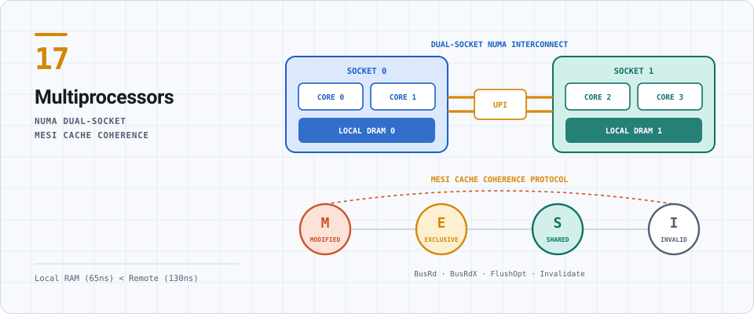
As computing scale increases, the idealized model of a single, uniform pool of memory and a set of identical cores gives way to more complex architectures. Large-scale systems are characterized by Non-Uniform Memory Access (NUMA) topologies, complex cache coherency protocols, and the tight integration of specialized hardware accelerators for Machine Learning (ML) and High-Performance Computing (HPC). These hardware realities impose unique constraints on operating system design, runtime libraries, and systems software.
17.1 NUMA Topologies and Locality Optimization
In a NUMA architecture, the system is composed of multiple processor sockets or chiplets, each possessing its own local memory controller and associated Dynamic Random-Access Memory (DRAM) (Figure 17-1). While any core can access any physical address, latency and bandwidth depend strongly on physical distance between the executing core and the target memory controller. Accessing local DRAM is fast, whereas traversing the inter-socket interconnect (such as Intel Ultra Path Interconnect (UPI), AMD Infinity Fabric, or Apple UltraFusion) incurs a measurable latency and bandwidth penalty.
To preserve locality, operating systems combine two policies: processor affinity (scheduling threads onto cores belonging to the socket that holds their working set) and first-touch placement (allocating physical frames on the socket of the thread that first faults and writes a newly mapped page, rather than the thread that merely called mmap()).

17.2 Cache Coherence and the False Sharing Phenomenon
Hardware-level cache coherence guarantees that all cores observe a consistent value for every memory address, typically via variants of the Modified-Exclusive-Shared-Invalid (MESI) or Modified-Owned-Exclusive-Shared-Invalid (MOESI) state machine (Figure 17-2). Each 64-byte cache line in a core’s private cache carries a coherence state: Invalid (not present), Shared (clean copy potentially held by multiple cores), Exclusive (clean copy held by this core alone), or Modified (dirty copy owned exclusively by this core). Before a core can write to a Shared line, it must broadcast a Read-For-Ownership (RFO) invalidation across the interconnect, forcing every sibling core to mark its copy Invalid.
This cache-line granularity creates false sharing (Figure 17-3): when two threads update logically independent variables that happen to reside within the same 64-byte cache line, every store invalidates the peer core’s cache line, causing the line to bounce continuously across the interconnect and degrading throughput by an order of magnitude. Padding concurrently written fields to cache-line boundaries (alignas(64) in C++20; #[repr(align(64))] in Rust) eliminates the contention completely, as verified in Listings 17-1 and 17-2.


Listing 17-1. Two counters in one cache line and in two (C++20). (code/ch17/false_sharing.cpp)
// ch17/false_sharing.cpp: two hot counters, one cache line versus two.
// The counters use atomic increments: the standard pattern for shared counters.
#include <atomic>
#include <chrono>
#include <cstdint>
#include <cstdio>
#include <thread>
struct Unpadded {
alignas(64) std::atomic<uint64_t> a{0};
std::atomic<uint64_t> b{0}; // shares a's cache line
};
struct Padded {
alignas(64) std::atomic<uint64_t> a{0};
alignas(64) std::atomic<uint64_t> b{0}; // each field owns a line
};
template <typename C>
double run(C& c) {
constexpr uint64_t kIters = 40'000'000;
auto t0 = std::chrono::steady_clock::now();
std::thread t1([&] {
for (uint64_t i = 0; i < kIters; ++i) {
c.a.fetch_add(1, std::memory_order_relaxed);
}
});
std::thread t2([&] {
for (uint64_t i = 0; i < kIters; ++i) {
c.b.fetch_add(1, std::memory_order_relaxed);
}
});
t1.join();
t2.join();
auto t1e = std::chrono::steady_clock::now();
return std::chrono::duration<double, std::milli>(t1e - t0).count();
}
int main() {
Unpadded u;
Padded p;
run(u); // warmup
run(p);
double tu = run(u);
double tp = run(p);
printf("unpadded (shared line): %7.1f ms\n", tu);
printf("padded (separate) : %7.1f ms\n", tp);
printf("ratio : %5.2fx\n", tu / tp);
printf("(unpadded %llu, padded %llu)\n",
static_cast<unsigned long long>(u.a.load()),
static_cast<unsigned long long>(p.a.load()));
}
Output 17-1. One run on the verification machine.
unpadded (shared line): 1745.7 ms
padded (separate) : 340.6 ms
ratio : 5.13x
(unpadded 80000000, padded 80000000)
Listing 17-2. The same experiment in Rust, with atomic counters. (code/ch17/false_sharing.rs)
// ch17/false_sharing.rs: the same experiment with atomic counters.
use std::sync::atomic::{AtomicU64, Ordering};
use std::thread;
use std::time::Instant;
#[repr(C, align(64))]
struct Unpadded {
a: AtomicU64,
b: AtomicU64, // shares a's cache line
}
#[repr(C, align(64))]
struct Padded {
a: AtomicU64,
pad: [u64; 7],
b: AtomicU64, // 64 bytes after a: its own line
}
fn bench(a: &AtomicU64, b: &AtomicU64) -> f64 {
const ITERS: u64 = 40_000_000;
let t0 = Instant::now();
thread::scope(|s| {
s.spawn(|| {
for _ in 0..ITERS {
a.fetch_add(1, Ordering::Relaxed);
}
});
s.spawn(|| {
for _ in 0..ITERS {
b.fetch_add(1, Ordering::Relaxed);
}
});
});
t0.elapsed().as_secs_f64() * 1000.0
}
fn main() {
let u = Unpadded { a: AtomicU64::new(0), b: AtomicU64::new(0) };
let p = Padded { a: AtomicU64::new(0), pad: [0; 7], b: AtomicU64::new(0) };
bench(&u.a, &u.b); // warmup
bench(&p.a, &p.b);
let tu = bench(&u.a, &u.b);
let tp = bench(&p.a, &p.b);
println!("unpadded (shared line): {tu:7.1} ms");
println!("padded (separate) : {tp:7.1} ms");
println!("ratio : {:5.2}x", tu / tp);
println!(
"(unpadded {}, padded {})",
u.a.load(Ordering::Relaxed),
p.a.load(Ordering::Relaxed)
);
}Output 17-2.
unpadded (shared line): 1748.2 ms
padded (separate) : 337.5 ms
ratio : 5.18x
(unpadded 80000000, padded 80000000)
Hardware cache coherence guarantees correctness, not performance. Independent variables written concurrently must be padded to 64-byte cache line boundaries (alignas(64)); otherwise, hardware invalidation traffic serializes execution cores across the memory bus.
Run Listing 17-1 (code/ch17/false_sharing.cpp) or Listing 17-2 (code/ch17/false_sharing.rs) and compare elapsed time between the packed struct (both counters on one 64-byte cache line) and the alignas(64) padded struct. Notice how separating the two counters by 64 bytes eliminates MESI RFO ping-ponging and speeds up execution several-fold.
17.3 Hardware Accelerators: Discrete Architecture vs. Unified Memory Architecture (UMA)
Beyond general-purpose processors, modern servers increasingly rely on specialized hardware accelerators (such as Graphics Processing Units (GPUs), Neural Processing Units (NPUs), and cryptographic Application-Specific Integrated Circuits (ASICs)) to execute ML and HPC workloads across two distinct memory architectures.
17.3.1 The Discrete Accelerator Model (PCIe + Dedicated VRAM)
In traditional enterprise servers (such as x86 hosts paired with discrete Peripheral Component Interconnect Express (PCIe) GPUs), the host processor and accelerator inhabit separate physical memory domains: general-purpose Double Data Rate (DDR4/DDR5) DRAM on the host, and High Bandwidth Memory (HBM) or Graphics Double Data Rate (GDDR) Video Random-Access Memory (VRAM) soldered onto the accelerator card. Executing a workload requires Direct Memory Access (DMA) transfers across PCIe: the operating system pins host pages (mlock or kernel page pinning) so the virtual memory subsystem cannot relocate frames mid-transfer, copies inputs across the PCIe bus (32 to 64 GB/s on PCIe 4.0/5.0, far slower than on-die memory), runs the kernel on the GPU, and copies results back to host DRAM.
17.3.2 Unified Memory Architecture (UMA) on Apple Silicon
Apple Silicon servers and high-performance Systems-on-Chip (SoCs) integrate CPU cores, GPU cores, Neural Engine (NPU), and media engines onto a single silicon package sharing one wide memory pool (exceeding 800 GB/s on Ultra-tier parts). Because every compute unit addresses the same physical memory through a shared System Level Cache (SLC), PCIe copies and host pinning vanish: a daemon can ingest network packets on the CPU and pass the buffer pointer directly to the GPU or NPU with sub-microsecond dispatch latency.
17.3.3 Heterogeneous Cache Coherency and Memory Barriers
While UMA eliminates physical memory copies, CPUs and accelerators maintain distinct local caches: CPUs optimize for low-latency coherent Level 1/Level 2 caches, whereas GPUs and NPUs rely on wide streaming write-combining buffers and tile caches. Without explicit synchronization, an accelerator can read stale data still sitting in dirty CPU cache lines, or the CPU can read stale cached bytes after the accelerator finishes. Systems runtimes on UMA platforms therefore enforce explicit cache flushes and invalidations alongside hardware memory fences and command-queue completion events (such as Apple Metal command buffers and shared events) to establish strict happens-before visibility across heterogeneous compute units.
In Unified Memory Architectures, “zero-copy” does not mean “zero-synchronization.” Forgetting to flush CPU write buffers or neglecting GPU completion fences leads to silent, non-deterministic data corruption that cannot be caught by standard CPU memory sanitizers.
- NUMA systems enforce non-uniform access latencies; schedulers must optimize for socket affinity and first-touch memory allocation.
- False sharing occurs when concurrent threads write distinct variables within the same 64-byte cache line; align concurrently written data to 64 bytes (
alignas(64)). - Discrete accelerators are constrained by PCIe DMA transfer latency, host memory pinning, and separate memory pools.
- Apple Silicon Unified Memory Architecture (UMA) provides zero-copy memory sharing across CPU, GPU, and NPU cores, reaching sub-microsecond accelerator dispatch.
- Systems programming for UMA requires explicit management of cache flushes, memory barriers, and synchronization events across heterogeneous compute cores.
18. Performance Analysis and Observability
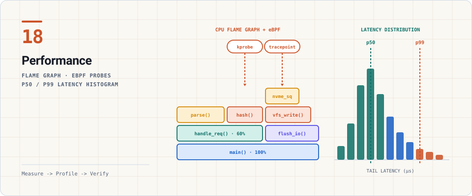
Systems performance optimization is an empirical engineering discipline. Intuition about why a program is slow is routinely wrong on modern out-of-order superscalar processors with multi-level caches, hardware prefetchers, and complex kernel Input/Output (I/O) stacks. Rigorous diagnosis follows a closed scientific loop: characterize which physical resource bounds throughput or latency (execution pipeline, memory hierarchy, lock contention, storage, or network), instrument the live system with low-overhead observability tools, hypothesize a single structural change, and verify the improvement under controlled statistical measurements.
18.1 The Empirical Method and the Memory Latency Hierarchy
Performance triage begins by classifying whether a workload is on-CPU (compute-bound or stalled on cache or Translation Lookaside Buffer (TLB) misses while holding a core) or off-CPU (blocked in kernel wait queues awaiting Solid-State Drive (SSD) I/O, network packets, or contended mutexes).
When a workload runs on-CPU, the dominant performance cliff on modern hardware is the three-order-of-magnitude latency gap across the memory hierarchy (Figure 18-1):
- Processor Registers (~0.3 ns, 1 cycle): Private operand storage inside the execution pipeline.
- L1 Cache (32 to 64 KiB per core, ~1 ns, 3 to 4 cycles): Split instruction and data caches, accessed virtually in parallel with the L1
TLB. - L2 Cache (256 KiB to 4 MiB per core, ~3 to 5 ns, 10 to 14 cycles): Unified per-core cache absorbing L1 capacity misses.
- L3 / System-Level Cache (8 to 128 MiB shared, ~12 to 20 ns, 35 to 55 cycles): Shared across cores; last stop before crossing the memory controller to off-chip Dynamic Random-Access Memory (
DRAM). - Main
DRAM(~60 to 100 ns, 200 to 300 cycles): Hundreds of execution slots can stall inside the core’s Reorder Buffer while a single pointer-chasing load waits forDRAM.
Sequential scans mask much of DRAM latency because the processor’s hardware stride prefetcher detects regular address increments and fetches future 64-byte cache lines into L1/L2 ahead of the instruction stream. Listings 18-1 and 18-2 isolate raw cache-level capacity cliffs by striding through progressively larger working sets (from 4 KiB up to 64 MiB) in 64-byte steps: as soon as the working set exceeds L1, L2, and then L3 capacity, measured nanoseconds per access climb sharply in visible plateaus.

Listing 18-1. Reading a buffer with a stride of 64 bytes (C++20). (code/ch18/cache_bench.cpp)
// ch18/cache_bench.cpp: walk a buffer with stride 64; each size step
// crosses one more level of the memory hierarchy.
#include <chrono>
#include <cstdint>
#include <cstdio>
#include <vector>
static double ns_per_access(size_t bytes) {
constexpr uint64_t kAccesses = 16'000'000;
std::vector<uint8_t> v(bytes);
// Touch every 64th byte once so page faults do not dominate the timing.
for (size_t i = 0; i < bytes; i += 64) v[i] = 1;
uint64_t sum = 0;
size_t i = 0;
auto t0 = std::chrono::steady_clock::now();
for (uint64_t k = 0; k < kAccesses; ++k) {
sum += v[i];
i += 64;
if (i >= bytes) i = 0;
}
auto t1 = std::chrono::steady_clock::now();
double ns = std::chrono::duration<double, std::nano>(t1 - t0).count() / kAccesses;
printf(" %9zu bytes %7.1f ns per access (checksum %llu)\n", bytes, ns,
static_cast<unsigned long long>(sum));
return ns;
}
int main() {
printf("stride 64 bytes, 16,000,000 accesses per size\n\n");
for (size_t s = 16 * 1024; s <= 256u * 1024 * 1024; s *= 4) {
ns_per_access(s);
}
}
Output 18-1. One run on the verification machine.
stride 64 bytes, 16,000,000 accesses per size
16384 bytes 0.7 ns per access (checksum 16000000)
65536 bytes 0.7 ns per access (checksum 16000000)
262144 bytes 0.8 ns per access (checksum 16000000)
1048576 bytes 1.4 ns per access (checksum 16000000)
4194304 bytes 1.8 ns per access (checksum 16000000)
16777216 bytes 3.7 ns per access (checksum 16000000)
67108864 bytes 3.8 ns per access (checksum 16000000)
268435456 bytes 4.0 ns per access (checksum 16000000)
Listing 18-2. The same program in Rust. (code/ch18/cache_bench.rs)
// ch18/cache_bench.rs: the same memory-hierarchy walk in Rust.
use std::time::Instant;
fn ns_per_access(bytes: usize) {
const ACCESSES: u64 = 16_000_000;
let mut v = vec![0u8; bytes];
// Touch every 64th byte once so page faults do not dominate the timing.
for i in (0..bytes).step_by(64) {
v[i] = 1;
}
let mut sum: u64 = 0;
let mut i = 0usize;
let t0 = Instant::now();
for _ in 0..ACCESSES {
sum += v[i] as u64;
i += 64;
if i >= bytes {
i = 0;
}
}
let ns = t0.elapsed().as_nanos() as f64 / ACCESSES as f64;
println!(" {bytes:9} bytes {ns:7.1} ns per access (checksum {sum})");
}
fn main() {
println!("stride 64 bytes, 16,000,000 accesses per size\n");
let mut s = 16 * 1024usize;
while s <= 256 * 1024 * 1024 {
ns_per_access(s);
s *= 4;
}
}Output 18-2.
stride 64 bytes, 16,000,000 accesses per size
16384 bytes 0.7 ns per access (checksum 16000000)
65536 bytes 0.7 ns per access (checksum 16000000)
262144 bytes 0.7 ns per access (checksum 16000000)
1048576 bytes 1.3 ns per access (checksum 16000000)
4194304 bytes 1.9 ns per access (checksum 16000000)
16777216 bytes 3.6 ns per access (checksum 16000000)
67108864 bytes 3.9 ns per access (checksum 16000000)
268435456 bytes 4.5 ns per access (checksum 16000000)
18.2 Observability: Hardware PMU Counters, Profilers, Tracers, and Flame Graphs
Understanding how observability tools collect data prevents misinterpreting their output or distorting the system under measurement.
18.2.1 The Hardware Performance Monitoring Unit (PMU)
Every modern x86-64 and ARM64 core contains a dedicated PMU: a bank of silicon event counters that increment in parallel with execution at zero software cost. Tools such as Linux perf stat program these counters to measure exact microarchitectural events:
cyclesandinstructions(Instructions Per Cycle (IPC)): A modern superscalar core can retire 4 to 8 instructions per cycle. Observing anIPCof0.3on a supposedly compute-bound loop immediately reveals that the core is stalling on L3 cache misses, branch mispredictions, or atomic lock bus traffic.- Last-Level Cache (
LLC) and DataTLB(dTLB) Misses (LLC-load-misses,dTLB-load-misses): Quantify whether stalls stem from working-set overflow out of theLLCorTLBreach exhaustion (addressable with 2 MiB huge pages, Chapter 7).
18.2.2 Sampling Profilers, Event Tracers, and Flame Graphs
Sampling profilers (perf record, macOS sample / Instruments) program a PMU counter to overflow every N cycles (or every 1 ms via a timer) and raise a Non-Maskable Interrupt (NMI). Inside the interrupt handler, the kernel records the interrupted instruction pointer (RIP/PC) and walks the Frame Pointer chain (RBP/x29, Chapter 2) to capture the call stack. Because sampling wakes only ~1,000 times per second, runtime overhead stays below 1 to 2%, making it safe in production clusters.
Event tracers (strace, dtrace, Extended Berkeley Packet Filter (eBPF) / bpftrace) record every discrete occurrence of a selected event (such as every open, read, or futex call with arguments and duration). Legacy strace attaches via ptrace(2), pausing the traced process twice per system call and imposing 10× to 100× slowdowns. Modern eBPF avoids user-space context switches by running verified bytecode directly inside Ring 0 tracepoints and aggregating latency histograms in kernel maps, cutting tracing overhead to a few percent.
Flame Graphs aggregate thousands of profiler stack samples into a single visual hierarchy (Figure 18-2). Two reading rules govern interpretation: the Y-axis represents call-stack depth (main() at the bottom, active leaf function on-CPU at the top), and the X-axis represents alphabetical proportion of total samples, not chronological time. A wide flat plateau at the top of a flame graph immediately pinpoints a leaf function consuming a large fraction of total CPU cycles; narrow spikes represent brief calls.
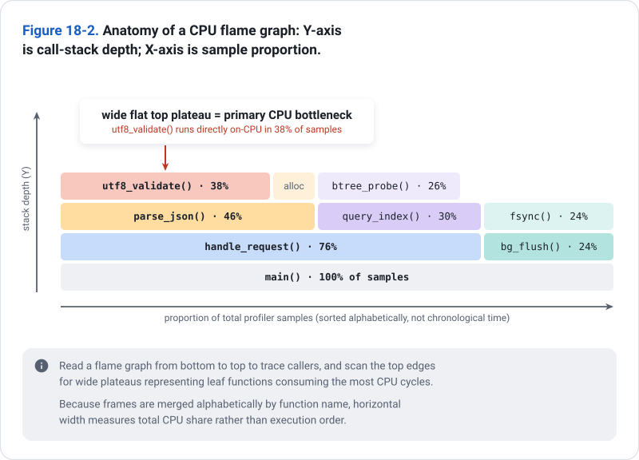
18.3 Statistical Rigor and Measurement Pitfalls
Reporting a single arithmetic mean hides the exact latency spikes that break production Service-Level Objectives (SLOs). Consider a web gateway that fans out one user request to 100 backend shards in parallel and waits for the slowest shard to respond. Even if each individual shard responds in 2 ms on average and has a 99th percentile (p99) latency of 50 ms, the probability that at least one of the 100 parallel shard calls hits the slow 1% tail is 1 - 0.99^100 = 63.4%. In distributed fan-out architectures, tail latency (p99 and p99.9) becomes the common case.
Reliable systems benchmarking must therefore report full latency distributions (p50, p95, p99, p99.9) and guard against four classic measurement traps:
- Unoptimized builds and dead-code elimination: Benchmarking debug binaries measures compiler boilerplate rather than hardware limits; conversely, under
-O2/-O3, compilers delete loops whose results are never observed unless outputs are consumed (as in Listing 18-1’s checksum print) or fenced withstd::hint::black_box. - Cold-start bias: The first iteration of a benchmark suffers minor page faults, cold instruction and data caches, cold
TLBs, and low processor turbo clocks. Always separate warm-up iterations from measured trials. - Coordinated omission: When a single-threaded load generator waits for one slow response before sending the next request, it pauses during server stalls and fails to record the queuing delay that real open-loop users experience.
- Power-management and frequency scaling noise: Modern laptops and servers dynamically throttle frequency (
Turbo Boost, thermal throttling) and migrate threads across performance and efficiency cores. Pin benchmark threads when isolating microarchitectural costs, and run multiple independent trials to verify low variance.
Performance engineering is empirical: measure hardware PMU counters (IPC, LLC misses, dTLB misses) and flame graphs before optimizing, and evaluate full tail-latency distributions (p99, p99.9) rather than arithmetic averages, because fan-out amplifies rare tail spikes into the common case.
Compile Listing 18-1 (code/ch18/cache_bench.cpp) with -O2 and run it; then change the stride from 64 bytes to 4,096 bytes to observe dTLB misses compounding L2/L3 cache misses as the working set grows from 4 KiB to 64 MiB.
Reading a CPU flame graph’s X-axis as chronological time or benchmarking without consuming the loop result. Wide flame-graph frames represent alphabetical sample proportion (total CPU share), and an unused benchmark accumulator allows -O3 to delete the entire measured loop at compile time.
19. Systems Interview Problems: Derivations and Reference Implementations
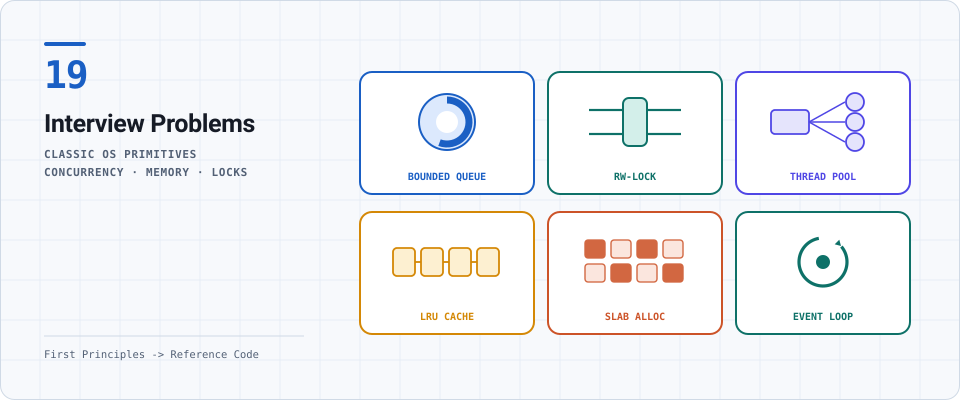
The systems programming interview serves as an empirical evaluation of an engineer’s capacity to translate low-level hardware constraints into correct, deterministic software abstractions. While application-level engineering frequently abstracts away execution costs, systems engineering requires direct reasoning from first principles: the mechanics of cache coherence, memory ordering semantics, kernel privilege transitions, memory fragmentation, and atomic instruction guarantees.
19.1 Architectural Framework and Problem-Solving Discipline
Every robust systems component is derived from three foundational tenets:
- Formal Contract Specification: Defining explicit preconditions, postconditions, and resource ownership boundaries before writing code. This encompasses capacity limits, pointer ownership transfers, lifetime bounds, and the exact threading model.
- State Invariant Formulation: Explicitly identifying the logical properties that must hold across all execution paths. In concurrent programming, this dictates the exact state protected by each mutex or synchronized via atomic variables.
- Boundary and Interleaving Analysis: Rigorously tracing edge cases (such as queue saturation, memory depletion, cache line false sharing, and spurious wakeups) under arbitrary thread interleavings.
This chapter presents ten canonical systems programming problems, followed by a rigorous examination of six fundamental operating system mechanisms. Each problem articulates the underlying systems model, establishes the mathematical and concurrency invariants, provides verified reference implementations in C++20 and Rust (2024 edition), and evaluates subtle hardware and language-level trade-offs.
19.2 The Bounded Blocking Queue
A bounded blocking queue is the foundational synchronization primitive underpinning multi-threaded producer-consumer architectures. It provides a thread-safe FIFO buffer of fixed maximum capacity, decoupling production rates from consumption rates while preventing unbounded heap exhaustion.
19.2.1 Concurrency Model and Synchronization Primitives
Managing a shared bounded buffer requires resolving two distinct concurrency hazards:
- Mutual Exclusion: Concurrent threads must not mutate queue pointers, lengths, or ring indices simultaneously, which would induce data races and state corruption.
- Predicate Coordination: When the queue reaches capacity, producer threads must suspend execution until space becomes available. Conversely, when the queue is empty, consumer threads must suspend until an item is enqueued.
A mutex provides mutual exclusion but possesses no native mechanism for suspended waiting on arbitrary logical state. A thread that loops continuously while polling queue occupancy (“busy-waiting”) wastes processor cycles and starves other threads contending for execution cores.
To resolve this, the queue pairs a mutex with condition variables. A condition variable enables a thread to release its held mutex and enter a sleep state atomically in a single hardware-supervised step. The atomicity of this transition is essential: if releasing the lock and sleeping were separate operations, a competing thread could signal a state change in the intervening gap, causing the waiting thread to sleep indefinitely, a catastrophic concurrency failure known as a lost wakeup.
Because the queue coordinates two opposing boundary states, it employs dual condition variables:
is_full: Suspends producer threads while the queue is full (size == capacity).is_empty: Suspends consumer threads while the queue is empty (size == 0).

19.2.2 State Invariants and Predicate Verification
The queue maintains the following fundamental invariant across all operations:
∀ t under mutex lock: 0 ≤ size ≤ capacity
Every state modification adheres to strict pre- and post-conditions:
push(item): Evaluatesis_full(). If true, the caller suspends onis_full. Once unblocked withsize < capacity, it appends the item, incrementssize, and signalsis_empty.pop(): Evaluatesis_empty(). If true, the caller suspends onis_empty. Once unblocked withsize > 0, it dequeues the front item, decrementssize, and signalsis_full.
A critical requirement in predicate synchronization is the repeated evaluation loop (while (is_full()) / while (is_empty())). When a thread is awakened, it is merely moved from the condition variable’s sleep queue to the mutex’s contention queue; it does not instantaneously resume execution with the lock. By the time the thread re-acquires the mutex, an intervening thread may have intercepted the vacancy or consumed the available item. Furthermore, POSIX and operating system schedulers permit spurious wakeups, where a waiting thread unblocks without any explicit notification. Encapsulating the wait operation within a predicate loop ensures that a thread never advances until the condition is verified under exclusive lock ownership.
19.2.3 Reference Implementation
Listing 19-1. A bounded blocking queue (C++20). (code/ch19/bounded_queue.cpp)
// ch19/bounded_queue.cpp: a blocking queue of fixed capacity.
#include <condition_variable>
#include <cstdint>
#include <deque>
#include <iostream>
#include <mutex>
#include <thread>
#include <vector>
/// A queue that blocks producers while it is full and consumers while it is empty.
template <typename T>
class BoundedQueue {
public:
/// A capacity of 0 would block every push forever, so the minimum is 1.
explicit BoundedQueue(size_t capacity) : capacity_(capacity == 0 ? 1 : capacity) {}
/// Appends one item. Waits while the queue is full.
void push(T item) {
std::unique_lock<std::mutex> lock(mutex_);
while (is_full()) {
is_full_.wait(lock);
}
items_.push_back(std::move(item));
is_empty_.notify_one();
}
/// Removes the oldest item. Waits while the queue is empty.
T pop() {
std::unique_lock<std::mutex> lock(mutex_);
while (is_empty()) {
is_empty_.wait(lock);
}
T item = std::move(items_.front());
items_.pop_front();
is_full_.notify_one();
return item;
}
private:
bool is_full() const { return items_.size() == capacity_; }
bool is_empty() const { return items_.empty(); }
const size_t capacity_;
std::deque<T> items_;
std::mutex mutex_;
std::condition_variable is_full_; // producers sleep here while the queue is full
std::condition_variable is_empty_; // consumers sleep here while the queue is empty
};
int main() {
constexpr uint64_t kItemsPerThread = 50'000;
constexpr uint64_t kThreadPairs = 2;
BoundedQueue<uint64_t> queue(8);
uint64_t consumed_sum[kThreadPairs] = {0, 0};
std::vector<std::thread> threads;
for (uint64_t producer = 0; producer < kThreadPairs; ++producer) {
threads.emplace_back([&queue, producer] {
uint64_t first = producer * kItemsPerThread + 1;
for (uint64_t value = first; value < first + kItemsPerThread; ++value) {
queue.push(value);
}
});
}
for (uint64_t consumer = 0; consumer < kThreadPairs; ++consumer) {
threads.emplace_back([&queue, &consumed_sum, consumer] {
for (uint64_t taken = 0; taken < kItemsPerThread; ++taken) {
consumed_sum[consumer] += queue.pop();
}
});
}
for (std::thread& thread : threads) {
thread.join();
}
uint64_t item_count = kThreadPairs * kItemsPerThread;
uint64_t expected = item_count * (item_count + 1) / 2;
uint64_t consumed = consumed_sum[0] + consumed_sum[1];
std::cout << "expected sum " << expected << "\n"
<< "consumed sum " << consumed << "\n"
<< "match " << (expected == consumed ? "yes" : "NO") << "\n";
}
Output 19-1.
expected sum 5000050000
consumed sum 5000050000
match yes
Listing 19-2. The same queue in Rust. (code/ch19/bounded_queue.rs)
// ch19/bounded_queue.rs: a blocking queue of fixed capacity.
use std::collections::VecDeque;
use std::sync::{Arc, Condvar, Mutex};
use std::thread;
type QueueResult<T> = Result<T, &'static str>;
const POISONED: &str = "a thread panicked while it held the queue mutex";
const PANICKED: &str = "a worker thread panicked";
/// A queue that blocks producers while it is full and consumers while it is empty.
struct BoundedQueue<T> {
capacity: usize,
items: Mutex<VecDeque<T>>,
is_full: Condvar, // producers sleep here while the queue is full
is_empty: Condvar, // consumers sleep here while the queue is empty
}
impl<T> BoundedQueue<T> {
fn new(capacity: usize) -> Self {
// A capacity of 0 would block every push forever, so the minimum is 1.
BoundedQueue {
capacity: capacity.max(1),
items: Mutex::new(VecDeque::new()),
is_full: Condvar::new(),
is_empty: Condvar::new(),
}
}
/// Appends one item. Waits while the queue is full.
fn push(&self, item: T) -> QueueResult<()> {
let items = self.items.lock().map_err(|_| POISONED)?;
let mut items = self
.is_full
.wait_while(items, |q| q.len() == self.capacity)
.map_err(|_| POISONED)?;
items.push_back(item);
self.is_empty.notify_one();
Ok(())
}
/// Removes the oldest item. Waits while the queue is empty.
fn pop(&self) -> QueueResult<T> {
let items = self.items.lock().map_err(|_| POISONED)?;
let mut items = self
.is_empty
.wait_while(items, |q| q.is_empty())
.map_err(|_| POISONED)?;
let item = items
.pop_front()
.ok_or("the queue was empty after the wait")?;
self.is_full.notify_one();
Ok(item)
}
}
fn main() -> QueueResult<()> {
const ITEMS_PER_THREAD: u64 = 50_000;
const THREAD_PAIRS: u64 = 2;
let queue = Arc::new(BoundedQueue::new(8));
let mut producers = Vec::new();
let mut consumers = Vec::new();
for producer in 0..THREAD_PAIRS {
let queue = Arc::clone(&queue);
producers.push(thread::spawn(move || -> QueueResult<()> {
let first = producer * ITEMS_PER_THREAD + 1;
for value in first..first + ITEMS_PER_THREAD {
queue.push(value)?;
}
Ok(())
}));
}
for _ in 0..THREAD_PAIRS {
let queue = Arc::clone(&queue);
consumers.push(thread::spawn(move || -> QueueResult<u64> {
let mut sum = 0;
for _ in 0..ITEMS_PER_THREAD {
sum += queue.pop()?;
}
Ok(sum)
}));
}
for producer in producers {
let pushed = producer
.join()
.map_err(|_| PANICKED)?;
pushed?;
}
let mut consumed = 0;
for consumer in consumers {
let sum = consumer
.join()
.map_err(|_| PANICKED)?;
consumed += sum?;
}
let item_count = THREAD_PAIRS * ITEMS_PER_THREAD;
let expected = item_count * (item_count + 1) / 2;
let verdict = if expected == consumed { "yes" } else { "NO" };
println!("expected sum {expected}");
println!("consumed sum {consumed}");
println!("match {verdict}");
Ok(())
}Output 19-2.
expected sum 5000050000
consumed sum 5000050000
match yes
The verification harness executes two concurrent producer threads and two concurrent consumer threads, processing 100,000 sequential integers (1 to 100,000). The mathematical sum of these values is:
Sum = (100,000 × 100,001) / 2 = 5,000,050,000
The verified outputs confirm that the aggregate consumed sum exactly matches this expectation, demonstrating zero item loss, zero duplication, and strict FIFO integrity under heavy thread contention.
In Rust, acquiring a mutex lock or waiting on a condition variable returns a PoisonError if another thread panicked while holding the guard. In the reference implementation, this error is converted into a structured message and propagated deterministically via the ? operator.
19.2.4 Backing-Store Variants and Building the Ring Buffer by Hand
In operating systems and embedded engineering interviews, picking the right underlying container for the access pattern is evaluated closely, and a standard follow-up immediately after Listing 19-2 is: “Now build the queue without VecDeque or std::deque.” Understanding every backing-store variant, and the exact ownership rules behind each one, turns a routine queue question into a demonstration of systems mastery.
| Backing Store | FIFO / LIFO | Push / Pop Cost | Memory & Safety Profile | When to Use |
|---|---|---|---|---|
VecDeque<T> / std::deque<T> | FIFO | O(1) / O(1) | Contiguous ring using MaybeUninit internally (Rust) or chunked blocks (C++); zero manual unsafe | Default interview choice for mutex-backed bounded queues |
Hand-rolled Vec<Option<T>> (head + len) | FIFO | O(1) / O(1) | Fixed allocation after new(), zero unsafe, handles any non-Copy / non-Default T; small Option tag overhead | Follow-up: “implement without VecDeque” in safe Rust / C++ (std::optional<T>) |
Raw Box<[MaybeUninit<T>]> | FIFO | O(1) / O(1) | Zero Option tag overhead, no Default bound; requires unsafe (write, assume_init_read) and custom Drop | Production channels, kernel rings, and lock-free SPSC queues (Section 19.4) |
Two-stack Vec<T> (inbox + outbox) | FIFO | Amortized O(1) | Plain Vec<T> with zero Option<T> and zero unsafe, but reverses inbox in O(N) whenever outbox empties | Functional or safe FIFO when occasional O(N) tail-latency spikes are acceptable |
Plain Vec<T> (push + pop) | LIFO | O(1) / O(1) | Plain Vec<T>, zero overhead, improves L1 cache warmth for recent items | Object pools and worker stacks where FIFO ordering is not required |
Plain Vec<T> (push + remove(0)) | FIFO | O(1) / O(N) | Shifts every remaining element left via memmove on every pop | Interview red flag unless the O(N) cost is called out explicitly for tiny bounds |
Why VecDeque Is the Right First Answer
For a mutex-guarded bounded queue in an interview, starting with VecDeque::with_capacity(capacity) (or std::deque<T> in C++) and stating the reasoning clearly is the strongest opening: VecDeque is already a contiguous circular ring buffer whose push_back and pop_front operations both run in O(1) time without reallocating once pre-sized, while using MaybeUninit<T> internally to avoid Option<T> discriminant padding. Using Vec::remove(0) is a mild red flag on systems teams because removing from index 0 copies N - 1 elements left on every dequeue, turning a constant-time primitive into a linear bottleneck.
Why a Hand-Rolled Safe Ring Uses Vec<Option<T>> (and Not Plain Vec<T>)
When an interviewer asks a candidate to drop VecDeque and write the circular buffer directly, three Rust ownership invariants explain why a generic ring buffer cannot be backed by a plain Vec<T>:
- Empty slots cannot remain uninitialized in
Vec<T>: Every index0..vec.len()in aVec<T>must hold a fully initializedT. At construction, the ring is empty, and arbitrary types such asString,TcpStream, orJobdo not implementDefault. (Plainvec![0u8; cap]works only forT: Copy + Default, such as a raw byte buffer.) - Moving a non-
Copyitem out ofbuf[head]: Writinglet item = self.buf[self.head];fails to compile for any owning type such asStringorBox<T>, becauseVec<T>retains ownership of the slot and would double-free it when overwritten or dropped. Wrapping each slot inOption<T>letsself.buf[self.head].take()atomically move ownership of theTto the caller while leavingNonein the slot. - Sound destruction on
Drop: When the ring is dropped while partially populated,Vec<Option<T>>executes destructors strictly on liveSome(T)slots and skips emptyNoneslots automatically.
Avoiding the Full-versus-Empty Ambiguity with (head, len)
A classic bug in hand-rolled ring buffers arises from tracking only (head, tail): when head == tail, the ring could be either completely empty (len == 0) or completely full (len == cap). Traditional fixes waste one array slot (cap + 1 allocation) or add a separate full: bool flag. Tracking head (index of the oldest live element) together with len (count of live elements) eliminates the ambiguity cleanly:
is_empty()islen == 0is_full()islen == cap- The next write index is derived deterministically as
tail = (head + len) % cap(or(head + len) & (cap - 1)whencapis a power of two).

Listing 19-2a. Bounded blocking queue backed by a hand-rolled Ring<T> without std::deque (C++20). (code/ch19/ring_buffer.cpp)
// ch19/ring_buffer.cpp: Hand-rolled fixed-capacity ring buffer (without std::deque)
// paired with std::mutex and dual std::condition_variables.
#include <cassert>
#include <condition_variable>
#include <cstddef>
#include <cstdio>
#include <mutex>
#include <optional>
#include <string>
#include <thread>
#include <utility>
#include <vector>
template <typename T>
class Ring {
public:
explicit Ring(size_t capacity)
: buf_(capacity == 0 ? 1 : capacity), head_(0), len_(0) {}
bool is_full() const { return len_ == buf_.size(); }
bool is_empty() const { return len_ == 0; }
void push_back(T item) {
size_t tail = (head_ + len_) % buf_.size();
buf_[tail].emplace(std::move(item));
++len_;
}
T pop_front() {
T item = std::move(*buf_[head_]);
buf_[head_].reset(); // Destroy moved-from slot so empty slots stay disengaged
head_ = (head_ + 1) % buf_.size();
--len_;
return item;
}
private:
std::vector<std::optional<T>> buf_;
size_t head_;
size_t len_;
};
template <typename T>
class BoundedRingQueue {
public:
explicit BoundedRingQueue(size_t capacity) : ring_(capacity) {}
void push(T item) {
{
std::unique_lock<std::mutex> lock(mu_);
not_full_.wait(lock, [this] { return !ring_.is_full(); });
ring_.push_back(std::move(item));
} // Unlock before notify_one to minimize mutex contention on wakeup
not_empty_.notify_one();
}
T pop() {
T item = [&] {
std::unique_lock<std::mutex> lock(mu_);
not_empty_.wait(lock, [this] { return !ring_.is_empty(); });
return ring_.pop_front();
}();
not_full_.notify_one();
return item;
}
private:
Ring<T> ring_;
std::mutex mu_;
std::condition_variable not_full_;
std::condition_variable not_empty_;
};
int main() {
constexpr size_t kTotal = 200;
BoundedRingQueue<std::string> queue(4);
std::thread producer([&] {
for (size_t i = 0; i < kTotal; ++i) {
queue.push("msg-" + std::to_string(i));
}
});
for (size_t expected = 0; expected < kTotal; ++expected) {
std::string received = queue.pop();
assert(received == "msg-" + std::to_string(expected));
}
producer.join();
printf("hand-rolled ring queue: %zu std::string messages transferred in strict FIFO order (verified)\n",
kTotal);
}
Output 19-2a.
hand-rolled ring queue: 200 std::string messages transferred in strict FIFO order (verified)
Listing 19-2b. The same hand-rolled Ring<T> over Vec<Option<T>> without VecDeque (Rust 2024). (code/ch19/ring_buffer.rs)
// ch19/ring_buffer.rs: Hand-rolled fixed-capacity ring buffer (without VecDeque)
// paired with a Mutex and dual Condvars for thread-safe bounded queuing.
use std::sync::{Arc, Condvar, Mutex};
use std::thread;
type QueueResult<T> = Result<T, &'static str>;
const POISONED: &str = "a thread panicked while holding the ring mutex";
const PANICKED: &str = "a worker thread panicked";
/// Fixed-capacity circular buffer backed by Vec<Option<T>>.
/// Tracking (head, len) instead of (head, tail) avoids the classic ambiguity
/// where head == tail could mean either completely empty or completely full.
struct Ring<T> {
buf: Vec<Option<T>>, // Fixed length after construction; never reallocates
head: usize, // Index of the oldest live element
len: usize, // Count of live elements currently stored
}
impl<T> Ring<T> {
fn new(capacity: usize) -> Self {
let cap = capacity.max(1);
Self {
buf: (0..cap).map(|_| None).collect(),
head: 0,
len: 0,
}
}
fn is_full(&self) -> bool {
self.len == self.buf.len()
}
fn is_empty(&self) -> bool {
self.len == 0
}
/// Inserts an item at the logical tail in O(1) time.
/// Caller guarantees `!self.is_full()`.
fn push_back(&mut self, item: T) {
let tail = (self.head + self.len) % self.buf.len();
self.buf[tail] = Some(item);
self.len += 1;
}
/// Removes and returns the oldest item at `head` in O(1) time.
/// `Option::take()` moves ownership of any non-Copy `T` out safely and leaves `None`.
fn pop_front(&mut self) -> Option<T> {
let item = self.buf[self.head].take()?;
self.head = (self.head + 1) % self.buf.len();
self.len -= 1;
Some(item)
}
}
struct BoundedRingQueue<T> {
ring: Mutex<Ring<T>>,
not_full: Condvar,
not_empty: Condvar,
}
impl<T> BoundedRingQueue<T> {
fn new(capacity: usize) -> Self {
Self {
ring: Mutex::new(Ring::new(capacity)),
not_full: Condvar::new(),
not_empty: Condvar::new(),
}
}
fn push(&self, item: T) -> QueueResult<()> {
let guard = self.ring.lock().map_err(|_| POISONED)?;
let mut ring = self
.not_full
.wait_while(guard, |r| r.is_full())
.map_err(|_| POISONED)?;
ring.push_back(item);
drop(ring); // Release lock before waking so the consumer does not immediately re-block
self.not_empty.notify_one();
Ok(())
}
fn pop(&self) -> QueueResult<T> {
let guard = self.ring.lock().map_err(|_| POISONED)?;
let mut ring = self
.not_empty
.wait_while(guard, |r| r.is_empty())
.map_err(|_| POISONED)?;
let item = ring
.pop_front()
.ok_or("ring was empty after wait_while")?;
drop(ring);
self.not_full.notify_one();
Ok(item)
}
}
fn main() -> QueueResult<()> {
// Use non-Copy String values to verify ownership transfer via Option::take()
// across many wrap-around cycles on a 4-slot ring buffer.
const TOTAL: usize = 200;
let queue = Arc::new(BoundedRingQueue::<String>::new(4));
let producer = {
let q = Arc::clone(&queue);
thread::spawn(move || -> QueueResult<()> {
for i in 0..TOTAL {
q.push(format!("msg-{i}"))?;
}
Ok(())
})
};
for expected in 0..TOTAL {
let received = queue.pop()?;
assert_eq!(received, format!("msg-{expected}"));
}
producer.join().map_err(|_| PANICKED)??;
println!("hand-rolled ring queue: {TOTAL} String messages transferred in strict FIFO order (verified)");
Ok(())
}Output 19-2b.
hand-rolled ring queue: 200 String messages transferred in strict FIFO order (verified)
19.2.5 Memory Layout: The Option<T> Tag, Niche Optimization, and MaybeUninit<T>
To evaluate when Vec<Option<T>> is completely free and when dropping down to Box<[MaybeUninit<T>]> (or C++ raw aligned byte storage) doubles cache efficiency, examine the exact bytes stored in RAM.
What Is the Option<T> Tag (Discriminant) and Why Does Option<u64> Cost 16 Bytes?
A Rust Option<T> (and C++’s std::optional<T>) is a tagged union: in memory, the program must be able to distinguish None from Some(value) at runtime. Consider storing a 64-bit integer u64:
- No unused bit patterns exist: A
u64uses every single one of its2^64bit combinations (0x0000_0000_0000_0000through0xFFFF_FFFF_FFFF_FFFF) as a legitimate number. The compiler cannot steal0oru64::MAXto meanNone. - Adding the discriminant tag: The compiler therefore appends a 1-byte tag (discriminant):
0meansNone,1meansSome. - Alignment padding doubles the slot size: In an array of elements, every
u64must start at an address divisible by its 8-byte hardware alignment (Chapter 8, Section 8.1.2). If a slot occupied only1 + 8 = 9bytes, slot1would start at misaligned byte offset9. The compiler therefore inserts 7 bytes of alignment padding between the tag and the payload (or after the payload in C++), inflatingsize_of::<Option<u64>>()from 8 bytes to 16 bytes. Inside a 64-byte L1 cache line,Vec<Option<u64>>holds only 4 elements instead of 8, doubling RAM usage and cutting L1 cache density in half.
Rust’s Niche Optimization (When Option<T> Costs Zero Extra Bytes)
Not every type exhausts all of its bit patterns. A reference (&T), Box<T>, NonNull<T>, String (whose internal heap pointer is NonNull<u8>), or bool (which uses only 0 and 1, leaving 2..255 unused) possesses at least one invalid bit pattern, called a niche. Whenever T has a niche, the Rust compiler encodes None using that forbidden bit pattern (for example, all-zeros 0x0 for Box<T> or String) and eliminates the discriminant byte and padding completely:
size_of::<Option<Box<u64>>>() == 8(identical toBox<u64>, zero overhead)size_of::<Option<String>>() == 24(identical toString, zero overhead)- By contrast, C++’s
std::optional<T>does not perform niche optimization:sizeof(std::optional<std::string>)inflates from 24 bytes to 32 bytes (24-bytestd::string+ 1-byte engagedbool+ 7 bytes padding).
Zero-Overhead Storage for Every Type: MaybeUninit<T> and C++ Aligned Raw Bytes
Even with Rust’s niche optimization, plain numeric types (u32, u64, i64, f64, fixed-size structs of integers) have no niche, so Option<T> still pays tag plus padding overhead. Yet inside a ring buffer, storing a per-slot tag is redundant: the ring’s own (head, len) indices already tell us which slots are initialized ((head + k) % cap for 0 <= k < len) and which slots are empty.
Rust’s std::mem::MaybeUninit<T> (internally a #[repr(transparent)] union of () and ManuallyDrop<T>) exploits this exact insight:
- Exact byte-for-byte layout of
T:size_of::<MaybeUninit<T>>() == size_of::<T>()andalign_of::<MaybeUninit<T>>() == align_of::<T>(), packing 8u64slots per 64-byte cache line (Figure 19-3). - Explicit initialization and extraction: Empty slots are created with
MaybeUninit::uninit()(noDefaultbound);push_backinitializes a slot via.write(item);pop_frontmoves ownership out viaunsafe { self.buf[head].assume_init_read() }and immediately advancesheadand decrementslenso the slot is never read twice. - Mandatory manual
Drop: BecauseMaybeUninit<T>deliberately suppresses automatic destructors (otherwise Rust would attempt to drop garbage uninitialized bytes),RawRing<T>must implementDropto pop and drop only the live slots[head .. (head + len) % cap). - C++20 counterpart: Storing
alignas(T) std::byte bytes[sizeof(T)]per slot, constructing in place withstd::construct_at(placementnew), moving out and ending lifetime withstd::destroy_at, and destroying remaining live slots in~RawRing().
Table 19-1. Verified 64-bit memory layout comparison (x86-64 / ARM64).
| Type | Rust 2024 Size | C++20 Equivalent Size | Slots per 64 B Cache Line | Per-Slot Tag Overhead |
|---|---|---|---|---|
u64 / uint64_t | 8 B | 8 B | 8 | None |
Option<u64> / std::optional<uint64_t> | 16 B | 16 B | 4 | 1 B tag + 7 B padding (2x) |
Option<Box<u64>> / std::optional<unique_ptr<uint64_t>> | 8 B (niche) | 16 B | 8 (Rust) / 4 (C++) | 0 B (Rust) / 8 B (C++) |
Option<String> / std::optional<std::string> | 24 B (niche) | 32 B | ~2.6 (Rust) / 2 (C++) | 0 B (Rust) / 8 B (C++) |
MaybeUninit<u64> / alignas(uint64_t) std::byte[8] | 8 B | 8 B | 8 | 0 B (tracked by head + len) |

Listing 19-2c. Zero-overhead ring buffer using raw aligned byte storage, std::construct_at, and std::destroy_at (C++20). (code/ch19/ring_buffer_uninit.cpp)
// ch19/ring_buffer_uninit.cpp: Zero-overhead fixed-capacity ring buffer using raw
// uninitialized aligned storage (C++20 counterpart to Rust's MaybeUninit<T>).
#include <atomic>
#include <cassert>
#include <condition_variable>
#include <cstddef>
#include <cstdint>
#include <cstdio>
#include <memory>
#include <mutex>
#include <optional>
#include <string>
#include <thread>
#include <utility>
template <typename T>
class RawRing {
public:
explicit RawRing(size_t capacity)
: cap_(capacity == 0 ? 1 : capacity),
storage_(std::make_unique<Slot[]>(cap_)),
head_(0),
len_(0) {}
~RawRing() {
// Raw byte slots do NOT invoke ~T() automatically; destroy every live element.
while (len_ > 0) {
std::destroy_at(slot_ptr(head_));
head_ = (head_ + 1) % cap_;
--len_;
}
}
RawRing(const RawRing&) = delete;
RawRing& operator=(const RawRing&) = delete;
bool is_full() const { return len_ == cap_; }
bool is_empty() const { return len_ == 0; }
void push_back(T item) {
size_t tail = (head_ + len_) % cap_;
std::construct_at(slot_ptr(tail), std::move(item)); // Placement new into raw bytes
++len_;
}
T pop_front() {
T* ptr = slot_ptr(head_);
T item = std::move(*ptr);
std::destroy_at(ptr); // Explicitly end lifetime so slot returns to raw uninit bytes
head_ = (head_ + 1) % cap_;
--len_;
return item;
}
private:
struct Slot {
alignas(T) std::byte bytes[sizeof(T)]; // Identical size & alignment to T; zero tag
};
T* slot_ptr(size_t index) { return std::launder(reinterpret_cast<T*>(storage_[index].bytes)); }
size_t cap_;
std::unique_ptr<Slot[]> storage_;
size_t head_;
size_t len_;
};
template <typename T>
class BoundedRawQueue {
public:
explicit BoundedRawQueue(size_t capacity) : ring_(capacity) {}
void push(T item) {
{
std::unique_lock<std::mutex> lock(mu_);
not_full_.wait(lock, [this] { return !ring_.is_full(); });
ring_.push_back(std::move(item));
}
not_empty_.notify_one();
}
T pop() {
T item = [&] {
std::unique_lock<std::mutex> lock(mu_);
not_empty_.wait(lock, [this] { return !ring_.is_empty(); });
return ring_.pop_front();
}();
not_full_.notify_one();
return item;
}
private:
RawRing<T> ring_;
std::mutex mu_;
std::condition_variable not_full_;
std::condition_variable not_empty_;
};
struct DropTracker {
std::atomic<size_t>* count;
~DropTracker() {
if (count != nullptr) count->fetch_add(1, std::memory_order_relaxed);
}
DropTracker(std::atomic<size_t>* c) : count(c) {}
DropTracker(DropTracker&& other) noexcept : count(other.count) { other.count = nullptr; }
DropTracker(const DropTracker&) = delete;
};
int main() {
struct RawSlotU64 { alignas(uint64_t) std::byte bytes[sizeof(uint64_t)]; };
printf("layouts (bytes): uint64_t=%zu, std::optional<uint64_t>=%zu, RawSlot<uint64_t>=%zu, std::string=%zu, std::optional<std::string>=%zu\n",
sizeof(uint64_t), sizeof(std::optional<uint64_t>), sizeof(RawSlotU64),
sizeof(std::string), sizeof(std::optional<std::string>));
assert(sizeof(std::optional<uint64_t>) == 16);
assert(sizeof(RawSlotU64) == 8);
constexpr size_t kTotal = 200;
BoundedRawQueue<std::string> queue(4);
std::thread producer([&] {
for (size_t i = 0; i < kTotal; ++i) {
queue.push("raw-" + std::to_string(i));
}
});
for (size_t expected = 0; expected < kTotal; ++expected) {
assert(queue.pop() == "raw-" + std::to_string(expected));
}
producer.join();
std::atomic<size_t> drops{0};
{
RawRing<DropTracker> ring(8);
for (int i = 0; i < 3; ++i) ring.push_back(DropTracker(&drops));
}
assert(drops.load(std::memory_order_relaxed) == 3);
printf("RawSlot ring: %zu std::strings transferred + partial-ring ~RawRing destroyed 3/3 live items (verified)\n",
kTotal);
}
Output 19-2c. Verified byte layouts, 200 wrapped std::string transfers, and exact partial-ring destruction.
layouts (bytes): uint64_t=8, std::optional<uint64_t>=16, RawSlot<uint64_t>=8, std::string=24, std::optional<std::string>=32
RawSlot ring: 200 std::strings transferred + partial-ring ~RawRing destroyed 3/3 live items (verified)
Listing 19-2d. Zero-overhead ring buffer over Box<[MaybeUninit<T>]> with verified manual Drop (Rust 2024). (code/ch19/ring_buffer_uninit.rs)
// ch19/ring_buffer_uninit.rs: Zero-overhead fixed-capacity ring buffer backed by
// Box<[MaybeUninit<T>]>, eliminating Option<T>'s discriminant + padding overhead.
use std::mem::{self, MaybeUninit};
use std::sync::atomic::{AtomicUsize, Ordering};
use std::sync::{Arc, Condvar, Mutex};
use std::thread;
type QueueResult<T> = Result<T, &'static str>;
const POISONED: &str = "a thread panicked while holding the raw ring mutex";
const PANICKED: &str = "a worker thread panicked";
/// Fixed-capacity ring storing raw MaybeUninit<T> slots with zero tag overhead.
/// Invariant: slots at `(head + k) % buf.len()` for `0 <= k < len` are initialized;
/// all remaining slots are uninitialized and must never be read or dropped.
struct RawRing<T> {
buf: Box<[MaybeUninit<T>]>,
head: usize,
len: usize,
}
impl<T> RawRing<T> {
fn new(capacity: usize) -> Self {
let cap = capacity.max(1);
let buf = (0..cap).map(|_| MaybeUninit::uninit()).collect();
Self {
buf,
head: 0,
len: 0,
}
}
fn is_full(&self) -> bool {
self.len == self.buf.len()
}
fn is_empty(&self) -> bool {
self.len == 0
}
/// Writes `item` into the uninitialized tail slot in O(1) time.
/// Caller guarantees `!self.is_full()`.
fn push_back(&mut self, item: T) {
let tail = (self.head + self.len) % self.buf.len();
self.buf[tail].write(item);
self.len += 1;
}
/// Moves the oldest initialized element out of `buf[head]` in O(1) time.
fn pop_front(&mut self) -> Option<T> {
if self.len == 0 {
return None;
}
// SAFETY: `self.len > 0` guarantees `self.buf[self.head]` was initialized by
// `push_back`. Advancing `head` and decrementing `len` immediately marks this
// slot uninitialized so it can never be read or dropped a second time.
let item = unsafe { self.buf[self.head].assume_init_read() };
self.head = (self.head + 1) % self.buf.len();
self.len -= 1;
Some(item)
}
}
impl<T> Drop for RawRing<T> {
fn drop(&mut self) {
// MaybeUninit<T> does NOT run T's destructor automatically.
// Pop and drop every remaining live slot; uninitialized slots are untouched.
while self.pop_front().is_some() {}
}
}
struct BoundedRawQueue<T> {
ring: Mutex<RawRing<T>>,
not_full: Condvar,
not_empty: Condvar,
}
impl<T> BoundedRawQueue<T> {
fn new(capacity: usize) -> Self {
Self {
ring: Mutex::new(RawRing::new(capacity)),
not_full: Condvar::new(),
not_empty: Condvar::new(),
}
}
fn push(&self, item: T) -> QueueResult<()> {
let guard = self.ring.lock().map_err(|_| POISONED)?;
let mut ring = self
.not_full
.wait_while(guard, |r| r.is_full())
.map_err(|_| POISONED)?;
ring.push_back(item);
drop(ring);
self.not_empty.notify_one();
Ok(())
}
fn pop(&self) -> QueueResult<T> {
let guard = self.ring.lock().map_err(|_| POISONED)?;
let mut ring = self
.not_empty
.wait_while(guard, |r| r.is_empty())
.map_err(|_| POISONED)?;
let item = ring
.pop_front()
.ok_or("raw ring was empty after wait_while")?;
drop(ring);
self.not_full.notify_one();
Ok(item)
}
}
struct DropTracker(Arc<AtomicUsize>);
impl Drop for DropTracker {
fn drop(&mut self) {
self.0.fetch_add(1, Ordering::Relaxed);
}
}
fn main() -> QueueResult<()> {
// 1. Verify memory layouts directly at runtime.
println!(
"layouts (bytes): u64={}, Option<u64>={}, MaybeUninit<u64>={}, Option<Box<u64>>={} (niche), Option<String>={} (niche)",
mem::size_of::<u64>(),
mem::size_of::<Option<u64>>(),
mem::size_of::<MaybeUninit<u64>>(),
mem::size_of::<Option<Box<u64>>>(),
mem::size_of::<Option<String>>(),
);
assert_eq!(mem::size_of::<Option<u64>>(), 16);
assert_eq!(mem::size_of::<MaybeUninit<u64>>(), 8);
assert_eq!(mem::size_of::<Option<Box<u64>>>(), 8);
// 2. Verify multi-threaded FIFO wrap-around with heap-owning String values.
const TOTAL: usize = 200;
let queue = Arc::new(BoundedRawQueue::<String>::new(4));
let producer = {
let q = Arc::clone(&queue);
thread::spawn(move || -> QueueResult<()> {
for i in 0..TOTAL {
q.push(format!("raw-{i}"))?;
}
Ok(())
})
};
for expected in 0..TOTAL {
assert_eq!(queue.pop()?, format!("raw-{expected}"));
}
producer.join().map_err(|_| PANICKED)??;
// 3. Verify manual Drop destroys ONLY the 3 live items in an 8-slot ring (not the 5 uninit slots).
let drops = Arc::new(AtomicUsize::new(0));
{
let mut ring = RawRing::new(8);
for _ in 0..3 {
ring.push_back(DropTracker(Arc::clone(&drops)));
}
}
assert_eq!(drops.load(Ordering::Relaxed), 3);
println!("MaybeUninit ring: {TOTAL} Strings transferred + partial-ring Drop destroyed 3/3 live items (verified)");
Ok(())
}Output 19-2d.
layouts (bytes): u64=8, Option<u64>=16, MaybeUninit<u64>=8, Option<Box<u64>>=8 (niche), Option<String>=24 (niche)
MaybeUninit ring: 200 Strings transferred + partial-ring Drop destroyed 3/3 live items (verified)
19.2.6 Systems Analysis and Concurrency Interview Follow-Ups
Interviewers routinely probe five concurrency subtleties directly on top of a bounded queue implementation (in C/C++ with std::condition_variable or pthread_cond_wait, and in Rust with Condvar):
- Why
wait_while(or awhileloop) instead of a singleif+wait? Operating system schedulers and Portable Operating System Interface (POSIX) condition variables permit spurious wakeups, where a sleeping thread unblocks without any matching signal. Even on a legitimate wakeup, another thread can acquire the mutex first and consume the item or fill the slot before the awakened thread re-acquires the lock. Rechecking the predicate inside awhileloop (encapsulated cleanly byCondvar::wait_whileandstd::condition_variable::wait(lock, pred)) guarantees that the thread proceeds only when the invariant holds under exclusive lock ownership. - Why two condition variables (
not_fullandnot_empty) instead of one? Dual condition variables isolate waiting producers from waiting consumers: a producer wakes only consumers, and a consumer wakes only producers. With a single shared condition variable,notify_onecan wake another producer when the queue is full (causing permanent deadlock), forcingnotify_allon every operation and waking every sleeping thread when only one can proceed. - Why is
notify_onesafe and preferred overnotify_all? Because eachpushinserts exactly one item (enabling at most one consumer to proceed) and eachpopfrees exactly one slot (enabling at most one producer to proceed). Waking every waiter vianotify_alltriggers a thundering herd, burning CPU cycles asK - 1threads re-acquire the mutex only to fall back asleep. (Reservenotify_allfor shutdown/close transitions where all waiters must wake and exit.) - Should notification occur before or after dropping the mutex lock? Both orders are strictly correct. Signaling while holding the mutex can cause a “hurry up and wait” penalty where the woken thread immediately blocks trying to acquire the mutex still held by the signaler; dropping the guard (
drop(ring)) before callingnotify_one()avoids that redundant context switch, though modern OS kernels also mitigate inside-lock signaling via wait morphing (moving a waiter directly from the condvar wait queue to the mutex wait queue in kernel space). - What is Rust lock poisoning (
PoisonError)? Unique to Rust’sstd::sync::Mutex, a mutex transitions to a poisoned state if a thread panics while holding itsMutexGuard, warning subsequent callers that the protected data structure may have been left halfway through a multi-field update with broken invariants. In production and interview code, propagate the error cleanly with.map_err(...)?(as in Listings 19-2 and 19-2b) rather than panicking blindly with.unwrap().
Start a bounded-queue interview with VecDeque for O(1) ring semantics, be ready to drop down to a hand-rolled Vec<Option<T>> ring tracking (head, len) to eliminate full-versus-empty ambiguity, and pair dual condition variables with while / wait_while loops and notify_one to prevent spurious wakeups, lost wakeups, and thundering herds.
Using if (!is_full()) instead of while (is_full()): an awakened producer does not hold the lock immediately upon unblocking; another thread may acquire the mutex first and fill the queue, causing lost updates or buffer overflow.
19.3 The Free-List Allocator
While the operating system allocates memory in coarse, page-sized increments (typically 4 KiB), user-space applications require dynamic allocation for objects with arbitrary sizes and heterogeneous lifetimes. A memory allocator bridges this granularity gap by requesting a large contiguous memory region (an arena) from the kernel and managing sub-allocations internally.
19.3.1 Memory Architecture and Layout Topology
A free-list allocator manages an arena as a continuous sequence of memory blocks without gaps. Every block consists of two distinct components:
- Header: Embedded metadata stored immediately preceding the usable memory. The header encapsulates the total payload size, an allocation flag (indicating whether the block is free or active), and pointer linkages to adjacent blocks in address order.
- Payload: The raw memory buffer returned to the client application.
To support hardware vector extensions (e.g., SSE, AVX, NEON) and prevent unaligned memory penalties, the allocator enforces a strict 16-byte alignment invariant: every returned payload address and payload size must be an exact multiple of 16 bytes. Given a 32-byte header (itself a multiple of 16), preserving payload alignment maintains complete alignment throughout the arena.
19.3.2 Allocation and Reclamation Mechanics
The allocator’s efficiency and memory fragmentation profile are governed by three primary policies:
- First-Fit Search: Upon receiving an allocation request of
nbytes, the allocator roundsnup to the next 16-byte boundary. It then traverses the block list in address order and selects the first free block whose payload capacity meets or exceeds the aligned request. - Block Splitting: If the selected free block is significantly larger than the requested size, allocating the entire block causes excessive internal fragmentation (wasted capacity within an allocated block). If the excess capacity is sufficient to house a 32-byte header and at least a 16-byte payload (48 bytes minimum), the allocator splits the block: the front portion is assigned to the caller, and the remainder is formatted into a new free block linked into the arena.
- Coalescing Upon Release: When
release(p)is invoked, the allocator accesses the preceding header atp - sizeof(Header)and marks the block as free. If adjacent neighboring blocks in memory are also free, leaving them fragmented would prevent future large allocations even if total free capacity is sufficient, a condition known as external fragmentation. The allocator therefore coalesces adjacent free blocks into a single unified block, recovering the 32-byte overhead of the subsumed header and consolidating available memory.
19.3.3 Structural Invariants
The allocator preserves the following invariants across every allocation and release cycle:
- Exhaustive Arena Coverage: The linked list of blocks spans the entire arena continuously from start to finish, with zero unmapped gaps and zero overlapping regions.
- Monotonic Address Ordering: Consecutive nodes in the linked list are strictly adjacent in physical memory.
- Post-Release Coalescing Invariant: Upon the return of
release(p), no two adjacent blocks in the arena are both marked as free. - Alignment Invariant: For every active block,
address(payload) % 16 == 0(aligned to a 16-byte boundary).
19.3.4 Reference Implementation
Listing 19-3. A first-fit allocator with splitting and coalescing (C++20). (code/ch19/free_list_allocator.cpp)
// ch19/free_list_allocator.cpp: a first-fit allocator with splitting and coalescing.
#include <cstddef>
#include <cstdint>
#include <cstdio>
#include <new>
constexpr size_t kAlignment = 16;
constexpr size_t kArenaBytes = 1024;
/// Stored immediately before every payload. The list links blocks in address order.
struct alignas(kAlignment) BlockHeader {
size_t payload_bytes;
bool is_free;
BlockHeader* next;
};
constexpr size_t kHeaderBytes = sizeof(BlockHeader);
constexpr size_t kMinimumSplitBytes = kHeaderBytes + kAlignment;
/// Rounds `value` up to the next multiple of kAlignment.
size_t align_up(size_t value) {
return (value + kAlignment - 1) & ~(kAlignment - 1);
}
class FreeListAllocator {
public:
FreeListAllocator() {
size_t payload_bytes = kArenaBytes - kHeaderBytes;
first_ = new (arena_) BlockHeader{payload_bytes, true, nullptr};
}
/// Returns a payload of at least `requested_bytes`, or nullptr when no block fits.
void* allocate(size_t requested_bytes) {
// A larger request can never fit, and rounding it up could overflow.
if (requested_bytes > kArenaBytes) return nullptr;
size_t payload_bytes = align_up(requested_bytes);
BlockHeader* block = find_first_fit(payload_bytes);
if (block == nullptr) return nullptr;
split_if_large(block, payload_bytes);
block->is_free = false;
return payload_of(block);
}
/// Marks the block free and merges it with free neighbors.
void release(void* payload) {
if (payload == nullptr) return;
header_of(payload)->is_free = true;
coalesce();
}
void print_blocks(const char* title) const {
printf("%s\n", title);
for (const BlockHeader* block = first_; block != nullptr; block = block->next) {
size_t offset = reinterpret_cast<const uint8_t*>(block) - arena_;
const char* state = block->is_free ? "free" : "used";
size_t payload_bytes = block->payload_bytes;
printf(" offset %4zu payload %4zu %s\n", offset, payload_bytes, state);
}
}
private:
static uint8_t* payload_of(BlockHeader* block) {
return reinterpret_cast<uint8_t*>(block) + kHeaderBytes;
}
static BlockHeader* header_of(void* payload) {
uint8_t* header_address = static_cast<uint8_t*>(payload) - kHeaderBytes;
return reinterpret_cast<BlockHeader*>(header_address);
}
BlockHeader* find_first_fit(size_t payload_bytes) const {
for (BlockHeader* block = first_; block != nullptr; block = block->next) {
if (block->is_free && block->payload_bytes >= payload_bytes) return block;
}
return nullptr;
}
/// Cuts the unused tail of `block` into a new free block, if the tail is large enough.
void split_if_large(BlockHeader* block, size_t payload_bytes) {
size_t spare_bytes = block->payload_bytes - payload_bytes;
if (spare_bytes < kMinimumSplitBytes) return;
uint8_t* tail_address = payload_of(block) + payload_bytes;
size_t tail_payload_bytes = spare_bytes - kHeaderBytes;
BlockHeader* following = block->next;
BlockHeader* tail = new (tail_address) BlockHeader{tail_payload_bytes, true, following};
block->payload_bytes = payload_bytes;
block->next = tail;
}
/// Merges every pair of free blocks that are next to each other.
void coalesce() {
BlockHeader* block = first_;
while (block->next != nullptr) {
BlockHeader* following = block->next;
if (block->is_free && following->is_free) {
block->payload_bytes += kHeaderBytes + following->payload_bytes;
block->next = following->next;
continue;
}
block = following;
}
}
alignas(kAlignment) uint8_t arena_[kArenaBytes];
BlockHeader* first_;
};
int main() {
FreeListAllocator heap;
printf("arena %zu bytes, header %zu bytes\n\n", kArenaBytes, kHeaderBytes);
void* first = heap.allocate(100);
void* second = heap.allocate(200);
void* third = heap.allocate(300);
heap.print_blocks("after allocate(100), allocate(200), allocate(300):");
heap.release(second);
heap.print_blocks("\nafter release(second):");
void* fourth = heap.allocate(150);
heap.print_blocks("\nafter allocate(150):");
printf("fourth reuses the block of second: %s\n", fourth == second ? "yes" : "no");
heap.release(first);
heap.release(fourth);
heap.release(third);
heap.print_blocks("\nafter releasing everything:");
}
Output 19-3.
arena 1024 bytes, header 32 bytes
after allocate(100), allocate(200), allocate(300):
offset 0 payload 112 used
offset 144 payload 208 used
offset 384 payload 304 used
offset 720 payload 272 free
after release(second):
offset 0 payload 112 used
offset 144 payload 208 free
offset 384 payload 304 used
offset 720 payload 272 free
after allocate(150):
offset 0 payload 112 used
offset 144 payload 160 used
offset 336 payload 16 free
offset 384 payload 304 used
offset 720 payload 272 free
fourth reuses the block of second: yes
after releasing everything:
offset 0 payload 992 free
Listing 19-4. The same allocator in Rust. (code/ch19/free_list_allocator.rs)
// ch19/free_list_allocator.rs: a first-fit allocator with splitting and coalescing.
use std::alloc::{self, Layout};
use std::ptr;
const ALIGNMENT: usize = 16;
const ARENA_BYTES: usize = 1024;
const HEADER_BYTES: usize = size_of::<BlockHeader>();
const MINIMUM_SPLIT_BYTES: usize = HEADER_BYTES + ALIGNMENT;
/// Stored immediately before every payload. The list links blocks in address order.
#[repr(C, align(16))]
struct BlockHeader {
payload_bytes: usize,
is_free: bool,
next: *mut BlockHeader,
}
/// Rounds `value` up to the next multiple of ALIGNMENT.
fn align_up(value: usize) -> usize {
(value + ALIGNMENT - 1) & !(ALIGNMENT - 1)
}
struct FreeListAllocator {
arena: *mut u8,
layout: Layout,
first: *mut BlockHeader,
}
impl FreeListAllocator {
/// Obtains the arena and makes it one free block.
/// Returns None if no memory is available.
fn new() -> Option<Self> {
let layout = Layout::from_size_align(ARENA_BYTES, ALIGNMENT).ok()?;
// SAFETY: `Layout::from_size_align` verified `ARENA_BYTES > 0` and `ALIGNMENT == 16`
// is a valid power of two. The global allocator returns a pointer aligned to 16 bytes.
let arena = unsafe { alloc::alloc(layout) };
if arena.is_null() {
return None;
}
let first = arena.cast::<BlockHeader>();
let whole_arena = BlockHeader {
payload_bytes: ARENA_BYTES - HEADER_BYTES,
is_free: true,
next: ptr::null_mut(),
};
// SAFETY: `first` is non-null, aligned to 16 bytes by `alloc::alloc`, and points to
// uninitialized memory of size `ARENA_BYTES >= HEADER_BYTES`. Writing the root header
// establishes the base invariant for the intrusive free-list.
unsafe { first.write(whole_arena) };
Some(FreeListAllocator { arena, layout, first })
}
/// Returns a payload of at least `requested_bytes`, or None when no block fits.
fn allocate(&mut self, requested_bytes: usize) -> Option<*mut u8> {
// A larger request can never fit, and rounding it up could overflow.
if requested_bytes > ARENA_BYTES {
return None;
}
let payload_bytes = align_up(requested_bytes);
let block = self.find_first_fit(payload_bytes)?;
// SAFETY:
// 1. `block` is guaranteed by `find_first_fit` to be a valid, aligned `BlockHeader`
// with `payload_bytes <= block.payload_bytes`.
// 2. `split_if_large` preserves the 16-byte alignment of any newly created tail block.
// 3. Adding `HEADER_BYTES` yields the start of the usable user payload, which is
// strictly aligned to 16 bytes because `sizeof(BlockHeader) == 24` padded to 32 bytes (or multiple of 16).
unsafe {
Self::split_if_large(block, payload_bytes);
(*block).is_free = false;
Some(block.cast::<u8>().add(HEADER_BYTES))
}
}
/// Marks the block free and merges it with free neighbors.
///
/// # Safety
/// `payload` must be a pointer that `allocate` returned on this allocator, and
/// it must not have been released since.
unsafe fn release(&mut self, payload: *mut u8) {
// SAFETY: Invariant Contract:
// Because `payload` was generated by `allocate()`, the user payload is located
// exactly `HEADER_BYTES` past its controlling `BlockHeader`. Subtracting `HEADER_BYTES`
// reconstructs the original header address. Setting `is_free = true` re-enters this
// block into the pool of recyclable memory.
unsafe {
let block = payload.sub(HEADER_BYTES).cast::<BlockHeader>();
(*block).is_free = true;
}
self.coalesce();
}
fn find_first_fit(&self, payload_bytes: usize) -> Option<*mut BlockHeader> {
let mut block = self.first;
while !block.is_null() {
// SAFETY: Invariant Induction:
// Every non-null pointer in the intrusive list originated from the initial root header
// or a validated split/coalesce operation within the arena bounds.
let header = unsafe { &*block };
if header.is_free && header.payload_bytes >= payload_bytes {
return Some(block);
}
block = header.next;
}
None
}
/// Merges every pair of free blocks that are next to each other.
fn coalesce(&mut self) {
let mut block = self.first;
// SAFETY: Invariant Proof:
// `block` and `following` are live, initialized headers. Adjacency is verified by
// address ordering: because the list is sorted by physical address, two free blocks
// are physically contiguous if `block + HEADER_BYTES + payload_bytes == following`.
// Merging absorbs `following` into `block` by adding `HEADER_BYTES + following.payload_bytes`,
// perfectly conserving arena capacity without memory leaks.
unsafe {
while !(*block).next.is_null() {
let following = (*block).next;
if (*block).is_free && (*following).is_free {
(*block).payload_bytes += HEADER_BYTES + (*following).payload_bytes;
(*block).next = (*following).next;
continue;
}
block = following;
}
}
}
fn print_blocks(&self, title: &str) {
println!("{title}");
let mut block = self.first;
while !block.is_null() {
// SAFETY: Read-only traversal across non-null intrusive block pointers within the arena.
let header = unsafe { &*block };
let offset = block as usize - self.arena as usize;
let state = if header.is_free { "free" } else { "used" };
println!(" offset {offset:4} payload {:4} {state}", header.payload_bytes);
block = header.next;
}
}
/// Cuts the unused tail of `block` into a new free block, if the tail is large enough.
///
/// # Safety
/// `block` must be a live header whose payload holds at least `payload_bytes`.
unsafe fn split_if_large(block: *mut BlockHeader, payload_bytes: usize) {
// SAFETY: Splitting Invariant Proof:
// `spare_bytes >= MINIMUM_SPLIT_BYTES` guarantees the remainder can house a full
// `BlockHeader` plus at least 16 bytes of aligned payload. The address
// `tail = block + HEADER_BYTES + payload_bytes` is a multiple of 16, ensuring proper
// alignment for the new header and preventing degenerate runt blocks.
unsafe {
let spare_bytes = (*block).payload_bytes - payload_bytes;
if spare_bytes < MINIMUM_SPLIT_BYTES {
return;
}
let tail = block
.cast::<u8>()
.add(HEADER_BYTES + payload_bytes)
.cast::<BlockHeader>();
tail.write(BlockHeader {
payload_bytes: spare_bytes - HEADER_BYTES,
is_free: true,
next: (*block).next,
});
(*block).payload_bytes = payload_bytes;
(*block).next = tail;
}
}
}
impl Drop for FreeListAllocator {
fn drop(&mut self) {
// SAFETY: Releases the backing heap buffer to the global allocator using the exact base
// pointer and layout descriptor supplied during `alloc::alloc`.
unsafe { alloc::dealloc(self.arena, self.layout) };
}
}
fn main() {
let Some(mut heap) = FreeListAllocator::new() else {
eprintln!("the arena could not be allocated");
return;
};
println!("arena {ARENA_BYTES} bytes, header {HEADER_BYTES} bytes\n");
let requests = (heap.allocate(100), heap.allocate(200), heap.allocate(300));
let (Some(first), Some(second), Some(third)) = requests else {
eprintln!("the arena is too small for the three requests");
return;
};
heap.print_blocks("after allocate(100), allocate(200), allocate(300):");
// SAFETY: Invariant Contract:
// `second` is an active allocation pointer returned by `allocate(200)` and has not
// been previously released, ensuring no double-free corruption of intrusive headers.
unsafe { heap.release(second) };
heap.print_blocks("\nafter release(second):");
let Some(fourth) = heap.allocate(150) else {
eprintln!("no block fits 150 bytes");
return;
};
heap.print_blocks("\nafter allocate(150):");
let reused = if fourth == second { "yes" } else { "no" };
println!("fourth reuses the block of second: {reused}");
// SAFETY: Lifetime & Ownership Proof:
// Pointers `first`, `fourth`, and `third` are active allocations each released exactly once.
// Notice that `second` is not released here: its physical block was split and reallocated
// under exclusive ownership to `fourth`. Releasing `fourth` recycles that memory correctly.
unsafe {
heap.release(first);
heap.release(fourth);
heap.release(third);
}
heap.print_blocks("\nafter releasing everything:");
}Output 19-4.
arena 1024 bytes, header 32 bytes
after allocate(100), allocate(200), allocate(300):
offset 0 payload 112 used
offset 144 payload 208 used
offset 384 payload 304 used
offset 720 payload 272 free
after release(second):
offset 0 payload 112 used
offset 144 payload 208 free
offset 384 payload 304 used
offset 720 payload 272 free
after allocate(150):
offset 0 payload 112 used
offset 144 payload 160 used
offset 336 payload 16 free
offset 384 payload 304 used
offset 720 payload 272 free
fourth reuses the block of second: yes
after releasing everything:
offset 0 payload 992 free
The verification trace illustrates the deterministic state transitions within a 1,024-byte arena with a 32-byte header:
- An allocation request for 100 bytes is aligned up to 112 bytes. With the 32-byte header, the initial block spans offsets 0 to 143, with its payload residing at offsets 32–143. The remaining 880 bytes form a free block at offset 144.
- Subsequent requests for 200 bytes (aligned to 208 bytes) and 300 bytes (aligned to 304 bytes) carve additional blocks from the arena, leaving the final free block at offset 720 with a payload of
1,024 - 720 - 32 = 272bytes. - When the second allocation (208 bytes) is released, it creates an isolated free block. A subsequent allocation of 150 bytes (aligned to 160 bytes) fits within this 208-byte space. Because
208 - 160 = 48bytes (matching the exact 32-byte header + 16-byte minimum payload threshold), the allocator successfully splits the block. - When all blocks are released, coalescing recursively merges all adjacent segments back into a single unified free block with a payload of
1,024 - 32 = 992bytes, completely eliminating external fragmentation.
19.3.5 Systems Analysis and Production Considerations
- Boundary Tags and Asymptotic Complexity: In this reference design, traversal and linear coalescing operate in
O(N)time relative to the number of blocks. Production allocators (such as Knuth’s boundary-tag design) store duplicate size and status metadata at both the head and tail of each block, enabling bidirectional neighbor inspection andO(1)constant-time coalescing. - Segregated Size Classes and Contention: General-purpose enterprise allocators (
jemalloc,tcmalloc) bypass linear list searching by maintaining segregated free lists for discrete size classes (e.g., 16 B, 32 B, 64 B, up to multi-page spans). To eliminate multi-threaded lock contention, they assign independent thread-local arenas, falling back to global synchronization only when thread caches require replenishment. - Buffer Overrun Vulnerabilities: Because metadata is embedded in-band directly adjacent to user data, an out-of-bounds write corrupts the header of the successor block. This corrupts allocator state, precipitating segmentation faults or exploitable memory vulnerabilities during subsequent, unrelated allocation cycles.
The free-list allocator bridges coarse virtual memory pages and fine-grained application objects. Enforcing 16-byte alignment via (n + 15) & ~15 guarantees SIMD safety; splitting suppresses internal fragmentation, and coalescing eliminates external fragmentation.
In-band metadata corruption: because block headers reside immediately before payloads, an off-by-one or buffer overflow corrupts the next block’s size and free flag. The program crashes not during the errant write, but on a subsequent, unrelated call to allocate() or release().
19.4 The Lock-Free Single-Producer Single-Consumer Ring Buffer
In ultra-low-latency systems (such as high-frequency trading engines, audio processing graphs, and real-time network drivers), mutex-based queues introduce unacceptable jitter. Kernel-managed thread preemption, lock acquisition overhead, and priority inversions degrade deterministic throughput. A lock-free Single-Producer Single-Consumer (SPSC) ring buffer eliminates locks entirely, enabling safe, asynchronous communication across a dedicated producer and consumer thread using hardware-level memory ordering.
19.4.1 Architectural Model and Single-Writer Principle
The ring buffer manages a fixed-size contiguous array of capacity C, accessed via two monotonically increasing 64-bit integer indices:
tail: The write pointer, representing the cumulative count of inserted elements. Written exclusively by the producer thread.head: The read pointer, representing the cumulative count of extracted elements. Written exclusively by the consumer thread.

The core principle establishing lock-free safety is the single-writer discipline: each mutable variable is modified by exactly one thread. The producer updates only tail, and the consumer updates only head. While each thread reads the other’s index to detect boundary conditions, stale reads never compromise memory safety:
- If the producer reads a stale (lagging) value of
head, it perceives the buffer to have fewer free slots than actually exist. In the worst case, it observes a “false full” condition and backs off, retrying on the next iteration. - If the consumer reads a stale value of
tail, it perceives fewer available elements, observes a “false empty” condition, and retries.
Under no interleaving can a stale read permit the producer to overwrite unread data, nor can it cause the consumer to read an uninitialized or previously consumed slot.
19.4.2 State Invariants and Ring Wraparound
The indices maintain the fundamental queue invariant:
0 ≤ tail - head ≤ capacity
The queue is empty when head == tail, and full when tail - head == capacity.
Because head and tail are 64-bit unsigned integers incremented monotonically, they do not suffer from wraparound distortion over realistic execution horizons. The physical array slot corresponding to an index is computed via modular arithmetic:
slot_index = index % capacity
When capacity is constrained to a power of two, the expensive modulo division is replaced by a single-cycle bitwise mask: index & (capacity - 1).
19.4.3 Memory Ordering and Acquire-Release Synchronization
Ensuring data visibility across CPU cores requires strict memory ordering guarantees. Without explicit barriers, modern out-of-order processors and optimizing compilers can reorder stores and loads, exposing uninitialized data to the consumer.
The SPSC ring buffer enforces an acquire-release synchronization pair:
-
Producer Write: The producer writes the data payload into
slots[tail % capacity]using standard memory operations. It then commits the updated index using a release store:tail.store(tail + 1, std::memory_order_release);The release barrier guarantees that all preceding memory writes (the data payload) are globally visible to other cores before the updated
tailbecomes visible. -
Consumer Read: The consumer inspects the write pointer using an acquire load:
tail.load(std::memory_order_acquire);The acquire barrier guarantees that subsequent reads (extracting the slot data) cannot be reordered ahead of the load. This establishes a formal happens-before relationship: once the consumer observes the incremented
tail, it is guaranteed to observe the complete, valid payload written by the producer.
The symmetric acquire-release pair governs head updates, ensuring that the consumer finishes reading a slot before the producer observes the updated head and overwrites that memory.
19.4.4 Reference Implementation
Listing 19-5. A lock-free SPSC ring buffer (C++20). (code/ch19/spsc_ring.cpp)
// ch19/spsc_ring.cpp: a lock-free ring buffer for one producer and one consumer.
#include <array>
#include <atomic>
#include <cstdint>
#include <iostream>
#include <optional>
#include <thread>
/// A ring buffer that one thread writes and one other thread reads, without locks.
class SpscRing {
public:
/// Stores a value. Returns false when the ring is full.
bool try_push(uint64_t value) {
size_t tail = tail_.load(std::memory_order_relaxed);
size_t head = head_.load(std::memory_order_acquire);
if (tail - head == kCapacity) return false;
slots_[tail % kCapacity] = value;
tail_.store(tail + 1, std::memory_order_release);
return true;
}
/// Takes the oldest value. Returns nothing when the ring is empty.
std::optional<uint64_t> try_pop() {
size_t head = head_.load(std::memory_order_relaxed);
size_t tail = tail_.load(std::memory_order_acquire);
if (head == tail) return std::nullopt;
uint64_t value = slots_[head % kCapacity];
head_.store(head + 1, std::memory_order_release);
return value;
}
private:
static constexpr size_t kCapacity = 1024;
std::array<uint64_t, kCapacity> slots_{};
alignas(64) std::atomic<size_t> head_{0}; // written only by the consumer
alignas(64) std::atomic<size_t> tail_{0}; // written only by the producer
};
int main() {
constexpr uint64_t kItems = 1'000'000;
SpscRing ring;
uint64_t consumed_sum = 0;
std::thread producer([&ring] {
for (uint64_t value = 1; value <= kItems; ++value) {
while (!ring.try_push(value)) std::this_thread::yield();
}
});
std::thread consumer([&ring, &consumed_sum] {
uint64_t taken = 0;
while (taken < kItems) {
std::optional<uint64_t> value = ring.try_pop();
if (!value) {
std::this_thread::yield();
continue;
}
consumed_sum += *value;
++taken;
}
});
producer.join();
consumer.join();
uint64_t expected = kItems * (kItems + 1) / 2;
std::cout << "expected sum " << expected << "\n"
<< "consumed sum " << consumed_sum << "\n"
<< "match " << (expected == consumed_sum ? "yes" : "NO") << "\n";
}
Output 19-5.
expected sum 500000500000
consumed sum 500000500000
match yes
Listing 19-6. The same ring buffer in Rust, with atomic slots and no unsafe. (code/ch19/spsc_ring.rs)
// ch19/spsc_ring.rs: a lock-free ring buffer for one producer and one consumer.
use std::sync::Arc;
use std::sync::atomic::{AtomicU64, AtomicUsize, Ordering};
use std::thread;
const CAPACITY: usize = 1024;
/// A ring buffer that one thread writes and one other thread reads, without locks.
/// Head and tail indices are isolated on separate 64-byte cache lines to eliminate
/// false sharing between producer and consumer CPU cores.
#[repr(C, align(64))]
struct SpscRing {
head: AtomicUsize, // written only by the consumer
_pad: [u8; 56], // 8 bytes head + 56 bytes padding = 64-byte cache line
tail: AtomicUsize, // written only by the producer
slots: Vec<AtomicU64>,
}
impl SpscRing {
fn new() -> Self {
SpscRing {
head: AtomicUsize::new(0),
_pad: [0; 56],
tail: AtomicUsize::new(0),
slots: (0..CAPACITY)
.map(|_| AtomicU64::new(0))
.collect(),
}
}
/// Stores a value. Returns false when the ring is full.
fn try_push(&self, value: u64) -> bool {
// Memory Ordering Proof (Producer):
// 1. `self.tail` is owned and mutated exclusively by the producer thread; reading our own
// latest write requires only `Ordering::Relaxed`.
// 2. `self.head` is mutated by the consumer thread. Loading `head` with `Ordering::Acquire`
// synchronizes-with the consumer's `Ordering::Release` store in `try_pop()`, establishing
// a happens-before edge that proves the consumer has finished reading `slots[tail % CAPACITY]`
// before we overwrite it.
// 3. Storing `tail + 1` with `Ordering::Release` prevents the compiler and out-of-order CPU
// store buffer from reordering the payload store (`slots[tail % CAPACITY]`) after the index
// publication, guaranteeing the consumer never observes an incremented `tail` with stale slot data.
let tail = self.tail.load(Ordering::Relaxed);
let head = self.head.load(Ordering::Acquire);
if tail - head == CAPACITY {
return false;
}
self.slots[tail % CAPACITY].store(value, Ordering::Relaxed);
self.tail.store(tail + 1, Ordering::Release);
true
}
/// Takes the oldest value. Returns None when the ring is empty.
fn try_pop(&self) -> Option<u64> {
// Memory Ordering Proof (Consumer):
// 1. `self.head` is mutated exclusively by this consumer thread (`Ordering::Relaxed` load).
// 2. Loading `self.tail` with `Ordering::Acquire` pairs with the producer's `Ordering::Release`
// store in `try_push()`, guaranteeing that the producer's payload write to `slots[head % CAPACITY]`
// is globally visible in L1/L2 cache before we read the slot.
// 3. Publishing `head + 1` with `Ordering::Release` guarantees our read of `slots[head % CAPACITY]`
// completes before the producer can observe the freed capacity and reuse the slot.
let head = self.head.load(Ordering::Relaxed);
let tail = self.tail.load(Ordering::Acquire);
if head == tail {
return None;
}
let value = self.slots[head % CAPACITY].load(Ordering::Relaxed);
self.head.store(head + 1, Ordering::Release);
Some(value)
}
}
fn main() -> Result<(), &'static str> {
const ITEMS: u64 = 1_000_000;
let ring = Arc::new(SpscRing::new());
let producer_ring = Arc::clone(&ring);
let producer = thread::spawn(move || {
for value in 1..=ITEMS {
while !producer_ring.try_push(value) {
thread::yield_now();
}
}
});
let consumer_ring = Arc::clone(&ring);
let consumer = thread::spawn(move || {
let mut consumed_sum = 0;
let mut taken = 0;
while taken < ITEMS {
let Some(value) = consumer_ring.try_pop() else {
thread::yield_now();
continue;
};
consumed_sum += value;
taken += 1;
}
consumed_sum
});
producer
.join()
.map_err(|_| "the producer thread panicked")?;
let consumed_sum = consumer
.join()
.map_err(|_| "the consumer thread panicked")?;
let expected = ITEMS * (ITEMS + 1) / 2;
let verdict = if expected == consumed_sum { "yes" } else { "NO" };
println!("expected sum {expected}");
println!("consumed sum {consumed_sum}");
println!("match {verdict}");
Ok(())
}Output 19-6.
expected sum 500000500000
consumed sum 500000500000
match yes
In the Rust implementation, lock-free safety is achieved entirely in safe code by wrapping slot values in AtomicU64 types, demonstrating thread-safe interior mutability without invoking unsafe blocks.
19.4.5 Microarchitectural Optimization and False Sharing
- Mitigating False Sharing: Because the producer and consumer execute on different physical CPU cores, independent updates to
headandtailcan introduce severe cache contention. Ifheadandtailreside within the same 64-byte cache line, a write totailinvalidates the entire cache line in the consumer core’s L1/L2 cache, triggering continuous cache coherency bus traffic (“cache ping-ponging”). This hazard is mitigated by aligning each atomic variable to the hardware cache line boundary usingalignas(64)in C++ or#[repr(align(64))]in Rust. - Multi-Producer Limitations: The SPSC architecture relies fundamentally on the single-writer invariant. If multiple producers attempt to push concurrently, reading and updating
tailwithout synchronization causes race conditions where multiple producers overwrite the same slot. Extending this design to Multiple-Producer Multiple-Consumer (MPMC) topologies requires atomic Compare-And-Swap (CAS) loops or ticketed reservation counters.
In a lock-free SPSC queue, the single-writer discipline ensures each index is mutated by exactly one thread. Acquire-release memory ordering guarantees that payload writes are globally visible across cores before the updated index is published.
Cache line false sharing on head and tail: because producer and consumer execute on different cores, placing both atomic indices in the same 64-byte cache line causes the hardware coherency protocol (MESI) to bounce the line between cores on every push and pop. Always separate cross-core indices with alignas(64).
19.5 Byte Routines: memmove, strlen and atoi
Low-level byte manipulation routines form the foundation of runtime environments, operating systems, and network protocol parsers. Implementing these routines correctly requires reasoning directly about contiguous byte streams, pointer arithmetic, buffer overlap, and numerical conversion limits.
19.5.1 The Memory Overlap Hazard and memmove
The POSIX specification establishes a critical distinction between memcpy and memmove:
memcpyassumes the source and destination memory buffers are strictly non-overlapping. Passing overlapping regions tomemcpyinvokes undefined behavior.memmoveguarantees correct copying regardless of whether the source and destination memory regions overlap.
The necessity for directional copying arises when the destination buffer begins within the source buffer at a higher memory address (dst > src and dst < src + count). If an unconditional forward copy (index 0 to count - 1) is executed, writing to early destination offsets overwrites later source bytes before they have been read, destroying the source data.
For example, shifting the string "abcdef" two bytes to the right (source offset 0, destination offset 2, length 4) via forward copying writes 'a' to offset 2 and 'b' to offset 3. When the copy reaches offset 2, it reads the newly written 'a', resulting in corrupted repetition ("ababad").
To guarantee correctness under all geometries, memmove evaluates pointer addresses:
dst <= src: The copy proceeds forward, from the lowest byte to the highest byte.dst > src: The copy proceeds backward, from the highest byte (count - 1) down to the lowest byte (0).
19.5.2 String Bounds and NUL-Termination in strlen
The standard C string convention relies on sentinel-based termination: a string is a contiguous array of non-zero characters terminated by a null byte ('\0'). The strlen function iterates through memory, incrementing a counter until encountering the first zero byte.
The primary hazard of strlen is the risk of an unbounded read: if a buffer lacks a null terminator, the function continues reading beyond allocated memory bounds until triggering a segmentation fault (SIGSEGV) or leaking adjacent private memory. In safe systems languages like Rust, strings and byte buffers are represented as explicit fat pointers (pointer plus length), precluding unbounded traversals.
19.5.3 Robust Parsing and Overflow Prevention in atoi
Converting an ASCII character sequence to a signed 32-bit integer requires managing four distinct phases:
- Whitespace Truncation: Skipping leading whitespace characters (spaces, tabs).
- Sign Determination: Parsing an optional leading
'+'or'-'character. - Digit Accumulation: Iterating over sequential numeric characters (
'0'through'9') and accumulating the value using Horner’s method:value = value * 10 + (char - '0'). - Boundary Enforcement: Detecting integer overflow. A 32-bit signed integer spans the asymmetric range
[-2,147,483,648, 2,147,483,647]. In C++, signed integer overflow invokes undefined behavior; therefore, accumulating directly in anint32_tis hazardous. The robust implementation accumulates intermediate values in a 64-bit integer (int64_t), applies the parsed sign, and clamps or reports an error if the magnitude exceeds the 32-bit bounds.
19.5.4 Reference Implementation
Listing 19-7. memmove, strlen and atoi (C++20). (code/ch19/byte_routines.cpp)
// ch19/byte_routines.cpp: memmove, strlen, and atoi written by hand.
#include <climits>
#include <cstddef>
#include <cstdio>
#include <cstring>
#include <optional>
/// Copies `count` bytes from `source` to `destination`. The two ranges may overlap.
void* move_bytes(void* destination, const void* source, size_t count) {
auto* to = static_cast<unsigned char*>(destination);
const auto* from = static_cast<const unsigned char*>(source);
if (to < from) {
for (size_t index = 0; index < count; ++index) to[index] = from[index];
return destination;
}
for (size_t index = count; index > 0; --index) to[index - 1] = from[index - 1];
return destination;
}
/// Counts the characters before the terminating NUL.
size_t string_length(const char* text) {
const char* cursor = text;
while (*cursor != '\0') ++cursor;
return static_cast<size_t>(cursor - text);
}
/// Parses an optional sign and decimal digits. Returns std::nullopt on overflow or invalid format.
std::optional<int> parse_int(const char* text) {
if (text == nullptr || *text == '\0') {
return std::nullopt;
}
const char* cursor = text;
bool negative = (*cursor == '-');
if (*cursor == '-' || *cursor == '+') {
++cursor;
}
if (*cursor < '0' || *cursor > '9') {
return std::nullopt;
}
long long value = 0;
for (; *cursor >= '0' && *cursor <= '9'; ++cursor) {
value = value * 10 + (*cursor - '0');
if (value > static_cast<long long>(INT_MAX) + 1) {
return std::nullopt;
}
}
if (*cursor != '\0') {
return std::nullopt; // non-digit characters trailing the number
}
if (negative) {
value = -value;
}
if (value > INT_MAX || value < INT_MIN) {
return std::nullopt;
}
return static_cast<int>(value);
}
int main() {
char forward[] = "abcdefgh";
move_bytes(forward, forward + 2, 6); // destination below source
printf("shift left : %s\n", forward);
char backward[] = "abcdefgh";
move_bytes(backward + 2, backward, 6); // destination above source
printf("shift right: %s\n", backward);
printf("length : %zu\n", string_length("operating"));
std::optional<int> parsed_min = parse_int("-2147483648");
if (parsed_min) {
printf("parse min : ok %d\n", *parsed_min);
} else {
printf("parse min : error\n");
}
std::optional<int> parsed_over = parse_int("2147483648");
if (parsed_over) {
printf("parse over : ok %d\n", *parsed_over);
} else {
printf("parse over : error\n");
}
}
Output 19-7.
shift left : cdefghgh
shift right: ababcdef
length : 9
parse min : ok -2147483648
parse over : error
Listing 19-8. The same routines in Rust. (code/ch19/byte_routines.rs)
// ch19/byte_routines.rs: memmove, strlen, and atoi written by hand.
/// Copies `count` bytes inside `buffer` from `source` to `destination`.
/// The two ranges may overlap. Returns false if either range leaves the buffer.
fn move_bytes(
buffer: &mut [u8],
destination: usize,
source: usize,
count: usize,
) -> bool {
let length = buffer.len();
// The subtraction form cannot overflow, unlike `source + count <= length`.
let source_fits = source <= length && count <= length - source;
let destination_fits = destination <= length && count <= length - destination;
if !source_fits || !destination_fits {
return false;
}
if destination < source {
for index in 0..count {
buffer[destination + index] = buffer[source + index];
}
return true;
}
for index in (0..count).rev() {
buffer[destination + index] = buffer[source + index];
}
true
}
/// Counts the bytes before the first NUL, as C's strlen does.
fn string_length(bytes: &[u8]) -> usize {
bytes
.iter()
.take_while(|&&byte| byte != 0)
.count()
}
/// Parses an optional sign and decimal digits. Returns None on overflow or no digits.
fn parse_int(text: &str) -> Option<i32> {
let (negative, digits) = match text.as_bytes().first() {
Some(b'-') => (true, &text[1..]),
Some(b'+') => (false, &text[1..]),
_ => (false, text),
};
if digits.is_empty() {
return None;
}
let mut value: i64 = 0;
for byte in digits.bytes() {
let digit = (byte as char).to_digit(10)?;
value = value
.checked_mul(10)?
.checked_add(i64::from(digit))?;
}
let signed = if negative { -value } else { value };
i32::try_from(signed).ok()
}
fn main() {
let mut forward = *b"abcdefgh";
move_bytes(&mut forward, 0, 2, 6); // destination below source
println!("shift left : {}", String::from_utf8_lossy(&forward));
let mut backward = *b"abcdefgh";
move_bytes(&mut backward, 2, 0, 6); // destination above source
println!("shift right: {}", String::from_utf8_lossy(&backward));
println!("length : {}", string_length(b"operating\0"));
println!("parse min : {:?}", parse_int("-2147483648"));
println!("parse over : {:?}", parse_int("2147483648"));
}Output 19-8.
shift left : cdefghgh
shift right: ababcdef
length : 9
parse min : Some(-2147483648)
parse over : None
19.5.5 Systems Optimization and Vectorization
- Vectorized Word Processing (SWAR and SIMD): Byte-at-a-time implementations process one byte per iteration. Production standard libraries (
glibc,musl) achieve an order-of-magnitude higher throughput using SIMD vector instructions (AVX-512, ARM NEON) or SIMD Within A Register (SWAR) bit-tricks. For example,strlentests 64 bytes simultaneously using vector mask instructions (_mm512_cmpeq_epi8_mask), identifying null bytes in a single processor cycle. - Relational Pointer Comparisons: The ISO C++ standard specifies that relational comparisons (
<,>) between pointers are only well-defined when both pointers refer to elements of the same complete array object. For arbitrary pointers,std::lessprovides a total hardware-level address ordering. In systems programming where execution occurs on flat linear address spaces, direct relational comparisons correspond directly to unsigned integer address evaluations.
Directional copying in memmove eliminates memory overlap corruption: copy forward when dst <= src, and backward when dst > src.
Signed integer overflow in atoi: in C and C++, signed 32-bit overflow invokes undefined behavior. Accumulate intermediate values in a 64-bit integer (int64_t) and validate against INT_MIN and INT_MAX before downcasting.
19.6 The LRU Cache
A Least Recently Used (LRU) cache is a foundational eviction mechanism used across operating system page replacement algorithms, database buffer pools, and web storage tiers. When the cache reaches its maximum capacity, subsequent insertions must evict the element that has remained unaccessed for the longest duration.
19.6.1 The Algorithmic Duality
The central challenge of an LRU cache is achieving strict O(1) time complexity for both data retrieval (get) and insertion/eviction (put). Neither primitive data structure satisfies both constraints independently:
- Hash Table: Provides expected O(1) key lookup and insertion, but maintains no sequential record of access history. Evicting the oldest key requires an O(N) linear scan of all entries.
- Doubly Linked List: Preserves access history by maintaining elements in temporal order, with the most recently accessed at the head and the least recently accessed at the tail. Splicing a known node to the head or removing the tail executes in O(1) time, but locating a specific key requires an O(N) linear traversal.

The LRU cache reconciles these dual complexity constraints through structural composition: a hash map whose values are direct pointers (or iterators) referencing nodes within a doubly linked list. The linked list stores the actual key-value pairs, while the hash map provides instantaneous O(1) index access into the list.
19.6.2 State Invariants and Access Dynamics
The cache maintains the following structural invariants:
- Set Equivalence: The set of keys present in the hash map is strictly identical to the set of keys contained within the doubly linked list:
Keys(HashMap) ≡ Keys(LinkedList) - Capacity Bound: The total count of elements never exceeds
capacity:0 ≤ |Keys| ≤ capacity - Temporal Ordering: Nodes are sequenced from head to tail in descending order of recency. The most recently used (MRU) node resides at the front; the least recently used (LRU) node resides at the back.
Every operation preserves this topology:
get(key): Looks upkeyin the hash map. If absent, it returns a cache miss. If present, it retrieves the node pointer, splices the node to the head of the list in O(1) time, and returns the stored value.put(key, value): If the key already exists, its value is updated and the node is spliced to the head. If the key is new and the cache is saturated (|Keys| == capacity), the tail node is extracted, its key is purged from the hash map, and the node is re-purposed or deallocated. The new key-value pair is inserted at the head and registered in the hash map.
19.6.3 Reference Implementation
Listing 19-9. An LRU cache built from a list and a hash map (C++20). (code/ch19/lru_cache.cpp)
// ch19/lru_cache.cpp: a least-recently-used cache with O(1) get and put.
#include <iostream>
#include <list>
#include <optional>
#include <unordered_map>
#include <utility>
/// Keeps at most `capacity` entries and evicts the one used longest ago.
class LruCache {
public:
explicit LruCache(size_t capacity) : capacity_(capacity) {}
/// Returns the value for `key` and marks it as most recently used.
std::optional<int> get(int key) {
auto found = index_.find(key);
if (found == index_.end()) return std::nullopt;
entries_.splice(entries_.begin(), entries_, found->second);
return found->second->second;
}
/// Inserts or updates `key`, evicting the oldest entry when the cache is full.
void put(int key, int value) {
auto found = index_.find(key);
if (found != index_.end()) {
found->second->second = value;
entries_.splice(entries_.begin(), entries_, found->second);
return;
}
if (capacity_ == 0) return; // a cache with no room stores nothing
if (entries_.size() == capacity_) evict_oldest();
entries_.emplace_front(key, value);
index_[key] = entries_.begin();
}
private:
void evict_oldest() {
index_.erase(entries_.back().first);
entries_.pop_back();
}
size_t capacity_;
std::list<std::pair<int, int>> entries_; // front = most recently used
std::unordered_map<int, std::list<std::pair<int, int>>::iterator> index_;
};
void show(const char* label, std::optional<int> value) {
std::cout << label << (value ? std::to_string(*value) : "miss") << "\n";
}
int main() {
LruCache cache(2);
cache.put(1, 10);
cache.put(2, 20);
show("get 1 -> ", cache.get(1)); // 1 becomes most recent
cache.put(3, 30); // evicts 2, the least recent
show("get 2 -> ", cache.get(2));
show("get 3 -> ", cache.get(3));
cache.put(4, 40); // evicts 1
show("get 1 -> ", cache.get(1));
show("get 4 -> ", cache.get(4));
}
Output 19-9.
get 1 -> 10
get 2 -> miss
get 3 -> 30
get 1 -> miss
get 4 -> 40
Listing 19-10. The same cache in Rust, with a list linked by index. (code/ch19/lru_cache.rs)
// ch19/lru_cache.rs: a fixed-capacity, generic LRU (Least Recently Used) cache.
//!
//! ## Design
//!
//! Two structures cooperate to give O(1) `get` and `put`:
//!
//! * `lookup_table: HashMap<K, usize>`: key → index into the arena.
//! * `nodes: Vec<Node<K, V>>`: an **arena** of nodes; indices play the role
//! of pointers, sidestepping `Rc<RefCell<…>>` and its borrow-checker overhead.
//!
//! The arena is stitched into a doubly linked list through `head`/`tail`:
//!
//! ```text
//! MRU → head → … → tail → LRU
//! ```
//!
//! On eviction we **reuse the tail slot** instead of removing it, so no node
//! is ever deallocated mid-life. That keeps the arena dense and index-stable.
use std::collections::HashMap;
use std::fmt::Display;
use std::hash::Hash;
/// A single cache entry, linked into the recency list by index.
struct Node<K, V> {
/// Retained so we can delete the corresponding map entry when evicting.
key: K,
value: V,
/// Neighbour closer to the MRU end (or `None` if this is `head`).
prev: Option<usize>,
/// Neighbour closer to the LRU end (or `None` if this is `tail`).
next: Option<usize>,
}
/// Fixed-capacity LRU cache.
pub struct LruCache<K, V> {
/// Maximum number of entries; `>= 1` (enforced by `new`).
cap: usize,
/// Key → arena index. The single source of truth for "is this key cached?".
lookup_table: HashMap<K, usize>,
/// Arena of nodes; indices are the "pointers" of the linked list.
nodes: Vec<Node<K, V>>,
/// Arena index of the most recently used entry.
head: Option<usize>,
/// Arena index of the least recently used entry (next to be evicted).
tail: Option<usize>,
}
impl<K: Hash + Eq + Clone, V> LruCache<K, V> {
/// Create a cache holding at most `cap` entries.
///
/// # Panics
/// Panics if `cap == 0`, since a zero-capacity cache cannot store anything.
pub fn new(cap: usize) -> Self {
assert!(cap > 0, "capacity must be > 0");
Self {
cap,
lookup_table: HashMap::with_capacity(cap),
nodes: Vec::with_capacity(cap),
head: None,
tail: None,
}
}
/// Unlink node `i` from the list. `i` must currently be linked.
fn detach(&mut self, i: usize) {
let (prev, next) = (self.nodes[i].prev, self.nodes[i].next);
match prev {
Some(p) => self.nodes[p].next = next,
None => self.head = next,
}
match next {
Some(n) => self.nodes[n].prev = prev,
None => self.tail = prev,
}
}
/// Link node `i` in at the MRU end. `i` must currently be unlinked.
fn push_front(&mut self, i: usize) {
self.nodes[i].prev = None;
self.nodes[i].next = self.head;
match self.head {
Some(h) => self.nodes[h].prev = Some(i),
None => self.tail = Some(i), // list was empty
}
self.head = Some(i);
}
/// Promote an already-linked node to MRU.
fn promote_to_front(&mut self, i: usize) {
if self.head == Some(i) {
return; // already MRU
}
self.detach(i);
self.push_front(i);
}
/// Look up `key`, promoting it to MRU on a hit.
///
/// Returns `None` if the key is not cached.
pub fn get(&mut self, key: &K) -> Option<&V> {
let i = *self.lookup_table.get(key)?;
self.promote_to_front(i);
Some(&self.nodes[i].value)
}
/// Insert or update `key`. Promotes it to MRU. Evicts the LRU entry if
/// the cache is full.
pub fn put(&mut self, key: K, value: V) {
// Case 1: key already present → update value, promote.
if let Some(&i) = self.lookup_table.get(&key) {
self.nodes[i].value = value;
self.promote_to_front(i);
return;
}
// Case 2: room to grow → append a fresh (unlinked) node.
if self.nodes.len() < self.cap {
let i = self.nodes.len();
self.lookup_table.insert(key.clone(), i);
self.nodes.push(Node {
key,
value,
prev: None,
next: None,
});
self.push_front(i);
return;
}
// Case 3: at capacity → reuse the LRU slot.
// `tail` is guaranteed to be `Some` here because `cap >= 1` and the
// arena is full, but we still handle `None` gracefully.
if let Some(i) = self.tail {
// Drop the evicted key from the map while the node still holds it.
self.lookup_table.remove(&self.nodes[i].key);
// Unlink the slot, overwrite it with a fresh node, relink at MRU.
self.detach(i);
self.nodes[i] = Node {
key: key.clone(),
value,
prev: None,
next: None,
};
self.lookup_table.insert(key, i);
self.push_front(i);
}
}
}
fn show<V: Display>(label: &str, value: Option<&V>) {
match value {
Some(found) => println!("{label}{found}"),
None => println!("{label}miss"),
}
}
fn main() {
let mut cache = LruCache::new(2);
cache.put(1, 10);
cache.put(2, 20);
show("get 1 -> ", cache.get(&1)); // 1 becomes most recent
cache.put(3, 30); // evicts 2, the least recent
show("get 2 -> ", cache.get(&2));
show("get 3 -> ", cache.get(&3));
cache.put(4, 40); // evicts 1
show("get 1 -> ", cache.get(&1));
show("get 4 -> ", cache.get(&4));
// Works with any hashable key and any value type.
let mut names: LruCache<String, Vec<u8>> = LruCache::new(1);
names.put("a".to_string(), vec![1, 2, 3]);
names.put("b".to_string(), vec![4]); // evicts "a"
assert!(names.get(&"a".to_string()).is_none());
assert_eq!(names.get(&"b".to_string()), Some(&vec![4]));
}
#[cfg(test)]
mod tests_for_lru {
use super::*;
#[test]
fn basic_eviction() {
let mut c = LruCache::new(2);
c.put(1, 10);
c.put(2, 20);
assert_eq!(c.get(&1), Some(&10)); // 1 is now MRU
c.put(3, 30); // evicts 2
assert_eq!(c.get(&2), None);
assert_eq!(c.get(&1), Some(&10));
assert_eq!(c.get(&3), Some(&30));
}
#[test]
fn updating_existing_key_keeps_it() {
let mut c = LruCache::new(2);
c.put(1, 10);
c.put(2, 20);
c.put(1, 100); // update 1, 1 becomes MRU
c.put(3, 30); // evicts 2
assert_eq!(c.get(&1), Some(&100));
assert_eq!(c.get(&2), None);
assert_eq!(c.get(&3), Some(&30));
}
#[test]
fn get_refreshes_recency() {
let mut c = LruCache::new(2);
c.put(1, 10);
c.put(2, 20);
assert_eq!(c.get(&1), Some(&10)); // 1 refreshed
c.put(3, 30); // evicts 2
assert_eq!(c.get(&2), None);
assert_eq!(c.get(&1), Some(&10));
}
#[test]
fn capacity_one() {
let mut c = LruCache::new(1);
c.put(1, 10);
c.put(2, 20); // evicts 1
assert_eq!(c.get(&1), None);
assert_eq!(c.get(&2), Some(&20));
}
#[test]
fn missing_key_returns_none() {
let mut c: LruCache<i32, i32> = LruCache::new(2);
assert_eq!(c.get(&42), None);
}
#[test]
fn non_copy_key_and_value() {
let mut c: LruCache<String, String> = LruCache::new(2);
c.put("a".into(), "alpha".into());
c.put("b".into(), "beta".into());
c.put("c".into(), "gamma".into()); // evicts "a"
assert_eq!(c.get(&"a".to_string()), None);
assert_eq!(c.get(&"b".to_string()).map(String::as_str), Some("beta"));
assert_eq!(c.get(&"c".to_string()).map(String::as_str), Some("gamma"));
}
#[test]
#[should_panic(expected = "capacity must be > 0")]
fn zero_capacity_panics() {
let _ = LruCache::<i32, i32>::new(0);
}
}Output 19-10.
get 1 -> 10
get 2 -> miss
get 3 -> 30
get 1 -> miss
get 4 -> 40
In the C++ implementation, std::list::splice transfers nodes between positions within the linked list by updating internal pointer links, guaranteeing that existing iterators remain valid and avoiding memory reallocation.
In Rust, implementing doubly linked lists using raw pointers introduces aliasing hazards that run afoul of the borrow checker. The reference Rust implementation demonstrates an idiomatic systems approach: storing nodes within a contiguous Vec<Node> arena and linking them via array indices (usize). This achieves high cache locality, eliminates pointer indirection, and preserves complete memory safety without unsafe blocks.
19.6.4 Concurrency and Partitioning Considerations
Because every get operation mutates the linked list to update access recency, get is fundamentally a write operation. Consequently, standard reader-writer locks (std::shared_mutex) offer no concurrency benefit, as read operations cannot run concurrently. In high-throughput multi-threaded environments, LRU contention is mitigated through:
- Cache Striping: Partitioning the cache into K independent shards using a hash of the key, each protected by an isolated mutex.
- Approximation Algorithms (CLOCK / Second Chance): Rather than moving nodes on every read, page eviction subsystems in operating systems employ circular buffers with reference bits, decoupling read tracking from synchronization locks.
The LRU cache pairs an O(1) hash map with an O(1) doubly linked list. In C++, std::list::splice transfers nodes without reallocating memory or invalidating iterators; in safe Rust, an index-backed arena (Vec<Node>) achieves complete memory safety without unsafe.
In an LRU cache, get() is a mutating write operation: every hit splices the accessed node to the head of the list. A standard reader-writer lock cannot run concurrent readers without causing race conditions on pointer updates.
19.7 The Reader-Writer Lock
In concurrent systems, workloads frequently exhibit read-heavy asymmetry: many threads inspect shared data structures, while modifications occur infrequently. While a standard mutex guarantees safety by enforcing mutual exclusion across all callers, it serializes read operations unnecessarily, throttling multi-core throughput. A reader-writer lock relaxes this constraint by permitting concurrent shared read access while guaranteeing exclusive access for mutations.
19.7.1 Concurrency Invariants and Access Policies
The synchronization contract of a reader-writer lock enforces two distinct access modes:
- Shared Access (Read): Arbitrary numbers of reader threads may acquire the lock concurrently, provided no writer thread holds or is actively modifying the resource.
- Exclusive Access (Write): Exactly one writer thread may hold the lock. While a writer is active, all other threads (both readers and writers) are precluded from entering.
The internal state is mediated via three counters protected by an underlying mutex and coordinated via a condition variable:
readers_active: Count of reader threads currently holding shared access.writer_active: Boolean flag indicating whether an exclusive writer currently holds the lock.writers_waiting: Count of writer threads queued awaiting exclusive access.
The system upholds the fundamental mutual exclusion invariant:
(writer_active => readers_active == 0) and (readers_active > 0 => !writer_active)
19.7.2 The Starvation Hazard and Writer-Preference Policy
A reader-preference lock grants access to any arriving reader as long as writer_active is false. Under high read concurrency, new reader threads arrive before existing readers release the lock, causing readers_active to remain non-zero indefinitely. Under this reader-preference policy, waiting writers experience writer starvation, blocked from updating state for unbounded durations.
To prevent starvation, the lock implements a writer-preference policy: an arriving reader thread is forced to wait if writer_active is true or if writers_waiting > 0. Prioritizing queued writers bounds write latency and ensures fair forward progress across both read and write operations.
19.7.3 Reference Implementation
Listing 19-11. A reader-writer lock with writer preference (C++20). (code/ch19/rw_lock.cpp)
// ch19/rw_lock.cpp: a reader-writer lock built from a mutex and a condition variable.
#include <atomic>
#include <condition_variable>
#include <iostream>
#include <mutex>
#include <thread>
#include <vector>
/// Many readers may hold the lock together. A writer holds it alone.
class ReaderWriterLock {
public:
void lock_shared() {
std::unique_lock<std::mutex> lock(mutex_);
while (reader_must_wait()) {
changed_.wait(lock);
}
++readers_active_;
}
void unlock_shared() {
std::lock_guard<std::mutex> lock(mutex_);
--readers_active_;
if (readers_active_ == 0) changed_.notify_all();
}
void lock_exclusive() {
std::unique_lock<std::mutex> lock(mutex_);
++writers_waiting_; // new readers now queue behind this writer
while (writer_must_wait()) {
changed_.wait(lock);
}
--writers_waiting_;
writer_active_ = true;
}
void unlock_exclusive() {
std::lock_guard<std::mutex> lock(mutex_);
writer_active_ = false;
changed_.notify_all();
}
private:
/// A reader waits for an active writer, and also lets waiting writers go first.
bool reader_must_wait() const { return writer_active_ || writers_waiting_ > 0; }
/// A writer waits until nobody else is inside.
bool writer_must_wait() const { return writer_active_ || readers_active_ > 0; }
std::mutex mutex_;
std::condition_variable changed_;
int readers_active_ = 0;
int writers_waiting_ = 0;
bool writer_active_ = false;
};
int main() {
constexpr int kWriters = 2;
constexpr int kReaders = 4;
constexpr int kRounds = 20'000;
ReaderWriterLock lock;
long balance_a = 1000; // invariant: balance_a + balance_b == 1000
long balance_b = 0;
std::atomic<long> broken_reads{0};
std::vector<std::thread> threads;
for (int writer = 0; writer < kWriters; ++writer) {
threads.emplace_back([&] {
for (int round = 0; round < kRounds; ++round) {
lock.lock_exclusive();
--balance_a;
++balance_b;
lock.unlock_exclusive();
}
});
}
for (int reader = 0; reader < kReaders; ++reader) {
threads.emplace_back([&] {
for (int round = 0; round < kRounds; ++round) {
lock.lock_shared();
bool consistent = (balance_a + balance_b == 1000);
lock.unlock_shared();
if (!consistent) ++broken_reads;
}
});
}
for (std::thread& thread : threads) thread.join();
std::cout << "transfers " << balance_b << "\n"
<< "broken reads " << broken_reads.load() << "\n";
}
Output 19-11.
transfers 40000
broken reads 0
Listing 19-12. The same lock in Rust. (code/ch19/rw_lock.rs)
// ch19/rw_lock.rs: a reader-writer lock built from a mutex and a condition variable.
use std::sync::atomic::{AtomicI64, AtomicU64, Ordering};
use std::sync::{Arc, Condvar, Mutex};
use std::thread;
type LockResult<T> = Result<T, &'static str>;
const POISONED: &str = "a thread panicked while it held the state mutex";
const PANICKED: &str = "a worker thread panicked";
/// Who is inside the lock, and who is waiting to write.
#[derive(Default)]
struct LockState {
readers_active: u32,
writers_waiting: u32,
writer_active: bool,
}
impl LockState {
/// A reader waits for an active writer, and also lets waiting writers go first.
fn reader_must_wait(&self) -> bool {
self.writer_active || self.writers_waiting > 0
}
/// A writer waits until nobody else is inside.
fn writer_must_wait(&self) -> bool {
self.writer_active || self.readers_active > 0
}
}
/// Many readers may hold the lock together. A writer holds it alone.
#[derive(Default)]
struct ReaderWriterLock {
state: Mutex<LockState>,
changed: Condvar,
}
impl ReaderWriterLock {
fn lock_shared(&self) -> LockResult<()> {
let state = self
.state
.lock()
.map_err(|_| POISONED)?;
let mut state = self
.changed
.wait_while(state, |state| state.reader_must_wait())
.map_err(|_| POISONED)?;
state.readers_active += 1;
Ok(())
}
fn unlock_shared(&self) -> LockResult<()> {
let mut state = self
.state
.lock()
.map_err(|_| POISONED)?;
state.readers_active -= 1;
if state.readers_active == 0 {
self.changed.notify_all();
}
Ok(())
}
fn lock_exclusive(&self) -> LockResult<()> {
let mut state = self
.state
.lock()
.map_err(|_| POISONED)?;
state.writers_waiting += 1; // new readers now queue behind this writer
let mut state = self
.changed
.wait_while(state, |state| state.writer_must_wait())
.map_err(|_| POISONED)?;
state.writers_waiting -= 1;
state.writer_active = true;
Ok(())
}
fn unlock_exclusive(&self) -> LockResult<()> {
let mut state = self
.state
.lock()
.map_err(|_| POISONED)?;
state.writer_active = false;
self.changed.notify_all();
Ok(())
}
}
/// Two balances whose sum must stay 1000. Atomics make the fields shareable, and
/// the reader-writer lock is what keeps the pair consistent.
struct Accounts {
lock: ReaderWriterLock,
balance_a: AtomicI64,
balance_b: AtomicI64,
broken_reads: AtomicU64,
}
impl Accounts {
/// Moves one unit from A to B while holding the lock exclusively.
fn transfer_one(&self) -> LockResult<()> {
self.lock.lock_exclusive()?;
self.balance_a.fetch_sub(1, Ordering::Relaxed);
self.balance_b.fetch_add(1, Ordering::Relaxed);
self.lock.unlock_exclusive()
}
/// Reads both balances while holding the lock shared, and returns their sum.
fn read_sum(&self) -> LockResult<i64> {
self.lock.lock_shared()?;
let balance_a = self.balance_a.load(Ordering::Relaxed);
let balance_b = self.balance_b.load(Ordering::Relaxed);
self.lock.unlock_shared()?;
Ok(balance_a + balance_b)
}
}
fn main() -> LockResult<()> {
const WRITERS: usize = 2;
const READERS: usize = 4;
const ROUNDS: usize = 20_000;
let accounts = Arc::new(Accounts {
lock: ReaderWriterLock::default(),
balance_a: AtomicI64::new(1000),
balance_b: AtomicI64::new(0),
broken_reads: AtomicU64::new(0),
});
let mut threads = Vec::new();
for _ in 0..WRITERS {
let accounts = Arc::clone(&accounts);
threads.push(thread::spawn(move || -> LockResult<()> {
for _ in 0..ROUNDS {
accounts.transfer_one()?;
}
Ok(())
}));
}
for _ in 0..READERS {
let accounts = Arc::clone(&accounts);
threads.push(thread::spawn(move || -> LockResult<()> {
for _ in 0..ROUNDS {
if accounts.read_sum()? != 1000 {
accounts.broken_reads.fetch_add(1, Ordering::Relaxed);
}
}
Ok(())
}));
}
for handle in threads {
let finished = handle
.join()
.map_err(|_| PANICKED)?;
finished?;
}
let transfers = accounts.balance_b.load(Ordering::Relaxed);
let broken_reads = accounts.broken_reads.load(Ordering::Relaxed);
println!("transfers {transfers}");
println!("broken reads {broken_reads}");
Ok(())
}Output 19-12.
transfers 40000
broken reads 0
The verification harness executes concurrent reader and writer threads simulating an invariant financial ledger. Two accounts share an aggregate balance of 1,000 units. Writer threads continuously transfer funds between the accounts, momentarily perturbing intermediate values. If a reader were permitted to execute concurrently with a writer, it would observe an inconsistent state (balance_a + balance_b != 1,000). The recorded output confirms zero “broken reads” across millions of operations, demonstrating absolute exclusive isolation.
19.7.4 Notification Dynamics and Performance Nuances
- Broadcast Signaling (
notify_all): When an exclusive writer completes its critical section and releases the lock, multiple queued reader threads may now proceed simultaneously. Signaling withnotify_onewould awaken only a single reader, degrading read concurrency. Thus, write releases must invokenotify_all. - Comparison with Counting Semaphores: A counting semaphore maintains an integer permit count, permitting up to N threads to proceed concurrently. However, a semaphore does not differentiate between shared inspection and exclusive mutation; an exclusive writer would require acquiring all N permits simultaneously, introducing deadlock hazards under contention.
- Operating System Implementations: Standard libraries encapsulate these semantics via
std::shared_mutexin C++ andstd::sync::RwLockin Rust, typically mapped down to OS-level primitives like POSIXpthread_rwlock_t.
Reader-writer locks maximize read throughput, but unmitigated reader preference causes writer starvation. Writer-preference policies guarantee that arriving readers wait if any writer is queued, bounding write latency.
Broadcast signaling on write release: when an exclusive writer finishes, multiple queued readers can proceed simultaneously. Notifications must use notify_all(); notify_one() awakens only a single reader, destroying read concurrency.
19.8 The Thread Pool
Operating system threads are resource-intensive abstractions. Creating a thread invokes kernel-level system calls, allocates per-thread execution stacks (typically 1–8 MiB of virtual address space), initializes hardware registers, and registers the thread with the kernel scheduler. Spawning and tearing down a thread for every brief, fine-grained task imposes severe CPU and memory allocation overhead. A thread pool amortizes these lifecycle costs by maintaining a static cohort of pre-spawned worker threads that execute tasks dispatched from a shared queue.
19.8.1 Execution Architecture and Lifecycle States
A thread pool decouples task specification from execution mechanics. It operates as a multi-producer, multi-consumer system:
- Submission (Producer): Client threads invoke
submit(task), packaging a closure or function pointer and enqueuing it onto an internal work queue. - Worker Execution (Consumer): Worker threads run a continuous event loop. When the work queue contains tasks, workers extract tasks and execute them. When the queue is empty, workers enter a suspended sleep state on a condition variable, consuming zero CPU cycles.
19.8.2 Graceful Teardown and Drain Invariants
Tearing down a thread pool requires coordinating clean state transitions across all worker threads without dropping pending tasks or precipitating thread leaks. The shutdown sequence enforces two strict invariants:
- Exhaustive Task Draining: Every task submitted prior to initiating shutdown must run to completion.
- Deterministic Worker Termination: Every worker thread must break out of its execution loop and be joined by the parent thread, releasing all operating system resources.
The shutdown protocol sets a stopping flag under the queue mutex and broadcasts a notification (notify_all) to all suspended workers. A worker thread exits its loop only when both of the following conditions are met:
stopping == true and queue.empty() == true
If the queue still contains tasks when stopping is asserted, workers continue extracting and processing tasks until the queue is fully drained, after which they terminate cleanly.
19.8.3 Reference Implementation
Listing 19-13. A thread pool (C++20). (code/ch19/thread_pool.cpp)
// ch19/thread_pool.cpp: a fixed set of worker threads that run queued tasks.
#include <atomic>
#include <condition_variable>
#include <cstdint>
#include <functional>
#include <iostream>
#include <mutex>
#include <queue>
#include <thread>
#include <vector>
/// Runs submitted tasks on `worker_count` threads. The destructor finishes all
/// queued tasks and then joins the workers.
class ThreadPool {
public:
explicit ThreadPool(size_t worker_count) {
for (size_t worker = 0; worker < worker_count; ++worker) {
workers_.emplace_back([this] { run_worker(); });
}
}
~ThreadPool() {
{
std::lock_guard<std::mutex> lock(mutex_);
stopping_ = true;
}
task_ready_.notify_all();
for (std::thread& worker : workers_) {
worker.join();
}
}
/// Queues one task and wakes one idle worker.
void submit(std::function<void()> task) {
{
std::lock_guard<std::mutex> lock(mutex_);
tasks_.push(std::move(task));
}
task_ready_.notify_one();
}
private:
void run_worker() {
while (true) {
std::unique_lock<std::mutex> lock(mutex_);
while (must_wait()) {
task_ready_.wait(lock);
}
if (tasks_.empty()) return; // stopping, and nothing left to run
std::function<void()> task = std::move(tasks_.front());
tasks_.pop();
lock.unlock();
task(); // run without holding the lock
}
}
/// A worker sleeps only while there is no task and the pool is still open.
bool must_wait() const { return tasks_.empty() && !stopping_; }
std::mutex mutex_;
std::condition_variable task_ready_;
std::queue<std::function<void()>> tasks_;
std::vector<std::thread> workers_;
bool stopping_ = false;
};
int main() {
constexpr uint64_t kTasks = 1000;
std::atomic<uint64_t> total{0};
{
ThreadPool pool(4);
for (uint64_t task = 1; task <= kTasks; ++task) {
pool.submit([&total, task] {
total.fetch_add(task, std::memory_order_relaxed);
});
}
} // the destructor waits for every task here
std::cout << "expected " << kTasks * (kTasks + 1) / 2 << "\n"
<< "total " << total.load() << "\n";
}
Output 19-13.
expected 500500
total 500500
Listing 19-14. The same pool in Rust, built on a channel. (code/ch19/thread_pool.rs)
// ch19/thread_pool.rs: a fixed set of worker threads that run queued tasks.
use std::sync::atomic::{AtomicU64, Ordering};
use std::sync::mpsc::{self, Receiver, Sender};
use std::sync::{Arc, Mutex};
use std::thread::{self, JoinHandle};
type Task = Box<dyn FnOnce() + Send + 'static>;
/// Runs submitted tasks on a fixed number of threads. Dropping the pool finishes
/// all queued tasks and then joins the workers.
struct ThreadPool {
sender: Option<Sender<Task>>,
workers: Vec<JoinHandle<()>>,
}
impl ThreadPool {
fn new(worker_count: usize) -> Self {
let (sender, receiver) = mpsc::channel::<Task>();
let receiver = Arc::new(Mutex::new(receiver));
let workers = (0..worker_count)
.map(|_| {
let receiver = Arc::clone(&receiver);
thread::spawn(move || run_worker(&receiver))
})
.collect();
ThreadPool {
sender: Some(sender),
workers,
}
}
/// Queues one task. A worker that is blocked in `recv` wakes up and runs it.
fn submit(&self, task: impl FnOnce() + Send + 'static) {
let Some(sender) = &self.sender else {
return;
};
let sent = sender.send(Box::new(task));
if sent.is_err() {
eprintln!("thread pool: all workers have exited");
}
}
}
/// Waits for the next task. Returns None when the channel is closed and empty.
/// The mutex guard is dropped on return, so the caller runs the task unlocked.
fn next_task(receiver: &Mutex<Receiver<Task>>) -> Option<Task> {
let receiver = receiver
.lock()
.ok()?;
receiver
.recv()
.ok()
}
/// Runs tasks until none remain and the pool has closed the channel.
fn run_worker(receiver: &Mutex<Receiver<Task>>) {
while let Some(task) = next_task(receiver) {
task();
}
}
impl Drop for ThreadPool {
fn drop(&mut self) {
self.sender.take(); // closing the channel makes `recv` fail once it is empty
for worker in self.workers.drain(..) {
let joined = worker.join();
if joined.is_err() {
eprintln!("thread pool: a worker panicked");
}
}
}
}
fn main() {
const TASKS: u64 = 1000;
let total = Arc::new(AtomicU64::new(0));
{
let pool = ThreadPool::new(4);
for task in 1..=TASKS {
let total = Arc::clone(&total);
pool.submit(move || {
total.fetch_add(task, Ordering::Relaxed);
});
}
} // dropping the pool waits for every task here
let expected = TASKS * (TASKS + 1) / 2;
let total = total.load(Ordering::Relaxed);
println!("expected {expected}");
println!("total {total}");
}Output 19-14.
expected 500500
total 500500
In the Rust implementation, task coordination is built on standard library cross-thread channels (std::sync::mpsc). When the thread pool is dropped, the sender endpoint is closed. In accordance with channel semantics, when a channel disconnects and its buffer empties, subsequent recv() calls return Err, causing worker threads to terminate naturally without requiring manual condition variable management.
19.8.4 Systems Nuances and Synchronization Hazards
- Task Execution Outside the Synchronization Lock: A frequent bug in thread pool implementations is invoking the task closure while still holding the task queue mutex. This serializes task execution: only one worker can execute at any time, reducing the entire multi-core pool to a single-threaded bottleneck. The worker must extract the task from the queue, release the mutex, and execute the task completely unconstrained.
- Lost Wakeups During Teardown: Updating the
stoppingflag without holding the mutex can trigger race conditions where a worker evaluates the predicate, finds no work, and prepares to sleep just as the shutdown signal is broadcast. Holding the mutex during the state update ensures that workers cannot enter the sleep state after shutdown has commenced. - Production Extensions: Enterprise thread pools (such as Rust’s Tokio or Go’s runtime scheduler) enhance this model with work stealing: each core maintains a local task deque, stealing tasks from remote queues only when local work is exhausted, thereby minimizing central lock contention.
A thread pool decouples task submission from worker thread execution. Teardown requires setting stopping under the mutex and broadcasting a notification so that all queued tasks drain before workers join.
Executing tasks with the queue mutex held: worker threads must release the lock immediately after popping a task from the queue. Invoking the task closure while holding the mutex serializes execution across the entire pool into a single core.
19.9 The Process Pipeline: fork, exec and pipe
The Unix architecture is distinguished by the philosophy of composing complex data processing workflows from small, specialized utilities connected via standardized byte streams. Constructing a process pipeline, such as piping the output of echo hello into tr a-z A-Z, requires orchestrating inter-process communication (IPC) through kernel file descriptors, process duplication, and address space replacement.
19.9.1 Kernel File Descriptor Mechanics and Redirection
A running program interacts with input/output channels via integer file descriptors, which index into the process’s kernel-managed File Descriptor Table. Standard conventions establish descriptor 0 as standard input (stdin), descriptor 1 as standard output (stdout), and descriptor 2 as standard error (stderr).
User-space programs remain decoupled from underlying device geometries: writing to descriptor 1 invokes the same write() system call regardless of whether the descriptor refers to a terminal display, a disk file, a network socket, or an IPC pipe. Constructing a pipeline exploits this indirection by remapping file descriptors before executing program binaries.
19.9.2 The Pipeline Orchestration Sequence
Establishing a pipeline between two child processes proceeds through five deterministic steps:

- Pipe Creation: The parent process invokes
pipe(pipefd). The kernel allocates a unidirectional circular memory buffer and returns two new file descriptors:pipefd[0]for reading andpipefd[1]for writing. - Upstream Producer Spawning (
echo): The parent callsfork(). In the child process:- It redirects standard output to the pipe via
dup2(pipefd[1], STDOUT_FILENO). - It closes the unneeded read descriptor (
pipefd[0]). - It replaces its process image by calling
execvp("echo", ...).
- It redirects standard output to the pipe via
- Downstream Consumer Spawning (
tr): The parent callsfork()a second time. In this child process:- It redirects standard input from the pipe via
dup2(pipefd[0], STDIN_FILENO). - It closes the unneeded write descriptor (
pipefd[1]). - It replaces its process image by calling
execvp("tr", ...).
- It redirects standard input from the pipe via
- Parent Descriptor Teardown: The parent process must explicitly close both
pipefd[0]andpipefd[1]. - Reaping Child Processes: The parent invokes
waitpid()for both child PIDs, collecting their exit status codes and preventing zombie process accumulation.
19.9.3 Reference Implementation
Listing 19-15. A pipeline of two processes (C++20). (code/ch19/mini_pipeline.cpp)
// ch19/mini_pipeline.cpp: what a shell does for `echo hello | tr a-z A-Z`.
#include <cstdio>
#include <sys/wait.h>
#include <unistd.h>
/// Forks a child whose stdin and stdout are replaced by the given descriptors,
/// then replaces the child with `argv[0]`. Returns the child's PID to the parent.
pid_t spawn(char* const argv[], int input_fd, int output_fd, int unused_fd) {
pid_t pid = fork();
if (pid != 0) {
return pid; // parent, or fork failed (-1)
}
if (input_fd != STDIN_FILENO) {
dup2(input_fd, STDIN_FILENO);
close(input_fd);
}
if (output_fd != STDOUT_FILENO) {
dup2(output_fd, STDOUT_FILENO);
close(output_fd);
}
close(unused_fd); // the pipe end this child does not use
execvp(argv[0], argv);
perror("execvp"); // reached only if exec failed
_exit(127);
}
int main() {
int pipe_fds[2];
if (pipe(pipe_fds) != 0) {
perror("pipe");
return 1;
}
char echo_word[] = "echo";
char hello_word[] = "hello";
char* const writer_argv[] = {echo_word, hello_word, nullptr};
char tr_word[] = "tr";
char lower_set[] = "a-z";
char upper_set[] = "A-Z";
char* const reader_argv[] = {tr_word, lower_set, upper_set, nullptr};
// Nothing buffered may be copied into the children.
fflush(stdout);
pid_t writer = spawn(writer_argv, STDIN_FILENO, pipe_fds[1], pipe_fds[0]);
pid_t reader = spawn(reader_argv, pipe_fds[0], STDOUT_FILENO, pipe_fds[1]);
close(pipe_fds[0]); // the parent must close both ends, or `tr`
close(pipe_fds[1]); // never sees end-of-file
int writer_status = 0;
int reader_status = 0;
waitpid(writer, &writer_status, 0);
waitpid(reader, &reader_status, 0);
printf("echo exited with %d, tr exited with %d\n",
WEXITSTATUS(writer_status), WEXITSTATUS(reader_status));
}
Output 19-15.
HELLO
echo exited with 0, tr exited with 0
Listing 19-16. The same pipeline in Rust, with the libc crate. (code/ch19/mini_pipeline.rs)
// ch19/mini_pipeline.rs: what a shell does for `echo hello | tr a-z A-Z`.
use std::ffi::CString;
use std::io::Write;
/// Forks a child whose stdin and stdout are replaced by the given descriptors,
/// then replaces the child with `words[0]`. Returns the child's PID to the parent.
fn spawn(
words: &[&str],
input_fd: i32,
output_fd: i32,
unused_fd: i32,
) -> libc::pid_t {
let owned: Vec<CString> = words
.iter()
.filter_map(|word| CString::new(*word).ok())
.collect();
let mut argv: Vec<*const libc::c_char> = owned
.iter()
.map(|word| word.as_ptr())
.collect();
argv.push(std::ptr::null());
// SAFETY: Process is single-threaded at `fork()`, ensuring no inherited mutex locks are deadlocked in the child.
let pid = unsafe { libc::fork() };
if pid != 0 {
return pid; // parent, or fork failed (-1)
}
// SAFETY: Pipeline Redirection Proof:
// 1. `dup2` duplicates `input_fd` to STDIN and `output_fd` to STDOUT.
// 2. Crucial Cleanup Invariant: `input_fd` and `output_fd` are immediately closed once duplicated,
// and `unused_fd` (the opposing pipe end) is closed. Failing to close `unused_fd` would leave
// an unclosed writer open in the reader child, preventing the reader from ever detecting EOF.
// 3. `execvp`: `argv[0]` and `argv` are valid, null-terminated arrays of C-strings from `owned`.
unsafe {
if input_fd != libc::STDIN_FILENO {
libc::dup2(input_fd, libc::STDIN_FILENO);
libc::close(input_fd);
}
if output_fd != libc::STDOUT_FILENO {
libc::dup2(output_fd, libc::STDOUT_FILENO);
libc::close(output_fd);
}
libc::close(unused_fd); // the pipe end this child does not use
libc::execvp(argv[0], argv.as_ptr());
libc::_exit(127) // reached only if exec failed
}
}
fn main() {
let mut pipe_fds = [0; 2];
// SAFETY: `pipe_fds` is a stack array with capacity for two `c_int` descriptors.
if unsafe { libc::pipe(pipe_fds.as_mut_ptr()) } != 0 {
eprintln!("pipe failed");
return;
}
// Nothing buffered may be copied into the children.
let flushed = std::io::stdout().flush();
if flushed.is_err() {
eprintln!("flush failed");
}
let [read_end, write_end] = pipe_fds;
let writer = spawn(&["echo", "hello"], libc::STDIN_FILENO, write_end, read_end);
let reader = spawn(&["tr", "a-z", "A-Z"], read_end, libc::STDOUT_FILENO, write_end);
let mut writer_status = 0;
let mut reader_status = 0;
// SAFETY: Parent Pipeline Lifecycle Proof:
// The parent must close both `read_end` and `write_end` of the pipe. If the parent leaves
// `write_end` open, the kernel keeps the pipe's writer reference count > 0 even after `echo`
// exits. Consequently, `tr` would block indefinitely in `read(2)` waiting for more input.
// Closing both descriptors in the parent allows `tr` to cleanly receive EOF and exit.
unsafe {
libc::close(read_end);
libc::close(write_end);
libc::waitpid(writer, &mut writer_status, 0);
libc::waitpid(reader, &mut reader_status, 0);
}
println!(
"echo exited with {}, tr exited with {}",
libc::WEXITSTATUS(writer_status),
libc::WEXITSTATUS(reader_status)
);
}Output 19-16.
HELLO
echo exited with 0, tr exited with 0
19.9.4 Deadlock Hazards and Process Isolation
- The Parent Write-End Deadlock: A process reading from a pipe encounters an End-Of-File (
EOF, returning 0 bytes) only when every open file descriptor pointing to the pipe’s write end across the entire operating system has been closed. Because file descriptors are duplicated acrossfork(), the parent process retains an open copy ofpipefd[1]. If the parent fails to close its copy, the downstream child (tr) will never observe EOF: after the upstream child (echo) terminates,trremains blocked waiting for further input from the parent’s unclosed descriptor. Simultaneously, the parent blocks inwaitpid()waiting fortrto exit, precipitating a permanent system deadlock. - Child Termination via
_exit: If anexecvpinvocation fails (e.g., binary not found), the child process must terminate immediately using_exit()rather than standardexit(). Standardexit()flushes all user-space C stdio buffers and invokes exit handlers registered by the parent process. Because memory was cloned duringfork(), flushing stdio buffers in the failed child can duplicate buffered parent output, corrupting log streams and output files. - Zombie Process Accumulation: When a child process terminates, the kernel preserves its exit status in the process table until the parent acknowledges it via
waitpid(). Unreaped child processes remain as zombies, consuming kernel process table slots. If a parent continuously spawns children without reaping them, the system’s PID table becomes exhausted, preventing any new processes from spawning.
A pipeline redirects standard input and output streams via dup2() before replacing process images with execvp(). The kernel pipe is a bounded byte buffer whose EOF is delivered only when all write-end copies across all processes are closed.
The parent write-end deadlock: if the parent process fails to close its inherited copy of pipefd[1], the downstream consumer (tr) waits indefinitely for further input after the producer exits, completely freezing waitpid().
19.10 Bit Manipulation
Operating systems and systems runtimes operate at the boundary between software and physical hardware. Memory allocators, virtual memory paging subsystems, network protocol decoders, and device drivers rely fundamentally on bit-level manipulation to enforce alignment constraints, calculate page offsets, and manage dense allocation bitmaps.
19.10.1 Mathematical Principles of Two’s Complement Arithmetic
Low-level bit manipulation exploits the mathematical invariants of two’s complement integer representation. The most powerful identity is the subtraction property:
In two's complement: x - 1 = x + (~1 + 1)
Subtracting 1 from an integer x inverts the least significant set bit (the lowest 1 bit) and sets all lower-order bits (which were previously 0) to 1.
For example, in binary:
x = 12_10 = 0000 1100_2
x - 1 = 11_10 = 0000 1011_2
x & (x - 1) = 8_10 = 0000 1000_2
Computing the bitwise AND of x and x - 1 clears the lowest set bit while leaving all higher-order bits unaltered.
19.10.2 Algorithmic Derivations
- Population Count (
count_set_bits): Brian Kernighan’s algorithm appliesx & (x - 1)iteratively. Each operation clears exactly one set bit. The algorithm terminates whenxreaches 0, executing inO(k)operations wherekis the number of set bits, outperforming fixed 64-step bit-shifting loops. - Power-of-Two Detection (
is_power_of_two): A positive integer is an exact power of two if and only if its binary representation contains exactly one set bit. Testing whetherx > 0and(x & (x - 1)) == 0establishes this inO(1)constant time without division or loops. - Power-of-Two Memory Alignment (
align_up): System architectures require memory buffers to be aligned to powers of two (e.g., 16-byte cache line alignment, 4096-byte page alignment). For an alignmentA = 2^k, the maskA - 1contains 1s in the lowestkbit positions. Rounding an addressxup to the next multiple ofAis computed as:
Addingalign_up(x, A) = (x + (A - 1)) & ~(A - 1)A - 1forces any non-zero offset in the lowerkbits to carry into thek-th position; the subsequent bitwise AND clears the lowerkbits, truncating to the aligned boundary. - Next Power of Two (
next_power_of_two): Determines the smallest power of two ≥ x. In systems software, this is computed either via bit-smearing (propagating the highest set bit rightward across all lower positions and adding 1) or via the Count Leading Zeros (CLZ) hardware instruction.
19.10.3 Reference Implementation
Listing 19-17. Bit manipulation (C++20). (code/ch19/bit_tricks.cpp)
// ch19/bit_tricks.cpp: four bit manipulations that systems code uses daily.
#include <cinttypes>
#include <cstdint>
#include <cstdio>
/// Counts the 1 bits. Each iteration clears the lowest set bit.
int count_set_bits(uint64_t value) {
int count = 0;
for (; value != 0; value &= value - 1) ++count;
return count;
}
/// True when exactly one bit is set.
bool is_power_of_two(uint64_t value) {
return value != 0 && (value & (value - 1)) == 0;
}
/// Rounds `value` up to the next multiple of `alignment`, which must be a power of two.
uint64_t align_up(uint64_t value, uint64_t alignment) {
return (value + alignment - 1) & ~(alignment - 1);
}
/// Smallest power of two that is greater than or equal to `value` (for value >= 1).
/// Uses O(1) bit-smearing without loops or branching.
uint64_t next_power_of_two(uint64_t value) {
if (value <= 1) {
return 1;
}
uint64_t v = value - 1;
v |= v >> 1;
v |= v >> 2;
v |= v >> 4;
v |= v >> 8;
v |= v >> 16;
v |= v >> 32;
return v + 1;
}
int main() {
printf("count_set_bits(0b1011) = %d\n", count_set_bits(0b1011));
printf("is_power_of_two(64) = %d\n", is_power_of_two(64));
printf("is_power_of_two(96) = %d\n", is_power_of_two(96));
printf("align_up(11, 16) = %" PRIu64 "\n", align_up(11, 16));
printf("align_up(4097, 4096) = %" PRIu64 "\n", align_up(4097, 4096));
printf("next_power_of_two(1000) = %" PRIu64 "\n", next_power_of_two(1000));
}
Output 19-17.
count_set_bits(0b1011) = 3
is_power_of_two(64) = 1
is_power_of_two(96) = 0
align_up(11, 16) = 16
align_up(4097, 4096) = 8192
next_power_of_two(1000) = 1024
Listing 19-18. The same functions in Rust. (code/ch19/bit_tricks.rs)
// ch19/bit_tricks.rs: four bit manipulations that systems code uses daily.
/// Counts the 1 bits. Each iteration clears the lowest set bit.
fn count_set_bits(mut value: u64) -> u32 {
let mut count = 0;
while value != 0 {
value &= value - 1;
count += 1;
}
count
}
/// True when exactly one bit is set.
fn is_power_of_two(value: u64) -> bool {
value != 0 && (value & (value - 1)) == 0
}
/// Rounds `value` up to the next multiple of `alignment`, which must be a power of two.
fn align_up(value: u64, alignment: u64) -> u64 {
(value + alignment - 1) & !(alignment - 1)
}
/// Smallest power of two that is greater than or equal to `value` (for value >= 1).
/// Uses O(1) bit-smearing without loops or branching.
fn next_power_of_two(value: u64) -> u64 {
if value <= 1 {
return 1;
}
let mut v = value - 1;
v |= v >> 1;
v |= v >> 2;
v |= v >> 4;
v |= v >> 8;
v |= v >> 16;
v |= v >> 32;
v + 1
}
fn main() {
println!("count_set_bits(0b1011) = {}", count_set_bits(0b1011));
println!("is_power_of_two(64) = {}", is_power_of_two(64));
println!("is_power_of_two(96) = {}", is_power_of_two(96));
println!("align_up(11, 16) = {}", align_up(11, 16));
println!("align_up(4097, 4096) = {}", align_up(4097, 4096));
println!("next_power_of_two(1000) = {}", next_power_of_two(1000));
}Output 19-18.
count_set_bits(0b1011) = 3
is_power_of_two(64) = true
is_power_of_two(96) = false
align_up(11, 16) = 16
align_up(4097, 4096) = 8192
next_power_of_two(1000) = 1024
For example, align_up(4097, 4096) evaluates to 8,192, showing how a memory allocation request for 4,097 bytes must span two complete 4,096-byte virtual memory pages.
19.10.4 Microarchitectural Hardware Acceleration
Modern CPU architectures provide dedicated hardware instructions that execute these bitwise primitives in a single clock cycle:
POPCNTon x86-64 andCNTon ARM NEON map directly tostd::popcountin C++20 andcount_ones()in Rust.LZCNT/BSRon x86-64 andCLZon ARM map tostd::bit_ceilandnext_power_of_two().
In performance-critical loops, compilers optimize high-level bitwise idioms directly into these single-cycle machine instructions.
19.11 Linked List Operations
Pointer manipulation is a classical interview domain that directly evaluates an engineer’s mental model of memory addressing, pointer aliasing, and topological mutation. Performing in-place reversals, sorted merges, and cycle detections demonstrates the ability to reason about pointer graphs without introducing memory leaks or relying on heap allocation.
19.11.1 In-Place List Inversion
Reversing a singly linked list in-place requires redirecting every node’s next pointer to reference its predecessor. The primary danger during inversion is pointer erasure: overwriting curr->next destroys the only reference to the unvisited remainder of the list.
The algorithm maintains three pointers:
prev: The head of the newly inverted list.curr: The active node undergoing pointer redirection.next_temp: A temporary holder preserving the reference tocurr->nextprior to mutation.
Traversing the list once achieves O(N) linear time complexity while consuming O(1) auxiliary memory.
19.11.2 Sorted Merging and Sentinel Nodes
Merging two sorted linked lists into a single consolidated chain requires repeatedly comparing the head elements of each list, detaching the smaller node, and appending it to the result.
Without a dummy header, initializing the result list requires special-case branching to establish the initial head pointer. In systems programming, this branching overhead is eliminated using a sentinel node (or dummy node): a temporary, stack-allocated node placed at the root of the chain. Subsequent appends link directly to tail->next, eliminating conditionals inside the loop. Once the merge completes, the true head is retrieved as sentinel.next. In Rust, Option::insert initializes the tail pointer in-place; once either list is exhausted, the entire remainder is spliced in O(1) constant time via *tail = left.or(right).
19.11.3 Cycle Detection: Floyd’s Tortoise and Hare Algorithm
Determining whether a linked list contains a cycle using O(1) auxiliary memory precludes the use of hash sets to record visited pointers. Instead, Floyd’s cycle detection algorithm employs two pointers traversing the list at different velocities:
slow: Advances by one node per step.fast: Advances by two nodes per step.
If the list is acyclic, fast reaches the null terminator in O(N) steps. If a cycle exists, both pointers eventually enter the cycle. Let the cycle length be C. Once both pointers circulate within the cycle, each step decreases the distance from fast to slow by exactly one node (2 - 1 = 1). Because relative distance decreases monotonically by 1 modulo C, fast is mathematically guaranteed to collide with slow within at most C iterations from the moment slow entered the cycle.
19.11.4 Reference Implementation
Listing 19-19. Reverse, merge and cycle detection (C++20). (code/ch19/linked_list.cpp)
// ch19/linked_list.cpp: reverse a list, merge two sorted lists, detect a cycle.
#include <cstdio>
struct Node {
int value;
Node* next;
};
/// Reverses the list in place and returns the new head.
Node* reverse(Node* head) {
Node* reversed = nullptr;
while (head != nullptr) {
Node* rest = head->next;
head->next = reversed;
reversed = head;
head = rest;
}
return reversed;
}
/// Merges two ascending lists into one ascending list, reusing the nodes.
Node* merge_sorted(Node* left, Node* right) {
Node anchor{0, nullptr};
Node* tail = &anchor;
while (left != nullptr && right != nullptr) {
Node*& smaller = (left->value <= right->value) ? left : right;
tail->next = smaller;
tail = smaller;
smaller = smaller->next;
}
tail->next = (left != nullptr) ? left : right;
return anchor.next;
}
/// Floyd's algorithm: a fast pointer catches a slow one only if the list loops.
bool has_cycle(const Node* head) {
const Node* slow = head;
const Node* fast = head;
while (fast != nullptr && fast->next != nullptr) {
slow = slow->next;
fast = fast->next->next;
if (slow == fast) return true;
}
return false;
}
void print_list(const char* label, const Node* head) {
printf("%s", label);
for (; head != nullptr; head = head->next) printf(" %d", head->value);
printf("\n");
}
int main() {
Node five{5, nullptr}, three{3, &five}, one{1, &three};
Node six{6, nullptr}, four{4, &six}, two{2, &four};
Node* merged = merge_sorted(&one, &two);
print_list("merged :", merged);
Node* reversed = reverse(merged);
print_list("reversed:", reversed);
printf("cycle before: %s\n", has_cycle(reversed) ? "yes" : "no");
one.next = &six; // the last node now points back to the first
printf("cycle after : %s\n", has_cycle(reversed) ? "yes" : "no");
}
Output 19-19.
merged : 1 2 3 4 5 6
reversed: 6 5 4 3 2 1
cycle before: no
cycle after : yes
Listing 19-20. The same operations in Rust. (code/ch19/linked_list.rs)
// ch19/linked_list.rs: reverse a list, merge two sorted lists, detect a cycle.
struct Node {
value: i32,
next: Option<Box<Node>>,
}
type List = Option<Box<Node>>;
/// Builds a list from a slice, last element first, so that order is preserved.
fn from_slice(values: &[i32]) -> List {
values
.iter()
.rev()
.fold(None, |next, &value| Some(Box::new(Node { value, next })))
}
/// Reverses the list by moving each node to the front of a new list.
fn reverse(mut head: List) -> List {
let mut reversed = None;
while let Some(mut node) = head {
head = node.next.take();
node.next = reversed;
reversed = Some(node);
}
reversed
}
/// Merges two ascending lists into one ascending list, reusing the nodes.
fn merge_sorted(mut left: List, mut right: List) -> List {
let mut merged = None;
let mut tail = &mut merged;
// While both chains contain nodes, detach the smaller head.
while let (Some(l), Some(r)) = (&left, &right) {
let take_left = l.value <= r.value;
let source = if take_left { &mut left } else { &mut right };
if let Some(mut node) = source.take() {
*source = node.next.take();
tail = &mut tail.insert(node).next;
}
}
// O(1) splice: directly attach whichever chain still has nodes.
*tail = left.or(right);
merged
}
/// Floyd's algorithm on index links. A `Box` list cannot contain a cycle, because
/// each node has exactly one owner, so the cyclic case uses an array of next indices.
fn has_cycle(next: &[Option<usize>], head: usize) -> bool {
let step = |position: Option<usize>| position.and_then(|index| next[index]);
let mut slow = Some(head);
let mut fast = Some(head);
loop {
slow = step(slow);
fast = step(step(fast));
if fast.is_none() {
return false;
}
if slow == fast {
return true;
}
}
}
fn print_list(label: &str, mut head: &List) {
print!("{label}");
while let Some(node) = head {
print!(" {}", node.value);
head = &node.next;
}
println!();
}
fn main() {
let merged = merge_sorted(from_slice(&[1, 3, 5]), from_slice(&[2, 4, 6]));
print_list("merged :", &merged);
let reversed = reverse(merged);
print_list("reversed:", &reversed);
let straight = [Some(1), Some(2), Some(3), None];
let looped = [Some(1), Some(2), Some(3), Some(1)];
let before = if has_cycle(&straight, 0) { "yes" } else { "no" };
let after = if has_cycle(&looped, 0) { "yes" } else { "no" };
println!("cycle before: {before}");
println!("cycle after : {after}");
}Output 19-20.
merged : 1 2 3 4 5 6
reversed: 6 5 4 3 2 1
cycle before: no
cycle after : yes
19.11.5 Rust Ownership and Graph Topology
In Rust’s ownership model, standard Box<Node> pointers represent unique, non-aliased ownership. A cyclical data structure violates this model, as a cycle implies multiple incoming references to a single node. Consequently, constructing cycles with Box is impossible in safe Rust. The Rust reference implementation illustrates the idiomatic alternative: modeling the graph as an arena array where nodes are stored contiguously and linked via integer indices. Floyd’s algorithm executes identically over this array, demonstrating graph traversal within the bounds of safe, verified memory.
19.12 Operating System Fundamentals: Six Technical Derivations
Beyond algorithmic implementations, systems engineering interviews evaluate conceptual mastery of kernel mechanics and hardware abstraction layers. The following six sections provide rigorous, first-principles derivations of the core concepts developed throughout Chapters 1 to 18.
19.12.1 Process Isolation vs. Thread Concurrency Topology
The fundamental distinction between a process and a thread is defined by memory isolation and resource ownership:
- Process Topology: A process is the operating system’s fundamental unit of isolation and resource allocation. It encapsulates a private virtual address space, an isolated page table hierarchy, environment variables, security credentials, and a File Descriptor Table. Hardware-level memory isolation is enforced by the Memory Management Unit (MMU): each process possesses its own page directory root register (
CR3on x86-64,TTBR0_EL1on ARM64). A memory write in one process cannot access or corrupt physical memory allocated to another process without explicit inter-process shared memory mappings. - Thread Topology: A thread is the fundamental unit of CPU scheduling and execution. Multiple threads exist within the administrative domain of a single host process, sharing its complete address space, page tables, open file descriptors, and signal dispositions. Each thread possesses only its private architectural state: a dedicated Program Counter (PC), register set, and execution stack. Because threads share memory without hardware protection, concurrent mutations are susceptible to data races, requiring software synchronization primitives (see Chapters 3 and 4).
19.12.2 Context Switch Mechanics and Microarchitectural Overhead
A context switch is the kernel-supervised procedure of pausing execution of an active thread and resuming another on a CPU core. The operation comprises two distinct phases:
- Architectural State Preservation: The kernel traps execution into privileged mode, saving the CPU registers, program counter, and stack pointer of the outgoing thread into its Process Control Block (PCB) or Thread Control Block (TCB). The saved state of the incoming thread is then loaded into physical registers.
- Address Space Reconfiguration (Cross-Process Only): If switching between threads of the same process, the virtual address space remains unchanged. If switching between distinct processes, the kernel reloads the hardware page table base register (
CR3/TTBR0), reconfiguring virtual memory mapping.
While saving and restoring registers requires only tens of nanoseconds, the dominant cost of a cross-process context switch is indirect microarchitectural disruption:
- TLB Invalidation: Reloading the page directory root invalidates non-global entries in the Translation Lookaside Buffer (TLB). Subsequent memory accesses incur expensive multi-level page table walks until the TLB warms up. Modern architectures mitigate this using Process-Context Identifiers (PCID on x86-64, ASID on ARM).
- Cache Pollution: The incoming process populates the L1/L2 caches with its own working set, evicting the cached data of the previous process and degrading memory throughput (see Chapters 2 and 5).
19.12.3 System Call Traps and Privilege Boundary Enforcement
A system call provides a secure, hardware-supervised mechanism for user-mode applications to request privileged operating system services (e.g., file I/O, process creation, network transmission) without granting unrestricted access to hardware.
The execution sequence proceeds across the privilege boundary:
- User Mode Setup: The C runtime library places the system call number and parameters into designated CPU registers (e.g.,
RAX,RDI,RSIon x86-64;X8,X0–X5on ARM64). - Hardware Trap: The program executes a specialized trap instruction (
syscallon x86-64,svcon ARM64). The CPU immediately elevates its privilege level from User Mode (Ring 3 / EL0) to Kernel Mode (Ring 0 / EL1). - Privilege Boundary Enforcement: The CPU switches from the user stack to a secure, kernel-allocated stack and jumps to a predefined kernel entry point specified in the architectural Model-Specific Registers (MSRs) or Exception Vector Tables.
- Validation and Dispatch: The kernel validates all user pointers, verifying they reside within the calling process’s address space. It indexes into the system call dispatch table, executes the requested driver or filesystem routine, and returns execution to user mode via
sysretoreret.
On modern hardware, a standard function call executes in sub-nanosecond time (a few clock cycles), whereas a system call requires hundreds of nanoseconds due to pipeline flushes, privilege transitions, and security checks (see Chapters 1 and 9).
19.12.4 Synchronization Taxonomy: Mutex, Spinlock, and Semaphore
Selecting appropriate synchronization primitives requires evaluating lock hold duration relative to operating system context switch latency:
- Mutex (Mutual Exclusion): A sleep-lock primitive designed for general synchronization. When a thread attempts to acquire an already-held mutex, the kernel suspends the thread, placing it in a wait queue and scheduling another thread. A mutex is optimal when the critical section involves I/O, memory allocation, or variable durations exceeding the cost of two context switches (~2–5 µs).
- Spinlock: A busy-waiting primitive implemented via atomic instructions (e.g.,
test_and_setor Compare-And-Swap). A contending thread loops continuously on the CPU core until the lock becomes free. Spinlocks are appropriate only in low-latency kernel code or interrupt handlers where thread suspension is forbidden and where the lock is guaranteed to be held for fewer cycles than a context switch. On single-core systems, uniprocessor spinlocks cause permanent priority inversion without preemption. - Counting Semaphore: A generalized signaling primitive that manages a pool of identical resources. A semaphore encapsulates an atomic integer counter.
acquire()(orsem_wait) decrements the counter, suspending if the value is zero;release()(orsem_post) increments the counter and awakens a waiting thread. A binary semaphore (counter initialized to 1) resembles a mutex, but lacks the concept of ownership: any thread can release a semaphore, whereas a mutex must strictly be unlocked by the thread that acquired it (see Chapter 6).
19.12.5 Deadlock Dynamics: Coffman Conditions and Prevention Strategies
A deadlock occurs when a set of concurrent processes are permanently blocked because each process holds a resource while awaiting another resource held by another process in the set.
A deadlock can arise if and only if all four Coffman conditions hold simultaneously:
- Mutual Exclusion: Resources cannot be shared; each resource is held by at most one thread at a time.
- Hold and Wait: A thread currently holding allocated resources is permitted to request new resources without releasing its existing allocations.
- No Preemption: Resources cannot be forcibly revoked from a thread; they must be released voluntarily upon task completion.
- Circular Wait: A closed chain of threads exists such that each thread holds a resource requested by the next thread in the chain (T₁ → T₂ → … → Tₙ → T₁).
Breaking any single Coffman condition mathematically precludes deadlock:
- Lock Ordering (Breaking Circular Wait): The most common prevention strategy in software engineering. All system locks are assigned a strict global hierarchy. Every thread must acquire locks in strictly ascending numerical order. Because cycles cannot exist in a directed acyclic graph, circular wait is rendered impossible.
- Non-Blocking Acquisition (Breaking Hold and Wait): Threads utilize
try_lock()operations. If a thread cannot acquire all required locks, it immediately releases all previously acquired locks, backs off, and retries the entire sequence, eliminating the hold-and-wait condition (see Chapter 6).
19.12.6 Virtual Memory Architecture and Page Fault Resolution
Virtual memory abstracts physical DRAM into a uniform, protected linear address space. The CPU’s Memory Management Unit (MMU) translates virtual addresses to physical addresses at hardware speeds using hierarchical page tables (typically 4 levels on 64-bit architectures).
Recent translations are cached in the Translation Lookaside Buffer (TLB). When an instruction attempts to access a virtual address whose Page Table Entry (PTE) is marked invalid, the MMU halts execution and triggers a page fault hardware trap (#PF).
The operating system kernel intercepts the trap and resolves the fault according to the memory region’s backing semantics:
- Demand Paging (File-Backed): For program code (
.text) or memory-mapped files (mmap), the kernel allocates a physical frame, reads the page data from storage into the page cache, updates the PTE with the physical frame address, and marks it valid. - Zero-Fill on Demand (Anonymous Memory): When a process requests heap (
brk/malloc) or stack expansion, the kernel lazily allocates a physical page filled with zeros, avoiding the overhead of initializing memory until the first write occurs. - Copy-on-Write (COW): Following a
fork()system call, the child and parent processes share physical frames marked read-only. When either process attempts to write to a shared page, the MMU triggers a protection fault. The kernel intercepts the write, duplicates the physical frame into a new private frame, assigns write permissions, and resumes execution. - Protection Violations: If an instruction violates permissions (e.g., attempting to execute code on a non-executable stack page, or writing to a read-only code segment) or accesses an unmapped virtual address, the kernel dispatches a fatal signal (
SIGSEGVorSIGBUS), terminating the errant process (see Chapter 7).
- Contract, Invariants, and Failure Modes: Systems problem solving begins by specifying operational limits, verifying synchronization invariants, and tracing concurrency boundary states.
- Synchronization Primitives: Condition variables enable atomic mutex release and sleep; predicate loops (
while) prevent spurious wakeup corruption; writer-preference policies prevent writer starvation. - Lock-Free Concurrency: Single-writer invariants eliminate lock contention; acquire-release pairs establish cross-core happens-before visibility; 64-byte alignment (
alignas(64)) eliminates false sharing. - Memory & Allocation: 16-byte alignment satisfies vector SIMD constraints; block splitting and coalescing manage internal and external fragmentation.
- Unix Process Orchestration:
pipe(),fork(), anddup2()enable compositional pipelines; closing unused parent descriptors is mandatory to avoid EOF deadlocks. - First-Principles OS Mechanics: Understanding address space isolation (
CR3/TTBR0), context switch microarchitectural penalties (TLB invalidation and cache pollution), kernel trap gates, Coffman deadlock conditions, and page fault resolution forms the bedrock of systems engineering.
Glossary of Architectural Terms & Abbreviations
Every systems abbreviation across the book links directly to its definition below. Each entry explains the physical or kernel constraint that motivates the mechanism, its exact role in hardware or software, and (where applicable) an idiomatic Rust 2024 snippet illustrating how systems code interacts with it.
ABA: ABA Problem (Lock-Free Reuse Hazard)
Hazard in lock-free Compare-And-Swap algorithms where a thread reads pointer A, gets preempted while another thread pops A, frees it, and reallocates a distinct object at the identical address A. Without version tags or epoch-based reclamation, CAS succeeds erroneously and corrupts a Treiber stack or lock-free queue. (Ch. 6, 8)
<span class="boring">#![allow(unused)]
</span><span class="boring">fn main() {
</span>// Pack a monotonic version tag alongside the pointer or index
let next = ((ver.wrapping_add(1)) << 32) | (new_idx as u64);
head.compare_exchange_weak(old, next, Ordering::AcqRel, Ordering::Acquire)
<span class="boring">}</span>ABI: Application Binary Interface
Compiled machine code has no concept of source-level types or parameter names. The ABI fixes the binary contract across function and kernel boundaries: which registers hold arguments, which registers callees must preserve, stack alignment (16 bytes on x86-64 and ARM64), and how struct fields are laid out in memory. (Ch. 2, 8, 9)
<span class="boring">#![allow(unused)]
</span><span class="boring">fn main() {
</span>#[repr(C)]
struct SockAddrIn { family: u16, port: u16, addr: u32 }
<span class="boring">}</span>ACK: Acknowledgment (TCP)
Because IP networks drop and reorder packets freely, TCP tracks every transmitted byte by sequence number. Setting the ACK flag tells the sender the next byte offset expected, advancing the sliding window and cancelling retransmission timers for all prior bytes. (Ch. 13, 14)
AF_UNIX: Unix Domain Socket Address Family
Address family for kernel-mediated local IPC addressed by filesystem paths or anonymous socketpair() endpoints. Bypassing IP routing, checksums, and TCP handshakes yields lower latency than loopback TCP and enables kernel-verified credential passing and file-descriptor transfer via SCM_RIGHTS. (Ch. 11)
<span class="boring">#![allow(unused)]
</span><span class="boring">fn main() {
</span>use std::os::unix::net::UnixStream;
let (mut a, mut b) = UnixStream::pair()?;
<span class="boring">}</span>AMD-V: AMD Virtualization
Hardware hypervisor extensions on AMD x86-64 processors that isolate guest kernels without binary translation, pairing host/guest execution modes with Nested Page Tables (NPT) for two-stage memory translation. (Ch. 16)
APFS: Apple File System
Copy-on-write, extent-based filesystem powering macOS and Apple platforms. Rather than overwriting metadata blocks in place, APFS writes new tree nodes and atomically swaps the container checkpoint, enabling instant zero-copy file clones and crash-consistent snapshots. (Ch. 12)
API: Application Programming Interface
The source-level contract of types, signatures, preconditions, and error values exposed by a library or kernel wrapper. Whereas an API governs source compatibility, an ABI governs binary compatibility. (Ch. 1, 13)
APIC: Advanced Programmable Interrupt Controller
x86-64 interrupt routing fabric split into a system-wide IO-APIC (routing peripheral signals) and per-core Local APICs (delivering preemptive timer ticks and cross-core Inter-Processor Interrupts). (Ch. 2, 5)
ASIC: Application-Specific Integrated Circuit
Fixed-function silicon engineered for a single workload such as AES encryption, video encoding, or matrix multiplication, achieving orders-of-magnitude higher performance per watt than general-purpose CPU cores. (Ch. 17)
ASID: Address Space Identifier
An 8- or 16-bit hardware tag on ARM64 attached to every TLB entry so translations from distinct processes coexist safely across context switches without flushing the TLB. (Ch. 7, 16, 19)
ASLR: Address Space Layout Randomization
Kernel security mitigation that randomizes the virtual base addresses of the stack, heap, shared libraries, and executable on every launch, preventing attackers from jumping to hardcoded gadget addresses. (Ch. 3, 7)
AVL: Available for Operating System Use
Bits [11:9] of an x86-64 Page Table Entry ignored by silicon and left free for kernel software metadata such as copy-on-write markers or swap-slot bookkeeping. (Ch. 7)
AVX: Advanced Vector Extensions
256-bit and 512-bit SIMD vector instructions on x86-64 that process 8 or 16 32-bit values in a single cycle, requiring properly aligned memory buffers to avoid split-line penalties. (Ch. 19)
BDP: Bandwidth-Delay Product
Product of link bandwidth and round-trip latency (B x RTT), quantifying the exact number of bytes that must remain in flight to saturate a network pipe. If socket send/receive buffers or the TCP receive window fall below the BDP, the sender stalls waiting for ACKs even on an uncongested link. (Ch. 13, 14)
<span class="boring">#![allow(unused)]
</span><span class="boring">fn main() {
</span>// 10 Gbps link with 20 ms RTT requires 25 MiB in flight
let bdp_bytes: u64 = (10_000_000_000 / 8) * 20 / 1_000;
<span class="boring">}</span>BSD: Berkeley Software Distribution
Unix lineage that introduced the socket API, reliable signal handlers, and the kqueue event subsystem, forming the POSIX layer of macOS and Darwin. (Ch. 10, 13, 14, 15)
BSS: Block Started by Symbol
Executable segment holding zero-initialized static globals. Storing only its byte length in the binary header rather than megabytes of zeros keeps executables small; the kernel maps demand-zeroed frames lazily on first touch. (Ch. 3)
<span class="boring">#![allow(unused)]
</span><span class="boring">fn main() {
</span>static ZERO_INIT: AtomicU64 = AtomicU64::new(0); // placed in .bss
<span class="boring">}</span>CAS: Compare-And-Swap
Hardware atomic read-modify-write primitive that stores a new value into memory if and only if the current value equals an expected snapshot, forming the building block of lock-free algorithms and mutex fast paths. (Ch. 6)
<span class="boring">#![allow(unused)]
</span><span class="boring">fn main() {
</span>state.compare_exchange_weak(
0, 1, Ordering::Acquire, Ordering::Relaxed
)
<span class="boring">}</span>CFS: Completely Fair Scheduler
Linux proportional-share scheduler tracking each runnable thread’s weighted virtual runtime (vruntime) in a red-black tree and always dispatching the leftmost thread with the smallest vruntime. (Ch. 5)
CISC: Complex Instruction Set Computer
Architecture family (such as x86-64) offering variable-length, memory-operating instructions like LOCK CMPXCHG that execute atomic read-modify-write sequences in a single instruction. (Ch. 6)
CLOSE_WAIT: TCP Passive-Close Waiting State
TCP state entered after receiving a peer’s FIN and acknowledging it while the local application has still left its socket descriptor open. Accumulating sockets stuck in CLOSE_WAIT signals a file-descriptor leak where the server failed to call close() after observing EOF, eventually exhausting EMFILE limits. (Ch. 13, 14)
<span class="boring">#![allow(unused)]
</span><span class="boring">fn main() {
</span>// Dropping TcpStream invokes close(), transitioning out of CLOSE_WAIT
if stream.read(&mut buf)? == 0 {
drop(stream);
}
<span class="boring">}</span>COW / CoW: Copy-on-Write
Virtual-memory technique that avoids eager physical copying during fork() by mapping parent and child PTEs to the same physical frames with Read/Write = 0. The first store triggers a hardware fault, prompting the kernel to duplicate only that single 4 KiB frame. (Ch. 3, 7, 11)
<span class="boring">#![allow(unused)]
</span><span class="boring">fn main() {
</span>// MAP_PRIVATE requests copy-on-write semantics across fork()
libc::mmap(ptr::null_mut(), len, PROT_READ | PROT_WRITE,
MAP_PRIVATE | MAP_ANON, -1, 0)
<span class="boring">}</span>CPI: Cycles Per Instruction
Reciprocal of IPC measuring average CPU clock cycles spent retiring each machine instruction via PMU hardware counters. A rising CPI (above 1.0 on superscalar cores) pinpoints front-end branch mispredictions or back-end LLC and DRAM stalls where wider parallelism or better cache locality is needed. (Ch. 18)
<span class="boring">#![allow(unused)]
</span><span class="boring">fn main() {
</span>let cpi: f64 = cycles_retired as f64 / instructions_retired as f64;
assert!(cpi.is_finite());
<span class="boring">}</span>CPL: Current Privilege Level
Hardware privilege ring stored in the x86-64 code-segment register (Ring 3 for unprivileged user code; Ring 0 for kernel mode). Every privileged instruction and page-table U/S bit is checked against CPL in silicon. (Ch. 2, 9)
CPU: Central Processing Unit
General-purpose processor executing instruction streams across fetch, decode, out-of-order execution, and retirement pipelines. Operating systems multiplex finite CPU cores across thousands of runnable threads using hardware timer interrupts, privilege rings, and preemptive scheduling. (Ch. 1 to 19)
<span class="boring">#![allow(unused)]
</span><span class="boring">fn main() {
</span>let cores = std::thread::available_parallelism()?.get();
<span class="boring">}</span>CR2: Control Register 2
x86-64 hardware register into which the MMU latches the exact faulting 64-bit virtual address before vectoring into the kernel’s Page Fault (#PF) handler, allowing the kernel to look up the offending Virtual Memory Area. (Ch. 7)
CR3: Control Register 3
Privileged x86-64 register storing the 4 KiB-aligned physical base address of the active process’s Level 4 (PML4) root page table. Context switching between processes reloads CR3; switching between sibling threads leaves CR3 untouched. (Ch. 3, 4, 7, 16)
CWND: Congestion Window (TCP)
Sender-side TCP bound limiting unacknowledged bytes in flight based on observed network congestion (packet loss or ECN marks). Without CWND slow-start and multiplicative decrease, concurrent senders would overwhelm router queues and trigger global congestion collapse. (Ch. 13, 14)
<span class="boring">#![allow(unused)]
</span><span class="boring">fn main() {
</span>// Effective TCP flight size is bounded by both CWND and peer RWND
let in_flight_limit = cwnd_bytes.min(rwnd_bytes);
<span class="boring">}</span>DDR4 / DDR5: Double Data Rate Synchronous DRAM
Main system memory modules attached to processor memory controllers, transferring data on both rising and falling clock edges to balance multi-gigabyte capacity against ~60 to 100 ns latency. (Ch. 17)
DMA: Direct Memory Access
Hardware mechanism allowing NVMe drives, NICs, and GPUs to read and write physical DRAM directly over PCIe while CPU cores execute other work, raising an interrupt only once the entire transfer completes. (Ch. 2, 3, 16, 17)
DNS: Domain Name System
Hierarchical naming service resolving hostnames into binary IPv4/IPv6 addresses, queried safely in Rust via ToSocketAddrs (wrapping POSIX getaddrinfo). (Ch. 14)
<span class="boring">#![allow(unused)]
</span><span class="boring">fn main() {
</span>use std::net::ToSocketAddrs;
let addrs: Vec<_> = "localhost:443".to_socket_addrs()?.collect();
<span class="boring">}</span>DRAM: Dynamic Random-Access Memory
Off-chip volatile main memory storing bits in tiny capacitors refreshed every few milliseconds. Because a single DRAM miss stalls a 3 GHz core for 200+ cycles, systems software structures data for spatial locality inside L1/L2 caches. (Ch. 2, 5, 7, 8, 16, 17, 18, 19)
dTLB: Data Translation Lookaside Buffer
First-level core-private associative cache holding ~64 recent data-page translations (~0.5 to 1 cycle hit). With 4 KiB pages its reach is only 256 KiB, explaining why random access over larger buffers triggers translation stalls. (Ch. 7, 18)
EACCES: Permission Denied (errno)
POSIX error returned when a process lacks the UID/GID file mode bits, directory search permission, or capability required for open(), execve(), or bind() on a privileged port. Ignoring EACCES obscures misconfigured filesystem ACLs and least-privilege sandbox violations. (Ch. 9, 12, 15)
<span class="boring">#![allow(unused)]
</span><span class="boring">fn main() {
</span>use std::io::ErrorKind;
if let Err(e) = std::fs::File::open("/etc/shadow") {
assert_eq!(e.kind(), ErrorKind::PermissionDenied);
}
<span class="boring">}</span>EAGAIN / EWOULDBLOCK: Resource Temporarily Unavailable (errno)
POSIX error signaling that a non-blocking read(), write(), or accept() cannot complete immediately without sleeping, or that fork() hit a process-limit ceiling. Event-driven loops treat EAGAIN as the exact stopping signal when draining an O_NONBLOCK descriptor until the next readiness notification. (Ch. 3, 6, 9, 13, 14)
<span class="boring">#![allow(unused)]
</span><span class="boring">fn main() {
</span>match stream.read(&mut buf) {
Err(e) if e.kind() == std::io::ErrorKind::WouldBlock => break,
Ok(n) => process(&buf[..n]),
Err(e) => return Err(e),
}
<span class="boring">}</span>EBADF: Bad File Descriptor (errno)
POSIX error returned when a syscall receives a negative integer, an already-closed descriptor, or one opened with an incompatible access mode (such as writing to an O_RDONLY file). In multi-threaded code, EBADF often reveals a use-after-close bug where one thread closed a descriptor another thread still held. (Ch. 9, 11, 12, 15)
<span class="boring">#![allow(unused)]
</span><span class="boring">fn main() {
</span>// OwnedFd prevents double-close and EBADF via RAII ownership
use std::os::fd::OwnedFd;
fn read_owned(fd: &OwnedFd, buf: &mut [u8]) -> isize {
unsafe { libc::read(std::os::fd::AsRawFd::as_raw_fd(fd), buf.as_mut_ptr().cast(), buf.len()) }
}
<span class="boring">}</span>eBPF: Extended Berkeley Packet Filter
In-kernel verified bytecode runtime allowing engineers to attach safe, JIT-compiled observability tracers and packet filters directly to kernel tracepoints without user-space context switches or kernel modules. (Ch. 16, 18)
ECHILD: No Child Processes (errno)
POSIX error returned by waitpid() when the caller has zero unwaited child processes matching the requested PID filter (or when SIGCHLD was set to SIG_IGN so the kernel auto-reaped them). Signal-driven supervisors treat ECHILD as the normal termination condition of a WNOHANG reaping loop. (Ch. 3, 10)
<span class="boring">#![allow(unused)]
</span><span class="boring">fn main() {
</span>let rc = unsafe { libc::waitpid(-1, &mut status, libc::WNOHANG) };
if rc < 0 && std::io::Error::last_os_error().raw_os_error() == Some(libc::ECHILD) {
// All children have been reaped
}
<span class="boring">}</span>EEVDF: Earliest Eligible Virtual Deadline First
Linux scheduler replacing CFS heuristics with explicit virtual deadlines, allowing short latency-sensitive tasks to preempt long-running CPU jobs cleanly while preserving long-term proportional fairness. (Ch. 5)
EFAULT: Bad Address (errno)
POSIX error returned when user code passes an unmapped or read-only pointer to a syscall buffer argument. Rather than panicking the kernel on copy_from_user() or copy_to_user(), the kernel’s exception table catches the fault cleanly and returns EFAULT to Ring 3. (Ch. 9, 10, 11, 12)
<span class="boring">#![allow(unused)]
</span><span class="boring">fn main() {
</span>// Passing a null buffer to write() fails safely with EFAULT
let rc = unsafe { libc::write(1, std::ptr::null(), 16) };
assert_eq!(rc, -1);
<span class="boring">}</span>EINTR: Interrupted System Call (errno)
POSIX error returned when an asynchronous signal interrupts a blocking syscall (such as read(), poll(), or waitpid()) before any progress occurs. Failing to retry on EINTR causes spurious I/O aborts whenever a child exits or a timer fires in production. (Ch. 3, 9, 10, 13, 14, 15)
<span class="boring">#![allow(unused)]
</span><span class="boring">fn main() {
</span>loop {
match file.read(&mut buf) {
Err(e) if e.kind() == std::io::ErrorKind::Interrupted => continue,
res => break res,
}
}
<span class="boring">}</span>EL0 / EL1 / EL2: ARM64 Exception Levels
Hardware privilege hierarchy on ARM64: EL0 runs user applications, EL1 runs the operating system kernel, and EL2 runs the hypervisor beneath guest kernels. (Ch. 2, 7, 16)
ELF: Executable and Linkable Format
Standard binary container format on Linux specifying program headers that tell execve() exactly which file offsets map into the read-only text segment, initialized data segment, and zero-filled BSS segment. (Ch. 3)
EMFILE: Too Many Open Files (errno)
POSIX error returned when a process exhausts its per-process RLIMIT_NOFILE descriptor table. Without a reserved idle descriptor or connection cap, an accept() loop hitting EMFILE spins at 100% CPU because the pending connection stays ready in the listen queue forever. (Ch. 9, 11, 12, 13, 15)
<span class="boring">#![allow(unused)]
</span><span class="boring">fn main() {
</span>// Inspect or handle EMFILE during accept() backoff
if err.raw_os_error() == Some(libc::EMFILE) {
std::thread::sleep(std::time::Duration::from_millis(5));
}
<span class="boring">}</span>ENOENT: No Such File or Directory (errno)
POSIX error returned when path resolution traverses a missing directory entry, dangling symlink, or absent Unix socket path. Treating ENOENT explicitly lets systems code distinguish a cold-start state (create a fresh file) from genuine storage or permission failures. (Ch. 9, 12, 15)
<span class="boring">#![allow(unused)]
</span><span class="boring">fn main() {
</span>match std::fs::read("state.bin") {
Err(e) if e.kind() == std::io::ErrorKind::NotFound => Vec::new(),
Ok(bytes) => bytes,
Err(e) => return Err(e),
}
<span class="boring">}</span>ENOMEM: Out of Memory (errno)
POSIX error returned when mmap(), brk(), or fork() cannot reserve virtual address space, physical frames, or cgroup memory quota. Checking for ENOMEM (or MAP_FAILED) prevents null-pointer dereferences and allows services to shed load gracefully instead of crashing. (Ch. 3, 13, 15)
<span class="boring">#![allow(unused)]
</span><span class="boring">fn main() {
</span>let mut buf = Vec::new();
buf.try_reserve_exact(64 * 1024 * 1024)?; // returns Err on ENOMEM
<span class="boring">}</span>EOF: End-of-File
Condition reported when read() returns 0 bytes (never an error). On pipes and TCP sockets, EOF arrives only once every open write descriptor has been closed, making closing unused pipe ends after fork() mandatory. (Ch. 11, 13, 15)
<span class="boring">#![allow(unused)]
</span><span class="boring">fn main() {
</span>match stream.read(&mut buf)? {
0 => break, // peer closed write half (EOF)
n => handle(&buf[..n]),
}
<span class="boring">}</span>EOI: End of Interrupt
Register write issued by a top-half interrupt handler to the Local APIC or ARM GIC signaling that hardware may clear the active vector bit and deliver subsequent interrupts of equal or lower priority. (Ch. 2)
EPIPE: Broken Pipe (errno)
POSIX error returned by write() or send() when the remote reader has closed its pipe end or TCP socket (once SIGPIPE is ignored or masked). Network servers rely on EPIPE to detect abrupt client disconnects cleanly instead of terminating abruptly from an unhandled SIGPIPE. (Ch. 9, 11, 13)
<span class="boring">#![allow(unused)]
</span><span class="boring">fn main() {
</span>match stream.write_all(frame) {
Err(e) if e.kind() == std::io::ErrorKind::BrokenPipe => close_peer(),
res => res?,
}
<span class="boring">}</span>EPT: Extended Page Tables
Intel hardware second-stage page tables controlled by the hypervisor that translate every Guest Physical Address (GPA) into a Host Physical Address (HPA), isolating tenant VMs in silicon while avoiding software shadow page tables. (Ch. 16)
EVFILT_PROC: kqueue Process-Lifecycle Event Filter
BSD and macOS kqueue filter that attaches directly to a target PID inside the kernel to deliver process-lifecycle events (such as NOTE_EXIT) asynchronously. Unlike polling waitpid() or relying on coalesced SIGCHLD signals, EVFILT_PROC integrates child supervision directly into a single event loop. (Ch. 15)
<span class="boring">#![allow(unused)]
</span><span class="boring">fn main() {
</span>// Register a kqueue watch for child process exit on macOS/BSD
let ev = libc::kevent {
ident: child_pid as usize,
filter: libc::EVFILT_PROC,
flags: libc::EV_ADD | libc::EV_ONESHOT,
fflags: libc::NOTE_EXIT,
data: 0,
udata: std::ptr::null_mut(),
};
<span class="boring">}</span>FAR_EL1: Fault Address Register (EL1)
ARM64 kernel system register capturing the faulting virtual address whenever a translation or permission abort occurs (the architectural counterpart to x86-64 CR2). (Ch. 7)
FCFS: First-Come, First-Served Scheduling
Non-preemptive scheduling policy that runs each job strictly in arrival order until completion or blocking. Although simple and starvation-free, FCFS suffers from the convoy effect: one long CPU-bound job stalls every short interactive task queued behind it, inflating average turnaround time. (Ch. 5)
<span class="boring">#![allow(unused)]
</span><span class="boring">fn main() {
</span>use std::collections::VecDeque;
// FCFS dispatches strictly from the front of the arrival queue
while let Some(job) = ready_queue.pop_front() {
run_to_completion(job);
}
<span class="boring">}</span>FFS: Fast File System (Berkeley FFS)
Classic Unix on-disk filesystem design that partitions storage into Cylinder Groups, placing inodes near their data blocks and directories near their children. Without this spatial locality, spinning disks wasted most of their I/O budget on mechanical seek latency across scattered tracks. (Ch. 12)
<span class="boring">#![allow(unused)]
</span><span class="boring">fn main() {
</span>// Group metadata and payload contiguously to minimize disk seeks
let block_group = inode_num / inodes_per_group;
<span class="boring">}</span>FIFO: First-In, First-Out
Strict arrival-order queueing discipline preserving element ordering in pipes, bounded producer-consumer rings, and hardware store buffers. (Ch. 5, 6, 11, 19)
<span class="boring">#![allow(unused)]
</span><span class="boring">fn main() {
</span>use std::collections::VecDeque;
let mut q = VecDeque::with_capacity(64);
q.push_back(job);
let next = q.pop_front(); // O(1) FIFO dequeue
<span class="boring">}</span>FIN: Finish (TCP)
TCP control flag signaling that the sender will transmit no further bytes, initiating graceful half-close teardown while still allowing in-flight data in the reverse direction to drain cleanly. (Ch. 13, 14)
FTL: Flash Translation Layer
Firmware layer inside every SSD translating logical block addresses (LBAs) into physical NAND flash pages while performing wear leveling and background garbage collection. Because flash cells must be erased in large blocks before rewriting, random small writes cause write amplification unless batched sequentially. (Ch. 12)
<span class="boring">#![allow(unused)]
</span><span class="boring">fn main() {
</span>// Sequential append-only writes minimize SSD FTL write amplification
let mut log = std::fs::OpenOptions::new().create(true).append(true).open("wal.log")?;
std::io::Write::write_all(&mut log, record)?;
<span class="boring">}</span>GDDR: Graphics Double Data Rate
High-bandwidth memory soldered directly onto discrete GPU cards, optimized for wide parallel streaming throughput rather than single-thread CPU latency. (Ch. 17)
GIC: Generic Interrupt Controller
ARM64 interrupt routing architecture (GICv3) connecting SoC peripherals through a central Distributor and per-core Redistributors to CPU interrupt inputs. (Ch. 2)
GID: Group Identifier
Numeric Unix security identifier stored in a process’s credential struct and in every file inode, governing group-level read, write, and execute permissions. (Ch. 3, 12)
#GP: General Protection Fault
x86-64 hardware exception (Vector 13) raised immediately when unprivileged code executes a privileged instruction or dereferences a non-canonical 64-bit pointer whose bits [63:48] fail to replicate bit 47. (Ch. 7)
GPA: Guest Physical Address
Physical address perceived by a VM guest kernel starting at 0x0. Hardware translates every GPA into a true Host Physical Address (HPA) via EPT or NPT so guests cannot touch sibling tenants’ DRAM. (Ch. 16)
GPU: Graphics Processing Unit
Throughput-oriented processor packing thousands of parallel arithmetic lanes to accelerate graphics, machine learning, and scientific kernels, connected either over PCIe or Unified Memory. (Ch. 16, 17)
GVA: Guest Virtual Address
Virtual address issued inside a VM, translated across two hardware stages: GVA to GPA via Guest CR3, and GPA to HPA via hypervisor EPT/NPT. (Ch. 16)
HBM: High Bandwidth Memory
3D-stacked, ultra-wide memory co-packaged on an interposer beside AI/HPC accelerators, delivering multi-terabyte-per-second bandwidth far exceeding host PCIe links. (Ch. 17)
HPA: Host Physical Address
Actual physical DRAM bus address on the bare-metal server hosting virtual machines, known solely to the host hypervisor and IOMMU. (Ch. 16)
HPC: High-Performance Computing
Large-scale numerical and scientific workloads where NUMA first-touch placement, cache-line alignment, and accelerator memory bandwidth govern scalability. (Ch. 17)
HTTP: Hypertext Transfer Protocol
Application-layer request/response protocol demonstrating explicit message framing (Content-Length or chunked framing) above byte-stream TCP (HTTP/1.1, HTTP/2) or multiplexed QUIC/UDP (HTTP/3). (Ch. 14)
I/O: Input / Output
Data movement between processor memory and external subsystems (storage, network, pipes, terminals). Because I/O latency is orders of magnitude slower than CPU cycles, systems software relies on user-space buffering and event-driven multiplexing. (Ch. 9, 12, 13, 14, 15, 16, 18)
<span class="boring">#![allow(unused)]
</span><span class="boring">fn main() {
</span>use std::io::{BufWriter, Write};
let mut w = BufWriter::with_capacity(64 * 1024, file);
w.write_all(b"batched syscall\n")?;
<span class="boring">}</span>IDT / IDTR: Interrupt Descriptor Table & Register
256-entry hardware dispatch table on x86-64 mapping every exception (#GP, #PF) and hardware IRQ vector to its Ring 0 kernel handler entry point, located by the IDTR register. (Ch. 2)
IOMMU: Input-Output Memory Management Unit
Hardware translation unit (Intel VT-d, AMD-Vi, ARM SMMU) placed between PCIe devices and physical DRAM to translate device DMA addresses through per-device page tables, preventing rogue or passthrough devices from corrupting host memory. (Ch. 16)
IOPS: Input/Output Operations Per Second
Storage performance metric counting discrete random block read/write operations completed per second, bounded per container via cgroups v2 io.max. (Ch. 16)
IP / IPv4 / IPv6: Internet Protocol
Best-effort, connectionless network-layer packet routing protocol (32-bit addresses in IPv4; 128-bit in IPv6). Because IP may drop or reorder packets, reliability is delegated to transport protocols like TCP or QUIC. (Ch. 11, 13, 14)
IPC: Inter-Process Communication / Instructions Per Cycle
In OS architecture (Ch. 11, 15, 16), IPC denotes kernel-mediated channels (pipes, shared memory, Unix sockets) bridging isolated address spaces. In CPU profiling (Ch. 18), IPC measures retired instructions per clock cycle via hardware PMU counters.
IPI: Inter-Processor Interrupt
Hardware interrupt dispatched by one CPU core to sibling cores via the APIC or GIC, used to wake idle schedulers and execute synchronous cross-core TLB shootdowns during munmap() or mprotect(). (Ch. 2, 7)
IRQ: Interrupt Request
Asynchronous hardware signal raised by a peripheral device (timer, NIC, NVMe controller) to preempt current execution and invoke a kernel top-half handler. (Ch. 2)
IRR: Interrupt Request Register (Local APIC)
256-bit hardware register inside the x86-64 Local APIC recording accepted interrupts waiting to be serviced by the CPU core. Separating pending bits (IRR) from currently executing bits (ISR) lets hardware prioritize higher-vector interrupts without dropping simultaneous arrivals. (Ch. 2)
<span class="boring">#![allow(unused)]
</span><span class="boring">fn main() {
</span>// Conceptual model: APIC picks the highest-priority pending bit in IRR
let next_vector = 255 - irr_high_u64.leading_zeros();
<span class="boring">}</span>ISA: Instruction Set Architecture
Formal hardware/software boundary defining machine instructions, register files, memory-ordering guarantees, and exception semantics (such as x86-64 and ARM64). (Ch. 2)
ISR: In-Service Register / Interrupt Service Routine
In x86-64 APIC hardware, the 256-bit In-Service Register tracks which interrupt vectors are currently executing until the handler writes EOI; in kernel software, ISR denotes the top-half Interrupt Service Routine invoked via the IDT. Keeping ISRs short and non-blocking prevents masking lower-priority timers and I/O devices. (Ch. 2)
<span class="boring">#![allow(unused)]
</span><span class="boring">fn main() {
</span>// Top-half ISR captures minimal state and defers heavy work to a queue
irq_ring.push_event(event); // O(1) lock-free handoff before EOI
<span class="boring">}</span>JIT: Just-In-Time Compilation
Runtime compilation emitting executable machine instructions into anonymous mmap pages, transitioning permissions from PROT_READ | PROT_WRITE to PROT_READ | PROT_EXEC via mprotect() to honor W^X invariants. (Ch. 8)
KPTI: Kernel Page-Table Isolation
Mitigation against speculative Meltdown attacks that unmaps most kernel memory while in Ring 3, forcing a CR3 page-table switch on every system call and making hardware PCID tagging essential to prevent TLB thrashing. (Ch. 7, 9)
KVM: Kernel-based Virtual Machine
Linux kernel subsystem transforming Linux into a hardware-assisted hypervisor by driving Intel VT-x, AMD-V, or ARM64 EL2 directly for guest vCPUs. (Ch. 16)
LLC: Last-Level Cache
Largest on-chip cache tier (typically shared L3, 8 to 128 MiB, ~12 to 20 ns) serving as the final filter before crossing the memory controller to off-chip DRAM. (Ch. 5, 18)
LLVM: Low-Level Virtual Machine
Modular optimizing compiler backend powering Clang and rustc, known for heavy use of contiguous index-addressed arena allocators for intermediate representation graphs. (Ch. 8)
LRU: Least Recently Used
Cache eviction policy discarding the entry untouched for the longest interval, implemented in O(1) with a hash map plus doubly-linked list and approximated by OS kernels using PTE Accessed bits. (Ch. 7, 19)
MADV_HUGEPAGE: Transparent Huge Page Memory Advice (Linux)
Linux madvise() hint advising the kernel (khugepaged) to back a 2 MiB-aligned virtual region with 2 MiB Transparent Huge Pages instead of 4 KiB pages. Expanding TLB reach by 512x cuts page-table walk overhead dramatically for large heaps, arenas, and in-memory indexes. (Ch. 7, 8)
<span class="boring">#![allow(unused)]
</span><span class="boring">fn main() {
</span>#[cfg(target_os = "linux")]
unsafe {
libc::madvise(base_ptr, len, libc::MADV_HUGEPAGE);
}
<span class="boring">}</span>MAP_ANON / MAP_ANONYMOUS: Anonymous Memory Mapping Flag
mmap() flag requesting fresh, demand-zeroed virtual memory backed by RAM and swap rather than an open file descriptor (fd = -1). General-purpose allocators and arena managers rely on MAP_ANON to obtain page-aligned virtual address ranges directly from the kernel. (Ch. 7, 8, 11)
<span class="boring">#![allow(unused)]
</span><span class="boring">fn main() {
</span>let ptr = unsafe {
libc::mmap(
std::ptr::null_mut(),
1 << 20,
libc::PROT_READ | libc::PROT_WRITE,
libc::MAP_PRIVATE | libc::MAP_ANON,
-1,
0,
)
};
<span class="boring">}</span>MAP_FAILED: mmap() Error Sentinel Pointer
Sentinel value ((void *)-1, usize::MAX) returned by POSIX mmap() on failure instead of NULL because virtual address 0x0 was historically a valid mapping address. Testing for ptr.is_null() instead of ptr == MAP_FAILED misses allocation errors and dereferences 0xFFFF_FFFF_FFFF_FFFF into an immediate SIGSEGV. (Ch. 7, 8)
<span class="boring">#![allow(unused)]
</span><span class="boring">fn main() {
</span>if ptr == libc::MAP_FAILED {
return Err(std::io::Error::last_os_error());
}
<span class="boring">}</span>MAP_PRIVATE: Private Copy-on-Write Mapping Flag
mmap() visibility flag giving the calling process private copy-on-write pages whose stores remain invisible to other processes and never write back to an underlying file. Without MAP_PRIVATE, mutating a mapped executable or shared library would corrupt the file on disk for every running process. (Ch. 7, 8, 11)
<span class="boring">#![allow(unused)]
</span><span class="boring">fn main() {
</span>let p = unsafe {
libc::mmap(std::ptr::null_mut(), len, libc::PROT_READ | libc::PROT_WRITE,
libc::MAP_PRIVATE | libc::MAP_ANON, -1, 0)
};
<span class="boring">}</span>MAP_SHARED: Shared Memory Mapping Flag
mmap() visibility flag pointing multiple processes’ PTEs directly at the exact same physical page frames so stores become immediately visible across address spaces and flush back to file-backed storage. Shared-memory ring buffers and IPC arenas require MAP_SHARED; using MAP_PRIVATE isolates each writer’s updates into private copies. (Ch. 7, 11)
<span class="boring">#![allow(unused)]
</span><span class="boring">fn main() {
</span>let shm = unsafe {
libc::mmap(std::ptr::null_mut(), len, libc::PROT_READ | libc::PROT_WRITE,
libc::MAP_SHARED, shm_fd, 0)
};
<span class="boring">}</span>MCS: Mellor-Crummey and Scott Queue Spinlock
Scalable FIFO spinlock where each contending core appends its own stack-allocated node to a tail pointer and spins exclusively on a local cache line until its predecessor flips a flag. Unlike a naive test-and-set spinlock, MCS eliminates O(N^2) MESI cache-line invalidation storms on high-core-count servers. (Ch. 6)
<span class="boring">#![allow(unused)]
</span><span class="boring">fn main() {
</span>// Each waiter spins on its own cache-line-aligned node
#[repr(align(64))]
struct McsNode {
next: AtomicPtr<McsNode>,
locked: AtomicBool,
}
<span class="boring">}</span>MESI / MOESI: Modified-Exclusive-Shared-Invalid
Hardware cache-coherency state machine tracking every 64-byte cache line across cores. Writing to a Shared line forces a Read-For-Ownership invalidation across sibling cores, which is the physical root cause of false sharing. (Ch. 2, 5, 6, 17)
<span class="boring">#![allow(unused)]
</span><span class="boring">fn main() {
</span>#[repr(align(64))] // isolate counters onto distinct MESI cache lines
struct PaddedCounter(AtomicU64);
<span class="boring">}</span>ML: Machine Learning
Tensor- and bandwidth-intensive workloads that motivate discrete GPU DMA pinning on x86 servers and zero-copy Unified Memory Architectures on Apple Silicon. (Ch. 17)
MLFQ: Multi-Level Feedback Queue Scheduler
Preemptive scheduler maintaining multiple priority queues where newly arriving or I/O-blocking tasks stay at high priority with short quanta while CPU-bound jobs demote to lower queues with longer quanta. Periodic priority boosts prevent starvation while delivering fast interactive response without knowing job lengths in advance. (Ch. 5)
<span class="boring">#![allow(unused)]
</span><span class="boring">fn main() {
</span>// Demote a thread that exhausts its full quantum without blocking
if used_ticks >= quantum_for_level(level) {
level = (level + 1).min(MAX_LEVEL);
}
<span class="boring">}</span>MMIO: Memory-Mapped Input/Output
Hardware design mapping peripheral device control registers into physical memory addresses (with PTE cache-disable bits set) so drivers command devices using ordinary load and store instructions. (Ch. 2, 7, 16)
MMU: Memory Management Unit
Silicon state machine inside every CPU core that intercepts every virtual address, translates VPN to PFN via the TLB or 4-level page-table walk, verifies PTE permission bits, and raises #PF on any violation. (Ch. 2, 3, 7, 16)
<span class="boring">#![allow(unused)]
</span><span class="boring">fn main() {
</span>// Hardware translation invariant for 4 KiB (2^12 B) pages:
let vpn = va >> 12;
let offset = va & 0xFFF;
let pa = (pfn << 12) | offset;
<span class="boring">}</span>MPSC: Multi-Producer, Single-Consumer Queue
Concurrency channel topology allowing multiple worker threads to push messages concurrently to one dedicated consumer thread (such as a logger or event loop). Producers synchronize via an atomic tail swap or mutex while the lone consumer dequeues without cross-consumer contention. (Ch. 6)
<span class="boring">#![allow(unused)]
</span><span class="boring">fn main() {
</span>use std::sync::mpsc;
let (tx, rx) = mpsc::channel::<String>();
let tx2 = tx.clone(); // second producer thread
<span class="boring">}</span>MQMS: Multi-Queue Multiprocessor Scheduling
SMP scheduling architecture assigning every CPU core its own private runqueue to preserve L1/L2 cache affinity and avoid global lock contention. Periodic work stealing rebalances load across cores so one core never sits idle while a sibling’s queue overflows. (Ch. 5)
<span class="boring">#![allow(unused)]
</span><span class="boring">fn main() {
</span>// Pop locally first; steal from a sibling core only when empty
let task = local_queue.pop().or_else(|| steal_from_peer(&peers));
<span class="boring">}</span>MSI-X: Message Signaled Interrupts Extended
Modern PCIe interrupt mechanism letting a device signal specific CPU cores via targeted DMA writes rather than shared legacy IRQ wires, enabling per-core lock-free NIC receive queues. (Ch. 2)
MSS: Maximum Segment Size (TCP)
Largest TCP payload a single segment can carry without IP fragmentation, negotiated during the SYN handshake as MTU minus IP and TCP headers (typically 1,460 bytes over 1,500-byte Ethernet). Exceeding path MSS forces IP fragmentation or silent black-holing when the IP DF (Do-Not-Fragment) bit is set. (Ch. 13, 14)
<span class="boring">#![allow(unused)]
</span><span class="boring">fn main() {
</span>const ETHERNET_MTU: usize = 1500;
const TCP_IPV4_MSS: usize = ETHERNET_MTU - 20 - 20; // 1460 bytes
<span class="boring">}</span>MTU: Maximum Transmission Unit
Largest packet payload a physical network link can carry without fragmentation (typically 1,500 bytes on Ethernet); sending a UDP datagram exceeding the path limit fails with EMSGSIZE. (Ch. 14)
NAPI: New API (Linux Network Polling)
Linux driver framework that masks per-packet NIC interrupts under heavy traffic and drains batches of frames inside NET_RX_SOFTIRQ, preventing interrupt livelock. (Ch. 2)
NEON: ARM Advanced SIMD
128-bit vector execution unit standard across ARM64 processors, saved and restored inside the kernel’s thread_struct during context switches. (Ch. 3, 19)
NIC: Network Interface Card
Peripheral controller transferring Ethernet frames between the physical network cable and kernel ring buffers via PCIe DMA and MSI-X interrupts. (Ch. 2, 13, 16)
NMI: Non-Maskable Interrupt
Highest-priority hardware interrupt that fires even when normal interrupts are disabled, enabling PMU sampling profilers to capture stack traces inside interrupt-masked kernel critical sections. (Ch. 18)
NOTE_EXIT: kqueue Process-Exit Filter Flag
Event sub-flag paired with EVFILT_PROC on macOS and BSD asking kqueue to wake the supervisor immediately when the monitored PID terminates. Receiving NOTE_EXIT triggers a non-blocking waitpid(WNOHANG) call to collect the child’s exit code and clear its zombie PCB entry. (Ch. 15)
<span class="boring">#![allow(unused)]
</span><span class="boring">fn main() {
</span>if (ev.fflags & libc::NOTE_EXIT) != 0 {
let mut status = 0;
unsafe { libc::waitpid(ev.ident as libc::pid_t, &mut status, libc::WNOHANG) };
}
<span class="boring">}</span>NPT: Nested Page Tables
AMD hardware two-stage virtualization page tables translating Guest Physical Addresses to Host Physical Addresses (functional equivalent of Intel EPT). (Ch. 16)
NPU: Neural Processing Unit
Dedicated silicon accelerator (such as Apple’s Neural Engine) optimized for low-latency matrix and tensor inference over unified memory. (Ch. 17)
NTFS: New Technology File System
Primary metadata-journaling filesystem used on Microsoft Windows, logging structural updates before checkpointing them in place. (Ch. 12)
NUMA: Non-Uniform Memory Access
Multi-socket server architecture where each socket owns a local DRAM controller. Crossing an inter-socket link adds 30 to 100% latency, motivating processor affinity and first-touch physical frame allocation. (Ch. 5, 17)
NX: No-Execute (Execute-Disable)
Bit 63 of an x86-64 PTE blocking instruction fetches from writable stack and heap pages in silicon, enforcing hardware Write XOR Execute (W^X) defense against code injection. (Ch. 7, 8)
O_CLOEXEC: Close-on-Exec File Descriptor Flag
open() flag setting FD_CLOEXEC atomically when a descriptor is created so the kernel closes it automatically across execve(). Without O_CLOEXEC, multi-threaded programs leak open sockets, lock files, and pipes into spawned child processes, causing hung EOF signals and security exposure. (Ch. 3, 9, 12)
<span class="boring">#![allow(unused)]
</span><span class="boring">fn main() {
</span>// Rust std::fs::File sets O_CLOEXEC automatically; raw libc calls must pass it
let fd = unsafe { libc::open(path.as_ptr(), libc::O_RDONLY | libc::O_CLOEXEC) };
<span class="boring">}</span>O_CREAT: Create File If Missing Flag
open() flag instructing the kernel to allocate a new inode and directory entry when the target path does not exist, using the caller’s mode bits masked by umask. Omitting the mode argument on raw open(…, O_CREAT) leaves random stack permissions on the newly created file. (Ch. 9, 12)
<span class="boring">#![allow(unused)]
</span><span class="boring">fn main() {
</span>let fd = unsafe {
libc::open(path.as_ptr(), libc::O_RDWR | libc::O_CREAT | libc::O_CLOEXEC, 0o644)
};
<span class="boring">}</span>O_DIRECT: Direct Unbuffered I/O Flag
open() flag instructing the kernel to DMA directly between user-space buffers and the block device, bypassing the OS page cache. Database engines managing their own buffer pool use O_DIRECT to avoid double caching, accepting strict sector-size alignment constraints on buffers and offsets. (Ch. 12)
<span class="boring">#![allow(unused)]
</span><span class="boring">fn main() {
</span>#[cfg(target_os = "linux")]
use std::os::unix::fs::OpenOptionsExt;
#[cfg(target_os = "linux")]
let f = std::fs::OpenOptions::new().read(true).custom_flags(libc::O_DIRECT).open("data.db")?;
<span class="boring">}</span>O_NONBLOCK: Non-Blocking I/O Descriptor Flag
File-status flag directing read(), write(), accept(), and connect() to return EAGAIN immediately rather than putting the calling thread to sleep when data or buffer space is unavailable. Single-threaded reactors (poll, epoll, kqueue) require O_NONBLOCK on every socket so one slow peer never freezes the entire server. (Ch. 12, 13)
<span class="boring">#![allow(unused)]
</span><span class="boring">fn main() {
</span>stream.set_nonblocking(true)?; // sets O_NONBLOCK via fcntl()
<span class="boring">}</span>O_RDWR: Read-Write Access Mode Flag
POSIX open() access mode requesting both read and write permissions on the opened file description. Memory-mapping a file with PROT_READ | PROT_WRITE and MAP_SHARED requires an O_RDWR descriptor; opening with O_RDONLY causes mmap() to fail with EACCES. (Ch. 9, 12)
<span class="boring">#![allow(unused)]
</span><span class="boring">fn main() {
</span>let file = std::fs::OpenOptions::new()
.read(true)
.write(true) // translates to O_RDWR
.open("ledger.dat")?;
<span class="boring">}</span>OCI: Open Container Initiative
Industry specification standardizing layered container image formats and runtime lifecycle interfaces across Docker, containerd, and Kubernetes. (Ch. 16)
OOM: Out-of-Memory
Condition triggered when host physical RAM or a container’s cgroup memory.max ceiling is exhausted, causing the kernel OOM killer to terminate a process with SIGKILL to reclaim frames. (Ch. 16)
PA: Physical Address
True hardware address placed on the memory bus to read or write a byte in physical DRAM, composed by the MMU as (PFN << 12) | Offset. (Ch. 7)
PAT: Page Attribute Table
Bit 7 of a leaf x86-64 PTE combining with PCD and PWT to select fine-grained memory caching attributes such as write-back or write-combining. (Ch. 7)
PCB: Process Control Block
Authoritative per-process kernel structure (struct task_struct on Linux) holding scheduling state, saved registers, kernel stack pointer, page-table descriptor (mm_struct), open file descriptors, and signal masks. (Ch. 3, 10, 12, 15)
PCD / PWT: Page-Level Cache Disable & Write-Through
PTE bits [4:3] controlling hardware cacheability: 00 selects normal write-back cacheable DRAM, whereas disabling caching prevents stale reads from hardware MMIO registers. (Ch. 7)
PCID: Process-Context Identifier
12-bit x86-64 hardware tag stored alongside every TLB entry so context switches and KPTI CR3 reloads preserve cached translations instead of flushing the TLB. (Ch. 7)
PCIe: Peripheral Component Interconnect Express
Point-to-point serial expansion bus connecting NVMe SSDs, NICs, and discrete GPUs to the CPU, offering 32 to 64 GB/s per x16 link (far narrower than on-die unified memory). (Ch. 2, 16, 17)
PD: Page Directory (Level 2)
Third radix level in 4-level x86-64 paging indexed by VA bits [29:21]. Each of its 512 entries covers 2 MiB and terminates the walk early to map a 2 MiB huge page when PS = 1. (Ch. 7, 16)
PDPT: Page Directory Pointer Table (Level 3)
Second radix level indexed by VA bits [38:30]. Each entry covers 1 GiB and can map a 1 GiB huge page directly when PS = 1. (Ch. 7, 16)
PEBS: Precise Event-Based Sampling (Intel)
Intel PMU hardware extension that records the exact architectural instruction pointer and register snapshot directly into a DRAM buffer when a counter overflows. Without PEBS, out-of-order execution skid shifts samples several instructions past the true cache-missing load, misleading flame graphs. (Ch. 18)
<span class="boring">#![allow(unused)]
</span><span class="boring">fn main() {
</span>// In Linux perf, appending :pp selects hardware PEBS precision:
// perf record -e cache-misses:pp -g -- ./target/release/bench
<span class="boring">}</span>#PF: Page Fault Exception
x86-64 hardware exception (Vector 14) raised when a PTE has Present = 0 or a memory reference violates R/W, U/S, or NX bits. In three of four cases (zero-fill, demand paging, copy-on-write), the kernel resolves #PF transparently and restarts the instruction. (Ch. 7)
PFN: Physical Frame Number
40-bit frame index stored in PTE bits [51:12] identifying a 4 KiB-aligned frame in physical DRAM. Masking a leaf PTE with 0x000F_FFFF_FFFF_F000 recovers the physical frame base address. (Ch. 7)
<span class="boring">#![allow(unused)]
</span><span class="boring">fn main() {
</span>let frame_base: u64 = pte & 0x000F_FFFF_FFFF_F000;
let pfn: u64 = frame_base >> 12;
<span class="boring">}</span>PGD / PUD / PMD: Page Global / Upper / Middle Directory
Architecture-independent Linux kernel names for the Level 4 (PML4), Level 3 (PDPT), and Level 2 (PD) radix page-table nodes. (Ch. 3, 7)
PGID: Process Group Identifier
Numeric identifier grouping processes (such as a shell pipeline) so terminal job-control signals like SIGINT reach the entire foreground group together. (Ch. 15)
PID: Process Identifier
Unique positive integer identifying a process in the kernel table. PID 1 is the root supervisor (systemd or launchd) that adopts and reaps orphaned processes. (Ch. 3, 9, 10, 15, 16, 19)
<span class="boring">#![allow(unused)]
</span><span class="boring">fn main() {
</span>let pid = std::process::id(); // portable user-space PID query
<span class="boring">}</span>PKU: Memory Protection Keys
x86-64 hardware feature tagging PTEs into 16 protection domains whose read/write rights can be toggled in a single unprivileged user-mode register write without calling mprotect(). (Ch. 7)
PML4: Page Map Level 4
Root radix table pointed to by CR3 and indexed by VA bits [47:39]. Each of its 512 8-byte entries governs a 512 GiB virtual region, letting the kernel omit unmapped subtrees at zero RAM cost. (Ch. 7, 16)
PMU: Performance Monitoring Unit / Power Management Unit
In CPU profiling (Ch. 18), silicon event counters tracking cycles, instructions, cache misses, and TLB misses at zero software cost. In hardware supervision (Ch. 15), the Power Management Unit watchdog timer.
POLLIN: Readable-Data Event Bit (poll)
Bitmask flag in struct pollfd.events and revents signaling that normal data, an incoming listen-queue connection, or an EOF condition can be read without blocking. Failing to check POLLIN alongside POLLHUP and POLLERR causes event loops to miss half-closed sockets. (Ch. 13)
<span class="boring">#![allow(unused)]
</span><span class="boring">fn main() {
</span>let mut pfd = libc::pollfd { fd: raw_fd, events: libc::POLLIN, revents: 0 };
if unsafe { libc::poll(&mut pfd, 1, 1000) } > 0 && (pfd.revents & libc::POLLIN) != 0 {
drain_socket(raw_fd)?;
}
<span class="boring">}</span>POSIX: Portable Operating System Interface
IEEE standard family defining uniform Unix system calls (open, mmap, fork, sigaction, poll, pthread_mutex_t) so low-level systems code compiles and behaves predictably across Linux and macOS. (Ch. 1 to 19)
PR_SET_PDEATHSIG: Parent-Death Signal (Linux prctl)
Linux prctl() option telling the kernel to deliver a chosen signal (typically SIGTERM or SIGKILL) to a worker process the instant its parent thread exits. Without PR_SET_PDEATHSIG, a crashed supervisor leaves orphaned worker processes running indefinitely and holding ports or locks. (Ch. 15)
<span class="boring">#![allow(unused)]
</span><span class="boring">fn main() {
</span>#[cfg(target_os = "linux")]
unsafe {
libc::prctl(libc::PR_SET_PDEATHSIG, libc::SIGTERM);
}
<span class="boring">}</span>PROT_EXEC: Executable Page Protection Flag
mmap() and mprotect() flag clearing the PTE No-Execute (NX) bit so the CPU instruction fetcher may execute bytes from the page. Security-hardened runtimes and JIT engines forbid combining PROT_WRITE | PROT_EXEC simultaneously to uphold W^X invariants against code injection. (Ch. 7, 8)
<span class="boring">#![allow(unused)]
</span><span class="boring">fn main() {
</span>// Transition JIT code buffer from RW to RX via mprotect()
unsafe { libc::mprotect(code_page, 4096, libc::PROT_READ | libc::PROT_EXEC) };
<span class="boring">}</span>PROT_NONE: No-Access Page Protection Flag
mmap() and mprotect() flag reserving virtual address space while denying all reads, writes, and instruction fetches in hardware PTEs. Placing a PROT_NONE guard page beneath thread stacks or arena slabs converts silent buffer overflows into immediate, deterministic SIGSEGV or SIGBUS traps. (Ch. 4, 7, 8)
<span class="boring">#![allow(unused)]
</span><span class="boring">fn main() {
</span>// Reserve a virtual guard page with zero physical RAM committed
unsafe {
libc::mmap(std::ptr::null_mut(), 4096, libc::PROT_NONE,
libc::MAP_PRIVATE | libc::MAP_ANON, -1, 0)
};
<span class="boring">}</span>PROT_READ: Readable Page Protection Flag
mmap() and mprotect() permission flag enabling load instructions from the mapped virtual pages. On x86-64 and ARM64, separating PROT_READ from PROT_WRITE lets kernels protect read-only text segments, constant tables, and shared snapshots against accidental mutation. (Ch. 7, 8, 11)
<span class="boring">#![allow(unused)]
</span><span class="boring">fn main() {
</span>let ro = unsafe {
libc::mmap(std::ptr::null_mut(), len, libc::PROT_READ, libc::MAP_SHARED, fd, 0)
};
<span class="boring">}</span>PROT_WRITE: Writable Page Protection Flag
mmap() and mprotect() permission flag setting the PTE Read/Write bit so store instructions succeed (or trigger copy-on-write on MAP_PRIVATE pages). Omitting PROT_WRITE catches unintended writes to immutable buffers directly in the MMU at zero runtime cost. (Ch. 7, 8, 11)
<span class="boring">#![allow(unused)]
</span><span class="boring">fn main() {
</span>// Upgrade a previously reserved PROT_NONE page to readable and writable
unsafe { libc::mprotect(page, 4096, libc::PROT_READ | libc::PROT_WRITE) };
<span class="boring">}</span>PS: Page Size Bit
Bit 7 of an x86-64 PD or PDPT entry. Setting PS = 1 terminates the radix walk early to map a contiguous 2 MiB or 1 GiB huge page, expanding TLB reach by 512× or 262,144×. (Ch. 7)
PT: Page Table (Level 1 Leaf)
Bottom radix table indexed by VA bits [20:12], holding 512 8-byte leaf PTEs that map individual 4 KiB virtual pages to physical DRAM frames. (Ch. 7, 16)
PTE: Page Table Entry
64-bit descriptor mapping one virtual page to one 4 KiB-aligned physical frame. Because the low 12 bits of every frame base are zero, hardware packs permission and activity flags (P, R/W, U/S, A, D) directly into bits [11:0] and NX into bit 63. (Ch. 7, 8, 11)
PTHREAD_PROCESS_SHARED: Cross-Process Mutex/Condvar Attribute
POSIX pthread attribute configuring a mutex or condition variable placed inside MAP_SHARED memory so distinct processes can synchronize on it safely. Without PTHREAD_PROCESS_SHARED, the kernel treats the futex wait key as process-private, causing deadlocks or lost wakeups across separate address spaces. (Ch. 11)
<span class="boring">#![allow(unused)]
</span><span class="boring">fn main() {
</span>let mut attr: libc::pthread_mutexattr_t = unsafe { std::mem::zeroed() };
unsafe {
libc::pthread_mutexattr_init(&mut attr);
libc::pthread_mutexattr_setpshared(&mut attr, libc::PTHREAD_PROCESS_SHARED);
}
<span class="boring">}</span>QEMU: Quick Emulator
User-space machine emulator and virtual device model commonly paired with KVM to emulate legacy PCIe controllers or serve virtio device backends. (Ch. 16)
QUIC: Quick UDP Internet Connections
Encrypted, multiplexed transport protocol layered over UDP (powering HTTP/3) that combines TLS and transport setup into one round trip and eliminates cross-stream TCP head-of-line blocking. (Ch. 14)
RAII: Resource Acquisition Is Initialization
Ownership discipline tying resource cleanup (mutex unlocks, file closes, mmap unmaps, thread joins) deterministically to lexical scope exit via C++ destructors and Rust’s Drop trait. (Ch. 4, 6)
<span class="boring">#![allow(unused)]
</span><span class="boring">fn main() {
</span>impl Drop for Arena {
fn drop(&mut self) { unsafe { libc::munmap(self.base, self.cap); } }
}
<span class="boring">}</span>RAM: Random-Access Memory
Volatile main system memory (implemented with off-chip DRAM) holding active kernel structures, page tables, executable code, and the OS page cache. Because RAM capacity is finite and orders of magnitude slower than CPU registers, kernels manage it in 4 KiB physical frames with demand paging and eviction. (Ch. 2, 3, 7, 8, 11, 12, 19)
<span class="boring">#![allow(unused)]
</span><span class="boring">fn main() {
</span>// Reserve virtual address space; physical RAM frames commit lazily on touch
let mut buf = vec![0u8; 4096];
buf[0] = 1; // triggers first physical frame commit
<span class="boring">}</span>RCU: Read-Copy-Update
Kernel synchronization protocol letting concurrent readers traverse read-mostly structures (such as process credentials) with zero locks or atomic writes, while deferring reclamation of replaced copies until all active readers complete. (Ch. 3)
RFO: Read-For-Ownership
Cache-coherency bus broadcast issued when a core writes to a Shared cache line, forcing every sibling core to invalidate its copy before the store commits. (Ch. 17)
RISC: Reduced Instruction Set Computer
Load/store architecture family (such as ARM64) using fixed-width instructions and load-linked/store-conditional pairs (LDXR/STXR) for atomic updates. (Ch. 6)
RPC: Remote Procedure Call
Request/response messaging abstraction invoking operations across isolated processes (Unix domain sockets) or networked hosts (TCP/gRPC). (Ch. 5, 11)
RWND: Receive Window (TCP Flow Control)
16-bit (scaled) buffer capacity advertised in every TCP ACK header telling the sender how many unconsumed bytes the receiver’s kernel socket buffer can still absorb. Without RWND flow control, a fast sender would overflow a slow reader’s kernel memory and trigger relentless packet drops. (Ch. 13, 14)
<span class="boring">#![allow(unused)]
</span><span class="boring">fn main() {
</span>// Effective send ceiling obeys both peer RWND and local CWND
let send_budget = peer_rwnd.min(local_cwnd);
<span class="boring">}</span>SA_RESTART: Automatic Syscall Restart Signal Flag
sigaction() flag instructing the kernel to transparently restart interrupted slow syscalls (such as read() or waitpid()) after a signal handler returns instead of failing with EINTR. Clear SA_RESTART intentionally when a signal (such as SIGTERM or SIGALRM) must break a blocking read() to begin shutdown. (Ch. 10)
<span class="boring">#![allow(unused)]
</span><span class="boring">fn main() {
</span>let mut sa: libc::sigaction = unsafe { std::mem::zeroed() };
sa.sa_sigaction = on_sigchld as usize;
sa.sa_flags = libc::SA_RESTART; // restart interrupted syscalls automatically
<span class="boring">}</span>SCM_RIGHTS: Unix Socket File-Descriptor Passing Control Message
Ancillary message type passed via sendmsg() and recvmsg() over AF_UNIX sockets that asks the kernel to duplicate an open file description directly into a peer process’s descriptor table. Passing raw integer FD numbers as ordinary bytes fails because descriptor numbers are strictly process-local; SCM_RIGHTS enables privilege-separated servers to hand accepted sockets to unprivileged workers. (Ch. 11)
<span class="boring">#![allow(unused)]
</span><span class="boring">fn main() {
</span>// Kernel copies the underlying struct file when cmsg_type == SCM_RIGHTS
let cmsg_type = libc::SCM_RIGHTS;
let cmsg_level = libc::SOL_SOCKET;
<span class="boring">}</span>SID: Session Identifier
Numeric identifier grouping one or more process groups sharing a controlling terminal. Daemons call setsid() to create a fresh session with no controlling terminal. (Ch. 15)
SIG_DFL: Default Signal Disposition
Special handler sentinel passed to sigaction() restoring the kernel’s built-in action for a signal (terminate, core dump, stop, or ignore). Because child processes inherit ignored dispositions across execve(), shells reset SIGINT and SIGPIPE back to SIG_DFL before executing external commands. (Ch. 3, 10)
<span class="boring">#![allow(unused)]
</span><span class="boring">fn main() {
</span>unsafe { libc::signal(libc::SIGINT, libc::SIG_DFL) };
<span class="boring">}</span>SIG_IGN: Ignore Signal Disposition
Special handler sentinel instructing the kernel to discard a catchable signal immediately upon delivery. Network daemons set SIGPIPE to SIG_IGN so closed client sockets return EPIPE cleanly rather than terminating the server; setting SIGCHLD to SIG_IGN causes POSIX kernels to auto-reap exiting children without zombies. (Ch. 3, 10)
<span class="boring">#![allow(unused)]
</span><span class="boring">fn main() {
</span>// Ignore SIGPIPE so writes to closed sockets return EPIPE instead of killing the server
unsafe { libc::signal(libc::SIGPIPE, libc::SIG_IGN) };
<span class="boring">}</span>SIGABRT: Abort Signal (Signal 6)
Signal raised by abort(), failed C assertions, or watchdog timers to terminate a malfunctioning process and generate a core dump for post-mortem debugging. Unlike SIGKILL, SIGABRT allows an emergency handler to flush crash diagnostics before the kernel tears down the address space. (Ch. 10, 15)
<span class="boring">#![allow(unused)]
</span><span class="boring">fn main() {
</span>// Force immediate abnormal termination with SIGABRT on invariant breach
std::process::abort();
<span class="boring">}</span>SIGALRM: Alarm Clock Signal (Signal 14)
Asynchronous timer signal delivered when a per-process interval timer configured via alarm() or setitimer() expires. Historically used to bound blocking syscalls (with SA_RESTART disabled), modern event-driven services prefer poll()/kqueue() timeouts to avoid global per-process timer conflicts. (Ch. 10)
<span class="boring">#![allow(unused)]
</span><span class="boring">fn main() {
</span>// Arm a 5-second one-shot SIGALRM watchdog
unsafe { libc::alarm(5) };
<span class="boring">}</span>SIGCHLD: Child Status Changed Signal
Asynchronous notification delivered to a parent when a child exits. Because standard signals coalesce into a single pending bit, handlers must drain all zombies in a non-blocking waitpid(-1, &mut status, WNOHANG) loop. (Ch. 3, 10, 15)
SIGKILL / SIGSTOP: Uncatchable Kill & Stop Signals
Signals 9 and 19 bypass user signal masks and handlers unconditionally so the kernel and administrator can always terminate or pause a runaway process. (Ch. 9, 10, 15)
SIGPIPE: Broken Pipe Signal (Signal 13)
Synchronous signal delivered when a process writes to a pipe or socket whose read end has zero remaining open descriptors. While helpful for halting shell pipelines (such as yes | head -n 1), ignoring SIGPIPE with SIG_IGN is mandatory in network servers so a single disconnecting client cannot kill the daemon. (Ch. 10, 11, 13)
<span class="boring">#![allow(unused)]
</span><span class="boring">fn main() {
</span>// Rust std initializes SIGPIPE to SIG_IGN at startup; raw C/POSIX code sets it explicitly
unsafe { libc::signal(libc::SIGPIPE, libc::SIG_IGN) };
<span class="boring">}</span>SIGSEGV / SIGBUS: Segmentation Violation & Bus Error
Synchronous fatal signals delivered when a process dereferences an unmapped address, violates PTE permissions, or touches a PROT_NONE guard page. (Ch. 7, 10)
SIGTERM / SIGHUP / SIGINT: Lifecycle Control Signals
Catchable signals steering long-running processes: SIGTERM requests graceful shutdown, SIGHUP triggers configuration reload, and SIGINT represents interactive Ctrl-C. Handlers record an atomic flag and exit promptly. (Ch. 10, 15)
<span class="boring">#![allow(unused)]
</span><span class="boring">fn main() {
</span>static STOP: AtomicBool = AtomicBool::new(false);
extern "C" fn on_term(_: libc::c_int) { STOP.store(true, Ordering::Relaxed); }
<span class="boring">}</span>SIGUSR1 / SIGUSR2: User-Defined Signals
Pair of POSIX signals with no kernel-assigned meaning, reserved exclusively for application-defined control commands such as reopening rotated log files, dumping heap statistics, or toggling debug tracing at runtime. Without a registered handler, their default disposition terminates the process. (Ch. 10, 15)
<span class="boring">#![allow(unused)]
</span><span class="boring">fn main() {
</span>static RELOAD_STATS: AtomicBool = AtomicBool::new(false);
extern "C" fn on_usr1(_: libc::c_int) { RELOAD_STATS.store(true, Ordering::Relaxed); }
<span class="boring">}</span>SIMD: Single Instruction, Multiple Data
Data-parallel vector instructions (SSE, AVX, NEON) operating on wide 128- to 512-bit registers in lockstep, imposing strict 16-byte alignment requirements on general-purpose allocators. (Ch. 3, 8, 19)
SJF: Shortest Job First Scheduling
Non-preemptive scheduling policy that dispatches the ready job with the smallest total CPU burst next, provably minimizing average turnaround time when all jobs arrive simultaneously. If a short job arrives right after a long job begins, non-preemptive SJF still suffers convoy delay unless upgraded to preemptive STCF. (Ch. 5)
<span class="boring">#![allow(unused)]
</span><span class="boring">fn main() {
</span>// Select the ready job with the minimum estimated burst duration
ready.sort_by_key(|job| job.burst_us);
<span class="boring">}</span>SLC: System Level Cache
Large shared on-die cache in Apple Silicon SoCs bridging CPU, GPU, and NPU access to unified memory while absorbing repeated reads before DRAM. (Ch. 17)
SLO: Service-Level Objective
Quantitative tail-latency or availability target (such as p99 < 20 ms) governing production engineering decisions where arithmetic averages hide tail amplification. (Ch. 18)
SLUB: Unqueued Slab Allocator
Primary Linux kernel allocator managing contiguous slabs of fixed-size kernel objects (such as task_struct and inode) with an intrusive free list threaded directly inside empty slots for O(1) cache-warm allocation. (Ch. 3, 8)
SMAP: Supervisor Mode Access Prevention
x86-64 hardware security feature (CR4.SMAP) that raises a Page Fault if Ring 0 kernel code directly reads or writes user-space pages (U/S = 1) outside explicit copy_from_user()/copy_to_user() windows. SMAP prevents kernel bugs from dereferencing attacker-controlled user buffers directly. (Ch. 2, 7, 9)
<span class="boring">#![allow(unused)]
</span><span class="boring">fn main() {
</span>// Kernel must copy user buffers explicitly rather than dereferencing Ring 3 pointers
// copy_from_user(&mut kernel_buf, user_ptr, len)?;
<span class="boring">}</span>SMEP: Supervisor Mode Execution Prevention
x86-64 hardware security feature (CR4.SMEP) that blocks Ring 0 from fetching instructions from any page marked User-accessible (U/S = 1). Without SMEP, a kernel pointer-overwrite exploit could pivot execution directly into attacker-mapped user shellcode with full kernel privileges. (Ch. 2, 7, 9)
<span class="boring">#![allow(unused)]
</span><span class="boring">fn main() {
</span>// Enforced in silicon: Ring 0 instruction fetch on a U/S=1 PTE triggers #PF
const PTE_USER: u64 = 1 << 2; // Ring 0 cannot execute pages with this bit set under SMEP
<span class="boring">}</span>SMMU: System Memory Management Unit
ARM64 IOMMU translating peripheral DMA memory requests through stage-2 page tables to isolate passthrough devices safely inside guest VMs. (Ch. 16)
SMP: Symmetric Multiprocessing
Multi-core design where identical cores share one physical address space and kernel, requiring per-CPU runqueues and cache-coherent synchronization to scale. (Ch. 5, 17)
SMT: Simultaneous Multithreading
Hardware technique (Hyper-Threading) presenting two logical threads on one physical core sharing L1/L2 caches and execution pipelines to hide memory-stall cycles. (Ch. 5)
SO_REUSEADDR: Socket Address Reuse Option
setsockopt() flag allowing a restarted server to bind() a listening port immediately even while old connections from the previous instance linger in TIME_WAIT. Without SO_REUSEADDR, restarting a crashed or upgraded TCP daemon fails with EADDRINUSE for 60 to 120 seconds. (Ch. 13)
<span class="boring">#![allow(unused)]
</span><span class="boring">fn main() {
</span>let yes: libc::c_int = 1;
unsafe {
libc::setsockopt(fd, libc::SOL_SOCKET, libc::SO_REUSEADDR,
(&raw const yes).cast(), std::mem::size_of_val(&yes) as libc::socklen_t);
}
<span class="boring">}</span>SoC: System-on-Chip
Integrated silicon package combining CPU cores, GPU, NPU, memory controllers, and I/O fabrics on one die or interposer for high bandwidth and low dispatch latency. (Ch. 17)
SOCK_DGRAM: Datagram Socket Type
Socket type providing connectionless, message-boundary-preserving packet delivery (UDP over IP or datagram AF_UNIX). Each sendto() produces one discrete datagram; readers receive either an entire message or a truncated prefix if the receive buffer is smaller than the payload. (Ch. 11, 14)
<span class="boring">#![allow(unused)]
</span><span class="boring">fn main() {
</span>let fd = unsafe { libc::socket(libc::AF_INET, libc::SOCK_DGRAM, 0) };
<span class="boring">}</span>SOCK_STREAM: Stream Socket Type
Socket type providing reliable, ordered, full-duplex byte-stream transport (TCP over IP or stream AF_UNIX). Because SOCK_STREAM preserves byte order rather than write boundaries, a single read() may return partial or coalesced writes, making explicit application framing mandatory. (Ch. 11, 13, 14)
<span class="boring">#![allow(unused)]
</span><span class="boring">fn main() {
</span>let fd = unsafe { libc::socket(libc::AF_INET, libc::SOCK_STREAM, 0) };
<span class="boring">}</span>SPSC: Single-Producer, Single-Consumer Ring Buffer
Lock-free bounded queue topology with exactly one writer updating the head index and one reader updating the tail index using Acquire/Release atomics on separate 64-byte cache lines. Eliminating Compare-And-Swap loops and locks makes SPSC rings the fastest inter-thread and io_uring handoff primitive. (Ch. 6, 19)
<span class="boring">#![allow(unused)]
</span><span class="boring">fn main() {
</span>// Producer publishes slot with Release; consumer observes it with Acquire
let h = head.load(Ordering::Relaxed);
if h.wrapping_sub(tail.load(Ordering::Acquire)) < CAP {
buf[h & (CAP - 1)] = item;
head.store(h.wrapping_add(1), Ordering::Release);
}
<span class="boring">}</span>SQMS: Single-Queue Multiprocessor Scheduling
Simple SMP scheduler design sharing one global runqueue protected by a single mutex across all CPU cores. Although load balancing is trivial, global lock contention and constant thread migration across cores destroy L1/L2 cache locality as core counts grow, motivating MQMS. (Ch. 5)
<span class="boring">#![allow(unused)]
</span><span class="boring">fn main() {
</span>// One shared mutex serializes every core's dispatch decision
let next = global_runqueue.lock().unwrap().pop_front();
<span class="boring">}</span>SR-IOV: Single Root I/O Virtualization
PCIe hardware feature splitting one physical NIC into multiple independent virtual functions that the hypervisor assigns directly to guest VMs via the IOMMU for near-bare-metal throughput. (Ch. 16)
SRAM: Static Random-Access Memory
Six-transistor on-chip memory requiring no refresh, used to build L1 (~1 ns), L2 (~4 ns), and L3 (~15 ns) caches at far higher cost per byte than off-chip DRAM. (Ch. 2)
SSD: Solid-State Drive
Non-volatile flash storage device accessed over NVMe/PCIe (~50 to 200 µs latency). Volatile controller write caches still require an explicit fsync() flush to guarantee crash durability. (Ch. 12, 18)
SSE: Streaming SIMD Extensions
128-bit x86-64 vector instruction set whose aligned load/store instructions require 16-byte address alignment, shaping the System V AMD64 allocator contract. (Ch. 19)
STCF: Shortest Time-to-Completion First Scheduling
Preemptive refinement of SJF that immediately preempts a running job whenever a newly arriving task has less remaining CPU time. STCF achieves optimal average turnaround time across arbitrary arrival patterns, though real kernels approximate it with MLFQ or EEVDF because future burst lengths are unknown. (Ch. 5)
<span class="boring">#![allow(unused)]
</span><span class="boring">fn main() {
</span>// Always dispatch the runnable job with minimum remaining CPU time
if let Some(best) = ready.iter().min_by_key(|j| j.remaining_us) {
dispatch(best.id);
}
<span class="boring">}</span>STLB: Shared Translation Lookaside Buffer (L2)
Second-level unified per-core TLB (1,024 to 2,048 entries) backing L1 instruction and data TLBs. With 4 KiB pages, 1,536 entries cover 6 MiB; with 2 MiB huge pages, the same entries cover 3 GiB. (Ch. 7)
SYN: Synchronize (TCP)
TCP control flag opening the three-way handshake (SYN, SYN-ACK, ACK) to synchronize initial byte sequence numbers before user data flows. (Ch. 13, 14)
TCB: Thread Control Block
Per-thread kernel structure storing saved registers, kernel stack pointer, Thread-Local Storage base, and scheduler runqueue state. (Ch. 4, 6)
TCP: Transmission Control Protocol
Connection-oriented, reliable, ordered byte-stream transport over IP. Because TCP coalesces or splits writes freely, higher-level protocols must frame every message explicitly. (Ch. 2, 11, 13, 14, 15)
<span class="boring">#![allow(unused)]
</span><span class="boring">fn main() {
</span>use std::net::TcpListener;
let listener = TcpListener::bind("127.0.0.1:45678")?;
<span class="boring">}</span>TCP_NODELAY: Disable Nagle’s Algorithm Socket Option
TCP socket option disabling Nagle’s coalescing timer so small outbound writes transmit immediately instead of waiting for prior ACKs. Leaving Nagle enabled alongside TCP Delayed ACK introduces artificial 40 to 200 ms stalls on interactive RPC and request/response protocols. (Ch. 13, 14)
<span class="boring">#![allow(unused)]
</span><span class="boring">fn main() {
</span>stream.set_nodelay(true)?; // sets TCP_NODELAY to avoid Nagle + Delayed ACK stalls
<span class="boring">}</span>TIME_WAIT: TCP Active-Close Cooldown State (2 MSL)
60- to 120-second state held by whichever TCP endpoint sent the final ACK of a four-way close. TIME_WAIT ensures the peer receives a retransmitted final ACK if lost and prevents delayed duplicate packets from corrupting a fresh connection on the same 4-tuple; bind() restarts pair it with SO_REUSEADDR. (Ch. 13, 14)
<span class="boring">#![allow(unused)]
</span><span class="boring">fn main() {
</span>// Enable SO_REUSEADDR before bind() so restarts bypass lingering TIME_WAIT sockets
let listener = std::net::TcpListener::bind("127.0.0.1:8080")?;
<span class="boring">}</span>TLB: Translation Lookaside Buffer
Core-private associative cache storing recent VPN-to-PFN translations (~1 cycle hit), avoiding 4 sequential memory reads per load. Because TLBs are not coherent across cores, unmapping shared pages requires synchronous IPI shootdowns. (Ch. 4, 7, 13, 16, 18, 19)
TLS: Transport Layer Security / Thread-Local Storage
In networking (Ch. 14), cryptographic protocol encrypting TCP connections. In threading (Ch. 3, 4), per-thread private variable storage anchored at FS_BASE (x86-64) or TPIDR_EL0 (ARM64) for lock-free thread-local state like errno.
TSO: Total Store Order Memory Model
Hardware memory consistency model implemented by x86-64 that guarantees loads never reorder with loads and stores never reorder with stores, while still allowing a local store in a core’s FIFO store buffer to appear after a subsequent load. Relying on TSO without explicit Acquire/Release atomics causes subtle data races when porting lock-free code to weakly ordered ARM64. (Ch. 6)
<span class="boring">#![allow(unused)]
</span><span class="boring">fn main() {
</span>// Explicit SeqCst / Acquire-Release fences keep lock-free code portable beyond x86-64 TSO
flag.store(true, Ordering::Release);
let observed = ready.load(Ordering::Acquire);
<span class="boring">}</span>TSS: Task State Segment (x86-64)
Per-core x86-64 hardware structure supplying the Ring 0 kernel stack pointer (RSP0) and dedicated Interrupt Stack Table pointers whenever an exception or interrupt vectors out of Ring 3. Without a valid TSS kernel stack, a hardware interrupt arriving while Ring 3 holds a corrupted or full user stack would trigger a fatal triple fault. (Ch. 2, 9)
<span class="boring">#![allow(unused)]
</span><span class="boring">fn main() {
</span>// On every Ring 3 -> Ring 0 trap, hardware loads RSP from TSS.RSP0
#[repr(C, packed)]
struct Tss64Head { reserved0: u32, rsp0: u64, rsp1: u64, rsp2: u64 }
<span class="boring">}</span>TTBR0_EL1 / TTBR1_EL1: Translation Table Base Registers
Dual ARM64 root page-table registers separating user-space (TTBR0_EL1) and kernel-space (TTBR1_EL1) mappings natively in silicon without requiring CR3 switches on syscalls. (Ch. 3, 4, 7)
TTY: Teletype (Terminal Device)
Character device mediating interactive keyboard input, line discipline, and foreground job-control signals (SIGINT, SIGHUP). Daemons double-fork so they can never accidentally acquire a controlling TTY. (Ch. 15)
UDP: User Datagram Protocol
Connectionless, boundary-preserving datagram transport with an 8-byte header and zero handshake delay, ideal for DNS, telemetry, real-time media, and QUIC. Oversized datagrams are truncated without error if the receive buffer is too small. (Ch. 13, 14)
<span class="boring">#![allow(unused)]
</span><span class="boring">fn main() {
</span>use std::net::UdpSocket;
let sock = UdpSocket::bind("127.0.0.1:0")?;
sock.send_to(b"ping-udp", "127.0.0.1:45680")?;
<span class="boring">}</span>UID: User Identifier
Numeric Unix identity governing file ownership and privilege checks (UID 0 is root; user namespaces map container UID 0 to an unprivileged host UID). (Ch. 3, 12, 16)
UMA: Unified Memory Architecture
SoC memory design (such as Apple Silicon) where CPU, GPU, and NPU share one physical high-bandwidth memory pool, eliminating PCIe DMA copies while still requiring explicit cache flushes and command-buffer fences. (Ch. 17)
UPI: Ultra Path Interconnect
Intel high-speed point-to-point cache-coherent fabric linking multi-socket NUMA processors and carrying remote DRAM requests and MESI invalidations. (Ch. 5, 17)
USDT: User-Level Statically Defined Tracing
Zero-overhead instrumentation probes embedded as NOP instructions in compiled user-space binaries (with metadata in ELF notes) that eBPF or DTrace can patch dynamically at runtime. USDT lets operators inspect live database queries or allocator events in production without recompiling or paying logging overhead when disabled. (Ch. 18)
<span class="boring">#![allow(unused)]
</span><span class="boring">fn main() {
</span>// Attach an eBPF tracepoint to a compiled USDT probe at runtime:
// bpftrace -e 'usdt:./server:http:request_start { @reqs = count(); }'
<span class="boring">}</span>VA: Virtual Address
Program pointer address inside a process’s private linear address space, sliced into four 9-bit radix indices and an invariant 12-bit page offset on 48-bit x86-64 systems. (Ch. 7)
vCPU: Virtual Central Processing Unit
Virtual core exposed to a guest OS, backed by a host thread and a hardware VMCS structure scheduled across physical host cores by the hypervisor. (Ch. 16)
vDSO: Virtual Dynamic Shared Object
Read-only kernel page mapped directly into user space on Linux so high-frequency calls like clock_gettime() read calibrated hardware counters in ~15 ns without trapping into Ring 0. (Ch. 9)
VFIO: Virtual Function I/O
Linux framework exposing physical PCIe devices directly to a VM or user-space driver safely through IOMMU DMA isolation. (Ch. 16)
VFS: Virtual File System
Kernel abstraction layer defining uniform inode, dentry, superblock, and file operations so POSIX syscalls (open, read, stat, mmap) work identically across ext4, XFS, APFS, tmpfs, pipes, and /proc. Without VFS, every user application would need filesystem-specific code paths. (Ch. 12)
<span class="boring">#![allow(unused)]
</span><span class="boring">fn main() {
</span>// Uniform POSIX VFS interface reads regular files, /proc entries, and pipes identically
let text = std::fs::read_to_string("/proc/self/stat")?;
<span class="boring">}</span>VM: Virtual Machine
Hardware-isolated guest execution environment running an independent kernel atop a hypervisor, providing a strong multi-tenant security boundary at higher memory overhead than containers. (Ch. 16)
VMA: Virtual Memory Area
Kernel interval record (vm_area_struct) tracking every valid virtual region (text, heap, mmap, stack) and its logical permissions, consulted by the page-fault handler to distinguish lazy allocation from illegal SIGSEGV accesses. (Ch. 3, 7)
VMCS: Virtual Machine Control Structure
In-memory Intel VT-x state block storing guest registers, host registers, EPT root pointer, and VM-Exit intercept bitmaps for one vCPU. (Ch. 16)
VMX: Virtual Machine Extensions
Intel VT-x execution architecture separating the host hypervisor (VMX Root) from guest kernels (VMX Non-Root) orthogonally to Rings 0 through 3. (Ch. 16)
VPID: Virtual Processor Identifier
Intel hardware TLB tag isolating host and guest virtual translations across VM-Exit and VM-Entry without flushing the TLB. (Ch. 16)
VPN: Virtual Page Number
Upper virtual address bits (VA >> 12) identifying a 4 KiB virtual page and indexing the TLB or 4-level radix page table while the low 12-bit offset passes through unmodified. (Ch. 7)
VRAM: Video Random-Access Memory
Dedicated high-bandwidth memory soldered onto discrete GPU cards, requiring explicit PCIe DMA copies and host page pinning when moving tensors from CPU DRAM. (Ch. 17)
VT-x: Intel Virtualization Technology
Intel x86-64 hardware virtualization extensions providing VMX Root/Non-Root execution modes, VMCS state switching, and Extended Page Tables. (Ch. 16)
W^X: Write XOR Execute
Memory-safety invariant prohibiting any virtual page from being simultaneously writable and executable, enforced in hardware via PTE bit 63 (NX = 1) on stack and heap allocations. (Ch. 7)
<span class="boring">#![allow(unused)]
</span><span class="boring">fn main() {
</span>// Guard page: strip all R/W/X permissions in hardware PTE
unsafe { libc::mprotect(guard_ptr, page_size, libc::PROT_NONE) };
<span class="boring">}</span>WAL: Write-Ahead Log
Crash-recovery protocol appending every state mutation sequentially to a durable log (flushed via fsync()) before applying in-place updates to primary data structures or filesystem metadata. If power fails mid-operation, replaying committed WAL records restores a consistent state without corruption. (Ch. 12)
<span class="boring">#![allow(unused)]
</span><span class="boring">fn main() {
</span>use std::io::Write;
wal_file.write_all(entry_bytes)?;
wal_file.sync_data()?; // commit WAL record before mutating B-tree pages
<span class="boring">}</span>WNOHANG: Non-Blocking Wait Flag
waitpid() option flag returning 0 immediately when child processes are still alive instead of blocking the caller. Event loops and SIGCHLD handlers loop over waitpid(-1, &mut status, WNOHANG) until it returns 0 or ECHILD to reap every coalesced zombie without stalling the process. (Ch. 3, 10, 15)
<span class="boring">#![allow(unused)]
</span><span class="boring">fn main() {
</span>let mut status: libc::c_int = 0;
while unsafe { libc::waitpid(-1, &mut status, libc::WNOHANG) } > 0 {
// Reaped a terminated child without blocking
}
<span class="boring">}</span>XFS: Extended File System
High-performance 64-bit journaling, extent-based Linux filesystem engineered for parallel multi-core I/O scalability and massive file sizes. (Ch. 12)
XNU: X is Not Unix (Darwin Kernel)
Hybrid kernel powering macOS and Apple platforms, combining a Mach microkernel core (tasks, threads, Mach ports) with a BSD POSIX layer (processes, sockets, kqueue). (Ch. 3, 5)
Additional Kernel Constants, Registers & Protocols
SRTF: Shortest Remaining Time First
Preemptive variant of Shortest Job First that immediately switches the processor to any newly arriving job whose remaining burst is shorter than the active job. It minimizes average turnaround time in theory, yet requires predicting future CPU bursts and risks starving long compute jobs under steady short arrivals. (Ch. 5)
<span class="boring">#![allow(unused)]
</span><span class="boring">fn main() {
</span>let next = ready.iter().min_by_key(|job| job.remaining_ms);
<span class="boring">}</span>RMW: Read-Modify-Write
Indivisible hardware instruction sequence that loads a memory word, computes a new value, and stores it back without allowing another core to interleave between the load and store. Atomics such as fetch_add and compare_exchange compile to RMW instructions like LOCK XADD or LDADDAL. (Ch. 2, 4, 6)
<span class="boring">#![allow(unused)]
</span><span class="boring">fn main() {
</span>use std::sync::atomic::{AtomicU64, Ordering};
let prev = counter.fetch_add(1, Ordering::AcqRel);
<span class="boring">}</span>TAS: Test-and-Set
Minimal atomic spinlock primitive that atomically writes true to a lock flag and returns its previous value. Under multi-core contention, repeated failed writes bounce the cache line in Modified state across cores and provide no FIFO fairness. (Ch. 6)
<span class="boring">#![allow(unused)]
</span><span class="boring">fn main() {
</span>use std::sync::atomic::{AtomicBool, Ordering};
while lock.swap(true, Ordering::Acquire) { std::hint::spin_loop(); }
<span class="boring">}</span>LDE: Limited Direct Execution
Core operating system execution model: programs run instructions directly on the physical CPU in unprivileged user mode at full speed, while hardware traps (system calls, faults, and timer interrupts) hand control back to the kernel to enforce isolation and preemption. (Ch. 3)
<span class="boring">#![allow(unused)]
</span><span class="boring">fn main() {
</span>// User code executes directly until a trap or timer interrupt enters Ring 0
let pid = std::process::id();
<span class="boring">}</span>PIP: Priority Inheritance Protocol
Real-time scheduling mechanism that temporarily elevates the priority of a low-priority thread holding a mutex to match the highest-priority thread blocked on that mutex, preventing unbounded priority inversion by medium-priority threads. (Ch. 5)
<span class="boring">#![allow(unused)]
</span><span class="boring">fn main() {
</span>// Linux POSIX mutex attribute: PTHREAD_PRIO_INHERIT
// Prevents medium-priority threads from preempting a lock holder
<span class="boring">}</span>PCP: Priority Ceiling Protocol
Real-time lock protocol assigning each mutex a static priority ceiling equal to the highest priority of any thread that may acquire it, elevating the holder immediately on acquisition to prevent both priority inversion and chained blocking. (Ch. 5)
<span class="boring">#![allow(unused)]
</span><span class="boring">fn main() {
</span>// Linux POSIX mutex attribute: PTHREAD_PRIO_PROTECT
// Raises holder to the mutex ceiling immediately upon lock acquisition
<span class="boring">}</span>PIPE_BUF: Atomic Pipe Write Threshold
POSIX minimum guaranteed size (at least 512 bytes; 4,096 bytes on Linux and macOS) for which a single write to a pipe or FIFO is guaranteed not to interleave with concurrent writes from other processes. Writes larger than PIPE_BUF may fragment and interleave. (Ch. 11)
<span class="boring">#![allow(unused)]
</span><span class="boring">fn main() {
</span>const MAX_ATOMIC_MSG: usize = libc::PIPE_BUF;
assert!(payload.len() <= MAX_ATOMIC_MSG);
<span class="boring">}</span>RTT: Round-Trip Time
Elapsed network latency for a packet to travel from sender to receiver and for the corresponding acknowledgment to return. Together with link bandwidth, RTT determines the Bandwidth-Delay Product required to keep a TCP pipe full. (Ch. 14)
<span class="boring">#![allow(unused)]
</span><span class="boring">fn main() {
</span>let bdp_bytes = (bandwidth_bps / 8.0) * rtt_seconds;
<span class="boring">}</span>WAF: Write Amplification Factor
Ratio of physical bytes written to NAND flash by an SSD Flash Translation Layer to logical bytes written by the host operating system. Random small writes trigger heavy garbage collection and push WAF well above 1.0, wearing out flash cells prematurely. (Ch. 12)
<span class="boring">#![allow(unused)]
</span><span class="boring">fn main() {
</span>let waf = physical_flash_bytes_written as f64 / host_logical_bytes as f64;
<span class="boring">}</span>TMA: Top-Down Microarchitecture Analysis
Structured CPU performance methodology that classifies every pipeline issue slot into four mutually exclusive categories: Retiring, Bad Speculation, Frontend Bound, or Backend Bound, pinpointing whether code is stalled on instruction fetch, branch misses, or memory latency. (Ch. 18)
<span class="boring">#![allow(unused)]
</span><span class="boring">fn main() {
</span>// Measure with: perf stat --topdown -a -- ./benchmark
<span class="boring">}</span>EPOLLET: Edge-Triggered epoll Mode
Linux epoll registration flag that delivers a readiness notification only when a file descriptor transitions from not-ready to ready. Callers must drain the non-blocking descriptor in a loop until EAGAIN or risk permanent stalls on unread buffered bytes. (Ch. 13)
<span class="boring">#![allow(unused)]
</span><span class="boring">fn main() {
</span>let ev = libc::epoll_event { events: (libc::EPOLLIN | libc::EPOLLET) as u32, u64: fd as u64 };
<span class="boring">}</span>POLLOUT: Socket Writable Readiness Event
Event-loop readiness flag indicating that the kernel socket send buffer has free space to accept outgoing bytes without blocking. Servers arm POLLOUT only when a non-blocking write returns EAGAIN and disarm it once the send queue drains. (Ch. 13)
<span class="boring">#![allow(unused)]
</span><span class="boring">fn main() {
</span>let pfd = libc::pollfd { fd, events: libc::POLLIN | libc::POLLOUT, revents: 0 };
<span class="boring">}</span>FUTEX_WAIT: Futex Sleep Operation
Kernel futex command that atomically verifies *addr == expected under the wait-queue hash-bucket spinlock and parks the calling thread only if the condition still holds, closing the lost-wakeup race between user-mode state checks and kernel sleep. (Ch. 6)
<span class="boring">#![allow(unused)]
</span><span class="boring">fn main() {
</span>// Only parks in Ring 0 if atomic state still equals 2 (contended)
// Returns EAGAIN immediately if another thread already unlocked
<span class="boring">}</span>FUTEX_WAKE: Futex Wakeup Operation
Kernel futex command that acquires the hash-bucket spinlock for a user-space address and transitions up to N parked waiters back onto the CPU runqueue when a contended lock or condition variable is released. (Ch. 6)
<span class="boring">#![allow(unused)]
</span><span class="boring">fn main() {
</span>// Invoked on unlock only when previous state was 2 (waiters present)
<span class="boring">}</span>MSG_ZEROCOPY: Zero-Copy Socket Transmit Flag
Linux send(2) flag that pins user-space memory pages and hands them directly to the NIC DMA engine instead of copying into kernel sk_buffs, notifying the sender via MSG_ERRQUEUE once the buffer is safe to reuse. (Ch. 14)
<span class="boring">#![allow(unused)]
</span><span class="boring">fn main() {
</span>// Enable with setsockopt(fd, SOL_SOCKET, SO_ZEROCOPY, &1)
// Transmit with send(fd, buf, len, MSG_ZEROCOPY)
<span class="boring">}</span>NAND: NAND Flash Storage
Non-volatile solid-state memory organized into 4 to 16 KiB pages (the unit of reads and writes) grouped into multi-megabyte erase blocks (the unit of erasure). Because flash pages cannot be overwritten in place, SSDs require a Flash Translation Layer. (Ch. 12)
<span class="boring">#![allow(unused)]
</span><span class="boring">fn main() {
</span>// Sequential writes align with NAND erase blocks and minimize garbage collection
<span class="boring">}</span>LBA: Logical Block Address
Linear block index exposed by an NVMe SSD or disk to the operating system. Inside an SSD, the Flash Translation Layer dynamically remaps each LBA to a physical NAND page on every write. (Ch. 12)
<span class="boring">#![allow(unused)]
</span><span class="boring">fn main() {
</span>let lba_index: u64 = file_byte_offset / 4096;
<span class="boring">}</span>PAN: Privileged Access Never
ARM64 hardware security feature (analogous to x86-64 SMAP) that traps any accidental kernel-mode load or store to user-space virtual memory unless executed through explicit copy_from_user or copy_to_user helpers. (Ch. 9)
<span class="boring">#![allow(unused)]
</span><span class="boring">fn main() {
</span>// Enforced in hardware via PSTATE.PAN across EL1 kernel execution
<span class="boring">}</span>ALU: Arithmetic Logic Unit
Combinational hardware circuit inside each CPU core that performs integer arithmetic, bitwise logic, and comparisons directly on architectural registers within a single clock cycle. (Ch. 2)
<span class="boring">#![allow(unused)]
</span><span class="boring">fn main() {
</span>let sum = a.wrapping_add(b); // Single-cycle integer ALU add
<span class="boring">}</span>MLP: Memory-Level Parallelism
Ability of an out-of-order CPU core to keep multiple independent DRAM cache misses in flight concurrently via Line Fill Buffers, hiding 60 to 100 ns memory latency behind overlapped transfers. (Ch. 18)
<span class="boring">#![allow(unused)]
</span><span class="boring">fn main() {
</span>// Independent array streams exploit MLP; linked-list pointer chasing serializes misses
<span class="boring">}</span>LIFO: Last-In, First-Out
Stack ordering discipline where the most recently pushed item is popped first. Kernel slab caches and thread pools often prefer LIFO order because the most recently freed object is still hot in L1/L2 cache. (Ch. 8, 17)
<span class="boring">#![allow(unused)]
</span><span class="boring">fn main() {
</span>let mut freelist: Vec<usize> = Vec::new();
freelist.push(slot); let hot_slot = freelist.pop();
<span class="boring">}</span>EPERM: Operation Not Permitted Error
POSIX errno indicating that the calling process lacks the required privilege or that an operation is structurally forbidden, such as calling epoll_ctl on a regular disk file or setsid from a process group leader. (Ch. 13, 15)
<span class="boring">#![allow(unused)]
</span><span class="boring">fn main() {
</span>if err.raw_os_error() == Some(libc::EPERM) { /* lacking privilege or invalid fd type */ }
<span class="boring">}</span>C10M: Ten Million Concurrent Connections
Systems scaling regime requiring kernel-bypass or completion-based I/O (io_uring, DPDK), per-core sharded state, and zero-copy packet paths because thread-per-connection memory and syscall overhead collapse well before 10 million sockets. (Ch. 13)
<span class="boring">#![allow(unused)]
</span><span class="boring">fn main() {
</span>// Event-driven reactor + io_uring replaces 10M thread stacks with shared ring buffers
<span class="boring">}</span>ZFS: Zettabyte File System
Copy-on-write, end-to-end checksummed filesystem and volume manager that writes modified data and metadata into fresh blocks and commits atomically by updating a single root uberblock, eliminating in-place write-hole corruption. (Ch. 12)
<span class="boring">#![allow(unused)]
</span><span class="boring">fn main() {
</span>// Copy-on-write root pointer swap makes every transaction atomic across power loss
<span class="boring">}</span>RSP: Stack Pointer Register (x86-64)
64-bit x86-64 architectural register pointing to the top (lowest address) of the active thread call stack. Calling a function decrements RSP to push the return address; returning increments it. (Ch. 2, 3)
<span class="boring">#![allow(unused)]
</span><span class="boring">fn main() {
</span>// ARM64 equivalents: SP_EL0 (user stack) and SP_EL1 (kernel stack)
<span class="boring">}</span>RIP: Instruction Pointer Register (x86-64)
64-bit x86-64 program counter holding the virtual address of the next instruction to fetch and execute. Saved automatically onto the kernel stack during traps and interrupts. (Ch. 2, 3)
<span class="boring">#![allow(unused)]
</span><span class="boring">fn main() {
</span>// Hardware pushes RIP onto the kernel trapframe on interrupt or exception
<span class="boring">}</span>RFLAGS: Processor Flags Register (x86-64)
64-bit x86-64 status register holding arithmetic condition codes (Zero, Carry, Sign) and system control bits such as the Interrupt Flag (IF) that masks or enables hardware interrupts. (Ch. 2)
<span class="boring">#![allow(unused)]
</span><span class="boring">fn main() {
</span>// Saved and restored atomically across interrupts by hardware iretq
<span class="boring">}</span>FS_BASE: x86-64 Thread-Local Base Register
Model-specific x86-64 segment base register storing the per-thread pointer to Thread-Local Storage (TLS) so accessing thread-local variables like errno requires a single register-offset load with zero locks. (Ch. 4, 9)
<span class="boring">#![allow(unused)]
</span><span class="boring">fn main() {
</span>thread_local! { static PER_THREAD_ID: std::cell::Cell<u64> = const { std::cell::Cell::new(0) }; }
<span class="boring">}</span>TPIDR_EL0: ARM64 Thread-Local Base Register
ARM64 user-readable system register holding the base address of the current thread Thread-Local Storage block, serving the exact role of FS_BASE on x86-64. (Ch. 4, 9)
<span class="boring">#![allow(unused)]
</span><span class="boring">fn main() {
</span>// Kernel swaps TPIDR_EL0 on every thread context switch
<span class="boring">}</span>VBAR_EL1: Vector Base Address Register (ARM64)
ARM64 EL1 system register pointing to the base address of the kernel exception vector table, analogous to IDTR on x86-64. (Ch. 2)
<span class="boring">#![allow(unused)]
</span><span class="boring">fn main() {
</span>// Hardware jumps to VBAR_EL1 + vector_offset on synchronous traps and IRQs
<span class="boring">}</span>GICD / GICR: GIC Distributor and Redistributor
ARM64 GICv3 hardware components: the global Distributor (GICD) routes shared peripheral interrupts across cores, while each core private Redistributor (GICR) manages per-core SGI and PPI delivery. (Ch. 2)
<span class="boring">#![allow(unused)]
</span><span class="boring">fn main() {
</span>// Replaces x86-64 IO-APIC (shared) and Local APIC (per-core)
<span class="boring">}</span>SGI / PPI: Software-Generated & Private Peripheral Interrupts
ARM64 core-local interrupt classes: SGIs (vectors 0 to 15) implement cross-core Inter-Processor Interrupts (IPIs), while PPIs (vectors 16 to 31) deliver per-core timer signals. (Ch. 2)
<span class="boring">#![allow(unused)]
</span><span class="boring">fn main() {
</span>// Delivered directly through the target core GICR without global distributor contention
<span class="boring">}</span>MSI: Message Signaled Interrupts
PCIe interrupt mechanism in which a device writes a small DMA message directly to the interrupt controller address space instead of asserting a shared physical IRQ wire, eliminating pin-sharing latency. (Ch. 2)
<span class="boring">#![allow(unused)]
</span><span class="boring">fn main() {
</span>// Extended by MSI-X to support up to 2,048 independent per-queue vectors
<span class="boring">}</span>SIG_BLOCK / SIG_UNBLOCK: Signal Mask Operations
Commands passed to sigprocmask or pthread_sigmask to atomically add signals to or remove signals from the thread blocked signal mask, deferring asynchronous delivery across critical sections. (Ch. 10)
<span class="boring">#![allow(unused)]
</span><span class="boring">fn main() {
</span>// Block SIGTERM before entering a critical section; unblock or wait via pselect/signalfd
<span class="boring">}</span>LISTEN_FDS: systemd Socket Activation Environment Variable
Environment variable set by systemd indicating how many pre-bound listening file descriptors (starting at fd 3) were inherited across exec, enabling zero-downtime restarts without dropping connections. (Ch. 15)
<span class="boring">#![allow(unused)]
</span><span class="boring">fn main() {
</span>let count: usize = std::env::var("LISTEN_FDS").ok().and_then(|v| v.parse().ok()).unwrap_or(0);
<span class="boring">}</span>PR_SET_CHILD_SUBREAPER: Linux Process Subreaper Flag
Linux prctl(2) attribute designating a supervisor process to inherit orphaned descendants instead of PID 1, allowing service managers to track and reap grandchildren cleanly. (Ch. 15)
<span class="boring">#![allow(unused)]
</span><span class="boring">fn main() {
</span>// unsafe { libc::prctl(libc::PR_SET_CHILD_SUBREAPER, 1, 0, 0, 0) };
<span class="boring">}</span>CLONE_VM: Linux Shared Address Space Clone Flag
Linux clone(2) flag instructing the kernel to share the caller virtual memory descriptor (mm_struct) with the newly created task, turning a clone call into a lightweight OS thread rather than an isolated process. (Ch. 3, 4)
<span class="boring">#![allow(unused)]
</span><span class="boring">fn main() {
</span>// Combined with CLONE_THREAD | CLONE_FILES | CLONE_SIGHAND by pthread_create
<span class="boring">}</span>SOL_SOCKET: Socket-Level Option Namespace
Protocol level constant passed to setsockopt and getsockopt for transport-independent socket options such as SO_REUSEADDR, SO_KEEPALIVE, SO_RCVBUF, and SO_PEERCRED. (Ch. 11, 14)
<span class="boring">#![allow(unused)]
</span><span class="boring">fn main() {
</span>// unsafe { libc::setsockopt(fd, libc::SOL_SOCKET, libc::SO_REUSEADDR, &one as *const _ as *const _, 4) };
<span class="boring">}</span>